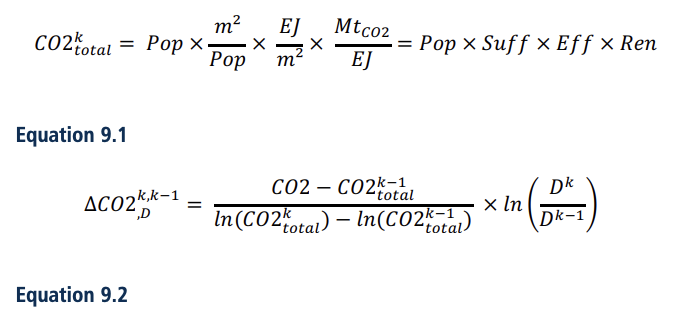
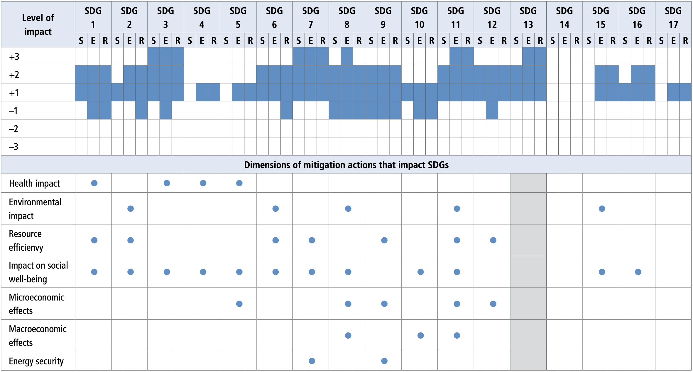

Coordinating Lead Authors:
Luisa F. Cabeza (Spain), Quan Bai (China)
Lead Authors:
Paolo Bertoldi (Italy), Jacob M. Kihila (the United Republic of Tanzania), André F.P. Lucena (Brazil), Érika Mata (Spain/Sweden), Sebastian Mirasgedis (Greece), Aleksandra Novikova (Germany/the Russian Federation), Yamina Saheb (France/Algeria)
Contributing Authors:
Peter Berrill (Germany/Ireland), Lucas R. Caldas (Brazil), Marta Chàfer (Spain), Shan Hu (China), Radhika Khosla (United Kingdom/India), William F. Lamb (Germany/United Kingdom), David Vérez (Cuba/Spain), Joel Wanemark (Sweden)
Review Editors:
Jesse Keenan (the United States of America/Austria), María Isabel Serrano Diná (the Dominican Republic)
Chapter Scientist:
Shan Hu (China)
This chapter should be cited as:
Cabeza, L. F., Q. Bai, P. Bertoldi, J.M. Kihila, A.F.P. Lucena, É. Mata, S. Mirasgedis, A. Novikova, Y. Saheb, 2022: Buildings. In IPCC, 2022: Climate Change 2022: Mitigation of Climate Change. Contribution of Working Group III to the Sixth Assessment Report of the Intergovernmental Panel on Climate Change [P.R. Shukla, J. Skea, R. Slade, A. Al Khourdajie, R. van Diemen, D. McCollum, M. Pathak, S. Some, P. Vyas, R. Fradera, M. Belkacemi, A. Hasija, G. Lisboa, S. Luz, J. Malley, (eds.)]. Cambridge University Press, Cambridge, UK and New York, NY, USA. doi: 10.1017/9781009157926.011
Total GHG emissions in the building sector reached 12 GtCO 2 -eq in 2019, equivalent to 21% of global GHG emissions that year, of which 57% were indirect CO 2 emissions from offsite generation of electricity and heat, followed by 24% of direct CO 2 emissions produced on-site and 18% from the production of cement and steel used for construction and/or refurbishment of buildings. If only CO 2 emissions would be considered, the share of buildings CO 2 emissions increases to 31% out of global CO 2 emissions. Energy use in residential and non-residential buildings contributed 50% and 32% respectively, while embodied emissions contributed 18% to global building CO 2 emissions. Global final energy demand from buildings reached 128.8 EJ in 2019, equivalent to 31% of global final energy demand. Residential buildings consumed 70% out of global final energy demand from buildings. Electricity demand from buildings was slightly above 43 EJ in 2019, equivalent to more than 18% of global electricity demand. Over the period 1990–2019, global CO 2 emissions from buildings increased by 50%, global final energy demand grew by 38%, with 54% increase in non-residential buildings and 32% increase in residential ones. Among energy carriers, the growth in global final energy demand was strongest for electricity, which increased by 161%.
There is growing scientific evidence about the mitigation potential of the building sector and its contribution to the decarbonisation of global and regional energy systems, and to meeting Paris Agreement goals and Sustainable Development Goals (SDGs) ( IPCC, 2018 ; IEA, 2019c ; IEA 2019e ). Mitigation interventions in buildings are heterogeneous in many different aspects, from building components (envelope, structure, materials, etc.) to services (shelter, heating, etc.), to building types (residential and non-residential, sometimes also called commercial and public), to building size, function, and climate zone. There are also variations between developed and developing countries in mitigation interventions to implement, as the former is challenged by the renovation of existing buildings while the latter is challenged by the need to accelerate the construction of new buildings.
This chapter aims at updating the knowledge on the building sector since the Intergovernmental Panel on Climate Change Fifth Assessment Report (IPCC AR5) (Lucon et al. 2014). Changes since AR5 are reviewed, including: the latest development of building service and components ( Section 9.2 ), findings of new building related GHG emission trends ( Section 9.3 ), latest technological ( Section 9.4 ) and non-technological ( Section 9.5 ) options to mitigate building GHG emissions, potential emission reduction from these measures at global and regional level ( Section 9.6 ), links to adaptation ( Section 9.7 ) and sustainable development ( Section 9.8 ), and sectoral barriers and policies ( Section 9.9 ).
The chapter introduces the concept of sufficiency, identified in the literature as a mitigation strategy with high potential, and is organised around the Sufficiency, Efficiency, Renewables (SER) framework (Box 9.1).
The SER framework was introduced in the late 1990s by a French NGO ( Negawatt 2017 ) advocating for a decarbonised energy transition. In 2015, the SER framework was considered in the design of the French energy transition law, and the French energy transition agency (ADEME) is developing its 2050 scenario based on the SER framework.
The three pillars of the SER framework include (i) sufficiency, which tackles the causes of the environmental impacts of human activities by avoiding the demand for energy and materials over the lifecycle of buildings and goods, (ii) efficiency, which tackles the symptoms of the environmental impacts of human activities by improving energy and material intensities, and (iii) the renewables pillar, which tackles the consequences of the environmental impacts of human activities by reducing the carbon intensity of energy supply (Box 9.1, Figure 1). The SER framework introduces a hierarchical layering, sufficiency first followed by efficiency and renewable, which reduces the cost of constructing and using buildings without reducing the level of comfort of the occupant.
Box 9.1, Figure 1 | SER framework applied to the building sector. Source: Saheb (2021) .
Applying sufficiency principles to buildings requires (i) optimising the use of buildings, (ii) repurposing unused existing ones, (iii) prioritising multi-family homes over single-family buildings, and (iv) adjusting the size of buildings to the evolving needs of households by downsizing dwellings ( Wilson and Boehland 2005 ; Duffy 2009 ; Fuller and Crawford 2011 ; Stephan et al. 2013 ; Huebner and Shipworth 2017 ; Sandberg 2018 ; McKinlay et al. 2019 ; Ellsworth-Krebs 2020 ; Berrill et al. 2021 ) (Box 9.1, Figure 2).
Sufficiency is not a new concept, its root goes back to the Greek word sôphrosunè , which was translated in Latin to sobrietas , in a sense of enough ( Cézard and Mourad 2019 ). The sufficiency concept was introduced to the sustainability policy debate by ( Sachs 1993 ) and to academia by ( Princen 2003 ). Since 1997, Thailand considers sufficiency, which was framed already in 1974 as Sufficiency Economy Philosophy, as a new paradigm for development with the aim of improving human well-being for all by shifting development pathways towards sustainability ( Mongsawad 2012 ). The Thai approach is based on three principles (i) moderation, (ii) reasonableness, and (iii) self-immunity. Sufficiency goes beyond the dominant framing of energy demand under efficiency and behaviour. Sufficiency is defined as avoiding the demand for materials, energy, land, water and other natural resources while delivering a decent living standard for all within the planetary boundaries ( Saheb 2021 b, Princen 2005) . Decent living standards are a set of essential material preconditions for human well-being which includes shelter, nutrition, basic amenities, health care, transportation, information, education, and public space ( Rao and Baer 2012 ; Rao and Min 2018 ; Rao et al. 2019 ). Sufficiency addresses the issue of a fair consumption of space and resources. The remaining carbon budget, and its normative target for distributional equity, is the upper limit of sufficiency, while requirements for a decent living standard define the minimum level of sufficiency. Sufficiency differs from efficiency in that the latter is about the continuous short-term marginal technological improvements which allow doing more
with less in relative terms without considering the planetary boundaries, while the former is about long-term actions driven by non-technological solutions (i.e., land-use management and planning), which consume less in absolute-term and are determined by the biophysical processes ( Princen 2003 ).
Box 9.1, Figure 2 | Sufficiency interventions and policies in the building sector. Source: Saheb (2021) .
Downsizing dwellings through cohousing strategies by repurposing existing buildings and clustering apartments when buildings are renovated and by prioritising multi-family buildings over single-family homes in new developments ( Wilson and Boehland 2005 ; Duffy 2009 ; Fuller and Crawford 2011 ; Stephan et al. 2013 ; Huebner and Shipworth 2017 ; Sandberg 2018 ; McKinlay et al. 2019 ; Ellsworth-Krebs 2020 ; Ivanova and Büchs 2020 ; Berrill and Hertwich 2021 ) are among the sufficiency measures that avoid the demand for materials in the construction phase and energy demand for heating, cooling and lighting in the use phase, especially if the conditioned volume and window areas are reduced ( Duffy 2009 ; Heinonen and Junnila 2014 ). Less space also means less appliances and equipment and changing preferences towards smaller ones ( Aro 2020 ). Cohousing strategies provide users, in both new and existing buildings, a shared space (i.e., for laundry, offices, guest rooms and dining rooms) to complement their private space. Thus, reducing per capita consumption of resources including energy, water and electricity ( Klocker et al. 2012 ; N. Klocker 2017 ), while offering social benefits such as limiting loneliness of elderly people and single parents ( Wankiewicz 2015 ; Riedy et al. 2019 ). Senior cooperative housing communities and eco-villages are considered among the cohousing examples to scale-up ( Kuhnhenn et al. 2020 ). Local authorities have an important role to play in the metamorphosis of housing by proposing communal spaces to be shared ( Williams 2008 ; Marckmann et al. 2012 ) through urban planning and land-use policies ( Duffy 2009 ; Newton et al. 2017 ). Thus, encouraging inter-generational cohousing as well as interactions between people with different social backgrounds ( Williams 2008 ; Lietaert 2010 ). Progressive tax policies based on a cap in the per-capita floor area are also needed to adapt the size of dwellings to households’ needs ( Murphy 2015 ; Akenji 2021).
Efficiency, and especially energy efficiency and more recently resource efficiency, and the integration of renewable to buildings are widespread concepts since the oil crisis of the seventies, while only most advanced building energy codes consider sufficiency measures ( IEA 2013 ). Efficiency and renewable technologies and interventions are described in Sections 9.4 and 9.9.
A systematic categorisation of policy interventions in the building sector through the SER framework (Box 9.1, Figure 1) enables identification of the policy areas and instruments to consider for the decarbonisation of the building stock, their overlaps as well as their complementarities. It also shows that sufficiency policies go beyond energy and climate policies to include land-use and urban planning policies as well as consumer policies suggesting a need for a different governance including local authorities and a bottom-up approach driven by citizen engagement.
Compared to AR5, this assessment introduces four novelties (i) the scope of CO 2 emissions has been extended from direct and indirect emissions considered in AR5 to include embodied emissions, (ii) beyond technological efficiency measures to mitigate GHG emissions in buildings, the contribution of non-technological, in particular of sufficiency measures to climate mitigation is also considered, (iii) compared to the IPCC Special Report on Global Warming of 1.5°C (SR1.5), the link to sustainable development, well-being and decent living standard for all has been further developed and strengthened, and finally (iv) the active role of buildings in the energy system by making passive consumers prosumers is also assessed.
COVID-19 emphasised the importance of buildings for human well-being, however, the lockdown measures implemented to avoid the spread of the virus has also stressed the inequalities in the access for all to suitable and healthy buildings, which provide natural daylight and clean air to their occupants (see also Cross-Chapter Box 1 in Chapter 1). COVID-19 and the new health recommendations (World Health Organization 2021) emphasised the importance of ventilation and the importance of indoor air quality ( Sundell et al. 2011 ; Nazaroff 2013 ; Fisk 2015 ; Guyot et al. 2018 ; Wei et al. 2020 ). The health crisis has also put an emphasis on preventive maintenance of centralised mechanical heating, ventilation, and cooling systems. Moreover, the lockdown measures have led to spreading the South Korean concept of officetel (office-hotel) ( Gohaud and Baek 2017 ) to many countries and to extending it to officetelschool . Therefore, the projected growth, prior to the COVID-19, of 58% of the global residential floor area by 2050 compared to the 290 billion m² yr –1 in 2019 might well be insufficient. However, addressing the new needs for more residential buildings may not, necessarily mean constructing new buildings. In fact, repurposing existing non-residential buildings, no longer in use due to the expected spread of teleworking triggered by the health crisis and enabled by digitalisation, could be the way to overcome the new needs for officetelschool triggered by the health crisis.
The four novelties introduced in this assessment link the building sector to other sectors and call for more sectoral coupling when designing mitigation solutions. Guidelines and methodologies developed in Chapters 1, 2, 3, 4 and 5 are adopted in this chapter. Detailed analysis in building GHG emissions is discussed based on Chapter 2 and scenarios to assess future emissions and mitigation potentials were selected based on Chapters, 3 and 4. There are tight linkages between this chapter and Chapter 6, 7, 8, 10 and 11, which are sectoral sectors. This chapter focusses more on individual buildings and building clusters, while Chapter 8 discusses macro topics in urban areas. Findings of this chapter provides contribution to cross-sectoral prospection (Chapter 12), policies (Chapter 13), international cooperation (Chapter 14), investment and finance (Chapter 15), innovation (Chapter 16), and sustainable development (Chapter 17).
This section mainly details the boundaries of the building sector; mitigation potentials are evaluated in the following sections.
Building types and their composition affect the energy consumption for building operation as well as the GHG emissions ( Hachem-Vermette and Singh 2019 ). They also influence the energy cost ( MacNaughton et al. 2015 ) therefore, an identification of building type is required to understand the heterogeneity of this sector. Buildings are classified as residential and non-residential buildings. Residential buildings can be classified as slums, single-family house and multi-family house or apartment/flats building. Single-family house can be divided between single-family detached (including cottages, house barns, etc.) and single-family attached (or terrace house, small multi-family, etc.). Another classification is per ownership: owner-occupiers, landlords, and owners’ association/condominiums.
Non-residential buildings have a much broader use. They include cultural buildings (which include theatres and performance, museums and exhibits, libraries, and cultural centres), educational buildings (kindergarten, schools, higher education, research centre, and laboratories), sports (recreation and training, and stadiums), healthcare buildings (health, well-being, and veterinary), hospitality (hotel, casino, lodging, nightlife buildings, and restaurants and bars), commercial buildings and offices (institutional buildings, markets, office buildings, retail, and shopping centres), public buildings (government buildings, security, and military buildings), religious buildings (including worship and burial buildings), and industrial buildings (factories, energy plants, warehouses, data centres, transportation buildings, and agricultural buildings).
An understanding of the methods for assembling various materials, elements, and components is necessary during both the design and the construction phase of a building. A building can be broadly divided into parts: the substructure which is the underlying structure forming the foundation of a building, and the superstructure, which is the vertical extension of a building above the foundation.
There is not a global classification for the building components. Nevertheless, Figure 9.1 tries to summarise the building components found in literature ( Mañá Reixach 2000 ; Asbjørn 2009 ; Ching 2014 ). The buildings are divided in the substructure and the superstructure. The substructure is the foundation of the building, where the footing, basement, and plinth are found. The superstructure integrates the primary elements (heavyweight walls, columns, floors and ceilings, roofs, sills and lintels, and stairs), the supplementary components (lightweight walls and curtain walls), the completion components (doors and windows), the finishing work (plastering and painting), and the buildings services (detailed in Section 9.3 ).
Figure 9.1 | The main building components.
At a global level, from historical perspective (from the Neolithic to the present), building techniques have evolved to be able to solve increasingly complex problems. Vernacular architecture has evolved over many years to address problems inherent in housing. Through a process of trial and error, populations have found ways to cope with the extremes of the weather. The industrial revolution was the single most important development in human history over the past three centuries. Previously, building materials were restricted to a few manmade materials (lime mortar and concrete) along with those available in nature as timber and stone. Metals were not available in sufficient quantity or consistent quality to be used as anything more than ornamentation. The structure was limited by the capabilities of natural materials; this construction method is called on-site construction which all the work is done sequentially at the buildings site. The Industrial Revolution changed this situation dramatically, new building materials emerged (cast-iron, glass structures, steel-reinforced concrete, steel). Iron, steel and concrete were the most important materials of the nineteenth century ( Wright 2000 ; De Villanueva Domínguez 2005 ). In that context, prefabricated buildings (prefabrication also known as pre-assembly or modularisation) appeared within the so-called off-site construction. Prefabrication has come to mean a method of construction whereby building elements and materials, ranging in size from a single component to a complete building, are manufactured at a distance from the final building location. Prefabricated buildings have been developed rapidly since the Second World War and are widely used all over the world ( Pons 2014 ; Moradibistouni et al. 2018 ).
Recently, advances in technology have produced new expectations in terms of design possibilities. In that context, 3D printing seems to have arrived. 3D printing may allow in the future to build faster, cheaper and more sustainable ( Agustí-Juan et al. 2017 ; García de Soto et al. 2018 ). At the same time, it might introduce new aesthetics, new materials, and complex shapes that will be printed at the click of a mouse on our computers. Although 3D printing will not replace architectural construction, it would allow optimisation of various production and assembly processes by introducing new sustainable construction processes and tools ( De Schutter et al. 2018 ). Nevertheless, what is clear is that 3D printing is a technology still in development, with a lot of potentials and that it is advancing quite quickly ( Hager et al. 2016 ; Stute et al. 2018 ; Wang et al. 2020 ).
Building services make buildings more comfortable, functional, efficient, and safe. In a generic point of view, building services include shelter, nutrition, sanitation, thermal, visual, and acoustic comfort, entertainment, communications, elevators, and illumination. In a more holistic view building services are classified as shown in Figure 9.2.
Figure 9.2 | Classification of building services. The coloured small squares to the left of each building service denote to which other classifications that building service may relate to a lesser extent. Source: adapted from Vérez and Cabeza (2021) .
A building management system is a system of devices configured to control, monitor, and manage equipment in or around a building or building area and is meant to optimise building operations and reduce cost ( Schuster et al. 2019 ). Recent developments include the integration of the system with the renewable energy systems ( Arnone et al. 2016 ), most improved and effective user interface ( Rabe et al. 2018 ), control systems based on artificial intelligence and internet of things (IoT) ( Farzaneh et al. 2021 ).
The use of air conditioning systems in buildings will increase with the experienced rise in temperature ( Davis and Gertler 2015 ; De Falco et al. 2016 ) (Figure 9.8). This can ultimately lead to high energy consumption rates. Therefore, adoption of energy efficient air conditioning is pertinent to balance the provision of comfortable indoor conditions and energy consumption. Some of the new developments that have been done include ice refrigeration ( Xu et al. 2017 ), the use of solar photovoltaic power in the air conditioning process ( Burnett et al. 2014 ), and use of common thermal storage technologies ( De Falco et al. 2016 ) all of which are geared towards minimising energy consumption and greenhouse gas emissions.
Building designs have to consider provision of adequate ventilation. Natural ventilation reduces energy consumption in buildings in warm climates compared to air conditioning systems ( Taleb 2015 ; Azmi et al. 2017 ). Enhanced ventilation has higher benefits to the public health than the economic costs involved ( MacNaughton et al. 2015 ).
On the refrigeration systems, the recent developments include the use of solar thermoelectric cooling technologies as an energy efficient measure ( Liu et al. 2015b ); use of nanoparticles for energy saving ( Azmi et al. 2017 ) to mention some.
Lambertz et al. (2019) stated that when evaluating the environmental impact of buildings, building services are only considered in a very simplified way. Moreover, it also highlights that the increasing use of new technologies such as Building Information Modelling (BIM) allows for a much more efficient and easier calculation process for building services, thus enabling the use of more robust and complete models. Furthermore, recent studies on building services related to climate change ( Vérez and Cabeza 2021 ) highlight the importance of embodied energy ( Parkin et al. 2019 ) ( Section 9.4 ).
Total GHG emissions in the building sector reached 12 GtCO 2- eq in 2019, equivalent to 21% of global GHG emissions that year. 57% of GHG emissions from buildings were indirect CO 2 emissions from generation of electricity and heat off-site, 24% were direct CO 2 emissions produced on-site, and 18% were from the production of cement and steel used for construction and refurbishment of buildings (see Cross-Chapter Box 3 and Cross-Working Group Box 1 in Chapter 3, and Figure 9.3a). Halocarbon emissions were equivalent to 3% of global building GHG emissions in 2019. In the absence of the breakdown of halocarbon emissions per end-use sectors, they have been calculated for the purpose of this chapter, by considering that 60% of global halocarbon emissions occur in buildings ( Hu et al. 2020 ). CH 4 and N 2 O emissions were negligible, representing 0.08% each out of the 2019 global building GHG emissions. Therefore, this chapter considers only CO 2 emissions from buildings. By limiting the scope of the assessment to CO 2 emissions, the share of emissions from buildings increases to 31% of global 2019 CO 2 emissions. Energy use in residential and non-residential buildings contributed 50% and 32% respectively, while embodied emissions contributed 18% to global building CO 2 emissions.
Figure 9.3: Building GHG emissions: historical based on IEA data and future emissions based on two IEA scenarios (sustainable development, and net zero emissions), IMAGE Lifestyle-Renewable scenario and Resource Efficiency and Climate Change-Low Energy Demand scenario (RECC-LED). RECC-LED data include only space heating and cooling and water heating in residential buildings. The IEA current policies scenario is included as a baseline scenario (IEA current policies scenario).
Over the period 1990–2019, global CO 2 emissions from buildings increased by 50%. Global indirect CO 2 emissions increased by 92%, driven by the increase of fossil fuels-based electrification, while global direct emissions decreased by 1%. At regional level, emissions in residential buildings decreased in Developed Countries, except in Australia, Japan and New Zealand, while they increased in developing countries. The highest decrease was observed in Europe and Eurasia, with 13.6% decrease of direct emissions and 33% decrease of indirect emissions, while the highest increase of direct emissions occurred in Middle East, 198%, and the highest increase of indirect emissions occurred in Eastern Asia, 2258%. Indirect emissions from non-residential buildings increased in all regions. The highest increase occurred in Eastern Asia, 1202%, and the lowest increase occurred in Europe and Central Asia, 4%, where direct emissions from non-residential buildings decreased by 51%. Embodied emissions have also increased in all regions. The highest increase occurred in Southern Asia, 334%, while the lowest increase occurred in North America, 4% (Figure 9.3b).
Future emissions were assessed using four global scenarios and their respective baselines (Box 9.2). The selection of the scenarios was based on the features of each scenario, the geographic scope, and the data availability to analyse future building emissions based on the SER framework (Box 9.1).
Three out of the four scenarios selected, and their related baselines, are based on top-down modelling and were submitted to AR6 scenario database, which includes in total 931 scenarios with a building module (Annex III; see also Boxes 3.1 and 3.2, and Cross-Chapter Box 3 in Chapter 3). A fourth scenario, not included in AR6 scenario database, and based on a bottom-up modelling approach was added.
The main features of these scenarios are shortly described below while the underlying modelling approaches are described in Annex III. Each scenario is assessed compared to its baseline scenario:
2021 Net Zero Emissions by 2050 Scenario (NZE) is a normative scenario, which sets out a narrow but achievable pathway for the global energy sector to achieve net zero CO 2 emissions by 2050 ( IEA 2021a ).
2020 Sustainable Development Scenario (SDS) , which integrates the impact of COVID-19 on health outcomes and economies. It is also a normative scenario, working backwards from climate, clean air, and energy access goals. SDS examines what actions would be necessary to achieve these goals. The near-term detail is drawn from the IEA Sustainable Recovery Plan, which boosts economies and employment while building cleaner and more resilient energy systems ( IEA 2020c ).
Analysis of the IEA scenarios above was conducted compared to the 2019 Current Policies Scenario, which shows what happens if the world continues along its present path ( IEA 2020c ), and considered as a baseline scenario.
IMAGE-Lifestyle-Renewable (LiRE) scenario is based on an updated version of the SSP2 baseline, while also meeting the RCP2.6 radiative forcing target using carbon prices, together with the increased adoption of additional lifestyle changes, by limiting the growth in the floor area per capita in Developed Countries as well as the use of appliances. Regarding energy supply, IMAGE-LiRE assumes increased electrification and increased share of renewable in the energy mix (Detlef Van Vuuren et al. 2021 ).
Resource Efficiency and Climate Change-Low Energy Demand (RECC-LED) scenario is produced by a global bottom-up model, which assesses contributions of resource efficiency to climate change mitigation. RECC-LED estimates the energy and material flows associated with housing stock growth, driven by population and the floor area per capita ( Pauliuk et al. 2021 ). This scenario is informed by the Low Energy Demand Scenario (LED), which seeks convergence between developed and developing countries in the access to decent living standard ( Grubler et al. 2018 ).
For consistency between the four scenarios, aggregation of regions in this chapter differs from the one of the IPCC. Europe and Eurasia have been grouped into one single region.
The IEA-NZE scenario projects emissions from the global building stock to be lowered to 29 MtCO 2 by 2050 against 1.7 GtCO 2 in the IEA-SDS and 3.7 GtCO 2 in IMAGE-LiRE Scenario. These projections can be compared to IEA-CPS in which global emissions from buildings were projected to be at 13.5 GtCO 2 in 2050, which is equivalent to the 2018 emissions level (Figure 9.3a). By 2050, direct emissions from residential buildings are projected to be lowered to 108 MtCO 2 in the IEA-NZE, this is four times less than the projected direct emissions in RECC-LED scenario, six times less than those under the IEA-SDS and eleven times less than those in the IMAGE-LiRE scenario.
In the IEA-NZE scenario, indirect emissions are projected to be below zero by 2050 for both residential and non-residential buildings, while residual indirect emissions from residential buildings are projected to be 125 MtCO 2 in RECC-LED, 634 MtCO 2 in IEA-SDS, and 842 GtCO 2 in IMAGE-LiRE. Residual indirect emissions from non-residential buildings are projected to be at 1.7 GtCO 2 in IEA SDS and double of this in IMAGE-LiRE scenario (Figure 9.3a). Compared to IEA-SDS, the highest decrease of emissions in IEA-NZE is expected to occur after 2030. Direct emissions from residential buildings in IEA-NZE are projected to be, by 2030, at 1.37 GtCO 2 , against 1.7 GtCO 2 in the three other scenarios. The highest cut in emissions in IEA-NZE and in IMAGE-LiRE occur through the decarbonisation of energy supply.
At regional level, by 2050, the lowest emissions are projected to occur in developed Asia and Pacific, with 6.73 MtCO 2 under RECC-LED scenario and 12.4 MtCO 2 under the IEA-SDS, and the highest emissions are projected to occur in Europe and Eurasia in all three scenarios, with 152 MtCO 2 in IEA-SDS, 199 MtCO 2 in RECC-LED scenario and 381 MtCO 2 in IMAGE-LiRE scenario. Emissions in Africa are projected to decrease to 10 MtCO 2 in RECC-LED, this is nine time less than those of 2019, while they are projected to increase by 25% in IEA-SDS compared to those of 2019. Compared to IEA-SDS and IMAGE-LiRE, RECC-LED projects the highest decreases, over the period 2020–2030, of direct emissions in residential buildings in all regions, up to 45% in Australia, Japan and New Zealand, and Eastern Asia and the highest decreases of indirect emissions, ranging from 52% in Eastern Asia to 86% in Latin America and Caribbean. Over the same period, the IEA-SDS projects the highest decreases of indirect emissions to occur in Australia, Japan and New Zealand, and North America. IMAGE-LiRE projects the lowest decreases of emissions over the same decade in almost all regions (Figure 9.3b).
Emissions per capita from residential buildings at a global level reached 0.85 tCO 2 per person in 2019. The four scenarios assessed project a decrease of the global per capita emissions by 2050, ranging from 0 tCO 2 in IEA-NZE 0.21 tCO 2 per person in IMAGE-LiRE, a 75% lower than those of 2019 (Figure 9.4a). There are great differences in the projected per capita emissions under each scenario different scenarios across the regions (Figure 9.4b). Compared to IEA-SDS and IMAGE-LiRE scenarios, RECC-LED projects the lowest emissions per capita in all regions by 2050. Emissions per capita in Europe and Eurasia are projected to be the highest in all scenarios by 2050, ranging from 0.26 tCO 2 in RECC-LED and 0.31 tCO 2 in IEA-SDS to 0.65 tCO 2 in IMAGE-LiRE.
Figure 9.4 | Per capita emissions: historical based on IEA data and future emissions based on two IEA scenarios (sustainable development, and net zero emissions), IMAGE Lifestyle-Renewable scenario and Resource Efficiency and Climate Change-Low Energy Demand scenario (RECC-LED). RECC-LED data include only space heating and cooling and water heating in residential buildings. The IEA current policies scenario is included as a baseline scenario (IEA current policies scenario).
Building specific drivers of GHG emissions in the four scenarios described above are assessed using an index decomposition analysis with building specific identities and reflecting the three pillars of the Sufficiency, Efficiency, Renewables (SER) framework. Broad drivers of GHG emissions such as GDP and population are analysed using a Kaya decomposition in Chapter 2. Previous decompositions analysing drivers of global GHG emissions in the building sector have either assessed only the impact of GDP and population as drivers of GHG emissions ( Lamb et al. 2021 ) or the impact of building specific drivers on energy demand and not on CO 2 emissions (Lucon et al. 2014; Ürge-Vorsatz et al. 2015 ; IEA 2020c ; ODYSSEE 2020). For this assessment, the decomposition was conducted for energy-related CO 2 emissions for residential buildings only, due to lack of data for non-residential buildings.
The attribution of changes in emissions in the use phase to changes in the drivers of population, sufficiency, efficiency, and carbon intensity of energy supply is calculated using additive log-mean divisia index decomposition analysis ( Ang and Zhang 2000 ). The decomposition of emissions into four driving factors is shown in Equation 1, where m 2 refers to total floor area, EJ refers to final energy demand, and MtCO 2 refers to the sum of direct and indirect CO 2 emissions in the use phase. The allocation of changes in emissions between two cases k and k – 1 to changes in a single driving factor D is shown in Equation 2. To calculate changes in emissions due to a single driver such as population growth, D will take on the value of population in the two compared cases. The superscript k stands for the case, defined by the time period and scenario of the emissions, for example, IEA-CPS baseline scenario in 2050. When decomposing emissions between two cases k and k–1 , either the time-period, or the scenario remains constant. The decomposition was done at the highest regional resolution available from each model output, and then aggregated to regional or global level. For changes in emissions within a scenario over time, the decomposition is done for every decade, and the total 2020–2050 decomposition is then produced by summing decompositions of changes in emissions each decade.

Figure 9.5: Decompositions of changes in historical residential energy emissions 1990–2019, changes in emissions projected by baseline scenarios for 2020–2050, and differences between scenarios in 2050 using scenarios from three models: IEA, IMAGE, and RECC. RECC-LED data include only space heating and cooling and water heating in residential buildings (a) global resolution, and (b) for nine world regions. Emissions are decomposed based on changes in driver variables of population, sufficiency (floor area per capita), efficiency (final energy per floor area), and renewables (GHG emissions per final energy). ‘Renewables’ is a summary term describing changes in GHG intensity of energy supply. Emission projections to 2050, and differences between scenarios in 2050, demonstrate mitigation potentials from the dimensions of the SER framework realised in each model scenario. In most regions, historical improvements in efficiency have been approximately matched by growth in floor area per capita. Implementing sufficiency measures that limit growth in floor area per capita, particularly in developed regions, reduces the dependence of climate mitigation on technological solutions.
Scenarios assessed show an increase of the untapped sufficiency potential at the global level over the period 2020–2050. The highest untapped sufficiency potential occurs in IEA scenarios as there are no changes in the floor area per capita across different scenarios. The lack of sufficiency measures in current policies will contribute to increasing emissions by 54%, offsetting the efficiency improvement effect. By setting a cap in the growth of the floor area per capita in developed countries, 5% of emission reductions in IMAGE-LiRE scenario derives from sufficiency. However, compared to 2020, the lack of sufficiency measures in the baseline scenario will contribute to increasing emissions by 31%. RECC-LED scenario shows the highest global sufficiency potential captured compared to its baseline scenario in 2050 as this scenario assumes a reduction in the floor area per capita in Developed Countries and slower floor area growth in emerging economies. The four scenarios show a higher contribution of the decarbonisation of energy supply to reducing emissions than the reduction of energy demand through sufficiency and efficiency measures (Figure 9.6a). At regional level, the emissions reduction potential from sufficiency is estimated at 25% in North America under both IMAGE-LiRE and RECC-LED scenarios and at 19% in both Eastern Asia and Europe/Eurasia regions (Figure 9.6b). The highest decarbonisation potential due to growth of renewable energy is 75% in Southern Asia under IMAGE-LiRE scenario.
Figure 9.6 | Per capita floor area: historical based on IEA data and future emissions based on two IEA scenarios (sustainable development, and net zero emissions), IMAGE Lifestyle-Renewable scenario and Resource Efficiency and Climate Change-Low Energy Demand scenario (RECC-LED). RECC-LED data include only space heating and cooling and water heating in residential buildings. The IEA current policies scenario is included as a baseline scenario (IEA current policies scenario).
There is a growing literature on the decarbonisation of end-use sectors while providing decent living standard for all ( Rao and Pachauri 2017 ; Grubler et al. 2018 ; Rao and Min 2018 ; Rao et al. 2019 ; Millward-Hopkins et al. 2020 ). The floor area per capita is among the gaps identified in the convergence between developed and developing countries in the access to decent living ( Kikstra et al. 2021 ) while meeting energy needs. In the Low Energy Demand (LED) scenario, 30 m² per capita is the converging figure assumed by 2050 ( Grubler et al. 2018 ) while in the Decent Living with minimum Energy (DLE) scenario, ( Millward-Hopkins et al. 2020 ) assumes 15 m² per capita.
Overall, the global residential building stock grew by almost 30% between 2005 and 2019. However, this growth was not distributed equally across regions and three out of the four scenarios assessed do not assume a convergence, by 2050, in the floor area per capita, between developed and developing countries. Only RECC-LED implements some convergence between Developed Countries and emerging economies to a range of 20–40 m² per capita. IEA scenarios assume a growth in the floor area per capita in all regions with the highest growth in Developed Countries, up to 72 m² per capita in North America from 66 m² per capita in 2019. IMAGE-LiRE projects a floor area per capita in Africa at 14 m² per person. This is lower than the one of 2019, which was at 16 m² per capita (Figure 9.6). Beyond capturing the sufficiency potential by limiting the growth in the floor area per capita in Developed Countries while ensuring decent living standard, the acceptability of the global scenarios by developing countries is getting attraction in academia ( Hickel et al. 2021 ).
Global final energy demand from buildings reached 128.8 EJ in 2019, equivalent to 31% of global final energy demand. The same year, residential buildings consumed 70% out of global final energy demand from buildings. Over the period 1990–2019, global final energy demand from buildings grew by 38%, with 54% increase in non-residential buildings and 32% increase in residential ones. At regional level, the highest increase of final energy demand occurred in Middle East and Africa in residential buildings and in all South-East Asia and Pacific in non-residential ones. By 2050, global final energy demand from buildings is projected to be at 86 EJ in IEA-NZE, 111 EJ in IEA-SDS and 138 EJ in IMAGE-LiRE. RECC-LED projects the lowest global final energy demand, at 15.7 EJ by 2050, but this refers to water heating, space heating and cooling in residential buildings only (Figure 9.7a).
Figure 9.7: Final energy demand per fuel: historical based on IEA data and future emissions based on two IEA scenarios (sustainable development, and net zero emissions), IMAGE Lifestyle-Renewable scenario and Resource Efficiency and Climate Change-Low Energy Demand scenario (RECC-LED). RECC-LED data include only space heating and cooling and water heating in residential buildings. The IEA current policies scenario is included as a baseline scenario (IEA current policies scenario).
Over the period 1990–2019, the use of coal decreased at a global level by 59% in residential buildings and 52% in non-residential ones. Solar thermal experienced the highest increase, followed by geothermal and electricity. However, by 2019, solar thermal and geothermal contributed by only 1% each to global final energy demand, while electricity contributed by 51% in non-residential buildings and 26% in residential ones. The same year, gas contributed by 26% to non-residential final energy demand and 22% to residential final energy demand, which makes gas the second energy carrier used in buildings after electricity. Over the period 1990–2019, the use of gas grew by 75% in residential buildings and by 46% in non-residential ones. By 2050, RECC-LED projects electricity to contribute by 71% to final energy demand in residential buildings, against 62% in IEA-NZE and 59% in IMAGE-LiRE. IEA-NZE is the only scenario to project less than 1% of gas use by 2050 in residential buildings while the contribution of electricity to energy demand of non-residential buildings is above 60% in all scenarios. At regional level, the use of coal in buildings is projected to disappear while the use of electricity is projected to be above 50% in all regions by 2050 (Figure 9.7b).
Hydrogen emerged in the policy debate as an important energy carrier for the decarbonisation of the energy system. In the case of the building sector, depending on how hydrogen is sourced (Box 12.3), converting gas grids to hydrogen might be an appealing option to decarbonise heat without putting additional stress on the electricity grids. However, according to ( Element Energy Ltd 2018 ; Strbac et al. 2018 ; Frazer-Nash Consultancy 2018 ; Broad et al. 2020 ; Gerhardt et al. 2020 ) the delivered cost of heat from hydrogen would be much higher than the cost of delivering heat from heat pumps, which could also be used for cooling. Repurposing gas grids for pure hydrogen networks will also require system modifications such as replacement of piping and replacement of gas boilers and cooking appliances, a factor cost to be considered when developing hydrogen roadmaps for buildings. There are also safety and performance concerns with domestic hydrogen appliances ( Frazer-Nash Consultancy 2018 ). Over the period 1990–2019, hydrogen was not used in the building sector and scenarios assessed show a very modest role for hydrogen in buildings by 2050 (Figure 9.7).
In Developed Countries, biomass is used for generating heat and power leading to reduction of indirect emissions from buildings ( Ortwein 2016 ) (IEA et al. 2020 c). However, according to ( IEA 2019b ) despite the mitigation potential of biomass, if the wood is available locally, its use remains low in Developed Countries. Biomass is also used for efficient cook stoves and for heating using modern appliances such as pellet-fed central heating boilers. In developing countries, traditional use of biomass is characterised by low efficiency of combustion (due to low temperatures) leading to high levels of pollutants and CO output, as well as low efficiency of heat transfer. The traditional use of biomass is associated with public health risks such as premature deaths related to inhaling fumes from cooking ( Dixon et al. 2015 ; Van de Ven et al. 2019 ; IEA 2019a ; Taylor et al. 2020 ). According to ( Hanna et al. 2016 ) policies failed in improving the use of biomass. Over the period 1990–2019, the traditional use of biomass decreased by 1% and all scenarios assessed do not project any traditional use of biomass by 2050. Biomass is also used for the construction of buildings, leading to low embodied emissions compared to concrete ( Heeren et al. 2015 ; Hart and Pomponi 2020 ; Pauliuk et al. 2021 ).
Over the period 1990–2019, space heating was the dominant end-use in residential buildings at a global level, followed by water heating, cooking, and connected and small appliances (Figure 9.8a). However, energy demand from connected and small appliances experienced the highest increase, 280%, followed by cooking, 89%, cooling, 75%, water heating, 73% and space heating, around 10%. Space heating energy demand is projected to decline over the period 2020–2050 in all scenarios assessed. RECC-LED projects the highest decrease, 77%, of space heating energy demand, against 68% decrease in the IEA-NZE. IMAGE-LiRE projects the lowest decrease of heating energy demand, 21%. To the contrary, all scenarios confirm cooling as a strong emerging trend (Box 9.3) and project an increase of cooling energy demand. IMAGE-LiRE projects the highest increase, 143% against 45% in the IEA-NZE while RECC-LED projects the lowest increase of cooling energy demand, 32%.
There are great differences in the contribution of each end-use to the regional energy demand (Figure 9.8b). In 2019, more than 50% of residential energy demand in Europe and Eurasia was used for space heating while there was no demand for space heating in Middle East, reflecting differences in climatic conditions. To the contrary, the share of energy demand from cooking out of total represented 53% in the Middle East against 5% in Europe and Eurasia reflecting societal organisations. The highest contribution of energy demand from connected and small appliances to the regional energy demand was observed in 2019 in the Asia-Pacific Developed, 24%, followed by the region of Southern Asia, South-East Asia and Developing Pacific, with 17%. Energy demand from cooling was at 9% out of total energy demand of Southern Asia, South-East Asia and Developing Pacific and at 8% in both Middle East and North America while it was at 1% in Europe in 2019.
The increased cooling demand can be partly explained by the increased ownership of room air-conditioners per dwellings in all regions driven by increased wealth and the increased ambient temperatures due to global warming ( Cayla et al. 2011 ; Liddle and Huntington 2021 ) (Box 9.3). The highest increase, 32%, in ownership of room air-conditioners was observed in Southern Asia and South-East Asia and Developing Pacific while Europe, Latin America and Caribbean countries, Eastern Asia and Africa experienced an increase of 21% in households’ ownership of room air-conditioners. The lowest increases in room air-conditioners ownership were observed in the Middle East and North America with 1% and 8% each as these two markets are almost saturated. All scenarios assessed project an increase of ownership of cooling appliances in all regions over the period 2020–2050.
Energy demand from connected and small appliances was, at a global level, above 7 EJ in 2019 (Figure 9.8a). However, it is likely that global energy demand from connected and small appliances is much higher as reported data do not include all the connected and small appliances used by households and does not capture energy demand from data centres (Box 9.3). Over the period 1990–2019, the highest increase of energy demand from connected and small appliances, 4740%, was observed in Eastern Asia, followed by Southern Asia, 1358% while the lowest increase, 99%, occurred in Asia-Pacific Developed countries. The increase of energy demand from connected and small appliances is driven by the ownership increase of such appliances all over the world. The highest increase in ownership of connected appliances, 403%, was observed in Eastern Asia and the lowest increase in ownership of connected appliances was observed in North America, 94%. Future energy demand is expected to occur in the developing world given the projected rate of penetration of household appliances and devices ( Wolfram et al. 2012 ). However, ( Grubler et al. 2018 ) projects a lower energy demand from connected and small appliances by assuming an increase of shared appliances and multiple appliances and equipment will be integrated into units delivering multiple services.
Figure 9.8: Energy per end use: historical based on IEA data and future emissions based on two IEA scenarios (sustainable development, and net zero emissions), IMAGE Lifestyle-Renewable scenario and Resource Efficiency and Climate Change-Low Energy Demand scenario (RECC-LED). RECC-LED data include only space heating and cooling and water heating. The IEA current policies scenario is included as a baseline scenario (IEA current policies scenario).
Literature assessed points to three major energy demand trends:
Cooling energy demand
In a warming world ( IPCC 2021 ) with a growing population and expanding middle-class, the demand for cooling is likely to increase leading to increased emissions if cooling solutions implemented are carbon intensive ( Santamouris 2016 ; Sustainable Energy for All 2018 ; Dreyfus et al. 2020b ; Kian Jon et al. 2021 ; UNEP and IEA 2020 ). Sufficiency measures such as building design and forms, which allow balancing the size of openings, the volume, the wall and window area, the thermal properties, shading, and orientation are all non-cost solutions, which should be considered first to reduce cooling demand. Air conditioning systems using halocarbons are the most common solutions used to cool buildings. Up to 4 billion cooling appliances are already installed and this could increase to up to 14 billion by 2050 ( Peters 2018 ; Dreyfus et al. 2020b ). Energy efficiency of air conditioning systems is of a paramount importance to ensuring that the increased demand for cooling will be satisfied without contributing to global warming through halocarbon emissions ( Campbell 2018 ; Shah et al. 2015 , 2019; UNEP and IEA 2020 ). The installation of highly efficient technological solutions with low global warming potential (GWP), as part of the implementation of the Kigali amendment to the Montreal Protocol, is the second step towards reducing GHG emissions from cooling. Developing renewable energy solutions integrated to buildings is another track to follow to reduce GHG emissions from cooling.
Electricity energy demand
Building electricity demand was slightly above 43 EJ in 2019, which is equivalent to more than 18% of global electricity demand. Over the period 1990–2019, electricity demand increased by 161%. The increase of global electricity demand is driven by the combination of rising incomes, income distribution and the S-curve of ownership rates ( Wolfram et al. 2012 ; Gertler et al. 2016 ). Electricity is used in buildings for plug-in appliances, in other words, refrigerators, cleaning appliances, connected and small appliances and lighting. An important emerging trend in electricity demand is the use of electricity for thermal energy services (cooking, water and space heating). The increased penetration of heat pumps is the main driver of the use of electricity for heating. Heat pumps used either individually or in conjunction with heat networks can provide heating in cold days and cooling in hot ones. ( Lowes et al. 2020 ) suggests electricity is expected to become an important energy vector to decarbonise heating. However, the use of heat pumps will increase halocarbon emissions ( UNEP and IEA 2020 ). Connolly (2017) , Bloess et al. (2018) , and Barnes and Bhagavathy (2020) argue for electrification of heat as a cost-effective decarbonisation measure, if electricity is supplied by renewable energy sources ( Ruhnau et al. 2020 ). The electrification of the heat supplied to buildings is likely to lead to an additional electricity demand and consequently additional investment in new power plants. Thomaßen et al. (2021) identifies flexibility as a key enabler of larger heat electrification shares. Importantly, heat pumps work at their highest efficiency level in highly efficient buildings and their market uptake is likely to require incentives due to their high up-front cost ( Hannon 2015 ; Heinen et al. 2017 ).
Digitalisation energy demand
Energy demand from digitalisation occurs in data centres, which are dedicated buildings or part of buildings for accommodating large amount of information technologies equipment such as servers, data storage and communication devices, and network devices. Data centres are responsible for about 2% of global electricity consumption ( Avgerinou et al. 2017 ; Diguet and Lopez 2019 ). Energy demand from data centres arises from the densely packed configuration of information technologies, which is up to 100 times higher than a standard office accommodation ( Chu and Wang 2019 ). Chillers combined with air handling units are usually used to provide cooling in data centres. Given the high cooling demand of data centres, some additional cooling strategies, such as free cooling, liquid cooling, low-grade waste heat recovery, absorption cooling and so on, have been adopted. In addition, heat recovery can
provide useful heat for industrial and building applications. More recently, data centres are being investigated as a potential resource for demand response and load balancing ( Zheng et al. 2020 ; Koronen et al. 2020 ). Supplying data centres with renewable energy sources is increasing ( Cook et al. 2014 ) and is expected to continue to increase ( Koomey et al. 2011 ). Estimates of energy demand from digitalisation (connected and small appliances, data centres, and data networks) combined vary from 5% to 12% of global electricity use ( Gelenbe and Caseau 2015 ; Malmodin and Lundén 2018 ; Ferreboeuf 2019 ; Diguet and Lopez 2019 ). According to ( Ferreboeuf 2019 ) the annual increase of energy demand from digitalisation could be limited to 1.5% against the current 4% if sufficiency measures are adopted along the value chain.
Digitalisation occurs also at the construction stage. ( European Union 2019 ; Witthoeft and Kosta 2017 ) identified seven digital technologies already in use in the building sector. These technologies include (i) Building Information Modelling/Management (BIM), (ii) additive manufacturing, also known as 3D printing, (iii) robots, (iv) drones, (v) 3D scanning, (vi) sensors, and (vii) internet of things (IoT). BIM supports decision making in the early design stage and allows assessing a variety of design options and their embodied emissions ( Basbagill et al. 2013 ; Röck et al. 2018 ). 3D printing reduces material waste and the duration of the construction phase as well as labour accidents ( Dixit 2019 ). Coupling 3D printing and robots allows for increasing productivity through fully automated prefabricated buildings. Drones allow for a better monitoring and inspection of construction projects through real-time comparison between planned and implemented solutions. Coupling drones with 3D scanning allows predicting building heights and energy consumption ( Streltsov et al. 2020 ). Sensors offer a continuous data collection and monitoring of end-use services (i.e., heating, cooling, and lighting), thus allowing for preventive maintenance while providing more comfort to end-users. Coupling sensors with IoT, which connects to the internet household appliances and devices such as thermostats, enable demand-response, and flexibility to reduce peak loads ( IEA 2017a ; Lyons 2019 ). Overall, connected appliances offer a variety of opportunities for end-users to optimise their energy demand by improving the responsiveness of energy services ( IEA 2017a ; Nakicenovic et al. 2019 ) through the use of digital goods and services ( Wilson et al., 2020 ) including peer-to-peer electricity trading ( Morstyn et al. 2018 ).
Literature in this topic is extensive, but unfortunately, most studies and reviews do not relate themselves to climate change mitigation, therefore there is a clear gap in reporting the mitigation potential of the different technologies ( Cabeza et al. 2020 ). It should be highlighted that when assessing the literature, it is clear that a lot of new research is focused on the improvement of control systems, including the use of artificial intelligence or internet of things (IoT).
This section is organised as follow. First, the key points from AR5 and special reports are summarised, following with a summary of the technological developments since AR5, specially focusing on residential buildings.
The AR5 WG3 Chapter 9 on Buildings (Lucon et al. 2014) presents mitigation technology options and practices to achieve large reductions in building energy use as well as a synthesis of documented examples of large reductions in energy use achieved in real, new, and retrofitted buildings in a variety of different climates and examples of costs at building level. A key point highlighted is the fact that the conventional process of designing and constructing buildings and its systems is largely linear, losing opportunities for the optimisation of whole buildings. Several technologies are listed as being able to achieve significant performance improvements and cost potentials (daylighting and electric lighting, household appliances, insulation materials, heat pumps, indirect evaporative cooling, advances in digital building automation and control systems, and smart meters and grids to implement renewable electricity sources).
As building energy demand is decreased the importance of embodied energy and embodied carbon in building materials increases ( Ürge-Vorsatz et al. 2020 ). Buildings are recognised as built following five building frames: concrete, wood, masonry, steel, and composite frames (International Energy Agency 2019a); but other building frames should be considered to include worldwide building construction practice, such as rammed earth and bamboo in vernacular design ( Cabeza et al. 2021 ).
The most prominent materials used following these frames classifications are the following. Concrete, a man-made material, is the most widely used building material. Wood has been used for many centuries for the construction of buildings and other structures in the built environment; and it remains as an important construction material today. Steel is the strongest building material; it is mainly used in industrial facilities and in buildings with big glass envelopes. Masonry is a heterogeneous material using bricks, blocks, and others, including the traditional stone. Composite structures are those involving multiple dissimilar materials. Bamboo is a traditional building material throughout the world tropical and sub-tropical regions. Rammed earth can be considered to be included in masonry construction, but it is a structure very much used in developing countries and it is finding new interest in developed ones ( Cabeza et al. 2021 ).
The literature evaluating the embodied energy in building materials is extensive, but that considering embodied carbon is much more scarce ( Cabeza et al. 2021 ). Recently this evaluation is done using the methodology lifecycle assessment (LCA), but since the boundaries used in those studies are different, varying, for example, in the consideration of cradle to grave, cradle to gate, or cradle to cradle, the comparison is very difficult ( Moncaster et al. 2019 ). A summary of the embodied energy and embodied carbon cradle to gate coefficients reported in the literature are found in Figure 9.9 ( Alcorn and Wood 1998 ; Crawford and Treolar 2010 ; Vukotic et al. 2010 ; Symons 2011 ; Moncaster and Song 2012 ; Cabeza et al. 2013 ; De Wolf et al. 2016 ; Birgisdottir et al. 2017 ; Pomponi and Moncaster 2016 , 2018; Omrany et al. 2020 ; Cabeza et al. 2021 ). Steel represents the materials with higher embodied energy, 32–35 MJ kg –1 ; embodied energy in masonry is higher than in concrete and earth materials, but surprisingly, some types of wood have more embodied energy than expected; there are dispersion values in the literature depending on the material. On the other hand, earth materials and wood have the lowest embodied carbon, with less than 0.01 kgCO 2 per kg of material ( Cabeza et al. 2021 ). The concept of buildings as carbon sinks arise from the idea that wood stores considerable quantities of carbon with a relatively small ratio of carbon emissions to material volume and concrete has substantial embodied carbon emissions with minimal carbon storage capacity ( Sanjuán et al. 2019 ; Churkina et al. 2020 ).
Figure 9.9 | Building materials (a) embodied energy and (b) embodied carbon. Source: Cabeza et al. (2021) .
Embodied emissions from production of materials are an important component of building sector emissions, and their share is likely to increase as emissions from building energy demand decrease ( Röck et al. 2020 ). Embodied emissions trajectories can be lowered by limiting the amount of new floor area required ( Berrill and Hertwich 2021 ; Fishman et al. 2021 ), and reducing the quantity and GHG intensity of materials through material efficiency measures such as light-weighting and improved building design, material substitution to lower-carbon alternatives, higher fabrication yields and scrap recovery during material production, and re-use or lifetime extension of building components ( Allwood et al. 2011 ; Heeren et al. 2015 ; Hertwich et al. 2019 ; Churkina et al. 2020 ; Pamenter and Myers 2021 ; Pauliuk et al. 2021 ). Reducing the GHG intensity of energy supply to material production activities also has a large influence on reducing overall embodied emissions. Figure 9.10 shows projections of embodied emissions to 2050 from residential buildings in a baseline scenario (SSP2 baseline) and a scenario incorporating multiple material efficiency measures and a much faster decarbonisation of energy supply (LED and 2°C policy) ( Pauliuk et al. 2021 ). Embodied emissions are projected to be 32% lower in 2050 than 2020 in a baseline scenario, primarily due to a lower growth rate of building floor area per population. This is because the global population growth rate slows over the coming decades, leading to less demand for new floor area relative to total population. Further baseline reductions in embodied emissions between 2020 and 2050 derive from improvements in material production and a gradual decline in GHG intensity of energy supply. In a LED + 2°C policy scenario, 2050 embodied emissions are 86% lower than the baseline. This reduction of 2050 emissions comes from contributions of comparable magnitude from three sources; slower floor area growth leading to less floor area of new construction per capita (sufficiency), reductions in the mass of materials required for each unit of newly built floor area (material efficiency), and reduction in the GHG intensity of material production, from material substitution to lower carbon materials, and faster transition of energy supply.
Figure 9.10 | Decompositions of changes in residential embodied emissions projected by baseline scenarios for 2020–2050, and differences between scenarios in 2050 using two scenarios from the RECC model. (a) Global resolution, and (b) for nine world regions. Emissions are decomposed based on changes in driver variables of population, sufficiency (floor area of new construction per capita), material efficiency (material production per floor area), and renewables (GHG emissions per unit material production). ‘Renewables’ is a summary term describing changes in GHG intensity of energy supply. Emission projections to 2050, and differences between scenarios in 2050, demonstrate mitigation potentials from the dimensions of the SER framework realised in each model scenario.
The attribution of changes in embodied emissions to changes in the drivers of population, sufficiency, material efficiency, and GHG intensity of material production is calculated using additive log-mean divisia index decomposition analysis ( Ang and Zhang 2000 ). The decomposition of emissions into four driving factors is shown in Equation 9.3, where m 2 NC refers to floor area of new construction, kg Mat refers to mass of materials used for new construction, and kg CO2e refers to embodied GHG emissions in CO 2e . The allocation of changes in emissions between two cases k and k–1 to changes in a single driving factor D is shown in Equation 9.4. For instance, to calculate changes in emissions due to population growth, D will take on the value of population in the two cases being compared. The superscript k stands for the time period and scenario of the emissions, for example, SSP2 baseline scenario in 2050. When decomposing emissions between two cases k and k–1 , either the time period or the scenario stays constant. The decomposition is done for every region at the highest regional resolution available, and aggregation (e.g., to global level) is then done by summing over regions. For changes in emissions within a scenario over time (e.g., SSP baseline emissions in 2020 and 2050), the decomposition is made for every decade, and the total 2020–2050 decomposition is then produced by summing decompositions of changes in emissions each decade.
There are many technologies that can reduce energy use in buildings ( Finnegan et al. 2018 ; Kockat et al. 2018 a), and those have been extensively investigated. Other technologies that can contribute to achieving carbon zero buildings are less present in the literature. Common technologies available to achieve zero energy buildings were summarised in ( Cabeza and Chàfer 2020 ) and are presented in Tables 9.SM.1 to 9.SM.3 in detail, where Figure 9.11 shows a summary.
Figure 9.11 | Energy savings potential of technology strategies for climate change mitigation in buildings. Sources: adapted from Imanari et al. (1999) ; Cabeza et al. (2010) ; Fallahi et al. (2010) ; Prívara et al. (2011) ; Radhi (2011) ; Asdrubali et al. (2012) ; Capozzoli et al. (2013) ; Chen et al. (2013) ; de Gracia et al. (2013) ; Seong and Lim (2013) ; Sourbron et al. (2013) ; Bojić et al. (2014) ; Haggag et al. (2014) ; Sarbu and Sebarchievici (2014) ; Spanaki et al. (2014) ; Vakiloroaya et al. (2014) ; Djedjig et al. (2015) ; Mujahid Rafique et al. (2015) ; Yang et al. (2015) ; Andjelković et al. (2016) ; Costanzo et al. (2016) ; Coma et al. (2016) ; Harby et al. (2016) ; Navarro et al. (2016) ; Pomponi et al. (2016) ; Coma et al. (2017) ; Khoshbakht et al. (2017) ; Saffari et al. (2017) ; Luo et al. (2017) ; Jedidi and Benjeddou (2018) ; Romdhane and Louahlia-Gualous (2018) ; Lee et al. (2018) ; Alam et al. (2019) ; Bevilacqua et al. (2019) ; Gong et al. (2019) ; Hohne et al. (2019) ; Irshad et al. (2019) ; Langevin et al. (2019) ; Liu et al. (2019) ; Omara and Abuelnour (2019) ; Rosado and Levinson (2019) ; Soltani et al. (2019) ; Varela Luján et al. (2019) ; Zhang et al. (2019) ; Annibaldi et al. (2020) ; Cabeza and Chàfer (2020) ; Dong et al. (2020) ; Nematchoua et al. (2020) ; Ling et al. (2020) ; Mahmoud et al. (2020) ; Peng et al. (2020) ; Zhang et al. (2020c) ; Yu et al. (2020) .
Other opportunities exist, such as building light-weighting or more efficient material production, use and disposal ( Hertwich et al. 2020 ), fast-growing biomass sources such as hemp, straw or flax as insulation in renovation processes ( Pittau et al. 2019 ), bamboo-based construction systems as an alternative to conventional high-impact systems in tropical and subtropical climates ( Zea Escamilla et al. 2018 ). Earth architecture is still limited to a niche ( Morel and Charef 2019 ). See also Cross-Chapter Box 9 in Chapter 13 for carbon dioxide removal and its role in mitigation strategies.
Electrical appliances have a significant contribution to household electricity consumption ( Pothitou et al. 2017 ). Ownership of appliances, the use of appliances, and the power demand of the appliances are key contributors to domestic electricity consumption ( Jones et al. 2015 ). The drivers in energy use of appliances are the appliance type (e.g., refrigerators), number of households, number of appliances per household, and energy used by each appliance ( Chu and Bowman 2006 ; Cabeza et al. 2014 ; Spiliotopoulos 2019 ). At the same time, household energy-related behaviours are also a driver of energy use of appliances ( Khosla et al. 2019 ) ( Section 9.5 ). Although new technologies such as IoT linked to the appliances increase flexibility to reduce peak loads and reduce energy demand ( Kramer et al. 2020 ), trends show that appliances account for an increasing amount of building energy consumption (Figure 9.8). Appliances used in Developed Countries consume electricity and not fuels (fossil or renewable), which often have a relatively high carbon footprint. The rapid increase in appliance ownership ( Cabeza et al. 2018b ) can affect the electricity grid. Moreover, energy intensity improvement in appliances such as refrigerators, washing machines, TVs, and computers has counteracted the substantial increase in ownership and use since the year 2000 (International Energy Agency 2019b).
But appliances are also a significant opportunity for energy efficiency improvement. Research on energy efficiency of different appliances worldwide showed that this research focused in different time frames in different countries (Figure 9.12). This figure presents the number of occurrences of a term (the name of a studied appliance) appearing per year and per country, according to the references obtained from a Scopus search. The figure shows that most research carried out was after 2010. And again, this figure shows that research is mostly carried out for refrigerators and for brown appliances such as smart phones. Moreover, the research carried out worldwide is not only devoted to technological aspects, but also to behavioural aspects and quality of service (such as digital television or smart phones).
Figure 9.12 | Energy efficiency in appliances research. Year and number of occurrences of different appliances in each studied country/territory.
Lighting energy accounts for around 19% of global electricity consumption ( Attia et al. 2017 ; Enongene et al. 2017 ; Baloch et al. 2018 ). Many studies have reported the correlation between the decrease in energy consumption and the improvement of the energy efficiency of lighting appliances (Table 9.1). Today, the new standards recommend the phase out of incandescent light bulbs, linear fluorescent lamps, and halogen lamps and their substitution by more efficient technologies such as compact fluorescent lighting (CFL) and light-emitting diodes (LEDs) (Figure 9.8). Due to the complexity of these systems, simulation tools are used for the design and study of such systems, which can be summarised in Baloch et al. (2018) .
Single-phase induction motors are extensively used in residential appliances and other building low-power applications. Conventional motors work with fixed speed regime directly fed from the grid, giving unsatisfactory performance (low efficiency, poor power factor, and poor torque pulsation). Variable speed control techniques improve the performance of such motors ( Jannati et al. 2017 ).
Within the control strategies to improve energy efficiency in appliances, energy monitoring for energy management has been extensively researched. Abubakar et al. (2017) present a review of those methods. The paper distinguishes between intrusive load monitoring (ILM), with distributed sensing, and non-intrusive load monitoring (NILM), based on a single point sensing.
Table 9.1 | Typesof domestic lighting devices and their characteristics. Source: adapted from Attia et al. (2017) .
| Type of lighting device | Code in plan | Lumens per watt [lm W –1 ] | Colour temperature [K] | Lifespan [h] | Energy use [W] |
| Incandescent | InC | 13.9 | 2700 | 1000 | 60 |
| Candle incandescent | CnL | 14.0 | 2700 | 1000 | 25 |
| Halogen | Hal | 20.0 | 3000 | 5000 | 60 |
| Fluorescent TL8 | FluT8 | 80.0 | 3000–6500 | 20,000 | 30–40 |
| Compact fluorescent | CfL | 66.0 | 2700–6500 | 10,000 | 20 |
| LED GLS | LeD | 100.0 | 2700–5000 | 45,000 | 10 |
| LED spotlight | LeD Pin | 83.8 | 2700–6500 | 45,000 | 8 |
| Fluorescent T5 | FluT5 | 81.8 | 2700–6500 | 50,000 | 22 |
| LED DT8 | LeDT8 | 111.0 | 2700–6500 | 50,000 | 15 |
Warehouses are major contributors to the rise of greenhouse gas emissions in supply chains ( Bartolini et al. 2019 ). The expanding e-commerce sector and the growing demand for mass customisation have even led to an increasing need for warehouse space and buildings, particularly for serving the uninterrupted customer demand in the business-to-consumer market. Although warehouses are not specifically designed to provide their inhabitants with comfort because they are mainly unoccupied, the impact of their activities in the global GHG emissions is remarkable. Warehousing activities contribute roughly 11% of the total GHG emissions generated by the logistics sector across the world. Following this global trend, increasing attention to green and sustainable warehousing processes has led to many new research results regarding management concepts, technologies, and equipment to reduce warehouses carbon footprint, that is, the total emissions of GHG in carbon equivalents directly caused by warehouses activities.
Historical buildings, defined as those built before 1945, are usually low-performance buildings by definition from the space heating point of view and represent almost 30–40% of the whole building stock in European countries ( Cabeza et al. 2018a ). Historical buildings often contribute to townscape character, they create the urban spaces that are enjoyed by residents and attract tourist visitors. They may be protected by law from alteration not only limited to their visual appearance preservation, but also concerning materials and construction techniques to be integrated into original architectures. On the other hand, a heritage building is a historical building which, for their immense value, is subject to legal preservation. The integration of renewable energy systems in such buildings is more challenging than in other buildings. In the review carried out by Cabeza et al. (2018a) different case studies are presented and discussed, where heat pumps, solar energy and geothermal energy systems are integrated in such buildings, after energy efficiency is considered.
The integration of energy generation on-site means further contribution of buildings towards decarbonisation ( Ürge-Vorsatz et al. 2020 ). Integration of renewables in buildings should always come after maximising the reduction in the demand for energy services through sufficiency measures and maximising efficiency improvement to reduce energy consumption, but the inclusion of energy generation would mean a step forward to distributed energy systems with high contribution from buildings, becoming prosumers ( Sánchez Ramos et al. 2019 ). Decrease price of technologies such as photovoltaic (PV) and the integration of energy storage (de Gracia and Cabeza 2015) are essential to achieve this objective. Other technologies that could be used are photovoltaic/thermal ( Sultan and Ervina Efzan 2018 ), solar/biomass hybrid systems ( Zhang et al. 2020b ), solar thermoelectric ( Sarbu and Dorca 2018 ), solar powered sorption systems for cooling ( Shirazi et al. 2018 ), and on-site renewables with battery storage ( Liu et al. 2021 ).
District heating networks have evolved from systems where heat was produced by coal or waste and storage was in the form of steam, to much higher energy efficiency networks with water or glycol as the energy carrier and fuelled by a wide range of renewable and low carbon fuels. Common low carbon fuels for district energy systems include biomass, other renewables (i.e., geothermal, PV, and large solar thermal), industry surplus heat or power-to-heat concepts, and heat storage including seasonal heat storage ( Lund et al. 2018 ). District energy infrastructure opens opportunities for integration of several heat and power sources and is ‘future proof’ in the sense that the energy source can easily be converted or upgraded in the future, with heat distributed through the existing district energy network. Latest developments include the inclusion of smart control and AI ( Revesz et al. 2020 ), and low temperature thermal energy districts. Authors show carbon emissions reduction up to 80% compared to the use of gas boilers.
Nearly zero energy (NZE) buildings or low-energy buildings are possible in all world relevant climate zones ( Mata et al. 2020b ; Ürge-Vorsatz et al. 2020 ) (Figure 9.13). Moreover, they are possible both for new and retrofitted buildings. Different envelope design and technologies are needed, depending on the climate and the building shape and orientation. For example, using the Passive House standard an annual heating and cooling energy demand decrease between 75% and 95% compared to conventional values can be achieved. Table 9.2 lists several exemplary low- and NZE-buildings with some of their feature.
Figure 9.13 | Regional distribution of documented low-energy buildings. Source: New Building Institute (2019) ; Ürge-Vorsatz et al. (2020) .
Table 9.2 | Selected exemplary low- and net zero- energy buildings worldwide. Sources: adapted from Mørck (2017) ; Schnieders et al. (2020) ; Ürge-Vorsatz et al. (2020) .
| Building name and organisation | Location | Building type | Energy efficiency and renewable energy features | Measured energy performance |
| SDB-10 at the software development company, Infosys | India | Software development block | – Hydronic cooling and a district cooling system with a chilled beam installation
– Energy-efficient air conditioning and leveraged load diversity across categorised spaces: comfort air conditioning (workstations, rooms), critical load conditioning (server, hub, UPS, battery rooms), ventilated areas (restrooms, electrical, transformer rooms), and pressurised areas (staircases, lift wells, lobbies) – BMS to control and monitor the HVAC system, reduced face velocity across DOAS filters, and coils that allow for low pressure drop |
EPI of 74 kWh m –2 , with an HVAC peak load of 5.2 W m –2 for a total office area of 47,340 m 2 and total conditioned area of 29,115 m 2 |
| YS Sun Green Building by an electronics manufacturing company Delta Electronics Inc. | Taiwan, Province of China | University research green building | – Low cost and high efficiency are achieved via passive designs, such as large roofs and protruded eaves which are typical shading designs in hot-humid climates and could block around 68% of incoming solar radiation annually
– Porous and wind-channelling designs, such as multiple balconies, windowsills, railings, corridors, and make use of stack effect natural ventilation to remove warm indoor air – Passive cooling techniques that help reduce the annual air conditioning load by 30% |
EUI of the whole building is 29.53 kWh m –2 (82% more energy-saving compared to the similar type of buildings) |
| BCA Academy Building | Singapore | Academy Building | – Passive design features such a green roof, green walls, daylighting, and stack effect ventilation
– Active designs such as energy-efficient lighting, air conditioning systems, building management system with sensors and solar panels – Well-insulated, thermal bridge free building envelope |
First net zero energy retrofitted building in Southeast Asia |
| Energy-Plus Primary School | Germany | School | – Highly insulated Passive House standard
– Hybrid (combination of natural and controlled ventilation) ventilation for thermal comfort, air quality, user acceptance and energy efficiency – Integrated photovoltaic plant and wood pellet driven combined heat and power generation – Classrooms are oriented to the south to enable efficient solar shading, natural lighting and passive solar heating – New and innovative building components including different types of innovative glazing, electrochromic glazing, LED lights, filters and control for the ventilation system |
Off grid building with an EPI of 23 kWh m –2 yr –1 |
| NREL Research Support Facility | USA | Office and research facility | – The design maximises passive architectural strategies such as building orientation, north and south glazing, daylighting which penetrates deep into the building, natural ventilation, and a structure which stores thermal energy
– Radiant heating and cooling with radiant piping through all floors, using water as the cooling and heating medium in the majority of workspaces instead of forced air – Roof-mounted photovoltaic system and adjacent parking structures covered with PV panels |
EPI of 110 kWh m –2 yr –1 with a project area of 20,624.5 m 2 to become the then largest commercial net zero energy building in the country |
| Mohammed Bin Rashid Space Centre ( Schnieders et al. 2020 ) | United Arab Emirates, Dubai | Non-residential, offices | – Exterior walls U-value = 0.08 W m –2 K –1
– Roof U-value = 0.08 W m –2 K –1 – Floor slab U-value = 0.108 W m –2 K –1 – Windows UW = 0.89 W m –2 K –1 – PVC and aluminium frames, triple solar protective glazing with krypton filling – Ventilation = MVHR, 89% efficiency – Heat pump for cooling with recovery of the rejected heat for DHW and reheating coil |
Cooling and dehumidification demand = 40 kWh m –2 yr –1 sensible cooling +10 kWh m – 2 yr –1 latent cooling
Primary energy demand = 143 kWh m –2 yr –1 |
| Sems Have ( Mørck 2017 ) | Roskilde, Denmark | Multi-family residential (retrofit) | – Pre-fabricated, lightweight walls
– Low-energy glazed windows, basement insulated with expanded clay clinkers under concrete – Balanced mechanical ventilation with heat recovery – PV |
Final Energy Use: 24.54 kWh m –2
Primary energy use: 16.17 kWh m –2 |
Non-technological (NT) measures are key for low-carbon buildings, but still attract less attention than technological measures ( Creutzig et al. 2016 , 2018; Ruparathna et al. 2016 ; Mundaca et al. 2019 ; Vence and Pereira 2019 ; Cabeza et al. 2020 ; Mata et al. 2021b ). The section is set out to understand, over the building’s lifecycle, NT determinants of buildings’ energy demand and emissions ( Section 9.5.1 ); to present NT climate mitigation actions ( Section 9.5.2 ); then, to understand how to get these actions implemented ( Section 9.5.3 ). The latter is a starting point in the design of policies ( Section 9.9 ).
Buildings climate impact includes CO 2 emissions from operational energy use, carbon footprint, PM 2.5 concentrations and embodied carbon, and is unequivocally driven by GDP, income, population, buildings floor area, energy price, climate, behaviour, and social and physical environment ( Wolske et al. 2020 ; Mata et al. 2021d).
Outdoor temperature, heating and cooling degree days, sunshine hours, rainfall, humidity and wind are highly determinant of energy demand ( Tol et al. 2012 ; Rosenberg 2014 ; Harold et al. 2015 ; Risch and Salmon 2017 ; Lindberg et al. 2019 ). Density, compacity, and spatial effects define the surrounding environment and urban microclimate. Urban residents usually have a relatively affluent lifestyle, but use less energy for heating ( Niu et al. 2012 ; Huang 2015 ; Rafiee et al. 2019 ; Ayoub 2019 ; Oh and Kim 2019 ). Urbanisation is discussed in Chapter 8.
Climate variability and extreme events may drastically increase peak and annual energy consumption ( Hong et al. 2013 ; Cui et al. 2017 ; Mashhoodi et al. 2019 ). Climate change effects on future demand and emissions, are discussed in Section 9.7 , and effects of temperature on health and productivity, in Section 9.8 .
Building typology and floor area (or e.g., number of bedrooms or lot size) are correlated to energy demand ( Manzano-Agugliaro et al. 2015 ; Moura et al. 2015 ; Fosas et al. 2018 ; Morganti et al. 2019 ; Berrill et al. 2021 ). Affluence is embedded in these variables as higher-income households have larger homes and lots. Residential consumption increases with the number of occupants but consumption per capita decreases proportionally to it ( Serrano et al. 2017 ). Construction or renovation year has a negative correlation as recently built buildings must comply with increasingly strict standards ( Brounen et al. 2012 ; Kavousian et al. 2015 ; Österbring et al. 2016 ). Only for electricity consumption no significant correlation is observed to building age ( Kavousian et al. 2013 ). Material choices, bioclimatic and circular design discussed in Section 9.4.2 .
Income is positively correlated to energy demand ( Cayla et al. 2011 ; Sreekanth et al. 2011 ; Couture et al. 2012 ; Moura et al. 2015 ; Singh et al. 2017 ; Yu 2017 ; Bissiri et al. 2019 ; Mata et al. 2021b ). High-income households tend to use more efficient appliances and are likely to be more educated and environmentally sensitive, but their higher living standards require more energy ( Harold et al. 2015 ; Hidalgo et al. 2018 ). Low-income households are in higher risk of fuel poverty ( Section 9.8 ).
Mixed effects are found for household size, age, gender, ethnicity, education levels and tenancy status ( Engvall et al. 2014 ; Hansen 2016 ; Lévy and Belaïd 2018 ; Arawomo 2019 ; Rafiee et al. 2019 ). Single-parent and elderly households consume more gas and electricity, and gender has no significant effect ( Brounen et al. 2012 ; Harold et al. 2015 ; Huang 2015 ). Similarly, larger families use less electricity per capita ( Bedir et al. 2013 ; Kavousian et al. 2013 ). Heating expenditure tends to be higher for owners than for renters, despite the formers tendency to have more efficient appliances ( Gillingham et al. 2012 ; Davis, 2012; Kavousian et al. 2015 ).
Occupants presence and movement, interactions with the building, comfort-driven adaptations and cultural practices determine energy consumption ( Hong et al. 2017 ; Yan et al. 2017 ; D’Oca et al. 2018; Khosla et al. 2019 ; Li et al. 2019; O’Brien et al. 2020 ). Households consume more on weekends and public holidays, and households with employed occupants consume less than self-employed occupants, probably because some of the latter jobs are in-house ( Harold et al. 2015 ; Hidalgo et al. 2018 ). Understanding and accurate modelling of occupant behaviour is crucial to reduce the gap between design and energy performance ( Gunay et al. 2013 ; Yan et al. 2017 ), especially for more efficient buildings, which rely on passive design features, human-centred technologies, and occupant engagement ( Grove-Smith et al. 2018 ; Pitts 2017 ).
A range of NT actions can substantially reduce buildings energy demand and emissions (Figure 9.14; see Supplementary Material 9.SM.2 for details). The subsections below present insights on the variations depending on the solution, subsector, and region.
Figure 9.14 | Energy saving and GHG mitigation potentials for categories of NT interventions for Residential (R) and Non-Residential (NR) buildings, from studies with worldwide coverage. Sources: Roussac and Bright (2012) ; Van Den Wymelenberg (2012) ; Rupp et al. (2015) ; Creutzig et al. (2016) ; Khosrowpour et al. (2016) ; Ruparathna et al. (2016b); van Sluisveld et al. (2016) ; Ohueri et al. (2018) ; Ahl et al. (2019) ; Bierwirth and Thomas (2019b) ; Derungs et al. (2019) ; Grover (2019) ; Kaminska (2019) ; Levesque et al. (2019a); Bavaresco et al. (2020) ; Cantzler et al. (2020) ; Ivanova and Büchs (2020b); Wilson et al. (2020b); Harris et al. (2021) .
Bioclimatic design and passive strategies for natural heating, cooling and lighting, can greatly reduce buildings’ climate impact, and avoid cooling in developing countries ( Bienvenido-Huertas et al. 2021 , 2020; Amirifard et al. 2019 ). Design can provide additional small savings, for example, by placing refrigerator away from the oven, radiators or windows ( Christidou et al. 2014 ). Passive management refers to adjustments in human behaviour such as adapted clothing, allocation of activities in the rooms of the building to minimise the energy use ( Klein et al. 2012 ; Rafsanjani et al. 2015 ) or manual operation of the building envelope ( Rijal et al. 2012 ; Volochovic et al. 2012 ). Quantitative modelling of such measures is most common for non-residential buildings, in which adaptive behaviours are affected by the office space distribution and interior design, amount of occupants, visual comfort, outdoor view, and easy-to-use control mechanisms ( O’Brien and Gunay 2014 ; Talele et al. 2018 ). Socio-demographic factors, personal characteristics and contextual factors also influence occupant behaviour and their interactions with buildings ( D’Oca et al. 2018b ; Hong et al. 2020 ).
Active management refers to human control of building energy systems. Efficient lighting practices can effectively reduce summer peak demand ( Dixon et al. 2015 ; Taniguchi et al. 2016 ). On the contrary, the application of the daylight-saving time in the US increases up to 7% lighting consumption ( Rakha et al. 2018 ). Efficient cooking practices for cooking, appliance use (e.g., avoid stand-by regime, select eco-mode), or for hot water can save up to 25% ( Peschiera and Taylor 2012 ; Teng et al. 2012 ; Abrahamse and Steg 2013 ; Berezan et al. 2013 ; Hsiao et al. 2014 ; Dixon et al. 2015 ; Reichert et al. 2016 ). High behavioural control is so far proven difficult to achieve ( Ayoub et al. 2014 ; Sköld et al. 2018 ). Automated controls and technical measures to trigger occupant operations are addressed in Section 9.4 .
Adjustment in the set-point temperature in winter and summer results in savings between 5% and 25% ( Ayoub et al. 2014 ; Christidou et al. 2014 ; Taniguchi et al. 2016 ; Sun and Hong 2017 ). As introduced in Section 9.3 , a series of recent works study a cap on the living area ( Mata et al. 2021a ) or an increase in household size ( Berrill et al. 2021 ). These studies are promising but of limited complexity in terms of rebounds, interactions with other measures, and business models, thus require further investigation. Professional assistance and training on these issues is limited ( Maxwell et al. 2018 ).
Willingness to adopt is found for certain measures (full load to laundry appliances, lid on while cooking, turning lights off, defer electricity usage and HVAC systems, adjust set-point temperature by 1°C) but not for others (appliances on standby, using more clothes, avoid leaving the TV on while doing other things, defer ovens, ironing or heating systems, adjust set-point temperature by 3°C, move to a low energy house or smaller apartment) ( Yohanis 2012 ; Brown et al. 2013 ; Li et al. 2017 ; Sköld et al. 2018 ). A positive synergy with digitalisation and smart home appliances is identified, driven by a combination of comfort requirements and economic interest, confirmed by a willingness to defer electricity usage in exchange for cost savings ( Ferreira et al. 2018 ; Mata et al. 2020c ).
In a flexible behaviour, the desired level of service is the same, but it can be shifted over time, typically allowing automated control, for the benefit of the electricity or district heating networks. There are substantial economic, technical, and behavioural benefits from implementing flexibility measures ( Mata et al. 2020c ), with unknown social impacts.
With demand-side measures (DSM), such as shifting demand a few hours, peak net demand can be reduced by up to 10–20% ( Stötzer et al. 2015 ); a similar potential is available for short-term load shifting during evening hours ( Aryandoust and Lilliestam 2017 ). Although different household types show different consumption patterns and thus an individual availability of DSM capacity during the day (Fischer et al. 2017), there is limited ( Shivakumar et al. 2018 ) or inexistent ( Drysdale et al. 2015 ; Nilsson et al. 2017 ) information of consumers’ response to time of use pricing, specifically among those living in apartments ( Bartusch and Alvehag 2014 ). Behavioural benefits are identified in terms of increased level of energy awareness of the users ( Rehm et al. 2018 ), measured deliberate attempts of the consumers to reduce and/or shift their electricity usage ( Bradley et al. 2016 ). Real-time control and behavioural change influence 40% of the electricity use during the operational life of non-residential buildings ( Kamilaris et al. 2014 ).
Non-technological CSE solutions, based on the Regenerate, Share, Optimise, Loop, Virtualise, Exchange (ReSOLVE) framework ( CE100 2016 ; ARUP 2018 ) include sharing, virtualising and exchanging. These are less studied than circular materials, with notably less investigation of existing buildings and sharing solutions ( Pomponi and Moncaster 2017 ; Høibye and Sand 2018; Kyrö 2020 ; European Commission 2020 ).
The sharing economy generates an increased utilisation rate of products or systems by enabling or offering shared use, access or ownership of products and assets that have a low ownership or use rate. Measures include conditioned spaces (accommodation, facility rooms, offices) as well as tools and transfer of ownership (i.e., second-hand or donation) ( Rademaekers et al. 2017 ; Mercado 2018 ; Hertwich et al. 2020 ; Cantzler et al. 2020 ; Harris et al. 2021 ; Mata et al. 2021a ). The evidence on the link between user behaviour and net environmental impacts of sharing options is still limited ( Laurenti et al. 2019 ; Mata et al. 2020a ; Harris et al. 2021 ) and even begins to be questioned, due to rebounds that partially or fully offset the benefits ( Agrawal and Bellos 2017 ; Zink and Geyer 2017 ). For example, the costs savings from reduced ownership can be allocated to activities with a higher carbon intensity, or result in increased mobility. Both reduced ownership and other circular consumption habits show no influence on material footprint, other than mildly positive influence in low-income households ( Junnila et al. 2018 ; Ottelin et al. 2020 ).
Cooperative efforts are necessary to improve buildings energy efficiency ( Masuda and Claridge 2014 ; Kamilaris et al. 2014 ; Ruparathna et al. 2016 ). For instance, interdisciplinary understanding of organisational culture, occupant behaviour, and technology adoption is required to set up occupancy/operation best practises ( Janda 2014 ). Similarly, close collaboration of all actors along the value chain can reduce by 50% emissions from concrete use ( Habert et al. 2020 ); such collaboration can be enhanced in a construction project by transforming the project organisation and delivery contract to reduce costs and environmental impact ( Hall and Bonanomi 2021 ). Building commissioning helps to reduce energy consumption by streamlining the systems, but benefits may not persist. Energy communities are discussed later in the chapter.
NT challenges include training and software costs (tailored learning programs, learning-by-doing, human capital mobilisation), client and market demand (service specification, design and provision, market and financial analysis) and legal issues (volatile energy prices, meeting regulation); and partnership, governance and commercialisation. These challenges are identified for Building Information Modelling (BIM) ( Oduyemi et al. 2017 ; Rahman and Ayer 2019 ), PV industry ( Triana et al. 2018 ), smart living ( Solaimani et al. 2015 ) or circular economy ( Vence and Pereira 2019 ).
Mixed effects are found for technical issues, attitudes, and values (Table 9.3). In spite of proven positive environmental attitudes and willingness to adopt mitigation solutions, these are outweighed by financial aspects all over the world ( Mata et al. 2021b ). Adopters in Developed Countries are more sensitive towards financial issues and comfort disruptions; whereas in other world regions techno-economic concerns prevail. Private consumers seem ready to support stronger governmental action, whereas non-private interventions are hindered by constraints in budgets and profits, institutional barriers and complexities ( Curtis et al. 2017 ; Zuhaib et al. 2017 ; Tsoka et al. 2018 ; Kim et al. 2019 ).
A variety of interventions targeted to heterogeneous consumer groups and decision makers is needed to fulfil their diverse needs ( Zhang et al. 2012 ; Haines and Mitchell 2014 ; Gram-Hanssen 2014 ; Marshall et al. 2015 ; Friege et al. 2016 ; Hache et al. 2017 ; Liang et al. 2017 ; Ketchman et al. 2018 ; Soland et al. 2018 ). Policy reviews for specific market segments and empirical studies investigating investment decisions would benefit from a multidisciplinary approach to energy consumption patterns and market maturity ( Boyd 2016 ; Heiskanen and Matschoss 2017 ; Baumhof et al. 2018 ; Marzano et al. 2018 ; Wilson et al. 2018 ).
Table 9. 3 | Reasons for Adoption of Climate Mitigation Solutions. The sign represents if the effect is positive (+) or negative (–), and the number of signs represents confidence level (++, many references; +, few references) ( Mata et al. 2021a ).
| Climate mitigation solutions for buildings | ||||||||
| Building envelope | Efficient technical systems | On-site renewable energy | Behaviour | Performance standards | Low-carbon materials | Digitalisation and flexibility | Circular and sharing economy | |
| Economic | ||||||||
| Subsidies/microloans* | + | ++ | ++ | + | ++ | + | ||
| Low/high investment costs | – | +/–– | ++/–– | +/– | +/–– | +/– | – | – |
| Short payback period | + | + | + | + | + | + | + | |
| High potential savings | ++ | ++ | ++ | + | ++ | ++ | + | |
| Market-driven demand | + | + | + | + | + | |||
| Higher resale value | + | + | + | + | + | |||
| Operating/maintenance costs | + | ++/– | ++/– | + | + | + | +/– | |
| Split incentives | – | – | – | – | – | – | ||
| Constrained budgets and profits | – | –– | – | –– | – | –– | –– | |
| Price competitive (overall) | + | + | + | + | + | + | ||
| Information and support | ||||||||
| Governmental support and capacity/lack of | +/– | +/– | ++/– | ++/– | + | +/– | – | |
| Institutional barriers and complexities | – | – | – | – | –– | – | – | – |
| Information and labelling/lack of | +/– | ++/– | ++/– | + | ++/– | +/– | – | |
| Smart metering | + | + | + | + | ||||
| Participative ownership | + | + | + | + | + | |||
| Peer effects | + | + | ++ | + | + | |||
| Professional advice/lack of | +/– | ++/– | ++/– | – | +/–– | – | +/– | +/– |
| Social norm | + | + | + | + | + | + | + | |
| Previous experience with solution/lack of | +/– | +/– | +/– | – | – | – | +/– | +/– |
| Technical | ||||||||
| Condition of existing elements | + | + | + | + | + | + | ||
| Natural resource availability | + | + | ++ | + | + | + | ||
| Performance and maintenance concerns* | – | – | –– | –– | – | – | – | |
| Low level of control over appliances | – | – | – | – | – | |||
| Limited alternatives available | – | – | – | – | ||||
| Not compatible with existing equipment | – | – | – | – | – | – | ||
| Attitudes and values | ||||||||
| Appealing novel technology | + | + | ++ | + | + | + | ++ | + |
| Social and egalitarian world views | + | + | + | + | + | |||
| Willingness to pay | + | ++ | + | + | ||||
| Heritage or aesthetic values | +/– | ++/– | +/– | +/– | +/– | |||
| Environmental values | + | + | ++ | + | ++ | + | ++ | + |
| Status and comfort/Lack of | ++ | ++ | ++ | + | ++ | + | ||
| Discomfort during the retrofitting period | – | – | – | – | – | |||
| Control, privacy, and security/Lack of* | +/– | +/– | – | – | – | +/–– | ||
| Risk aversion | – | – | – | – | – | – | ||
| Social | ||||||||
| Size factors (household, building) | +/– | ++/– | + | + | + | |||
| Status (education, income) | +/– | ++/– | +/– | +/– | +/– | + | +/– | |
| Socio-demographic (age, gender, and ethnicity) | +/– | ++/– | +/– | +/– | +/– | +/– | ||
In North America and Europe, personal attitudes, values, and existing information and support are the most and equally important reasons for improving the building envelope. Consumers have some economic concerns and little technical concerns, the latter related to the performance and maintenance of the installed solutions ( Mata et al. 2021a ). In other world regions or climate zones the literature is limited.
Motivations are often triggered by urgent comfort or replacement needs. Maintaining the aesthetic value may as well hinder the installation of insulation if no technical solutions are easily available ( Haines and Mitchell 2014 ; Bright et al. 2019 ). Local professionals and practitioners can both encourage ( Friege 2016 ; Ozarisoy and Altan 2017 ) and discourage the installation of insulation, according to their knowledge and training ( Curtis et al. 2017 ; Zuhaib et al. 2017 ; Maxwell et al. 2018 ; Tsoka et al. 2018 ). If energy renovations of the buildings envelopes are not normative, cooperative ownership may be a barrier in apartment buildings ( Miezis et al. 2016 ). Similarly, product information and labelling may be helpful or overwhelming ( Ozarisoy and Altan 2017 ; Lilley et al. 2017 ; Bright et al. 2019 ). Decisions are correlated to governmental support (Swantje et al. 2015; Tam et al. 2016 ) and peer information ( Friege et al. 2016 ; Friege 2016 ).
The intervention is required to be cost efficient, although value could be placed in the amount of energy saved ( Mortensen et al. 2016 ; Lilley et al. 2017 ; Howarth and Roberts 2018 ; Kim et al. 2019 ) or the short payback period ( Miezis et al. 2016 ). Subsidies have a positive effect ( Swan et al. 2017 ).
Mixed willingness is found to adopt efficient technologies. While Developed Countries are positive towards building envelope technologies, appliances such as A-rated equipment or condensing boilers are negatively perceived ( Yohanis 2012 ). In contrast, adopters in Asia are positive towards energy-saving appliances ( Liao et al. 2020 ; Spandagos et al. 2020 ).
Comfort, economic and ecological aspects, as well as information influence the purchase of a heating system ( Claudy et al. 2011 ; Decker and Menrad 2015 ). Information and support from different stakeholders are the most relevant aspects in different geographical contexts ( Hernandez-Roman et al. 2017 ; Tumbaz and Moğulkoç 2018 ; Curtis et al. 2018 ; Bright et al. 2019 ; Chu and Wang 2019 ).
Among high-income countries, economy aspects have positive effects, specially reductions in energy bills and financial incentives or subsidies ( Chun and Jiang 2013 ; Christidou et al. 2014 ; Mortensen et al. 2016 ; Clancy et al. 2017 ; Ketchman et al. 2018 ). Having complementary technologies already in place also has positively affects adoption ( Zografakis et al. 2012 ; Clancy et al. 2017 ), but performance and maintenance concerns appear as barriers ( Qiu et al. 2014 ). The solutions are positively perceived as high-technology innovative, to enhance status, and are supported by peers and own-environmental values ( Mortensen et al. 2016 ; Heiskanen and Matschoss 2017 ; Ketchman et al. 2018 ).
Although consumers are willing to install distributed RES worldwide, and information has successfully supported their roll out, economic and governmental support is still necessary for their full deployment. Technical issues remain for either very novel technologies or for the integration of RES in the energy system ( Ürge-Vorsatz et al. 2020 ; Mata et al. 2021a ). Capacities are to be built by coordinated actions by all stakeholders ( Musonye et al. 2020 ). To this aim, energy communities and demonstrative interventions at local scale are key to address technical, financial, regulatory and structural barriers and document long-term benefits ( von Wirth et al. 2018 ; Shafique et al. 2020 ; Fouladvand et al. 2020 ).
Regarding solar technologies, heterogeneous decisions are formed by socio-demographic, economic and technical predictors interwoven with a variety of behavioural traits (Alipour et al. 2020; Khan 2020 ). Studies on PV adoption confirm place-specific (various spatial and peer effects), multi-scalar cultural dynamics ( Bollinger and Gillingham 2012 ; Schaffer and Brun 2015 ; Graziano and Gillingham 2015 ). Environmental concern and technophilia drive the earliest PV adopters, while later adopters value economic gains (Hampton and Eckermann 2013; Jager-Waldau et al. 2018 ; Abreu et al. 2019 ; Palm 2020 ). Previous experience with similar solutions increases adoption ( Baumhof et al. 2018 ; Qurashi and Ahmed 2019; Bach et al. 2020 ; Reindl and Palm 2020 ).
Studies on low-carbon materials tend to focus on wood-based building systems and prefabricated housing construction, mostly in high-income countries, as many sustainable managed forestries and factories for prefabricated housing concentrated in such regions ( Mata et al. 2021a ). This uneven promotion of wood can lead to its overconsumption ( Pomponi et al. 2020 ).
Although the solutions are not yet implemented at scale, examples include the adoption of low carbon cement in Cuba motivated by the possibility of supplying the rising demand with low initial investment costs ( Cancio Díaz et al. 2017 ) or adoption of bamboo-based social houses in The Philippines motivated by local job creation and typhoon resistance ( Zea Escamilla et al. 2016 ). More generally, low investment costs and high level decision-making, for example, political will and environmental values of society, increase the adoption rate of low-carbon materials ( Steinhardt and Manley 2016 ; Lien and Lolli 2019 ; Hertwich et al. 2020 ). In contrast, observed barriers include lobbying by traditional materials industries, short-term political decision making ( Tozer 2019 ) and concerns over technical performance, risk of damage, and limited alternatives available ( Thomas et al. 2014 ).
Demand-supply flexibility measures are experimentally being adopted in North America, Europe, and Asia-Pacific Developed regions. Changes in the current regulatory framework would facilitate participation based on trust and transparent communication ( Wolsink 2012 ; Nyborg and Røpke 2013 ; Mata et al. 2020b ). However, consumers expect governments and energy utilities to steer the transition ( Seidl et al. 2019 ).
Economic challenges are observed, as unclear business models, disadvantageous market models and high costs of advanced smart metering. Technical challenges include constraints for HPs and seasonality of space heating demands. Social challenges relate to lack of awareness of real-time price information and inadequate technical understanding. Consumers lack acceptance towards comfort changes (noise, overnight heating) and increased automation ( Drysdale et al. 2015 ; Bradley et al. 2016 ; Sweetnam et al. 2019 ). Risks identified include higher peaks and congestions in low price-hours, difficulties in designing electricity tariffs because of conflicts with CO 2 intensity, and potential instability in the entire electricity system caused by tariffs coupling to wholesale electricity pricing.
Emerging market players are changing customer utility relationships, as the grid is challenged with intermittent loads and integration needs for ICTs, interfering with consumers requirements of autonomy and privacy ( Wolsink 2012 ; Parag and Sovacool 2016 ). Although most private PV owners would make their storage system available as balancing load for the grid operator, the acquisition of new batteries by a majority of consumers requires incentives ( Gährs et al. 2015 ). For distributed energy hubs, social acceptance depends on the amount of local benefits in economic, environmental or social terms (Kalkbrenner and Roosen 2015), and increases around demonstration projects ( von Wirth et al. 2018 ).
The circular and sharing economy begins to be perceived as organisational and technologically innovative, with the potential to provide superior customer value, response to societal trends and positive marketing ( Mercado 2018 ; Cantzler et al. 2020 ; Nußholz et al. 2020 ). Although technical and regulatory challenges remain, there are key difficulties around the demonstration of a business case for both consumers and the supply chain ( Pomponi and Moncaster 2017 ; Hart et al. 2019 ).
Government support is needed as an initiator but also to reinforce building retrofit targets, promote more stringent energy and material standards for new constructions, and protect consumer interests ( Hongping 2017 ; Fischer and Pascucci 2017 ; Patwa et al. 2020). Taxes clearly incentivise waste reduction and recycling ( Rachel and Travis 2011 ; Ajayi et al. 2015 ; Volk et al. 2019 ). In developing countries, broader, international, market boundaries can allow for a more attractive business model ( Mohit et al. 2020 ). Participative and new ownership models can favour the adoption of prefabricated buildings ( Steinhardt and Manley 2016 ). Needs for improvements are observed, in terms of design for flexibility and deconstruction, procurement and prefabrication and off-site construction, standardisation and dimensional coordination, with differences among solutions ( Osmani 2012 ; Coehlo et al.2013; Lu and Yuan 2013 ; Cossu and Williams 2015 ; Schiller et al. 2015, 2017; Ajayi et al. 2017 ; Bakshan et al. 2017).
Although training is a basic requirement, attitude, past experience, and social pressure can also be highly relevant, as illustrated for waste management in a survey to construction site workers ( Amal et al. 2017 ). Traditional community practices of reuse of building elements are observed to be replaced by a culture of waste ( Ajayi et al. 2015 ; Hongping 2017 ).
Section 9.4 provides an update on technological options and practices, which allow constructing and retrofitting individual buildings to produce very low emissions during their operation phase. Since AR5, the world has seen a growing number of such buildings in all populated continents, and a growing amount of literature calculates the mitigation potential for different countries if such technologies and practices penetrate at scale. Figure 9.15 synthesises the results of sixty-seven bottom-up studies, which rely on the bottom-up technology-reach approach and assess the potential of such technologies and practices, aggregated to stock of corresponding products and/or buildings at national level.
Figure 9.15 | Potential GHG emission reduction in buildings of different world countries grouped by region, as reported by sixty-seven bottom-up studies. Sources: North America: Canada ( Trottier 2016 ; Radpour et al. 2017 ; Subramanyam et al. 2017a ,b; Zhang et al. 2020a ), the Unites States of America ( Gagnon et al. 2016 ; Nadel 2016 ; Yeh et al. 2016 ; Wilson et al. 2017 ; Zhang et al. 2020a ); Europe: Albania ( Novikova et al. 2020 , 2018c), Austria ( Ploss et al. 2017 ), Bulgaria, the Czech Republic, Hungary ( Csoknyai et al. 2016 ), France ( Ostermeyer et al. 2018b ), the European Union ( Duscha et al. 2019 ; Roscini et al. 2020 ; Brugger et al. 2021 ), Germany ( Markewitz et al. 2015 ; Bürger et al. 2019 ; Ostermeyer et al. 2019b ), Greece ( Mirasgedis et al. 2017 ), Italy ( Calise et al. 2021 ; Filippi Oberegger et al. 2020 ), Lithuania ( Toleikyte et al. 2018 ), Montenegro (Novikova et al. 2018c), Netherlands ( Ostermeyer et al. 2018c ), Norway ( Sandberg et al. 2021 ), Serbia ( Novikova et al. 2018a ), Switzerland ( Iten et al. 2017 ; Streicher et al. 2017 ), Poland ( Ostermeyer et al. 2019a ), the United Kingdom ( Ostermeyer et al. 2018a ); Eurasia: Armenia, Georgia ( Timilsina et al. 2016 ); the Russian Federation ( Bashmakov 2017 ; Zhang et al. 2020a ); Australia ( Energetics 2016 ; Butler et al. 2020 ; Zhang et al. 2020a ), Japan ( Momonoki et al. 2017 ; Wakiyama and Kuramochi 2017 ; Minami et al. 2019; Zhang et al. 2020a ; Sugyiama et al. 2020); Africa: Egypt (Makumbe et al. 2017; Calise et al. 2021 ), Morocco ( Merini et al. 2020 ), Nigeria ( Dioha et al. 2019 ; Kwag et al. 2019 ; Onyenokporo and Ochedi 2019 ), Rwanda ( Colenbrander et al. 2019 ), South Africa ( Department of Environmental Affairs 2014 ), Uganda ( de la Rue du Can et al. 2018 ), Algeria, Egypt, Libya, Morocco, Sudan, Tunisia (Krarti -2019); Middle East – Qatar ( Krarti et al. 2017 ; Kamal et al. 2019 ), Saudi Arabia ( Alaidroos and Krarti 2015 ; Khan et al. 2017 ), Bahrain, Iraq, Jordan, Kuwait, Lebanon, Oman, Qatar, Saudi Arabia, State of Palestine, Syrian Arab Republic, United Arab Emirates, Yemen ( Krarti 2019 ); Eastern Asia – China ( Tan et al. 2018 ; Zhou et al. 2018 ; Xing et al. 2021 ; Zhang et al. 2020); Southern Asia: India ( Yu et al. 2018 ; de la Rue du Can et al. 2019 ; Zhang et al. 2020); South-East Asia and Pacific: Indonesia ( Kusumadewi and Limmeechokchai 2015 , 2017), Thailand ( Kusumadewi and Limmeechokchai 2015 , 2017; Chaichaloempreecha et al. 2017 ), Vietnam ( ADB 2017 ), respective countries from the Asia-Pacific Economic Cooperation (APEC) ( Zhang et al. 2020a ); Latin America and Caribbean: Brazil ( de Melo and de Martino Jannuzzi 2015 ; González-Mahecha et al. 2019 ), Colombia ( Prada-Hernández et al. 2015 ), Mexico (Grande-acosta and Islas-samperio 2020; Rosas-Flores and Rosas-Flores 2020 ).
The studies presented in Figure 9.15 rely on all, the combination, or either of the following mitigation strategies: the construction of new high energy-performance buildings taking the advantage of building design, forms, and passive construction methods; the thermal efficiency improvement of building envelopes of the existing stock; the installation of advanced HVAC systems, equipment and appliances; the exchange of lights, appliances, and office equipment, including ICT, water heating, and cooking with their efficient options; demand-side management, most often controlling comfort requirements and demand-side flexibility and digitalisation; as well as onsite production and use of renewable energy. Nearly all studies, which assess the technological potential assume such usage of space heating, cooling, water heating, and lighting that does not exceed health, living, and working standards, thus realising at least a part of the non-technological potential, as presented in Figure 9.14. The results presented in Figure 9.15 relate to measures applied within the boundaries of the building sector, including the reduction in direct and indirect emissions. The results exclude the impact of decarbonisation measures applied within the boundaries of the energy supply sector, that is, the decarbonisation of grid electricity and district heat.
The analysis of Figure 9.15 illustrates that there is a large body of literature attesting to mitigation potential in the countries of Europe and North America of up to 55–85% and in Asia-Pacific Developed of up to 45% in 2050, as compared to their sector baseline emissions, even though they sometimes decline. For developing countries, the literature estimates the potential of up to 40–80% in 2050, as compared to their sharply growing baselines. The interpretation of these estimates should be cautious because the studies rely on assumptions with uncertainties and feasibility constrains (see Sections 9.6.4, Figure 9.20 and Supplementary Material Table 9.SM.6).
The novelty since AR5 is emerging bottom-up literature, which attempts to account for potential at national and global level from applying the sufficiency approach (see Box 9.1 in Section 9.1 and decomposition analysis in Section 9.3.2 ). In spite of the reducing energy use per unit of floor area at an average rate of 1.3% per year, the growth of floor area at an average rate of 3% per year causes rising energy demand and GHG emissions because each new square meter must be served with thermal comfort and/or other amenities (International Energy Agency 2017; Ellsworth-Krebs 2020 ). Nearly all studies reviewed in Figure 9.15 assume the further growth of floor area per capita until 2050, with many studies of developing countries targeting today per capita floor area as in Europe.
Table 9.4 reviews the bottom-up literature, which quantifies the potential from reorganisation of human activities, efficient design, planning, and use of building space, higher density of building and settlement inhabitancy, redefining and downsizing goods and equipment, limiting their use to health, living, and working standards, and their sharing, recognising the number of square meters and devices as a determinant of GHG emissions that could be impacted via policies and measures. Nearly all national or regional studies originate from Europe and North America recognising challenges, Developed Countries face toward decarbonisation. Thus, Goldstein et al. (2020) suggested prioritising the reduction in floor space of wealthier population and more efficient space planning because grid decarbonisation is not enough to meet the U.S. target by 2050 whereas affluent suburbs may have 15 times higher emission footprints than nearby neighbourhoods. Cabrera Serrenho et al. (2019) argue that reducing the UK floor area is a low cost mitigation option given a low building replacement rate and unreasonably high retrofit costs of existing buildings. Lorek and Spangenberg (2019) discusses the opportunity of reducing building emissions in Germany fitting better the structure of the dwelling stock to the declined average household size, as most dwellings have 3–4 rooms while most households have only one person.
Whereas these studies suggest sufficiency as an important option for Developed Countries, global studies argue that it is also important for the developing world. This is because it provides the means to address inequality, poverty reduction and social inclusion, ensuring the provision of acceptable living standards for the entire global population given the planetary boundaries. As Figure 9.6 illustrates, the largest share of current construction occurs in developing countries, while these countries follow a similar demographic track of declining household sizes versus increasing dwelling areas. This trajectory translates into the importance of their awareness of the likely similar forthcoming challenges, and the need in early efficient planning of infrastructure and buildings with a focus on space usage and density.
Table 9.4 | Potential GHG emission reduction in the building sector offered by the introduction of sufficiency as a main or additional measure, as reported by bottom-up (or hybrid) literature.
| Region | Reference | Scenario and its result | Sufficiency for floor space |
| Globe | Grubler et al.
(2018) |
The Low Energy Demand Scenario halves the final energy demand of buildings by 2050,
as compared the WEO Current Policy (International Energy Agency 2019c) by modelling the changes in quantity, types, and energy intensity of services. |
The scenario assumed a reduction in the
residential and non-residential building floor area to 29 and 11 m 2 cap –1 respectively. |
| Globe | Millward-Hopkins
et al. (2020) |
With the changes in structural and technological intensity, the Decent Living Energy scenario achieved the decent living standard for all while reducing the final energy consumption of buildings by factor three, as compared to the WEO Current Policy Scenario (International Energy Agency 2019c). | The scenario assumed a reduction in floor area
to 15 m 2 cap –1 across the world. |
| Globe | Levesque et al.
(2019) |
Realising both the technological and sufficiency potential, the Low Demand Scenario
and the Very Low Demand Scenario calculated a reduction in global building energy demand by 32% and 45% in 2050, as compared to the business-as-usual baseline. |
The Low Scenario limited the residential and
non-residential floor area to 70 and 23 m 2 cap –1 ; the Very Low Scenario – to 45 and 15 m 2 cap –1 . |
| EU | Bierwirth and
Thomas (2019b) |
For the EU residential sector, the authors calculated potential energy savings of 17%
and 29% from setting the per capita floor area limits. |
A reduction of the residential floor area to 30 m 2 cap –1 and 35 m 2 cap –1 , respectively. |
| EU | Roscini et al.
(2020) |
With the help of technological and non-technological measures, the Responsible Policy
Scenario for the EU buildings allows achieving the emission reduction by 60% in 2030, as compared to 2015. |
The scenario assumed 6% decrease in the
residential per capita floor area (to max. 44.8 m 2 cap –1 ). |
| Canada, UK,
France, Italy, Japan, USA, Germany |
Hertwich et al.
(2020) |
The potential reduction in GHG emissions from the production of building materials
is 56–58% in 2050, as compared to these baseline emissions. The reduction in heating and cooling energy demand is 9–10% in 2050, as compared to its baseline. |
Via the efficient use of living space, the scenario
assumed its 20% reduction, as compared to its baseline development. |
| UK | Cabrera Serrenho
et al. (2019) |
The scenario found that the sufficiency measures allowed mitigating 30% of baseline
emissions of the English building sector in 2050, without other additional measures. |
The scenario assumed a 10% reduction in the
current floor area per capita by 2050. |
| USA | Goldstein et al.
(2020) |
The scenario calculated 16% GHG mitigation potential in 2050, as compared to the baseline, on the top of two other scenarios assuming building retrofits and grid decarbonisation already delivering a 42% emission reduction. | The scenario assumed a 10% reduction in
per capita floor area and higher penetration of onsite renewable energy. |
| Switzerland | Roca-Puigròs et al.
(2020) |
The Green Lifestyle scenario allows achieving 48% energy savings by 2050, as compared
to the baseline, due to sufficiency in the floor area among other measures. |
The scenario assumed a reduction in residential
floor area. from 47 to 41 m 2 cap –1 . |
| France | Negawatt (2017) | The Negawatt scenario assumes that sufficiency behaviour becomes a mainstream across all sectors. In 2050, the final energy savings are 21% and 28% for the residential and tertiary sectors respectively, as compared to their baselines. | The scenario assumes a limit of the residential
floor at 42 m 2 cap –1 due to apartment sharing and compact urban planning. |
| France | Virage-Energie
Nord-Pas-de- Calais. (2016) |
The authors assessed sufficiency opportunities across all sectors for the Nord-Pas-de-Calais
region of France. Depending on the level of implementation, sufficiency could reduce the energy consumption of residential and tertiary buildings by 13–30% in 2050, as compared to the baseline. |
The scenario assumed sharing spaces,
downsizing spaces and sharing equipment from a ‘soft’ to ‘radical’ degree. |
This section presents an aggregation of bottom-up potential estimates for different countries into regional and then global figures for 2050, based on literature presented in Section 9.6.1 . First, national potential estimates reported as a share of baseline emissions in 2050 were aggregated into regional potential estimates. Second, the latter were multiplied with regional baseline emissions to calculate the regional potential in absolute numbers. Third, the global potential in absolute numbers was calculated as a sum of regional absolute potentials. When several bottom-up studies were identified for a region, either a rounded average or a rounded median figure was taken, giving the preference to the one that was closest to the potential estimates of countries with very large contribution to regional baseline emissions in 2050 (e.g., to China in Eastern Asia). Furthermore, we preferred studies, which assessed the whole or a large share of sector emissions and considered a comprehensive set of measures. The regional baseline emissions, refer to the World Energy Outlook (WEO) Current Policy Scenario (International Energy Agency 2019c). The sector mitigation potential reported in Chapter 12 for the year 2030 was estimated in the same manner.
Figure 9.16 presents the mitigation potential in the building sector for the world and each region in 2050, estimated as a result of this aggregation exercise. The potentials presented in the figure are different from those reported in Section 9.3.3 , where they are estimated by IEA and IMAGE hybrid model. The figure provides two breakdowns of the potential, into the reduction of direct and indirect emissions as well as into the reduction of emissions from introducing sufficiency, energy efficiency, and renewable energy measures. The potential estimates rely on the incremental stepwise approach, assembling the measures according to the SER framework (Box 9.1) and correcting the amount of the potential at each step for the interaction of measures. The sequence of energy efficiency and renewable energy measures follow the conclusion of the IPCC Special Report on Global Warming of 1.5°C (SR1.5) ( Rogelj et al. 2018 ) that lower energy demand allows more choice of low-carbon energy supply options, and therefore such sequencing is more beneficial and cost-effective.
Figure 9.16 | Global and regional estimates of GHG emissions in the building sector in 2020 and 2050, and their potential reduction in 2050 broken down by measure (sufficiency/energy efficiency/renewable energy) and by emission source (direct/indirect). Note: the baseline refers to the WEO Current Policy Scenario (International Energy Agency 2019c). It may differ from other chapters.
Figure 9.16 argues that it is possible to mitigate 8.2 GtCO 2 or 61% of global building emissions in 2050, as compared to their baseline. At least 1.4 GtCO 2 or 10% of baseline emissions could be avoided introducing the sufficiency approaches. Further 5.6 GtCO 2 or 42% of baseline emissions could be mitigated with the help of energy efficiency technologies and practices. Finally, at least 1.1 GtCO 2 or 9% of baseline emissions could be reduced through the production and use of onsite renewable energy. Out of the total potential, the largest share of 5.4 GtCO 2 will be available in developing countries; these countries will be able to reduce 59% of their baseline emissions. Developed Countries will be able to mitigate 2.7 GtCO 2 or 65% of their baseline emissions. Only few potential studies, often with only few mitigation options assessed, were available for the countries of South-East Asia and Pacific, Africa, and Latin America and Caribbean; therefore, the potential estimates represent low estimates, and the real potentials are likely be higher.
The novelty since AR5 is that a growing number of bottom-up studies considers the measures as an integrated package recognising their technological complementarity and interdependence, rather than the linear process of designing and constructing buildings and their systems, or incremental improvements of individual building components and energy-using devices during building retrofits, losing opportunities for the optimisation of whole buildings. Therefore, integrated measures rather than the individual measures are considered for the estimates of costs and potentials. Figure 9.17 presents the indicative breakdown of the potential reported in Figure 9.16 by measure and cost, to the extent that it was possible to disaggregate and align to common characteristics. Whereas the breakdown per measure was solely based on the literature reviewed in Section 9.6.1 , the cost estimates additionally relied on the literature presented in this section, Figure 9.20, and Supplementary Material Table 9.SM.6. The literature reviewed reports fragmented and sometimes contradicting cost-effectiveness information. Despite a large number of exemplary buildings achieving very high performance in all parts of the world, there is a lack of mainstream literature or official studies assessing the costs of these buildings at scale ( Lovins 2018 ; Ürge-Vorsatz et al. 2020 ).
Figure 9.17 | Indicative breakdown of GHG emission reduction potential of the buildings sector in developed and developing countries into measure and costs in 2050, in absolute figures with uncertainty ranges and as a share of their baseline emissions. Notes: (i) The baseline refers to the WEO Current Policy Scenario (International Energy Agency 2019c). It may differ from other chapters. (ii) The figure merged the results of Eurasia into those of Developed Countries.
Figure 9.17 indicates that a very large share of the potential in Developed Countries could be realised through the introduction of sufficiency measures (at least 18% of their baseline emissions). Literature identifies many opportunities, which may help operationalise it. These are reorganisation of human activities, teleworking, coworking, more efficient space design, planning and use, higher density of building and settlement inhabitancy, flexible space, housing swaps, shared homes and facilities, space and room renting, and others ( Bierwirth and Thomas 2019a ; Ivanova and Büchs 2020 ; Ellsworth-Krebs 2020 ). Whereas literature does not provide a robust cost assessment of the sufficiency potential, it indicates that these measures are likely to be at no or very little cost ( Cabrera Serrenho et al. 2019 ).
The exchange of lights, appliances, and office equipment, including ICT, water heating, and cooking technologies could reduce more than 8% and 13% of the total sector baseline emissions in developed and developing countries respectively, typically at negative cost ( Department of Environmental Affairs 2014 ; de Melo and de Martino Jannuzzi 2015 ; Prada-Hernández et al. 2015 ; Subramanyam et al. 2017a ,b; González-Mahecha et al. 2019 ; Grande-Acosta and Islas-Samperio 2020 ). This cost-effectiveness is, however, often reduced by a larger size of appliances and advanced features, which offset a share of positive economic effects ( Molenbroek et al. 2015 ).
Advanced HVAC technologies backed-up with demand-side management, and onsite integrated renewables backed-up with demand-side flexibility and digitalisation measures are typically a part of the retrofit or construction strategy. Among HVAC technologies, heat pumps are very often modelled to become a central heating and cooling technology supplied with renewable electricity. The estimates of HVAC cost-effectiveness, including heat pumps, vary in modelling results from very cost-effective to medium ( Department of Environmental Affairs 2014 ; Prada-Hernández et al. 2015 ; Akander et al. 2017 ; Hirvonen et al. 2020 ). Among demand-side management, demand-side flexibility and digitalisation options, various sensors, controls, and energy consumption feedback devices have typically negative costs, whereas advanced smart management systems as well as thermal and electric storages linked to fluctuating renewables are not yet cost-effective ( Nguyen et al. 2015 ; Prada-Hernández et al. 2015 ; Huang et al. 2019 ; Uchman 2021 ; Duman et al. 2021 ; Sharda et al. 2021 ; Rashid et al. 2021 ). Several Developed Countries achieved to make onsite renewable energy production and use profitable for at least a part of the building stock ( Horváth et al. 2016 ; Akander et al. 2017 ; Vimpari and Junnila 2019 ; Fina et al. 2020 ), but this is not yet the case for developing countries ( Kwag et al. 2019 ; Cruz et al. 2020 ; Grande-Acosta and Islas-Samperio 2020 ). Due to characteristics and parameters of different building types, accommodating the cost-optimal renewables at large scale is especially difficult in non-residential buildings and in urban areas, as compared to residential buildings and rural areas ( Horváth et al. 2016 ; Fina et al. 2020 ).
Literature agrees that new advanced buildings, using design, form, and passive building construction equipped with demand-side measures, and advanced HVAC technologies can reduce the sector total baseline emissions in developed and developing countries by at least 10% and 25% in 2050, respectively, and renewable energy technologies backed-up with demand-side flexibility and digitalisation measures typically installed in new buildings could further reduce these emissions by at least 11% and 7% (see also Cross-Chapter Box 12 in Chapter 16). The literature, however, provides different and sometimes conflicting information of their cost-effectiveness. Esser et al. (2019) reported that by 2016, the perceived share of buildings similar or close to NZEB in the new construction was just above 20% across the EU. In this region, additional investment costs were no higher than 15%, as reported for Germany, Italy, Denmark, and Slovenia ( Erhorn-Kluttig et al. 2019 ). Still, the European market experiences challenges which relate to capacity and readiness, as revealed by the Architects’ Council of Europe (ACE) (2019), which records a decline in the share of architects who are designing buildings to NZEB standards to more than 50% of their time, from 14% in 2016 to 11% in 2018. In contrast, the APEC countries reported additional investment costs of 67% on average ( Xu and Zhang 2017 ) that makes them a key barrier to the NZEB penetration in developing countries as of today ( Feng et al. 2019 ). This calls for additional R&D policies and financial incentives to reduce the NZEB costs ( Xu and Zhang 2017 ; Kwag et al. 2019 ).
Thermal efficiency retrofits of existing envelopes followed up by the exchange of HVAC backed up with demand-side measures could reduce the sector total baseline emissions in developed and developing countries by at least 18% and 7% respectively in 2050. There have been many individual examples of deep building retrofits, which incremental costs are not significantly higher than those of shallow retrofits. However, the literature tends to agree that cost-effective or low cost deep retrofits are not universally applicable for all cases, especially in historically urban areas, indicating a large share of the potential in the high-cost category ( Department of Environmental Affairs 2014 ; Akander et al. 2017 ; Paduos and Corrado 2017 ; Semprini et al. 2017 ; Subramanyam et al. 2017b ; Streicher et al. 2017 ; Mata et al. 2019 ). Achieving deep retrofits assumes additional measures on the top of business-as-usual retrofits, therefore high rate of deep retrofits at acceptable costs are not possible in case of low business-as-usual rates ( Streicher et al. 2020 ).
For a few studies, which conducted an assessment of the sector transformation aiming at emission reduction of 50–80% in 2050 versus their baseline, the incremental investment need over the modelling period is estimated at 0.4–3.3% of the country annual GDP of the scenario first year ( Markewitz et al. 2015 ; Bashmakov 2017 ; Novikova et al. 2018c; Kotzur et al. 2020 ). These estimates represent strictly the incremental share of capital expenditure and sometimes installation costs. Therefore, these figures are not comparable with investment tracked against the regional or national sustainable finance taxonomies, as recently developed in the EU ( European Parliament and the Council 2020 ), Russia ( Government of Russian Federation 2021 ), South Africa ( National Treasury of Republic of South Africa 2021 ), and others, or the growing literature on calculating the recent finance flows ( Novikova et al. 2019 ; Valentova et al. 2019 ; Kamenders et al. 2019 ; Macquarie et al. 2020 ; Hainaut et al. 2021 ), because they are measured against other methodologies, which are not comparable with the methodologies used to derive the incremental costs by integrated assessment models and bottom-up studies. Therefore, the gap between the investment need and recent investment flows is likely to be higher, than often reported.
The fact that the largest share of the global flow area is still to be built offers a large potential for emission reduction that is, however, only feasible if ambitious building energy codes will be applied to this new stock (see Section 9.9.3 on building codes). The highest demand for additional floor area will occur in developing countries; the building replacement is also the highest in developing countries because their building lifetime could be as short as 30 years ( Lixuan et al. 2016 ; Alaidroos and Krarti 2015 ). Whereas as of 2018, 73 countries had already had building codes or were developing them, only 41 had mandatory residential codes and 51 had mandatory non-residential codes (Global Alliance for Buildings and Construction et al. 2019). Therefore, the feasibility of capturing this potential is a subject to greater coverage, adoption, and strength of building codes.
Low rates of building retrofits are the major feasibility constraint of building decarbonisation in Developed Countries. Long building lifetime and their slow replacement caused a lock-in of low energy performance in old buildings of Developed Countries, especially in urban areas. A few studies of developing countries, mostly medium and high-income, also considered building retrofits ( Prada-Hernández et al. 2015 ; Yu et al. 2018 b; Zhou et al. 2018 ; Krarti 2019 ; Kamal et al. 2019 ). The studies in Developed Countries tend to rely on either of the strategies: very ‘deep’ envelope retrofits followed by the exchange of HVAC with various advanced alternatives ( Csoknyai et al. 2016 ; Novikova et al. 2018c,b; Duscha et al. 2019 ; Filippi Oberegger et al. 2020 ) or more shallow retrofits followed by switching to low-carbon district heating or by the exchange of current HVAC with heat pumps linked to onsite renewables backed up energy storages ( Yeh et al. 2016 ; Kotzur et al. 2020 ; Hirvonen et al. 2020 ). The factors, which impact the feasibility of these strategies, therefore, are the building retrofit rates and replacement rates of building systems. To achieve the building stock decarbonisation by 2050, most studies reviewed in Figure 9.16 assume ‘deep’ retrofit rates between 2.5% and 5%, and even 10% per annum. Esser et al. (2019) reported that the annual renovation rate in EU-28 is around 0.2%, with relatively small variation across individual EU member states. Sandberg et al. (2016) simulated retrofit rates in eleven European countries and concluded that only minor future increases in the renovation rates of 0.6–1.6% could be expected. Therefore, without strong policies supporting these renovations, the feasibility to achieve such high ‘deep’ retrofit rates is low.
Among key factors affecting the costs-effectiveness of achieving high-performance buildings remain low energy prices in many countries worldwide ( Alaidroos and Krarti 2015 ; Akander et al. 2017 ) and high discount rates reflecting low access to capital and high barriers. Copiello et al. (2017) found that the discount rate affects the economic results of retrofits four times higher than the energy price, and therefore the reduction in upfront costs and working out barriers are the feasibility enablers.
The good news is that literature expects a significant cost reduction for many technologies, which are relevant for the construction of high energy-performance buildings and deep retrofits. Applying a technology learning curve to the data available for Europe and reviewing dozens of studies available, Köhler et al. (2018) estimated the cost reduction potential of biomass boilers, heat pumps, ventilation, air conditioning, thermal storages, electricity storages, solar PVs and solar thermal systems of 14%, 20%, 46–52%, 29%, 29%, 65%, 57%, and 43% respectively in 2050; no significant cost reduction potential was found, however, for established and wide-spread insulation technologies. More investment into Research, Development and Demonstration (RD&D) to reduce the technology costs and more financial incentives to encourage uptake of the technologies would allow moving along this learning curve.
Furthermore, some literature argues that the key to cost-effectiveness is not necessarily a reduction in costs of technologies, but a know-how and skills of their choosing, combining, sequencing, and timing to take the most benefits of their interdependence, complementarity, and synergy as illustrated by many examples ( Lovins 2018 ; Ürge-Vorsatz et al. 2020 ). However, the scenarios reviewed lack such approaches in their cost assessments. Few indicative examples of cost reduction at scale were provided though not by the scenario literature, but case studies of the application of One-Stop Shop (OSS) approach at scale ( Section 9.9.4 ). In 2013, the Dutch Energiesprong network brokered a deal between Dutch building contractors and housing associations to reduce the average retrofit costs from EUR130,000 down to EUR65,000 for 111,000 homes with building prefabrication systems and project delivery models while targeting energy savings of 45–80% ( Ürge-Vorsatz et al. 2020 ); out of which 10,000 retrofits have been realised by 2020. The French Observatory of Low Energy Buildings reported to achieve the cost-effective deep renovations of 818 dwellings and 27 detached houses in France setting a cap for absolute primary energy consumption to achieve after renovation and a cap for the budget to deliver it. The cost-effectiveness was, however, calculated with grants and public subsidies ( Saheb 2018 ).
The literature emphasises the critical role of the time between in 2020 and 2030 for the building sector decarbonisation ( IEA 2020a ; Roscini et al. 2020 ). To set the sector at the pathway to realise its whole mitigation potential, it is critical to exponentially accelerate the learning of this know-how and skills to reduce the costs and remove feasibility constraints to enable the penetration of advanced technologies at speed that the world has not seen before. The World Energy Outlook ( IEA 2020c ) shown in the Net Zero Emissions by 2050 Scenario (Box 9.2) the challenges and commitments the sector will have to address by 2030. These include bringing new buildings and existing buildings to near zero, with a half of existing buildings in Developed Countries and a third of existing buildings in developing countries being retrofitted by 2030. These also mean banning the sale of new fossil fuel-fired boilers, as well as making heat pumps and very efficient appliances standard technologies. The Net Zero Emissions by 2050 Scenario achieves almost fully to decarbonise the sector by 2050, with such commitments reflected neither in the planning and modelling efforts ( Section 9.9 ) nor in policies and commitments ( Section 9.9 ) of most world countries, with the countries of South-East Asia and Pacific, Southern Asia, Africa, and Latin America and Caribbean having the least research.
As discussed in Section 9.6.1 , the alternative and low-cost opportunity to reduce the sector emissions in the countries with high floor area per capita and the low stock turnover is offered by the introduction of the sufficiency approach. Section 9.9.3.1 discusses a range of policy instruments, which could support the realisation of the sufficiency potential. As the approach is new, the literature does not yet report experiences of these measures. In the framework of project OptiWohn, the German cities of Göttingen, Köln und Tübingen just started testing the sufficiency approach and policy measures for sufficiency ( Stadt Göttingen 2020 ). Therefore, the feasibility of realising the sufficiency potential depends on its recognition by the energy and climate policy and the introduction of supporting measures ( Samadi et al. 2017 ; Ellsworth-Krebs 2020 ; Goldstein et al. 2020 ). More research is needed to understand which measures will work and which will not.
Similar to buildings, the energy consumption and associated emissions of appliances and equipment is driven by the replacement of old appliances and the additional stock due to the increase in penetration and saturation of appliances. The feasibility of appliance stock replacement with efficient options is higher than the feasibility of building stock replacement or retrofit due to their smaller size, shorter lifetime, and cheaper costs ( Chu and Bowman 2006 ; Spiliotopoulos 2019 ). Some literature argues that once appliances achieve a particular level of efficiency their exchange does not bring benefits from the resource efficiency point of view ( Hertwich et al. 2019 ). Even through the data records a permanent energy efficiency improvement of individual devices (Figure 9.12), their growing offsets energy savings delivered by this improvement. The emerging literature suggests addressing the growing number of energy services and devices as a part of climate and energy policy ( Bierwirth and Thomas 2019b ). Section 9.5.2.2 describes measures for limiting demand for these services and Section 9.5.3.6 addresses reducing the number of technologies through their ownership and use patterns. ( Grubler et al. 2018 ) also suggested redefining energy services and aggregating appliances, illustrating the reduction of energy demand by a factor of 30 to substitute over 15 different end-use devices with one integrated digital platform. More research is needed to understand opportunities to realise this sufficiency potential for appliances, and more research is needed to understand policies which may support these opportunities ( Bierwirth and Thomas 2019a ).
The difference between baselines is among the main reason for difference between the potential estimates in 2030 reported by Chapter 6 on buildings of AR4 (Levine et al. 2017) and the current section of AR6. For Developed Countries, the sector direct and indirect baseline emissions in AR6 are 43% and 28% lower than those in AR4 respectively. For developing countries, the sector direct baseline emissions in AR6 are 47% lower than those in AR4, and the sector indirect baseline emissions are 3% higher than those in AR4. As AR6 is closer to 2030 than AR4 and thus more precise, the likely reason for the difference (besides the fact that some potential was realised) is that AR4 overall overestimated the future baseline emissions, and it underestimated how quickly the fuel switch to electricity from other energy carriers has been happening, especially in developing countries. As illustrated, the baseline is one of determinant of the potential size and hence, all reported estimates shall only be interpreted together with the baseline developments.
The potential is a dynamic value, increasing with the technological progress. Most potential studies reviewed in Section 9.6.1 consider today mature commercialised or near to commercialisation technologies with demonstrated characteristics ‘freezing them’ in the potential estimates until the study target year. Until 2050, many of these technologies will further improve, and furthermore new advanced technologies may emerge. Therefore, the potential estimates are likely to be low estimates of the real potential volumes. Furthermore, models apply many other assumptions and they cannot always capture right emerging societal or innovation trends; these trends may also significantly impact the potential size into both directions ( Brugger et al. 2021 ).
With the declining amount of emissions during the building operation stage, the share of building embodied emissions in their lifetime emissions will grow, also due to additional building material ( Peñaloza et al. 2018 ; Cabeza et al. 2021 ). Reviewing 650 lifecycle assessment case studies, Röck et al. (2020) estimated the contribution of embodied emissions to building lifetime emissions up to 45–50% for highly efficient buildings, surpassing 90% in extreme cases.
Recently, a significant body of research has been dedicated to studying the impacts of using bio-based solutions (especially timber) for building construction instead of conventional materials, such as concrete and steel, because more carbon is stored in bio-based construction materials than released during their manufacturing. Assuming the aggressive use of timber in mid-rise urban buildings, Churkina et al. (2020) estimated the associated mitigation potential between 0.04–3.7 GtCO 2 per year depending on how fast countries adopt new building practices and floor area per capita. Based on a simplified timber supply-demand model for timber-based new floor area globally by 2050, Pomponi et al. (2020) showed that the global supply of timber can only be 36% of the global demand for it between 2020 and 2050; especially much more forest areas will be required in Asian countries, such as China and India and American countries, such as the USA, Mexico, and Argentina. Goswein et al. (2021) conducted a similar detailed analysis for Europe and concluded that current European forest areas and wheat plantations are sufficient to provide timber and straw for the domestic construction sector.
The increased use of timber and other bio-based materials in buildings brings not only benefits, but also risks. The increased use of timber can accelerate degradation through poor management and the pressure for deforestation, as already recorded in the Amazon and Siberia forests, and the competition for land and resources ( Carrasco et al. 2017 ; Brancalion et al. 2018 ; Hart and Pomponi 2020 ; Pomponi et al. 2020 ). Churkina et al. (2020) emphasised that promoting the use of more timber in buildings requires the parallel strengthening of legislation for sustainable forest management, forest certification instruments, and care for the people and social organisations that live in forests. In tropical and subtropical countries, the use of bamboo and other fibres brings more benefits and less risks than the use of timber (ibid). One of the main barriers associated with the use of bio-based materials in buildings is fire safety, although there is extensive research on this topic ( Östman et al. 2017 ; Audebert et al. 2019 ). This is a particularly important criterion for the design of medium and high-rise buildings, which tend to be the most adequate typologies for denser and more compact cities. Overall, more robust models are needed to assess the interlinkages between the enhanced use of bio-based materials in the building stock and economic and social implications of their larger supply, as well as the associated competition between forest and land-use activities (for food), and ecological aspects. Furthermore, more research is required on how to change forest and building legislation and design a combination of policy instruments for the specific political, economic and cultural county characteristics ( Hildebrandt et al. 2017 ). Benefits and risks of enhanced use of wood products in buildings are also discussed in Chapter 7, Section 7.4.5.3 .
Buildings are capital-intensive and long-lasting assets designed to perform under a wide range of climate conditions ( Hallegatte 2009 ; Pyke et al. 2012 ). Their long lifespan means that the building stock will be exposed to future climate ( Hallegatte 2009 ; de Wilde and Coley 2012 ; Wan et al. 2012 ) and, as such, adaptation measures will be necessary.
The impacts of climate change on buildings can affect building structures, building construction, building material properties, indoor climate and building energy use ( Andrić et al. 2019 ). Many of those impacts and their respective adaptation strategies interact with GHG mitigation in different ways.
A large body of literature on climate impacts on buildings focuses on the impacts of climate change on heating and cooling needs ( de Wilde and Coley 2012 ; Wan et al. 2012 ; Andrić et al. 2019 ). The associated impacts on energy consumption are expected to be higher in hot summer and warm winter climates, where cooling needs are more relevant ( Li et al. 2012 ; Wan et al. 2012 ; Andrić et al. 2019 ). If not met, this higher demand for thermal comfort can impact health, sleep quality and work productivity, having disproportionate effects on vulnerable populations and exacerbating energy poverty ( Biardeau et al. 2020 ; Sun et al. 2020 ; Falchetta and Mistry 2021 ) ( Section 9.8 ).
Increasing temperatures can lead to higher cooling needs and, therefore, energy consumption ( Li et al. 2012 ; Schaeffer et al. 2012 ; Wan et al. 2012 ; Clarke et al. 2018 ; International Energy Agency 2018; Andrić et al. 2019 ). Higher temperatures increase the number of days/hours in which cooling is required and as outdoor temperatures increase, the cooling load to maintain the same indoor temperature will be higher ( Andrić et al. 2019 ). These two effects are often measured by cooling degree-days 1 (CDD) and there is a vast literature on studies at the global ( Isaac and van Vuuren 2009 ; Atalla et al. 2018 ; Clarke et al. 2018 ; Mistry 2019 ; Biardeau et al. 2020 ) and regional level ( Zhou et al. 2014 ; Bezerra et al. 2021 ; Falchetta and Mistry 2021 ). Other studies use statistical econometric analyses to capture the empirical relationship between climate variables and energy consumption ( Auffhammer and Mansur 2014 ; van Ruijven et al. 2019 ). A third effect is that higher summer temperatures can incentivise the purchase of space cooling equipment ( Auffhammer 2014 ; De Cian et al. 2019 ; Biardeau et al. 2020 ), especially in developing countries ( Pavanello et al. 2021 ).
The impacts of increased energy demand for cooling can have systemic repercussions ( Ciscar and Dowling 2014 ; Ralston Fonseca et al. 2019 ), which in turn can affect the provision of other energy services. Space cooling can be an important determinant of peak demand, especially in periods of extreme heat (International Energy Agency 2018). Warmer climates and higher frequency and intensity of heat waves can lead to higher loads ( Dirks et al. 2015 ; Auffhammer et al. 2017 ), increasing the risk of grid failure and supply interruptions.
Although heating demand in cold climate regions can be expected to decrease with climate change and, to a certain extent, outweigh the increase in cooling demand, the effects on total primary energy requirements are uncertain ( Li et al. 2012 ; Wan et al. 2012 ). Studies have found that increases in buildings energy expenditures for cooling more than compensate the savings from lower heating demands in most regions ( Clarke et al. 2018 ). In addition, climate change may affect the economic feasibility of district heating systems ( Andrić et al. 2019 ).
In cold climates, a warming climate can potentially increase the risk of overheating in high-performance buildings with increased insulation and airtightness to reduce heat losses ( Gupta and Gregg 2012 ). In such situations, the need for active cooling technologies may arise, along with higher energy consumption and GHG emissions ( Gupta et al. 2015 ).
Changes in cloud formation can affect global solar irradiation and, therefore, the output of solar photovoltaic panels, possibly affecting on-site renewable energy production ( Burnett et al. 2014 ). The efficiency of solar photovoltaic panels and their electrical components decreases with higher temperatures ( Bahaidarah et al. 2013 ; Simioni and Schaeffer 2019 ). However, studies have found that such effects can be relatively small ( Totschnig et al. 2017 ), making solar PV a robust option to adapt to climate change ( Shen and Lior 2016 ; Santos and Lucena 2021 ) (see Section 9.4 ).
Climate change can also affect the performance, durability and safety of buildings and their elements (facades, structure, etc.) through changes in temperature, humidity, wind, and chloride and CO 2 concentrations ( Bastidas-Arteaga et al. 2010 ; Bauer et al. 2018 ; Rodríguez-Rosales et al. 2021 ; Chen et al. 2021 ). Historical buildings and coastal areas tend to be more vulnerable to these changes ( Huijbregts et al. 2012 ; Mosoarca et al. 2019 ; Cavalagli et al. 2019 ; Rodríguez-Rosales et al. 2021 ).
Temperature variations affect the building envelope, for example, with cracks and detachment of coatings ( Bauer et al. 2016 , 2018). Higher humidity (caused by wind-driven rain, snow or floods) hastens deterioration of bio-based materials such as wood and bamboo ( Brambilla and Gasparri 2020 ), also deteriorating indoor air quality and users health ( Huijbregts et al. 2012 ; Grynning et al. 2017 ; Lee et al. 2020 ).
Climate change can accelerate the degradation of reinforced concrete structures due to the increase of chloride ingress ( Bastidas-Arteaga et al. 2010 ) and the concentration of CO 2 , which increase the corrosion of the embedded steel ( Stewart et al. 2012 ; Peng and Stewart 2016 ; Chen et al. 2021 ). Corrosion rates are higher in places with higher humidity and humidity fluctuations ( Guo et al. 2019 ), and degradation could be faster with combined effects of higher temperatures and more frequent and intense precipitations ( Bastidas-Arteaga et al. 2010 ; Chen et al. 2021 ).
Higher frequency and intensity of hurricanes, storm surges and coastal and non-coastal flooding can escalate economic losses to civil infrastructure, especially when associated with population growth and urbanisation in hazardous areas ( Bjarnadottir et al. 2011 ; Li et al. 2016 ; Lee and Ellingwood 2017 ). Climate change should increase the risk and exposure to damage from flood ( de Ruig et al. 2019 ), sea level rise ( Bosello and De Cian 2014 ; Zanetti et al. 2016 ; Bove et al. 2020 ) and more frequent wildfires ( Barkhordarian et al. 2018 ; Craig et al. 2020 ).
Adaptation options interacts with mitigation efforts because measures to cope with climate change impacts can increase energy and material consumption, which may lead to higher GHG emissions ( Kalvelage et al. 2014 ; Davide et al. 2019 ; Sharifi 2020 ). Energy consumption is required to adapt to climate change. Mitigation measures, in turn, influence the degree of vulnerability of buildings to future climate and, thus, the adaptation required.
Studies have assessed the increases in energy demand to meet indoor thermal comfort under future climate ( de Wilde and Coley 2012 ; Li et al. 2012 ; Clarke et al. 2018 ; Andrić et al. 2019 ). Higher cooling needs may induce increases in energy demand ( Wan et al. 2012 ; Li et al. 2012 ), which could lead to higher emissions, when electricity is fossil-based (International Energy Agency 2018; Biardeau et al. 2020 ), and generate higher loads and stress on power systems ( Dirks et al. 2015 ; Auffhammer et al. 2017 ). In this regard, increasing energy efficiency of space cooling appliances and adopting dynamic cooling setpoint temperatures, can reduce the energy needs for cooling and limit additional emissions and pressures on power systems ( Davide et al. 2019 ; Bienvenido-Huertas et al. 2020 ; Bezerra et al. 2021 ) ( Section 9.4 , Figure 9.11 and Supplementary Material Tables 9.SM.1 to 9.SM.3). This can also be achieved with on-site renewable energy production, especially solar PV for which there can be a timely correlation between power supply and cooling demand, improving load matching ( Salom et al. 2014 ; Grove-Smith et al. 2018 ).
Mitigation alternatives through passive approaches may increase resilience to climate change impacts on thermal comfort and reduce active cooling needs ( Wan et al. 2012 ; van Hooff et al. 2016 ; Andrić et al. 2019 ; González Mahecha et al. 2020 ; Rosse Caldas et al. 2020 ). Combining passive measures can help counteracting climate change driven increases in energy consumption for achieving thermal comfort ( Huang and Hwang 2016 ).
Studies raise the concern that measures aimed at building envelope may increase the risk of overheating in a warming climate ( Dodoo and Gustavsson 2016 ; Fosas et al. 2018 ) ( Section 9.4 ). If this is the case, there may be a conflict between mitigation through energy efficiency building regulations and climate change adaptation ( Fosas et al. 2018 ). However, while overheating may occur as a result of poor insulation design, better insulation may actually reduce overheating when properly projected and the overheating risk can be overcome by clever designs ( Fosas et al. 2018 ).
Strengthening building structures to increase resilience and reduce exposure to the risk of extreme events, such as draughts, torrential floods, hurricanes and storms, can be partially achieved by improving building standards and retrofitting existing buildings ( Bjarnadottir et al. 2011 ). However, future climate is not yet considered in parameters of existing building energy codes ( Steenbergen et al. 2012 ). While enhancing structural resilience would lead to GHG emissions ( Liu and Cui 2018 ), so would disaster recovery and rebuilding. This adaptation-mitigation trade-off needs to be further assessed.
Since adaptation of the existing building stock may be more expensive and require building retrofit, climate change must be considered in the design of new buildings to ensure performance robustness in both current and future climates, which can have implications for construction costs ( Hallegatte 2009 ; Pyke et al. 2012 ; de Wilde and Coley 2012 ; de Rubeis et al. 2020 ; Picard et al. 2020 ) and emissions ( Liu and Cui 2018 ). Building energy codes and regulations are usually based on cost-effectiveness and historical climate data, which can lead to the poor design of thermal comfort in future climate ( Hallegatte 2009 ; Pyke et al. 2012 ; de Wilde and Coley 2012 ) and non-efficient active adaptive measures based on mechanical air conditioning ( De Cian et al. 2019 ) ( Section 9.4 , Figure 9.11 and Supplementary Material Tables 9.SM.1 to 9.SM.3). However, uncertainty about future climate change creates difficulties for projecting parameters for the design of new buildings ( Hallegatte 2009 ; de Wilde and Coley 2012 ). This can be especially relevant for social housing programs ( Rubio-Bellido et al. 2017 ; Triana et al. 2018 ; González Mahecha et al. 2020 ) in developing countries.
The impacts on buildings can lead to higher maintenance needs and the consequent embodied environmental impacts related to materials production, transportation and end-of-life, which account for a relevant share of GHG emissions in buildings lifecycle ( Rasmussen et al. 2018 ). Climate change induced biodegradation is especially important for bio-based materials such as wood and bamboo ( Brambilla and Gasparri 2020 ) which are important options for reducing emissions imbued in buildings’ construction materials ( Peñaloza et al. 2016 ; Churkina et al. 2020 ; Rosse Caldas et al. 2020 ).
Although there can potentially be conflicts between climate change mitigation and adaptation, these can be dealt with proper planning, actions, and policies. The challenge is to develop multifunctional solutions, technologies and materials that can mitigate GHG emissions while improving buildings adaptive capacity. Solutions and technologies should reduce not only buildings’ operational emissions, but also embodied emissions from manufacturing and processing of building materials ( Röck et al. 2020 ). For instance, some building materials, such as bio-concrete, can reduce lifecycle emissions of buildings and bring benefits in terms of building thermal comfort in tropical and subtropical climates. Also, energy efficiency, sufficiency and on-site renewable energy production can help to increase building resilience to climate change impacts and reduce pressure on the energy system.
A growing body of research acknowledges that mitigation actions in buildings may have substantial social and economic value beyond their direct impact of reducing energy consumption and/or GHG emissions ( IEA 2014 ; Ürge-Vorsatz et al. 2016 ; Deng et al. 2017 ; Reuter et al. 2017 ; US EPA 2018 ; Kamal et al. 2019 ; Bleyl et al. 2019 ) (see also Cross-Chapter Box 6 in Chapter 7). In other words, the implementation of these actions in the residential and non-residential sector holds numerous multiple impacts (co-benefits, adverse side-effects, trade-offs, risks, etc.) for the economy, society and end-users, in both developed and developing economies, which can be categorised into the following types ( IEA 2014 ; Ürge-Vorsatz et al. 2016 ; Ferreira et al. 2017 ; Thema et al. 2017 ; Reuter et al. 2017 ; US EPA 2018 ; Nikas et al. 2020 ): (i) health impacts due to better indoor conditions, energy/fuel poverty alleviation, better ambient air quality and reduction of the heat island effect; (ii) environmental benefits such as reduced local air pollution and the associated impact on ecosystems (acidification, eutrophication, etc.) and infrastructures, reduced sewage production, and so on; (iii) improved resource management including water and energy; (iv) impact on social well-being, including changes in disposable income due to decreased energy expenditures and/or distributional costs of new policies, fuel poverty alleviation and improved access to energy sources, rebound effects, increased productive time for women and children, and so on; (v) microeconomic effects (e.g., productivity gains in non-residential buildings, enhanced asset values of green buildings, fostering innovation); (vi) macroeconomic effects, including impact on GDP driven by energy savings and energy availability, creation of new jobs, decreased employment in the fossil energy sector, long-term reductions in energy prices and possible increases in electricity prices in the medium run, possible impacts on public budgets, and so on; and (vii) energy security implications (e.g., access to modern energy resources, reduced import dependency, increase of supplier diversity, smaller reserve requirements, increased sovereignty and resilience).
Well-designed and effectively implemented mitigation actions in the sector of buildings have significant potential for achieving the United Nations (UN) Sustainable Development Goals (SDGs). Specifically, the multiple impacts of mitigation policies and measures go far beyond the goal of climate action (SDG 13) and contribute to further activating a great variety of other SDGs (Figure 9.18 presents some indicative examples). Table 9.5 reviews and updates the analysis carried out in the context of the IPCC Special Report on Global Warming of 1.5°C (SR1.5) ( Roy et al. 2018 ) demonstrating that the main categories of GHG emission reduction interventions in buildings, namely the implementation of energy sufficiency and efficiency improvements as well as improved access and fuel switch to modern low carbon energy, contribute to achieving 16 out of a total of 17 SDGs.
Figure 9.18 | Contribution of mitigation policies of the building sector to meeting sustainable development goals. Source: based on information from IEA(2019d); IEA (2020b) ; Mills (2016) ; European Commission (2016) ; Rafaj et al. (2018) ; Mzavanadze (2018a) ; World Health Organization (2016) ; and literature review presented in Section 9.8.5.2 .
A review of a relatively limited number of studies made by Ürge-Vorsatz et al. (2016) and Payne et al. (2015) showed that the size of multiple benefits of mitigation actions in the sector of buildings may range from 22% up to 7400% of the corresponding energy cost savings. In 7 out of 11 case studies reviewed, the value of the multiple impacts of mitigation actions was equal or greater than the value of energy savings. Even in these studies, several effects have not been measured and consequently the size of multiple benefits of mitigation actions may be even higher. Quantifying and if possible, monetising, these wider impacts of climate action would facilitate their inclusion in cost-benefit analysis, strengthen the adoption of ambitious emissions reduction targets, and improve coordination across policy areas reducing costs ( Smith et al. 2016 ; Thema et al. 2017 ).
Table 9.5 | Aspects ofmitigation actions in buildings and their contributions to the 2030 Sustainable Development Goals. S: enhancement of energy sufficiency; E: energy efficiency improvements; R: improved access and fuel switch to lower carbon and renewable energy.

Notes : The strength of interaction between mitigation actions and SDGs is described with a seven-point scale (Nilsson et al., 2016). Also, the blue bullet shows the interactions between co-benefits/risk associated with mitigation actions and the SDGs. SDG 1 : Sufficiency and efficiency measures result in reduced energy expenditures and other financial savings that further lead to poverty reduction. Access to modern energy forms will largely help alleviate poverty in developing countries as the productive time of women and children will increase, new activities can be developed, and so on. The distributional costs of some mitigation policies promoting energy efficiency and lower carbon energy may reduce the disposable income of the poor. SDG 2 : Energy sufficiency and efficiency measures result in lower energy bills and avoiding the ‘heat or eat’ dilemma. Improved cook-stoves provide better food security and reduces the danger of fuel shortages in developing countries; under real-world conditions these impacts may be limited as the households use these stoves irregularly and inappropriately. Green roofs can support food production. Improving energy access enhances agricultural productivity and improves food security; on the other hand, increased bioenergy production may restrict the available land for food production. SDG 3 : All categories of mitigation action result in health benefits through better indoor air quality, energy/fuel poverty alleviation, better ambient air quality, and reduction of the heat island effect. Efficiency measures with inadequate ventilation may lead to the “sick building” syndrome symptoms. SDG 4 : Energy efficiency measures result in reduced school absenteeism due to better indoor environmental conditions. Also, fuel poverty alleviation increases the available space at home for reading. Improved access to electricity and clean fuels enables people living in poor developing countries to read, while it is also associated with greater school attendance by children. SDG 5 : Efficient cook-stoves and improved access to electricity and clean fuels in developing countries will result in substantial time savings for women and children, thus increasing the time for rest, communication, education and productive activities. SDG 6 : Reduced energy demand due to sufficiency and efficiency measures as well as an upscaling of renewable energy sources (RES) can lead to reduced water demand for thermal cooling at energy production facilities. Also, water savings result through improved conditions and lower space of dwellings. Improved access to electricity is necessary to treat water at homes. In some situations, the switch to bioenergy could increase water use compared to existing conditions. SDG 7 : All categories of mitigation action result in energy/fuel poverty alleviation in both developed and developing countries as well as in improving the security of energy supply. SDG 8 : Positive and negative direct and indirect macroeconomic effects (GDP, employment, public budgets) associated with lower energy prices due to the reduced energy demand, energy efficiency and RES investments, improved energy access and fostering innovation. Also, energy efficient buildings with adequate ventilation, result in productivity gains and improve the competitiveness of the economy. SDG 9 : Adoption of distributed generation and smart grids helps in infrastructure improvement and expansion. Also, the development of ‘green buildings’ can foster innovation. Reduced energy demand due to sufficiency and efficiency measures as well as an upscaling of RES can lead to early retirement of fossil energy infrastructure. SDG 10 : Efficient cook-stoves as well as improved access to electricity and clean fuels in developing countries will result in substantial time savings for women and children, thus enhancing education and the development of productive activities. Sufficiency and efficiency measures lead to lower energy expenditures, thus reducing income inequalities. The distributional costs of some mitigation policies promoting energy efficiency and lower carbon energy as well as the need for purchasing more expensive equipment and appliances may reduce the disposable income of the poor and increase inequalities. SDG 11 : Sufficiency and efficiency measures as well as fuel switching to RES and improvements in energy access would eliminate major sources (both direct and indirect) of poor air quality (indoor and outdoor). Helpful if in-situ production of RES combined with charging electric two, three and four wheelers at home. Buildings with high energy efficiency and/or green features are sold/rented at higher prices than conventional, low energy efficient houses. SDG 12 : Energy sufficiency and efficiency measures as well as deployment of RES result in reduced consumption of natural resources, namely fossil fuels, metal ores, minerals, water, and so on. Negative impacts on natural resources could be arisen from increased penetration of new efficient appliances and equipment. SDG 13 : See Sections 9.4–9.6. SDG 15 : Efficient cookstoves and improved access to electricity and clean fuels in developing countries will result in halting deforestation. SDG 16 : Building retrofits are associated with lower crime. Improved access to electric lighting can improve safety (particularly for women and children). Institutions that are effective, accountable and transparent are needed at all levels of government for providing energy access and promoting modern renewables as well as boosting sufficiency and efficiency. SDG 17 : The development of zero energy buildings requires among others capacity building, citizen participation as well as monitoring of the achievements.
Sources: Brounen and Kok (2011) ; Deng et al. (2012) ; Zheng et al. (2012) ; Högberg (2013) ; Hyland et al. (2013) ; Kahn and Kok (2014) ; Koirala et al. (2014) ; Maidment et al. (2014) ; Mirasgedis et al. (2014) ; Scott et al. (2014) ; Bailis et al. (2015) ; Boermans et al. (2015) ; Fuerst et al. (2015, 2016); Galán-Marín et al. (2015) ; Hasegawa et al. (2015) ; Hejazi et al. (2015) ; Holland et al. (2015) ; Liddell and Guiney (2015) ; Liu et al. (2015a) ; Mattioli and Moulinos (2015) ; Payne et al. (2015) ; Torero (2015) ; Willand et al. (2015a); Winter et al. (2015) ; Baimel et al. (2016) ; Camarinha-Matos (2016) ; Cameron et al. (2016) ; De Ayala et al. (2016) ; European Commission (2016) ; Fricko et al. (2016) ; Hanna et al. (2016) ; Jensen et al. (2016) ; Levy et al. (2016) ; Markovska et al. (2016) ; Rao et al. (2016) ; Smith et al. (2016) ; Sola et al. (2016) ; Song et al. (2016) ; Ürge-Vorsatz et al. (2016) ; Balaban and Puppim de Oliveira (2017) ; Berrueta et al. (2017) ; Burney et al. (2017) ; Mehetre et al. (2017) ; Mofidi and Akbari (2017) ; Niemelä et al. (2017) ; Ortiz et al. (2017) ; Rao and Pachauri (2017) ; Thema et al. (2017) ; Thomson et al. (2017a) ; Zhao et al. (2017) ; Barnes and Samad (2018) ; Cedeño-Laurent et al. (2018) ; Goldemberg et al. (2018) ; Grubler et al. (2018) ; Jeuland et al. (2018) ; MacNaughton et al. (2018) ; McCollum et al. (2018) ; Mzavanadze (2018a) ; Rosenthal et al. (2018) ; Saheb et al. (2018b,a); Steenland et al. (2018) ; Tajani et al. (2018) ; Venugopal et al. (2018) ; Walters and Midden (2018) ; Wierzbicka et al. (2018) ; Alawneh et al. (2019) ; Batchelor et al. (2019) ; Bleyl et al. (2019) ; Cajias et al. (2019) ; Marmolejo-Duarte and Chen (2019) ; Mastrucci et al. (2019) ; ESMAP et al. (2020); Teubler et al. (2020) ; Van de Ven et al. (2020) ; Nikas et al. (2020) ; Blair et al. (2021) .
In 2018, approximately 2.8 billion people worldwide, most of whom live in Asia and Africa, still use polluting fuels, such as fuelwood, charcoal, dried crops, cow dung, and so on, in low-efficiency stoves for cooking and heating, generating household air pollution (HAP), which adversely affects the health of the occupants of the dwellings, especially children and women ( World Health Organization 2016 ; Rahut et al. 2017 ; Mehetre et al. 2017 ; Das et al. 2018 ; Liu et al. 2018; Quinn et al. 2018 ; Rosenthal et al. 2018 ; Xin et al. 2018 ; IEA 2020a ). Exposure to HAP from burning these fuels is estimated to have caused 3.8 million deaths from heart diseases, strokes, cancers, acute lower respiratory infections in 2016 (World Health Organization 2018). It is acknowledged that integrated policies are needed to address simultaneously universal energy access, limiting climate change and reducing air pollution ( World Health Organization 2016 ). Rafaj et al. (2018) showed that a scenario achieving these SDGs in 2030 will imply in 2040 two million fewer premature deaths from HAP compared to current levels, and 1.5 million fewer premature deaths in relation to a reference scenario, which assumes the continuation of existing and planned policies. The level of incremental investment needed in developing countries to achieve universal access to modern energy was estimated at around USD0.8 trillion cumulatively to 2040 in the scenarios examined ( Rafaj et al. 2018 ).
At the core of these policies is the promotion of improved cook-stoves and other modern energy-efficient appliances to cook (for the health benefits of improved cook-stoves see for example ( García-Frapolli et al. 2010 ; Malla et al. 2011 ; Aunan et al. 2013 ; Jeuland et al. 2018 ), as well as the use of non-solid fuels by poor households in developing countries (Figure 9.19). Most studies agree that the use of non-solid energy options such as LPG, ethanol, biogas, piped natural gas, and electricity is more effective in reducing the health impacts of HAP compared to improved biomass stoves (see for example Larsen 2016 ; Rosenthal et al. 2018 ; Steenland et al. 2018 ; Goldemberg et al. 2018 ). On the other hand, climate change mitigation policies (e.g., carbon pricing) may increase the costs of some of these clean fuels (e.g., LPG, electricity), slowing down their penetration in the poor segment of the population and restricting the associated health benefits ( Cameron et al. 2016 ). In this case, appropriate access policies should be designed to efficiently shield poor households from the burden of carbon taxation ( Cameron et al. 2016 ). The evaluation of the improved biomass burning cook-stoves under real-world conditions has shown that they have lower than expected, and in many cases limited, long-run health and environmental impacts, as the households use these stoves irregularly and inappropriately, fail to maintain them, and their usage decline over time ( Patange et al. 2015 ; Aung et al. 2016 ; Hanna et al. 2016 ; Wathore et al. 2017 ). In this context, the various improved cook-stoves programs should consider the mid- and long-term needs of maintenance, repair, or replacement to support their sustained use ( Shankar et al. 2014 ; Schilmann et al. 2019 ).
Figure 9.19 | Trends on energy access: historical based on IEA statistics data and scenarios based on IEA WEO data.
Electrification of households in rural or remote areas results also to significant health benefits. For example, in El Salvador, rural electrification of households leads to reduced overnight air pollutants concentration by 63% due to the substitution of kerosene as a lighting source, and 34–44% less acute respiratory infections among children under six ( Torero 2015 ). In addition, the connection of the health centres to the grid leads to improvements in the quality of health care provided ( Lenz et al. 2017 ).
Living in fuel poverty, and particularly in cold and damp housing is related to excess winter mortality and increased morbidity rates due to respiratory and cardiovascular diseases, arthritic and rheumatic illnesses, asthma, and so on ( Lacroix and Chaton 2015 ; Payne et al. 2015 ; Camprubí et al. 2016 ; Wilson et al. 2016 ; Ormandy and Ezratty 2016 ; Thema et al. 2017 ). In addition, lack of affordable warmth can generate stress related to chronic discomfort and high bills, fear of falling into debt, and a sense of lacking control, which are potential drivers of further negative mental health outcomes, such as depression ( Howden-Chapman et al. 2012 ; Liddell and Guiney 2015 ; Payne et al. 2015 ; Wilson et al. 2016 ). Health risks from exposure to cold and inadequate indoor environmental quality may be higher for low-income, energy-poor households, and in particular for those with elderly relatives, young children, and members with existing respiratory illness ( Payne et al. 2015 ; Thomson et al. 2017b ; Nunes 2019). High temperatures during summer can also be dangerous for people living in buildings with inadequate thermal insulation and inappropriate ventilation ( Ormandy and Ezratty 2016 ; Sanchez-Guevara et al. 2019 ; Thomson et al. 2019 ). Summer fuel poverty (or summer overheating risk) may increase significantly in the coming decades under a warming climate ( Section 9.7 ), with the poorest, who cannot afford to install air conditioning, and the elderly ( Nunes 2020 ) being the most vulnerable.
Improved energy efficiency in buildings contributes in fuel poverty alleviation and brings health gains through improved indoor temperatures and comfort as well as reduced fuel consumption and associated financial stress ( Curl et al. 2015 ; Lacroix and Chaton 2015 ; Liddell and Guiney 2015 ; Thomson and Thomas 2015 ; Willand et al. 2015 ; Poortinga et al. 2018 ). On the other hand, households suffering most from fuel poverty experience more barriers for undertaking building retrofits ( Braubach and Ferrand 2013 ; Camprubí et al. 2016 ; Charlier et al. 2018 ), moderating the potential health gains associated with implemented energy efficiency programs. This can be avoided if implemented policies to tackle fuel poverty target the most socially vulnerable households ( Lacroix and Chaton 2015 ; Camprubí et al. 2016 ). Mzavanadze (2018a) estimated that in EU-28 accelerated energy efficiency policies, reducing the energy demand in residential sector by 333 TWh in 2030 compared to a reference scenario, coupled with strong social policies targeting the most vulnerable households, could deliver additional co-benefits in the year of 2030 of around 24,500 avoided premature deaths due to indoor cold and around 22,300 disability adjusted life years (DALYs) of avoided asthma due to indoor dampness. The health benefits of these policies amount to EUR4.8 billion in 2030. The impacts on inhabitants in developing countries would be much greater than those in EU-28 owing to the much higher prevalence of impoverished household.
Apart from thermal comfort, the internal environment of buildings impacts public health through a variety of pathways including inadequate ventilation, poor indoor air quality, chemical contaminants from indoor or outdoor sources, outdoor noise, or poor lighting. The implementation of interventions aiming to improve thermal insulation of buildings combined with inadequate ventilation may increase the risk of mould and moisture problems due to reduced air flow rates, leading to indoor environments that are unhealthy, with the occupants suffering from the sick building syndrome symptoms ( Willand et al. 2015 ; Cedeño-Laurent et al. 2018 ; Wierzbicka et al. 2018 ). On the other hand, if the implementation of energy efficiency interventions or the construction of green buildings is accompanied by adequate ventilation, the indoor environmental conditions are improved through less moisture, mould, pollutant concentrations, and allergens, which result in fewer asthma symptoms, respiratory risks, chronic obstructive pulmonary diseases, heart disease risks, headaches, cancer risks, and so on ( Allen et al. 2015 ; Hamilton et al. 2015 ; Thomson and Thomas 2015 ; Cowell 2016 ; Doll et al. 2016 ; Wilson et al. 2016 ; Militello-Hourigan and Miller 2018 ; Underhill et al. 2018 ; Cedeño-Laurent et al. 2018 ). Fisk (2018) showed that increased ventilation rates in residential buildings results in health benefits ranging from 20% to several-fold improvements; however, these benefits do not occur consistently, and ventilation should be combined with other exposure control measures. As adequate ventilation imposes additional costs, the sick building syndrome symptoms are more likely to be seen in low income households ( Shrubsole et al. 2016 ).
The health benefits of residents due to mitigation actions in buildings are significant (for a review see Maidment et al. 2014 ; Thomson and Thomas 2015 ; Fisk et al. 2020 ), and are higher among low income households and/or vulnerable groups, including children, the elderly and those with pre-existing illnesses ( Maidment et al. 2014 ; IEA 2014 ; Ortiz et al. 2019 ). Tonn et al. (2018) estimated that the health-related benefits attributed to the two weatherisation programs implemented in the US in 2008 and 2010 exceeds by a factor of 3 the corresponding energy cost savings yield. IEA (2014) also found that the health benefits attributed to energy efficiency retrofit programs may outweigh their costs by up to a factor of 3. Ortiz et al. (2019) estimated that the energy retrofit of vulnerable households in Spain requires an investment of around EUR10.9–12.3 thousands per dwelling and would generate an average saving to the healthcare system of EUR372 per year and dwelling (due to better thermal comfort conditions in winter).
According to World Health Organization (2018) around 4.2 million premature deaths worldwide (in both cities and rural areas) are attributed to outdoor air pollution. According to the results of the quantitative model ( Gu et al. 2018 ), the premature mortalities attributed to PM 2.5 and O 3 emissions may reach 168000–1796000 (95% Cl) in 2010. Mitigation actions in residential and non-residential sectors decrease the amount of fossil fuels burnt either directly in buildings (for heating, cooking, etc.) or indirectly for electricity generation and thereby reduce air pollution (e.g., PM, O 3 , SO 2 , NO x ), improve ambient air quality and generate significant health benefits through avoiding premature deaths, lung cancers, ischemic heart diseases, hospital admissions, asthma exacerbations, respiratory symptoms, and so on ( Levy et al. 2016 ; Balaban and Puppim de Oliveira 2017 ; MacNaughton et al. 2018 ; Karlsson et al. 2020 ). Several studies have monetised the health benefits attributed to reduced outdoor air pollution due to the implementation of mitigation actions in buildings, and their magnitude expressed as a ratio to the value of energy savings resulting from the implemented interventions in each case, are in the range of 0.08 in EU, 0.18 in Germany, 0.26–0.40 in US, 0.34 in Brazil, 0.47 in Mexico, 0.74 in Turkey, 8.28 in China and 11.67 in India ( Joyce et al. 2013 ; Levy et al. 2016 ; Diaz-Mendez et al. 2018 ; MacNaughton et al. 2018 ). In developed economies, the estimated co-benefits are relatively low due to the fact that the planned interventions influence a quite clean energy source mix ( Tuomisto et al. 2015 ; MacNaughton et al. 2018 ). On the other hand, the health co-benefits in question are substantially higher in countries and regions with greater dependency on coal for electricity generation and higher baseline morbidity and mortality rates ( Kheirbek et al. 2014 ; MacNaughton et al. 2018 ).
Apart from the health benefits mentioned above, mitigation actions in the buildings sector are also associated with environmental benefits to ecosystems and crops, by avoiding acidification and eutrophication, biodiversity through green roofs and walls, building environment through reduced corrosion of materials, and so on ( Thema et al. 2017 ; Mzavanadze 2018b ; Knapp et al. 2019 ; Mayrand and Clergeau 2018 ), while some negative effects cannot be excluded ( Dylewski and Adamczyk 2016 ).
Also, very important are the effects of mitigation actions in buildings on the reduction of consumption of natural resources, namely fossil fuels, metal ores, minerals, and so on. These comprise savings from the resulting reduced consumption of fuels, electricity and heat and the lifecycle-wide resource demand for their utilities, as well as potential net savings from the substitution of energy technologies used in buildings – production phase extraction ( European Commission 2016 ; Thema et al. 2017 ). Teubler et al. (2020) found that the implementation of an energy efficiency scenario in European buildings will result in resource savings (considering only those associated with the generation of final energy products) of 406 kg per MWh lower final energy demand in the residential sector, while the corresponding figure for non-residential buildings was estimated at 706 kg per MWh of reduced energy demand. On the other hand, Smith et al. (2016) claim that a switch to more efficient appliances could result in negative impacts from increased resource use, which can be mitigated by avoiding premature replacement and maximising recycling of old appliances.
Mitigation actions aiming to reduce the embodied energy of buildings through using local and sustainable building materials can be used to leverage new supply chains (e.g., for forestry products), which in turn bring further environmental and social benefits to local communities ( Hashemi et al. 2015 ; Cheong and Storey 2019 ). Furthermore, improved insulation and the installation of double- or triple-glazed windows result in reduced noise levels. It is worth mentioning that for every 1 dB decrease in excess noise, academic performance in schools and productivity of employees in office buildings increases by 0.7% and 0.3% respectively ( Kockat et al. 2018 b). Smith et al. (2016) estimated that in the UK the annual noise benefits associated with energy renovations in residential buildings may reach £400 million in 2030 outweighing the benefits of reduced air pollution.
In 2018 almost 0.79 billion people in developing countries did not have access to electricity, while approximately 2.8 billion people relied on polluting fuels and technologies for cooking ( IEA 2020a ). Only in sub-Saharan Africa, about 548 million people (i.e., more than 50% of the population) live without electricity. In developed economies, the EU Energy Poverty Observatory estimated that in EU-28 44.5 million people were unable to keep their homes warm in 2016, 41.5 million had arrears on their utility bills the same year, 16.3% of households faced disproportionately high energy expenditure in 2010, and 19.2% of households reported being uncomfortably hot during summer in 2012 ( Thomson and Bouzarovski 2018 ). Okushima (2016) , using the ‘expenditure approach’, estimated that fuel poverty rates in Japan reached 8.4% in 2013. In the US, in 2015, 17 million households (14.4% of the total) received an energy disconnect/delivery stop notice and 25 million households (21.2% of the total) had to forgo food and medicine to pay energy bills ( Bednar and Reames 2020 ).
The implementation of well-designed climate mitigation measures in buildings can help to reduce energy/fuel poverty and improve living conditions with significant benefits for health ( Section 9.8.2 ) and well-being ( Payne et al. 2015 ; Smith et al. 2016 ; Tonn et al. 2018 ). The social implications of energy poverty alleviation for the people in low- and middle-income developing countries with no access to clean energy fuels are further discussed in Section 9.8.4.2 . In other developing countries and in developed economies as well, the implementation of mitigation measures can improve the ability of households to affordably heat/cool a larger area of the home, thus increasing the space available to a family and providing more private and comfortable spaces for several activities like homework ( Payne et al. 2015 ). By reducing energy expenditures and making energy bills more affordable for households, a ‘heat or eat’ dilemma can be avoided resulting in better nutrition and reductions in the number of low birthweight babies ( Payne et al. 2015 ; Tonn et al. 2018 ). Also, renovated buildings and the resulting better indoor conditions, can enable residents to avoid social isolation, improve social cohesion, lower crime, and so on ( Payne et al. 2015 ). The European Commission (2016) found that under an ambitious recast of Energy Performance Buildings Directive (EPBD), the number of households that may be lifted from fuel poverty across the EU lies between 5.17 and 8.26 million. To capture these benefits, mitigation policies and particularly energy renovation programmes should target the most vulnerable among the energy-poor households, which very often are ignored by the policy makers. In this context, it is recognised that fuel poverty should be analysed as a multidimensional social problem ( Thomson et al. 2017b ; Baker et al. 2018 ; Charlier and Legendre 2019 ; Mashhoodi et al. 2019 ), as it is related to energy efficiency, household composition, age and health status of its members, social conditions (single parent families, existence of unemployed and retired people, etc.), energy prices, disposable income, and so on. In addition, the geographical dimension can have a significant impact on the levels of fuel poverty and should be taken into account when formulating response policies ( Besagni and Borgarello 2019 ; Mashhoodi et al. 2019 ).
In most low- and middle-income developing countries women and children (particularly girls) spend a significant amount of their time for gathering fuels for cooking and heating ( World Health Organization 2016 ; Rosenthal et al. 2018 ). For example, in Africa more than 70% of the children living in households that primarily cook with polluting fuels spend at least 15 hours and, in some countries, more than 30 hours per week in collecting wood or water, facing significant safety risks and constraints on their available time for education and rest ( World Health Organization 2016 ; Mehetre et al. 2017 ). Also, in several developing countries (e.g., in most African countries but also in India, in rural areas in Latin America and elsewhere) women spend several hours to collect fuel wood and cook, thus limiting their potential for productive activities for income generation or rest ( García-Frapolli et al. 2010 ; World Health Organization 2016 ; Mehetre et al. 2017 ). Expanding access to clean household energy for cooking, heating and lighting will largely help alleviate these burdens ( Malla et al. 2011 ; World Health Organization 2016 ; Lewis et al. 2017 ; Rosenthal et al. 2018 ). Jeuland et al. (2018) found that the time savings associated with the adoption of cleaner and more fuel-efficient stoves by low-income households in developing countries are amount to USD1.3–1.9 per household per month, constituting the 23–43% of the total social benefits attributed to the promotion of clean stoves.
Electrification of remote rural areas and other regions that do not have access to electricity enables people living in poor developing countries to read, socialise, and be more productive during the evening, while it is also associated with greater school attendance by children ( Torero 2015 ; Rao et al. 2016 ; Barnes and Samad 2018 ). Chakravorty et al. (2014) found that a grid connection can increase non-agricultural incomes of rural households in India from 9% up to 28.6% (assuming a higher quality of electricity). On the other hand, some studies clearly show that electricity consumption for connected households is extremely low, with limited penetration of electrical appliances ( Cameron et al. 2016 ; Lee et al. 2017 ) and low quality of electricity ( Chakravorty et al. 2014 ). The implementation of appropriate policies to overcome bureaucratic red tape, low reliability, and credit constraints, is necessary for maximising the social benefits of electrification.
Low-carbon buildings, and particularly well-designed, operated and maintained high-performance buildings with adequate ventilation, may result in productivity gains and improve the competitiveness of the economy through three different pathways ( MacNaughton et al. 2015 ; European Commission 2016 ; Niemelä et al. 2017 ; Mofidi and Akbari 2017 ; Thema et al. 2017 ; Bleyl et al. 2019 ): (i) increasing the amount of active time available for productive work by reducing the absenteeism from work due to illness, the presenteeism (i.e., working with illness or working despite being ill), and the inability to work due to chronic diseases caused by the poor indoor environment; (ii) improving the indoor air quality and thermal comfort of non-residential buildings, which can result in better mental well-being of the employees and increased workforce performance; and (iii) reducing the school absenteeism due to better indoor environmental conditions, which may enhance the future earnings ability of the students and restrict the parents absenteeism due to care-taking of sick children.
Productivity gains due to increased amount of active time for work is directly related to acute and chronic health benefits attributed to climate mitigation actions in buildings ( Section 9.8.2.2 ). The bulk of studies quantifying the impact of energy efficiency on productivity focus on acute health effects. Proper ventilation in buildings is of particular importance and can reduce absenteeism due to sick days by 0.6–1.9 days per person per year ( MacNaughton et al. 2015 ; Ben-David et al. 2017 ; Thema et al. 2017 ). In a pan-European study, ( Chatterjee and Ürge-Vorsatz 2018 ) showed that deep energy retrofits in residential buildings may increase the number of active days by 1.78–5.27 (with an average of 3.09) per year and person who has actually shifted to a deep retrofitted building. Similarly, the interventions in the non-residential buildings result in increased active days between 0.79 and 2.43 (with an average of 1.4) per year and person shifted to deeply retrofitted non-residential buildings.
As regards improvements in workforce performance due to improved indoor conditions (i.e., air quality, thermal comfort, etc.), ( Kozusznik et al. 2019 ) conducted a systematic review on whether the implementation of energy efficient interventions in office buildings influence well-being and job performance of employees. Among the 34 studies included in this review, 31 found neutral to positive effects of green buildings on productivity and only 3 studies indicated detrimental outcomes for office occupants in terms of job performance. Particularly longitudinal studies, which observe and compare the office users’ reactions over time in conventional and green buildings, show that green buildings have neutral to positive effects on occupants well-being and work performance ( Thatcher and Milner 2016 ; Candido et al. 2019 ; Kozusznik et al. 2019 ). Bleyl et al. (2019) estimated that deep energy retrofits in office buildings in Belgium would generate a workforce performance increase of EUR10.4 to EUR20.8 m –2 renovated. In Europe every 1°C reduction in overheating during the summer period increases students learning performance by 2.3% and workers performance in office buildings by 3.6% ( Kockat et al. 2018 b). Considering the latter indicator, it was estimated that by reducing overheating across Europe, the overall performance of the workers in office buildings can increase by 7–12% ( Kockat et al. 2018 b).
A significant number of studies confirm that homes with high energy efficiency and/or green features are sold at higher prices than conventional, low energy efficient houses. A review of 15 studies from 12 different countries showed that energy efficient dwellings have a price premium ranging between 1.5% and 28%, with a median estimated at 7.8%, for the highest energy efficient category examined in each case study compared to reference houses with the same characteristics but lower energy efficiency (the detailed results of this review are presented in Supplementary Material Table 9.SM.5). In a given real estate market, the higher the energy efficiency of dwellings compared to conventional housing, the higher their selling prices. However, a number of studies show that this premium is largely realised during resale transactions and is smaller or even negative in some cases immediately after the completion of the construction ( Deng and Wu 2014 ; Yoshida and Sugiura 2015 ). A relatively lower number of studies (also included in Supplementary Material Table 9.SM.5) show that energy efficiency and green features have also a positive effect on rental prices of dwellings ( Hyland et al. 2013 ; Cajias et al. 2019 ), but this is weaker compared to sales prices, and in a developing country even negative as green buildings, which incorporate new technologies such as central air conditioning, are associated with higher electricity consumption ( Zheng et al. 2012 ).
Regarding non-residential buildings, ( European Commission 2016 ) reviewed a number of studies showing that buildings with high energy efficiency or certified with green certificates present higher sales prices by 5.2–35%, and higher rents by 2.5–11.8%. More recent studies in relation to those included in the review confirm these results ( Mangialardo et al. 2018 ; Ott and Hahn 2018 ) or project even higher premiums. Chegut et al. (2014) found that green certification in the London office market results in a premium of 19.7% for rents. On the other hand, in Australia, a review study showed mixed evidence regarding price differentials emerged as a function of energy performance of office buildings ( Acil Allen Consulting 2015 ). Other studies have shown that energy efficiency and green certifications have been associated with lower default rates for commercial mortgages ( Wallace et al. 2018 ; An and Pivo 2020 ; Mathew et al. 2021 ).
More generally, ( Giraudet 2020 ) based on a meta-analysis of several studies, showed that the capitalisation of energy efficiency is observed in building sales and rental (even in the absence of energy performance certificates), but the resulting market equilibrium can be considered inefficient as rented dwellings are less energy efficient than owner-occupied ones.
Investments required for the implementation of mitigation actions, create, mainly in the short-run, increase in the economic output and employment in sectors delivering energy efficiency services and products, which are partially counterbalanced by less investments and lower production in other parts of the economy ( Yushchenko and Patel 2016 ; European Commission 2016 ; Thema et al. 2017 ; US EPA 2018 ) (see also Cross-Working Group Box 1 in Chapter 3). The magnitude of these impacts depends on the structure of the economy, the extent to which energy saving technologies are produced domestically or imported from abroad, but also from the growth cycle of the economy with the benefits being maximised when the related investments are realised in periods of economic recession ( Mirasgedis et al. 2014 ; Yushchenko and Patel 2016 ; Thema et al. 2017 ). Particularly in developing countries if the mitigation measures and other interventions to improve energy access (Figure 9.19) are carried out by locals, the impact on economy, employment and social well-being will be substantial ( Mills 2016 ; Lehr et al. 2016 ). As many of these programs are carried out with foreign assistance funds, it is essential that the funds be spent in-country to the full extent possible, while some portion of these funds would need to be devoted to institution building and especially training. ( Mills 2016 ) estimated that a market transformation from inefficient and polluting fuel-based lighting to solar-LED systems to fully serve the 112 million households that currently lack electricity access will create directly 2 million new jobs in these developing countries, while the indirect effects could be even greater. IEA (2020a) estimated that 9–30 jobs would be generated for every million dollars invested in building retrofits or in construction of new energy efficient buildings (gross direct and indirect employment), with the highest employment intensity rates occurring in developing countries. Correspondingly, 7–16 jobs would be created for every million dollars spent in purchasing highly efficient and connected appliances, while expanding clean cooking through LPG could create 16–75 direct local jobs per million dollars invested. Increases in product and employment attributed to energy efficiency investments also affect public budgets by increasing income and business taxation, reducing unemployment benefits, and so on. Thema et al. (2017) , thus mitigating the impact on public deficit of subsidising energy saving measures ( Mikulić et al. 2016 ).
Furthermore, energy savings due to the implementation of mitigation actions will result, mainly in the long-run, in increased disposable income for households, which in turn may be spent to buy other goods and services, resulting in economic development, creation of new permanent employment and positive public budget implications ( IEA 2014 ; Thema et al. 2017 ; US EPA 2018 ). According to Anderson et al. (2014) , the production of these other goods and services is usually more labour-intensive compared to energy production, resulting in net employment benefits of about 8 jobs per million dollars of consumer bill savings in the US. These effects may again have a positive impact on public budgets. Furthermore, reduced energy consumption on a large scale is likely to have an impact on lower energy prices and hence on reducing the cost of production of various products, improving the productivity of the economy and enhancing security of energy supply ( IEA 2014 ; Thema et al. 2017 ).
GHG emission reduction actions in the sector of buildings affect energy systems by: (i) reducing the overall consumption of energy resources, especially fossil fuels; (ii) promoting the electrification of thermal energy uses; and (iii) enhancing distributed generation through the incorporation of RES and other clean and smart technologies in buildings. Increasing sufficiency, energy efficiency and penetration of RES result in improving the primary energy intensity of the economy and reducing dependence on fossil fuels, which for many countries are imported energy resources ( Boermans et al. 2015 ; Markovska et al. 2016 ; Thema et al. 2017 ). The electrification of thermal energy uses is expected to increase the demand for electricity in buildings, which in most cases can be reversed (at national or regional level) by promoting nearly zero energy new buildings and a deep renovation of the existing building stock ( Boermans et al. 2015 ; Couder and Verbruggen 2017 ). In addition, highly efficient buildings can keep the desired room temperature stable over a longer period and consequently they have the capability to shift heating and cooling operation in time ( Boermans et al. 2015 ). These result in reduced peak demand, lower system losses and avoided generation and grid infrastructure investments. As a significant proportion of the global population, particularly in rural and remote locations, still lack access to modern energy sources, renewables can be used to power distributed generation or micro-grid systems that enable peer-to-peer energy exchange, constituting a crucial component to improve energy security for rural populations ( Leibrand et al. 2019 ; Kirchhoff and Strunz 2019 ). For successful development of peer-to-peer micro-grids, financial incentives to asset owners are critical for ensuring their willingness to share their energy resources, while support measures should be adopted to ensure that also non-asset holders can contribute to investments in energy generation and storage equipment and have the ability to sell electricity to others ( Kirchhoff and Strunz 2019 ).
Understanding the reasons why cost-effective investment in building energy efficiency are not taking place as expected by rational economic behaviour is critical to design effective policies for decarbonise the buildings ( Cattano et al. 2013 ; Cattaneo 2019 ). Barriers depend from the actors (owner, tenant, utility, regulators, manufacturers, etc.), their role in energy efficiency project and the market, technology, financial economic, social, legal, institutional, regulatory and policy structures ( Reddy 1991 ; Weber 1997 ; Sorrell et al. 2000 ; Reddy 2002 ; Sorrell et al. 2011 ; Cagno et al. 2012; Bardhan et al., 2014; Bagaini et al. 2020; Vogel et al. 2015; Khosla et al. 2017; Gupta et al. 2017). Barriers identified for the refurbishment of exiting building or construction of new efficient buildings includes: lack of high-performance products, construction methods, monitoring capacity, investment risks, policies intermittency, information gaps, principal agent problems (both tenant and landlord face disincentives to invest in energy efficiency), skills of the installers, lack of a trained and ready workforce, governance arrangements in collectively owned properties and behavioural anomalies (Gillingham and Palmer 2014; Buessler et al. 2017; Yang et al. 2019 ; Do et al. 2020 ; Dutt 2020 ; Song et al. 2020 ). A better understanding of behavioural barriers ( Frederiks et al. 2015 ) is essential to design effective policies to decarbonise the building sector. Energy efficiency in buildings faces one additional problem: the sector is highly heterogeneous, with many different building types, sizes and operational uses. Energy efficiency investments do not take place in isolation but in competition with other priorities and as part of a complex, protracted investment process ( Cooremans 2011 ). Therefore, a focus on overcoming barriers is not enough for effective policy. Organisational context is important because the same barrier might have very different organisational effects and require very different policy responses ( Mallaburn 2018 ). Cross-Chapter Box 2 in Chapter 2 presents a summary of methodologies for estimating the macro-level impact of policies on indices of GHG mitigation.
Reaching deep decarbonisation levels throughout the lifecycle of buildings depends on multidimensional criteria for assessing the feasibility of mitigation measures, including criteria related to geophysical, environmental-ecological, technological, economic, socio-cultural and institutional dimensions. An assessment of 16 feasibility criteria for mitigation measures in the buildings sector indicates whether a specific factor, within broader dimensions, acts as a barrier or helps enabling such mitigation measures (Figure 9.20, Supplementary Material Table 9.SM.6, and Annex II.11). Although mitigation measures are aggregated in the assessment of Figure 9.20 and feasibility results can differ for more specific measures, generally speaking, the barriers to mitigation measures in buildings are few, sometimes including technological and socio-cultural challenges. However, many co-benefits could help enable mitigation in the buildings sector. For instance, many measures can have positive effects on the environment, health and well-being, and distributional potential, all of which can boost their feasibility. The feasibility of mitigation measures varies significantly according to socio-economic differences across and within countries.
Figure 9.20 | Summary of the extent to which different factors would enable or inhibit the deployment of mitigation options in buildings. Blue bars indicate the extent to which the indicator enables the implementation of the option (E) and orange bars indicate the extent to which an indicator is a barrier (B) to the deployment of the option, relative to the maximum possible barriers and enablers assessed. A ‘X’ signifies the indicator is not applicable or does not affect the feasibility of the option, while a forward slash/indicates that there is no or limited evidence whether the indicator affects the feasibility of the option. The shading indicates the level of confidence, with darker shading signifying higher levels of confidence. Table 9.SM.6 provides an overview of the extent to which the feasibility of options may differ across context (e.g., region), time (e.g., 2030 versus 2050), and scale (e.g., small versus large), and includes a line of sight on which the assessment is based. The assessment method is explained in Annex II.11.
In the buildings sector energy efficiency improvements and promotion of cleaner fuels can lead to all types of rebound effects, while sufficiency measures lead only to indirect and secondary effects ( Chitnis et al. 2013 ). The consideration of the rebound effects as a behavioural economic response of the consumers to cheaper energy services can only partially explain the gap between the expected and actual energy savings ( Galvin and Sunikka-Blank 2017 ). The prebound effect, a term used to describe the situation where there is a significant difference between expected and observed energy consumption of non-refurbished buildings, is usually implicated in high rebound effects upon retrofitting ( Teli et al. 2016 ; Calì et al. 2016 ; Galvin and Sunikka-Blank 2017 ). The access for all to modern energy services such as heating and cooling is one of the well-being objectives governments aim for. However, ensuring this access leads to an increase of energy demand which is considered as a rebound effect by ( Chitnis et al. 2013 ; Orea et al. 2015 ; Poon 2015 ; Teli et al. 2016 ; Seebauer 2018 ; Sorrell et al. 2018 ; Berger and Höltl 2019 ). Aydin et al. (2017) found that in the Netherlands the rebound effect for the lowest wealth quantile is double compared to the highest wealth quantile. Similar, energy access in developing countries leads to an increase consumption compared to very low baselines which is considered by some authors as rebound ( Copiello 2017 ). On the other hand, in households whose members have a higher level of education and/or strong environmental values, the rebound is lower ( Seebauer 2018 ).
Rebound effects in the building sector could be a co-benefit, in cases where the mechanisms involved provide faster access to affordable energy and/or contribute to improved social well-being, or a trade-off, to the extent that the external costs of the increased energy consumption exceed the welfare benefits of the increased energy service consumption ( Chan and Gillingham 2015 ; Borenstein 2015 ; Galvin and Sunikka-Blank 2017 ; Sorrell et al. 2018 ). In cases where rebound effects are undesirable, appropriate policies could be implemented for their mitigation.
There is great variation in estimates of the direct and indirect rebound effects, which stems from the end-uses included in the analysis, differences in definitions and methods used to estimate the rebound effects, the quality of the data utilised, the period of analysis and the geographical area in consideration ( International Risk Governance Council 2013 ; Galvin 2014 ; Gillingham et al. 2016 ). Several studies examined in the context of this assessment (see Supplementary Material Table 9.SM.7) showed that direct rebound effects for residential energy consumption, which includes heating, are significant and range between –9% and 127%. The direct rebound effects for energy services other than heating may be lower ( Chen et al. 2018 ; Sorrell et al. 2018 ). The rebound effects may be reduced with the time as the occupants learn how to optimally use the systems installed in energy renovated buildings ( Calì et al. 2016 ) and seem to be lower in the case of major renovations leading to NZEB ( Corrado et al. 2016 ). The combined direct and indirect or the indirect only rebound effects were found to range between –2% and 80%, with a median at 12% (see Supplementary Material Table 9.SM.7). In non-residential buildings the rebound effects may be smaller, as the commercial sector is characterised by lower price elasticities of energy demand, while the comfort level in commercial buildings before renovation is likely to be better compared to residential buildings ( Qiu 2014 ).
There is no single energy efficiency policy ( Wiese et al. 2018 ) able to decarbonise the building sector, but a range of polices are needed, often included in a policy package ( Kern et al., 2017 ; Rosenow et al. 2017 ) to enhance robustness against risks and uncertainties in both short and long-term and addressing the different stakeholder perspectives ( Forouli et al. 2019 ; Nikas et al. 2020 ; Doukas and Nikas 2020 ). This is due to: the many barriers; the different types of buildings (residential, non-residential, etc.); the different socio-economic groups of the population (social housing, informal settlement, etc.); the country development status; the local climate (cooling and/or heating), ownership structure (tenant or owner), the age of buildings. Effective policy packages include mandatory standards, codes, the provision of information, carbon pricing, financing, and technical assistance for end-users. Important element related to policy packages is whether the policies reinforce each other or diminish the impact of individual policies, due to policy ‘overcrowding’. Examples are the EU policy package for efficiency in buildings ( Rosenow and Bayer 2017 ; BPIE, 2020; Economidou et al. 2020 ) and China goal of 10 million m 2 NZEB during the 13th Five-Year Plan, presented in the Supplementary Material (Supplementary Material Section 9.SM.4) (see also Cross-Chapter Box 10 in Chapter 14 for integrated policymaking for sector transitions).
Revisions in tenant and condominium law are necessary for reducing disincentives between landlord and tenant or between multiple owners, these acts alone cannot incentivise them to uptake an energy efficiency upgrade in a property ( Economidou and Serrenho, 2019 ). A package addressing split incentives include regulatory measures, information measures, labels, individual metering rules and financial models designed to distribute costs and benefits to tenants and owners in a transparent and fair way ( Bird and Hernández 2012 ; Economidou and Bertoldi 2015 ; Castellazi et al. 2017 ). A more active engagement of building occupants in energy saving practices, the development of agreements benefitting all involved actors, acknowledgement of real energy consumption and establishment of cost recovery models attached to the property instead of the owner are useful measures to address misalignments between actors.
In Developed Countries policy packages are targeted to increase the number and depth of renovations of existing building, while for developing countries policies focus on new construction, including regulatory measures and incentives, while carbon pricing would be more problematic unless there is a strong recycling of the revenues. Building energy codes and labels could be based on LCA emissions, rather than energy consumption during the use phase of buildings, as it is the case in Switzerland and Finland ( Kuittinen and Häkkinen 2020 ).
Policy packages should also combine sufficiency, efficiency, and renewable energy instruments for buildings, for example some national building energy codes already include minimum requirements for the use of renewable energy in buildings.
Recently the concept of sufficiency complementary to energy efficiency has been introduced in policy making (Brischke et al. 2015; Hewitt 2018 ; Thomas et al. 2019 ; Bertoldi 2020 ; Saheb 2021 ) (Box 9.1). Lorek and Spangenberg (2019b) investigated the limitations of the theories of planned behaviour and social practice and proposed an approach combining both theories resulting in a heuristic sufficiency policy 2 tool. Lorek and Spangenberg (2019b) showed that increased living area per person counteracts efficiency gains in buildings and called for sufficiency policy instruments to efficiency by limit building size. This could be achieved via mandatory and prescriptive measures, for example, progressive building energy codes ( IEA 2013 ), or financial penalties in the form of property taxation (e.g., non-linear and progressive taxation), or with mandatory limits on building size per capita. Heindl and Kanschik (2016) suggested that voluntary policies promoting sufficiency and proposed that sufficiency should be ‘integrated in a more comprehensive normative framework related to welfare and social justice’. Alcott highlighted that in sufficiency there is a loss of utility or welfare ( Alcott, 2008 ). Thomas et al. (2019) described some of the possible policies, some based on the sharing economy principles, for examples co-sharing space, public authorities facilitating the exchange house between young and expanding families with elderly people, with reduced need for space. Policies for sufficiency include land-use and urban planning policies. Berril et al. (2021) proposed removing policies, which support supply of larger home typologies, for example, single-family home or local land-use regulations restricting construction of multifamily buildings. In non-residential building, sufficiency could be implemented through the sharing economy, for example with flexible offices space with hot-desking.
Scholars have identified the ‘energy efficiency gap’ ( Hirst and Brown 1990 ; Jaffe and Stavins 1994 ; Alcott and Greenstone 2012; Gillingham and Palmer 2014; Stadelmann 2017) and policies to overcome it. Markandya et al. (2015) and Shen et al. (2016) have classified energy efficiency policies in three broad categories: the command and control (e.g., mandatory building energy codes; mandatory appliances standards, etc.); price instruments (e.g., taxes, subsides, tax deductions, credits, permits and tradable obligations, etc.); and information instruments (e.g., labels, energy audits, smart meters and feed-back, etc.). Based on the EU Energy Efficiency Directive, the MURE and the IEA energy efficiency policy databases ( Bertoldi and Mosconi 2020 ), Bertoldi (2020) proposed six policy categories: regulatory, financial and fiscal; information and awareness; qualification, training and quality assurance; market-based instruments: voluntary action. The categorisation of energy efficiency policies used in this chapter is aligned with the taxonomy used in Chapter 13, sub-section 13.5.1 (economic or market-based instruments, regulatory instruments, and other policies). However, the classification used here is more granular in order to capture the complexity of end-use energy efficiency and buildings.
Building energy codes. Several scholars highlighted the key role of mandatory building energy codes and minimum energy performance requirements for buildings ( Enker and Morrison 2017 ). Wang et al. (2019) finds that, ‘Building energy efficiency standards (BEES) are one of the most effective policies to reduce building energy consumption, especially in the case of the rapid urbanisation content in China’. Ex post policy evaluation shows that stringent buildings’ codes reduce energy consumption in buildings and CO 2 emissions and are cost-effective ( Aroonruengsawat 2012 ; Jacobsen and Kotchen 2013 ; Scott et al. 2015 ; Levinson 2016 ; Kotchen 2017 ; Yu et al. 2017; Yu et al. 2018 ; Aydin and Brounen 2019). Progressive building energy codes include requirements on efficiency improvement but also on sufficiency and share of renewables (Clune et al. 2012; Rosenberg et al., 2017) and on embodied emissions ( Schwarz et al. 2020 ), for example the 2022 ASHRAE Standard 90.1 includes prescriptive on-site renewable energy requirements for non-residential building. Evans et al. (2017; 2018) calls for strengthen the compliance checkswith efficiency requirements or codes when buildings are in operation and highlighted the need for enforcement of building energy codes to achieve the estimate energy and carbon savings recommending actions to improve enforcements, including institutional capacity and adequate resources.
Evans et al. (2017; 2018) identified strengthening the compliance checks with codes when buildings are in operation and the need for enforcement of building energy codes in order to achieve the estimate energy and carbon savings, recommending actions to improve enforcements, including institutional capacity and adequate resources. Another important issue to be addressed by policies is the ‘Energy Performance Gap’ (EPG), that is, the gap between design and policy intent and actual outcomes. Regulatory and market support regimes are based on predictive models ( Cohen and Bordass 2015 ) with general assumptions about building types, the way they are used and are not covering all energy consumption. In the perspective of moving towards net zero carbon, it is important that policy capture and address the actual in-use performance of buildings ( Gupta et al. 2015 ; Gupta and Kotopouleas 2018 ). Outcome-based codes are increasingly important because they overcome some limitations of prescriptive building energy codes, which typically do not regulate all building energy uses or do not regulate measured operational energy use in buildings. Regulating all loads, especially plug and process loads, is important because they account for an increasingly large percentage of total energy use as building envelope and space-conditioning equipment are becoming more efficient ( Denniston et al. 2011 ; Colker 2012 ; Enker and Morrison 2020 ).
Building codes could also foster the usage of wood and timber as a construction in particular for multi-storey buildings and in the long term penalise carbon intensive building materials ( Ludwig 2019 ) with policies based on environmental performance assessment of buildings and the ‘wood first’ principle ( Ludwig 2019 ; Ramage et al. 2017 ).
Retro-commissioning is a cost-effective process to periodically check the energy performance of existing building and assure energy savings are maintained overtime ( Kong et al. 2019 ; Ssembatya et al. 2021 ).
In countries with low rate of new construction, it is important to consider mandatory building energy codes for existing buildings, but this may also be relevant for countries with high new construction, as they will have soon a large existing building stock. The EU has requirements already in place when building undergo a major renovation ( Economidou et al. 2020 ). Countries considering mandatory regulations for existing buildings include Canada, the US (specific cities), China and Singapore. Policies include mandating energy retrofits for low performances existing buildings, when sold or rented. In countries with increasing building stock, in particular in developing countries, policies are more effective when targeting new buildings ( Kamal et al. 2019 ).
NZEBs definitions are proposed by ( Marszal et al. 2011 ; Deng and Wu 2014 ; Zhang and Zhou 2015 ; Williams et al. 2016 ; Wells et al. 2018 ), covering different geographical areas, developing and Developed Countries, and both existing buildings and new buildings. In 2019, China issued the national standard Technical Standard for Nearly Zero Energy Building ( MoHURD, 2019 ). California has also adopted a building energy code mandating for NZEBs for new residential buildings in 2020 and 2030 for commercial buildings ( Feng et al. 2019 ). Several countries have adopted targets, roadmaps or mandatory building energy codes requiring net zero energy buildings (NZEBs) for some classes of new buildings ( Feng et al. 2019 ).
Building labels and Energy Performance Certificates (EPCs). Buildings labels are an important instrument, with some limitations. Li et al. (2019b) reviewed the EU mandatory Energy Performance Certificates for buildings and proposed several measures to make the EPC more effective in driving the markets towards low consumption buildings. Some authors have indicated that the EPC based on the physical properties of the buildings (asset rating) may be misleading due to occupancy behaviour ( Cohen and Bordass 2015 ) and calculation errors ( Crawley et al. 2019 ). Control authorities can have a large impact on the quality of the label ( Mallaburn 2018 ). Labels can also include information on the GHG embedded in building material or be based on LCA.
US EPA Energy Star and NABERS ( Gui and Gou, 2020 ) are building performance labels based on performance, not on modelled energy use. Singapore has mandatory building energy labels, as do many cities in the US, while India and Brazil have mandatory labels for public buildings.
Mandatory energy performance disclosure and benchmarking of building energy consumption is a powerful policy instrument in particular for non-residential buildings ( Trencher et al. 2016 ) and could be more accurate than energy audits. Gabe (2016) showed that mandatory disclosure is more effective than voluntary disclosure. Some US cities (e.g., New York) have adopted Emissions Performance Standards for buildings, capping CO 2 emissions. Accurate statistics related to energy use are very important for reducing GHG in building sector. In 2015, the Republic of Korea stablished the National Building Energy Integrated Management System, where building data and energy consumption information are collected for policy development and public information.
Energy audits. Energy audits, help to overcome the information barriers to efficiency investments, in particular buildings owned or occupied by small companies ( Kalantzis and Revoltella, 2019 ). In the EU energy audits are mandatory for large companies under the Energy Efficiency Directive ( Nabitz and Hirzel 2019 ), with some EU Member States having a long experience with energy audits, as part of national voluntary agreements with the private sector ( Rezessy and Bertoldi 2011 ; Cornelis 2019 ). Singapore has adopted mandatory audit for buildings ( Shen et al. 2016 ). In the United States, several cities have adopted energy informational policies in recent years, including mandatory buildings audits ( Trencher et al. 2016 ; Kontokosta et al. 2020 ). The State of New York has in place a subsidised energy audit for residential building since 2010 ( Boucher et al. 2018 ). It is important to assure the training of auditors and the quality of the audit.
Minimum Energy Performance Standards (MEPSs). Mandatory minimum efficiency standards for building technical equipment and appliances (e.g., HVAC, appliances, ICT, lighting, etc.) is a very common, tested and successful policy in most of the OECD countries (e.g., EU, US, Canada, Australia, etc.) for improving energy efficiency ( Scott et al. 2015 ; Wu et al. 2019 ; Sonnenschein et al. 2019 ). Brucal and Roberts (2019) showed that efficiency standards reduce product price. McNeil et al. (2019) highlighted how efficiency standards will help developing countries in reducing the power peak demand by a factor of two, thus reducing large investment costs in new generation, transmission, and distribution networks. Mandatory standards have been implemented also other large economies, for example, Russia, Brazil, India, South Africa, China, Ghana, Kenya and Malaysia ( Salleh et al. 2019 ), with an increase in the uptake also in developing countries, for example, Ghana, Kenya, Tunisia, and so on. In Japan, there is a successful voluntary programme the Top Runner, with similar results of mandatory efficiency standards ( Inoue and Matsumoto 2019 ).
Appliance energy labelling. Mandatory energy labelling schemes for building technical equipment and appliances are very often implemented together with minimum efficiency standards, with the mandatory standard pushing the market towards higher efficiency and the label pulling the market ( Bertoldi, 2019 ). OECD countries, and many developing countries (for example China, Ghana, Kenya, India, South Africa, etc.) ( Chunekar 2014 ; Diawuo et al. 2018 ; Issock et al. 2018 ) have adopted mandatory energy labelling. Other labelling schemes are of voluntary nature, for example, the Energy Star programme in the US ( Ohler et al. 2020 ), which covers many different appliances.
Information campaign. Provision of information (e.g., public campaigns, targeted technical information, etc.) is a common policy instrument to change end-user behaviour. Many authors agree that the effect of both targeted and general advertisement and campaigns have a short lifetime and the effects tend to decrease over time ( Reiss and White 2008 ; Simcock et al. 2014 ; Diffney et al. 2013 ). The meta-analysis carried out by ( Delmas et al. 2013 ) showed that energy audits and personal information were the most effective followed by providing individuals with comparisons with their peers’ energy use including ‘non-monetary, information-based’ ( Delmas et al. 2013 ). An effective approach integrates the social norm as the basis for information and awareness measures on energy behaviour ( Schultz et al. 2007 ; Gifford 2011 ). Information is more successful when it inspires and engages people: how people feel about a given situation often has a potent influence on their decisions ( Slovic and Peters 2006 ). The message needs to be carefully selected and kept as simple as possible focusing on the following: entertain, engage, embed and educate ( Dewick and Owen 2015 ) .
Energy consumption feedback with smart meters, smart billing and dedicated devices and apps is another instrument recently exploited to reduce energy consumption ( Karlin et al. 2015 ; Buchanan et al. 2018 ; Zangheri et al. 2019) very often coupled with contest-based interventions or norm-based interventions ( Bergquist et al. 2019 ). Hargreaves et al. (2018) proposes five core types of action to reduce energy use: turn it off, use it less, use it more carefully, improve its performance, and replace it/use an alternative. According to Aydin et al. (2018) , technology alone will not be enough to achieve the desired energy savings due to the rebound effect. The lack of interest from household occupants, confusing feedback message and difficulty to relate it to practical intervention, overemphasis on financial savings and the risks of ‘fallback effects’ where energy use returns to previous levels after a short time or rebound effects has been pointed out ( Buchanan et al. 2015 ) as the main reasons for the failing of traditional feedback. Labanca and Bertoldi (2018) highlight the current limitations of policies for energy conservation and suggests complementary policy approach based on social practices theories.
Carbon allowances. A number of authors ( Raux et al. 2015 ; Fan et al. 2016 ; Fawcett and Parag 2017 ; Li et al. 2015 , 2018; Marek et al. 2018 ; Wadud and Chintakayala 2019 ) have investigated personal carbon allowances introduced previously ( Ayres 1995 ; Fleming 1997 ; Raux and Marlot 2005 ; Bristow et al. 2010 ; Fawcett 2010 ; Starkey 2012 ). Although there is not yet any practical implementation of this policy, it offers an alternative to carbon taxes, although there are some practical issues to be solved before it could be rolled out. Recently the city of Lahti in Finland has introduced a personal carbon allowance in the transport sector ( Kuokkanen et al. 2020 ). Under this policy instrument governments allocate (free allocation, but allowances could also be auctioned) allowances to cover the carbon emission for one year, associated with energy consumption. Trade of allowances between people can be organised. Personal carbon allowances can also foster renewable energies (energy consumption without carbon emissions) both in the grid and in buildings (e.g., solar thermal). Personal carbon allowances can make the carbon price more explicit to consumers, allowing them to know from the market value of each allowance (e.g., 1 kg of CO 2 ). This policy instrument will shift the responsibility to the individual. Some categories may have limited ability to change their carbon budget or to be engaged by this policy instruments. In addition, in common with many other environmental policies the distributional effects have to be assessed carefully as this policy instrument may favour well off people able to purchase additional carbon allowances or install technologies that reduce their carbon emissions ( Burgess 2016 ; Wang et al. 2017 ).
The concept of carbon allowances or carbon budget can also be applied to buildings, by assigning a yearly CO 2 emissions budget to each building. This policy would be a less complex than personal allowances as buildings have metered or billed energy sources (e.g., gas, electricity, delivered heat, heating oil, etc.). The scheme stimulates investments in energy efficiency and on-site renewable energies and energy savings resulting from behaviour by buildings occupant. For commercial buildings, similar schemes were implemented in the UK CRC Energy Efficiency Scheme (closed in 2019) or the Tokyo Metropolitan Carbon and Trade Scheme ( Nishida and Hua 2011 ; Bertoldi et al. 2013a ). Since 2015 the Republic of Korea implemented an Emission Trading Scheme, covering buildings ( Park and Hong 2014 ; Lee and Yu 2017 ; Narassimhan et al. 2018 ). More recently under the New York Climate Mobilization Act enacted in 2019 New York City Local Law 97 established ‘Carbon Allowances’ for large buildings ( Spiegel-Feld 2019 ; Lee 2020 ).
Public money can be used to reward and give incentives to energy saved, as a result of technology implementation, and/or as a result of energy conservation and sufficiency ( Eyre 2013 ; Bertoldi et al. 2013b ; Prasanna et al. 2018 ). This can be seen as a core feature of the Energy Savings Feed-in Tariff (ES-FiT). The ES-FiT is a performance-based subsidy, whereby actions undertaken by end-users – for example, investments in energy efficiency technology measures – are awarded based on the real energy savings achieved.
Utilities programmes, energy efficiency resource standard and energy efficiency obligations. Ratepayer-funded efficiency programmes, energy efficiency obligations, energy efficiency resource standards and white certificates have been introduced in some EU Member States, in several US States, Australia, South Korea and Brazil ( Bertoldi et al. 2013a ; Palmer et al. 2013 ; Brennan and Palmer 2013 ; Giraudet and Finon 2015 ; Wirl 2015 ; Rosenow and Bayer 2017 ; Aldrich and Koerner 2018 ; Choi et al. 2018a ; Fawcett and Darby 2018; Fawcett et al. 2019 ; Nadel, 2019 ; Sliger and Colburn, 2019 ; Goldman et al. 2020 ). This policy instrument helps in improving energy efficiency in buildings, but there is no evidence that it can foster deep renovations of existing buildings. Recently this policy instrument has been investigated is some non-OECD countries such as Turkey, where white certificates could deliver energy savings with some limitations ( Duzgun and Komurgoz 2014 ) and UAE, as a useful instrument to foster energy efficiency in buildings ( Friedrich and Afshari 2015 ). Another similar market based instrument is the energy saving auction mechanism implemented in some US states, Switzerland, and in Germany ( Langreder et al. 2019 ; Rosenow et al. 2019 ; Thomas and Rosenow 2020 ). Energy efficiency projects participate in auctions for energy savings based on the cost of the energy saved and receive a financial incentive, if successful.
Energy or carbon taxes. Energy and/or carbon taxes are a climate policy, which can help in reducing energy consumption ( Sen and Vollebergh 2018 ) and manage the rebound effect ( Font Vivanco et al. 2016 ; Peng et al. 2019 ; Freire-González 2020 ; Bertoldi 2020 ). The carbon tax has been adopted mainly in OECD countries and in particular in EU Member States ( Sen and Vollebergh 2018 ; Hájek et al. 2019 ; Bertoldi 2020 ). There is high agreement that carbon taxes can be effective in reducing CO 2 emissions ( Andersson 2017 ; IPCC 2018 ; Hájek et al. 2019 ). It is hard to define the optimum level of taxation in order to achieve the desired level of energy consumption or CO 2 emission reduction (Weisbach et al. 2009). As for other energy efficiency policy distributional effect and equity considerations have to be carefully considered and mitigated ( Borozan 2019 ). High energy prices tend to reduce the energy consumption particularly in less affluent households, and thus attention is needed in order to avoid unintended effects such as energy poverty. Bourgeois et al. (2021) showed that using carbon tax revenue to finance energy efficiency investment reduces fuel poverty and increases cost-effectiveness. ( Giraudet et al. 2021 ) assessed the cost-effectiveness of various energy efficiency policies in France, concluding that a carbon tax is the most effective. In particular, revenues could be invested in frontline services that can provide a range of support – including advising householders on how to improve their homes. Hence, the introduction of a carbon tax can be neutral or even positive to the economy, as investments in clean technologies generate additional revenues. In addition, in the long term, a carbon/energy tax could gradually replace the tax on labour reducing labour cost (e.g., the example of the German Eco-tax), thus helping to create additional jobs in the economy. In literature, this is known as double dividend ( Murtagh et al. 2013 ; Freire-González and Ho 2019 ). Urban economic researches ( Creutzig 2014 ; Borck and Brueckner 2018 ; Rafaj et al. 2018 ) have highlighted that higher carbon price would translate in incentives for citizens to live closer to the city centre, which often means less floor space, less commuting distance and thus reduced emissions. Xiang and Lawley (2019) indicated that the carbon tax in British Columbia substantially reduced residential natural gas consumption. Saelim (2019) showed that simulated carbon tax on residential consumption in Thailand will have a low impact on welfare and it will be slightly progressive. Lin and Li (2011) indicate that a carbon tax could reduce the energy consumption and boost the uptake of energy efficiency and renewable energies, while at the same time may impact social welfare and the competitiveness of industry. Solaymani (2017) showed that in Malaysia a tax with revenue recycling increases inthe welfare of rural and urban households. Van Heerden et al. (2016) explored economic and environmental effects of the CO 2 tax in South Africa highlighting the negative impact on GDP. This negative impact of the carbon tax on GDP is, however, greatly reduced by the manner in which the tax revenue is recycled. National circumstances shall be taken into consideration in introducing energy taxes, considering the local taxation and energy prices context with regard to sustainable development, justice and equity.
A policy, which can have similar impact to a carbon tax and is the energy price/subsidy reform, which also involves raising energy prices. Energy price/subsidy reform reduces energy consumption and greenhouse gas emissions and encourages investment in energy efficiency ( Coady et al. 2018 ; Aldubyan and Gasim, 2021 ). In a similar manner, government revenues from subsidies reforms can be used to mitigate the distributional impact on vulnerable population groups, including direct cash transfer programmes (Rentschler and Brazilian 2017; Schaffitzel et al. 2020 ).
Taxes could also be used to penalise inefficient behaviour and favour the adoption of efficient behaviour and technologies. Taxes are used in some jurisdictions to promote energy efficient appliances with lower VAT. Similarly, the annual building/property tax (and also the purchase tax) could be based on the CO 2 emissions of the buildings, rather than on the value of the building. Tax credits are also an important subsidy for the renovation of buildings in France ( Giraudet 2020 ), Italy ( Alberini and Bigano 2015 ) and other countries.
Grants and subsidies are traditional financing instruments used by governments when optimal levels of investments cannot be fully supported by the market alone. They can partly help overcoming the upfront cost barrier as they directly fill an immediate financial gap and thus enable a temporary shift in the market ( Newell et al. 2019 ). These forms of support are usually part of policy mixes including further fiscal and financial instruments such as feed-in tariffs and tax breaks ( Polzin et al. 2019 ). Potential issues with subsidies are the limited availability of public financing, the stop and go due to annual budget and the competition with commercial financing.
Loans provide liquidity and direct access to capital important in deep renovation projects ( Rosenow et al. 2014 ). There is empirical evidence ( Giraudet et al. 2021 ), that banks make large profits on personal loans for renovation purposes. International financing institutions (IFIs) and national governments provided subsidies in public-private partnerships so that financial institutions can offer customers loans with attractive terms ( Olmos et al. 2012 ). Loan guarantees are effective in reducing intervention borrowing costs ( Soumaré and Lai 2016 ). Combination of grants and subsidised loans financed by IFIs could be an effective instrument together with guarantees. An important role in financing energy efficiency can be played by green banks, which are publicly capitalised entities set up to facilitate private investment in low-carbon, including energy efficiency ( Bahl 2012 ; Tu and Yen 2015; Linh and Anh 2017; Khan 2018 ). Green banks have been established at the national level (e.g., UK, Poland) and in the US at state and city level.
Wholesaling of EE of loans and utilities programmes, are other important financing instruments. Another financing mechanism for building efficiency upgrades, mainly implemented so far in the US, is efficiency-as-a-service under an energy services agreement (ESA), where the building owners or tenant pay to the efficiency service provider a charge based on realised energy savings without any upfront cost (Kim et al. 2012; Bertoldi, 2020 ). ESA providers give performance guarantees assuming the risk that expected savings would occur ( Bertoldi, 2020 ).
Energy Performance Contracting (EPC) is an agreement between a building owner and Energy Services Company (ESCO) for energy efficiency improvements. EPC is a common financing vehicle for large buildings and it is well developed in several markets ( Carvallo et al. 2015 ; Bertoldi and Boza Kiss, 2017; Stuart et al. 2018; Ruan et al. 2018; Nurcahyanto et al. 2020; Zheng et al. 2021 ). Quality standards are a part of the EPC ( Augustins et al. 2018 ). Guarantees can facilitate the provision of affordable and sufficient financing for ESCOs ( Bullier and Milin 2013 ). The ESCO guarantees a certain level of energy savings and it shields the client from performance risk. The loan goes on the client’s balance sheet and the ESCO assumes full project performance risk ( Deng et al. 2015 ). One of the limitations is on the depth of the energy renovation in existing buildings. According to ( Giraudet et al. 2018 ), EPC is effective at reducing information problems between contractors and investors.
Energy efficient mortgages are mortgages that credits a home energy efficiency by offering preferential mortgage terms to extend existing mortgages to finance efficiency improvements. There are two types of energy mortgages: (i) the Energy Efficient Mortgages (EEMs), and (ii) the Energy Improvement Mortgages (EIMs), both can help in overcoming the main barriers to retrofit policies ( Miu et al. 2018 ). The success depends on the improved energy efficiency with a positive impact on property value and on the reduction of energy bills and the income increase in the household. In the EU, the EeMAP Initiative aims to create a standardised energy efficient mortgage template ( Bertoldi et al. 2021 ).
On-bill financing is a mechanism that reduces first-cost barriers by linking repayment of energy efficiency investments to the utility bill and thereby allowing customers to pay back part or all costs of energy efficiency investments over time ( Brown 2009 ). On-bill finance programmes can be categorised into: (i) on-bill loans (assignment of the obligation to the property) and (ii) on-bill tariffs (payment off in case of ownership transfer) ( Eadson et al. 2013 ). On-bill finance programmes can be more effective when set up as a service rather than a loan (Mundaca and Klocke 2018).
Property Assessed Clean Energy (PACE) is a means of financing energy renovations and renewable energy through the use of specific bonds offered by municipal governments to investors ( Mills 2016 ). Municipalities use the funds raised to loan money towards energy renovations in buildings. The loans are repaid over the assigned long term (15–20 years) via an annual assessment on their property tax bill ( Kirkpatrick and Bennear 2014 ). This model has been subject to consumer protection concerns. Residential PACE programmes in California have been shown to increase PV deployment in jurisdictions that adopt these programs ( Kirkpatrick and Bennear 2014 ; Ameli et al. 2017 ). In US commercial buildings, PACE volumes and programs, however, continue to grow ( Lee 2020 ).
Revolving funds allow reducing investment requirements and enhancing energy efficiency investment impacts by recovering and reinvesting the savings generated ( Setyawan 2014 ). Revolving fund could make retrofit cost-neutral in the long term and could also dramatically increase low carbon investments, including in developing countries ( Gouldson et al. 2015 ).
Carbon finance, started under the Kyoto Protocol with the flexible mechanisms and further enhanced under the Paris Agreement ( Michaelowa et al. 2019 ), is an activity based on ‘carbon emission rights’ and its derivatives ( Liu et al. 2015a ). Carbon finance can promote low-cost emission reductions ( Zhou and Li 2019 ). Under Emission Trading Schemes or other carbon pricing mechanisms, auctioning carbon allowances creates a new revenue stream. Revenues from auctioning could be used to finance energy efficiency projects in buildings with grants, zero interest loans or guarantees ( Wiese et al. 2020 ).
Crowdfunding is a new and rapidly growing form of financial intermediation that channels funds from investors to borrowers (individuals or companies) or users of equity capital (companies) without involving traditional financial organisations such as banks ( Miller and Carriveau 2018 ). Typically, it involves internet-based platforms that link savers directly with borrowers ( European Union 2015 ). It can play a significant role at the start of a renewable and sustainable energy projects ( Dilger et al. 2017 ).
The One-Stop Shop (OSS) service providers for buildings energy renovations are organisations, consortia, projects, independent experts or advisors that usually cover the whole or large part of the customer renovation journey from information, technical assistance, structuring and provision of financial support, to the monitoring of savings ( Mahapatra et al. 2019 ; Bertoldi 2021b). OSSs are transparent and accessible advisory tools from the client perspective and new, innovative business models from the supplier perspective (Boza-Kiss and Bertoldi 2018 ).
On-site renewable energy generation is a key component for the building sector decarbonisation, complementing sufficiency and efficiency. Renewable energies (RES) technologies still face barriers due to the upfront investment costs, despite the declining price of some technologies, long pay-back period, unpredictable energy production, policy incertitude, architectural (in particular for built-in PV) and landscape considerations, technical regulations for access to the grid, and future electricity costs ( Mah et al. 2018 ; Agathokleous and Kalogirou 2020 ).
Several policy instruments for RES have been identified by scholars ( Fouquet 2013 ; Azhgaliyeva et al. 2018 ; Pitelis et al. 2020 ): direct investments; feed-in tariffs; grants and subsidies; loans and taxes; (tradable) green certificates or renewable/clean energy portfolio standards; information and education; strategic planning; codes and standards; building codes; priority grid access; research, development and deployment and voluntary approaches. There are specific policies for renewable heating and cooling ( Connor et al. 2013 ). In 2011, the UK introduced the Renewable Heat Incentive (RHI) support scheme ( Balta-Ozkan et al. 2015 ; Connor et al. 2015 ). The RHI guarantee a fixed payment per unit of heat generated by a renewable heat technology for a specific contract duration ( Yılmaz Balaman et al. 2019 ).
The most common implemented policy instruments are the feed-in tariffs (FiTs) and the Renewable/Energy Portfolio Standards (RPSs) ( Xin-gang et al. 2017 a; Alizada 2018 ; Bergquist et al. 2020), with FiTs more suited for small scale generation. More than 60 countries and regions worldwide have implemented one of the two policies (Sun and Nie 2015). FiT is a price policy guaranteeing the purchase of energy generation at a specific fixed price for a fixed period ( Barbosa et al. 2018 ; Xin-gang et al. 2020 ). RPS is a quantitative policy, which impose mandatory quota of RES generation to power generators ( Xin-gang et al. 2020 ).
A flat rate feed-in tariff (FiT) is a well-tested incentive adopted in many jurisdictions to encourage end-users to generate electricity from RES using rooftop and on-site PV systems ( Pacudan 2018 ). More recently, there has been an increasing interest for dynamic FiTs taking into account electricity costs, hosting capacity, ambient temperature, and time of day ( Hayat et al. 2019 ). Since 2014, EU Member States have been obligated to move from FiT to feed-in premium (FiTP) ( Hortay and Rozner 2019 ); where a FiTP consist in a premium of top of the electricity market price. Lecuyer and Quirion (2019) argued that under uncertainty over electricity prices and renewable production costs a flat FiT results in higher welfare than a FiTP. One of the main concerns with FiT systems is the increasing cost of policies maintenance ( Zhang et al. 2018 ; Pereira da Silva et al. 2019 ; Roberts et al. 2019a ). In Germany, the financial costs, passed on to consumers in the form a levy on the electricity price have increased substantially in recent years ( Winter and Schlesewsky 2019 ) resulting in opposition to the FiT in particular by non-solar customers. A particular set up of the FiT encourage self-consumption through net metering and net billing, which has a lower financial impact on electricity ratepayers compared with traditional FiTs ( Pacudan 2018 ; Roberts et al. 2019b ; Vence and Pereira 2019 ).
In some countries, for example, Australia ( Duong et al. 2019 ), South Korea ( Choi et al. 2018a ), China ( Yi et al. 2019 ), there was a transition from subsidies under the FiT to market-based mechanisms, such as RPSs and tendering. Compared with FiT, RPS (or Renewable Obligations) reduce the subsidy costs ( Zhang et al. 2018 ). A number of scholars ( Xin-gang et al. 2017 ; Liu et al. 2018a , 2019a) have highlighted the RPSs’ effectiveness in promoting the development of renewable energy. Other authors ( Requate 2015 ; An et al. 2015 ) have presented possible negative impacts of RPSs.
Both FiT and RPS can support the development of RES. Scholars compared the effectiveness of RPSs and FiTs with mix results and different opinions, with some scholars indicating the advantages of RPS ( Ciarreta et al. 2014 , 2017; Xin-gang et al. 2017 ), while Nicolini and Tavoni (2017) showed that in Italy FiTs are outperforming RPSs and Tradable Green Certificates (TGCs). García-Álvarez et al. (2018) carried out an empirical assessment of FiTs and RPSs for PV systems energy in EU over the period 2000–2014 concluding that that FiTs have a significant positive impact on installed PV capacity. This is due to the small size of many rooftop installations and the difficulties in participating in trading schemes for residential end users. Similar conclusions were reached by ( Dijkgraaf et al. 2018 ) assessing 30 OECD countries and concluding that there is a ‘positive effect of the presence of a FiT on the development of a country’s added yearly capacity of PV’. Other scholars ( Lewis and Wiser 2007 ; Lipp 2007 ; Cory et al. 2009 ; Couture and Gagnon 2010 ) concluded that FiT can create a stable investment framework and long-term policy certainty and it is better than RPS for industrial development and job creation. Ouyang and Lin (2014) highlighted that RPS has a better implementation effect than FiT in China, where FiT required very large subsidy. Ford et al. (2007) showed that TGC is a market-based mechanism without the need for government subsidies. Marchenko (2008) and W¸edzik et al. (2017) indicate that the TGCs provide a source of income for investors. Choi et al. (2018a) analysed the economic efficiency of FiT and RPS in the South Korean, where FiT was implemented from 2002 to 2011 followed by an RPS since 2012 ( Park and Kim 2018 ; Choi et al. 2018b ). Choi concluded that RPS was more efficient for PV from the government’s perspective while from an energy producers’ perspective the FiT was more efficient. Some scholars proposed a policy combining FiT and RPS ( Cory et al. 2009 ). Kwon (2015) and del Río et al. (2017) concluded that both FiT and RPS are effective, but policy costs are higher in RPSs than FiTs. RPS, REC trading and FiT subsidy could also be implemented as complementary policies ( Zhang et al. 2018 ).
Tenders are a fast spreading and effective instrument to attract and procure new generation capacity from renewable energy sources ( Bayer et al. 2018 ; Batz and Musgens 2019 ; Bento et al. 2020 ; Ghazali et al. 2020 ; Haelg 2020 ). A support scheme based on tenders allows a more precise steering of expansion and lower risk of excessive support ( Gephart et al. 2017 ). Bento et al. (2020) indicated that tendering is more effective in promoting additional renewable capacity comparing to other mechanisms such as FiTs. It is also important to take into account the rebound effect in energy consumption by on-site PV users, which might reduce up to one fifth of the carbon benefit of renewable energy ( Deng and Newton 2017 ).
Financing mechanisms for RES are particularly needed in developing countries. Most of the common supporting mechanisms (FiT, RPSs, PPA, auctions, net metering, etc.) have been implemented in some developing countries ( Donastorg et al. 2017 ). Stable policies and an investment-friendly environment are essential to overcome financing barriers and attract investors ( Donastorg et al. 2017 ). Kimura et al. (2016) identified the following elements as essential for fostering RES in developing countries: innovative business models and financial mechanisms/structures; market creation through the implementation of market-based mechanisms; stability of policies and renewable energy legislation; technical assistance to reduce the uncertainty of renewable energy production; electricity market design, which reflects the impact on the grid capacity and grid balancing; improved availability of financial resources, in particular public, and innovative financial instruments, such as carbon financing ( Lim et al. 2013 ; Park et al. 2018 ; Kim and Park 2018 ); green bonds; public foreign exchange hedging facility for renewable energy financing, credit lines; grants and guarantees.
The end-user will be at the centre as a key participant in the future electricity system ( Zepter et al. 2019 ; Lavrijssen and Carrillo Parra, 2017) providing flexibility, storage, energy productions, peer-to-peer trading, electric vehicle charging. Zepter indicates that ‘the current market designs and business models lack incentives and opportunities for electricity consumers to become prosumers and actively participate in the market’. Klein et al. (2019) explore the policy options for aligning prosumers with the electricity wholesale market, through price and scarcity signals. Policies should allow for active markets participation of small prosumers ( Brown et al. 2019 ; Zepter et al. 2019 ), local energy communities and new energy market actors such as aggregators ( Iria and Soares 2019 ; Brown et al. 2019 ). Energy Communities are new important players in the energy transition ( Sokołowski 2020 ; Gjorgievski et al. 2021 ). Citizens and local communities can establish local energy communities, providing local RES production to serve the community, alleviate energy poverty and export energy into the grid ( DellaValle and Sareen, 2020 ; Hahnel et al. 2020 ). Energy Communities have as primary purpose to provide environmental, economic, or social community benefits by engaging in generation, aggregation, energy storage, energy efficiency services and charging services for electric vehicles. Energy communities help in increasing public acceptance and mobilise private funding. Demand response aggregators ( Mahmoudi et al. 2017 ; Henriquez et al. 2018 ) can aggregate load reductions by a group of consumers, and sell the resulting flexibility to the electricity market ( Zancanella et al. 2017 ). Regulatory frameworks for electricity markets should allow demand response to compete on equal footing in energy markets and encourage new business models for the provision of flexibility to the electricity grid (Shen et al. 2014). Renewable energy and sufficiency requirements could be included in building energy codes and implemented in coordination with each other and with climate policies, for example, carbon pricing ( Oikonomou et al. 2014 ).
As Section 9.6.3 points out, the incremental investment cost to decarbonise buildings at national level is up to 3.5% GDP per annum during the next thirty years (the global GDP in 2019 was USD88 trillion). As the following figures illustrate, only a very small share of it is currently being invested, leaving a very large investment gap still to address. The incremental capital expenditure on energy efficiency in buildings has grown since AR5 to reach the estimated USD193 billion in 2021; Europe was the largest investing region, followed by the USA and China (Figure 9.21). The incremental capital expenditure on renewable energy heat vice versa declined to reach USD24 billion in this year; the leading investor was China, followed by Europe (ibid). The total capital expenditure on distributed small-scale (less than 1MW) solar systems in 2019 was USD52.1 billion, down from the peak of USD71 billion in 2011; most of this capacity is installed in buildings ( Frankfurt School-UNEP Centre/BNEF 2020 ). The US was the largest country market with USD9.6 billion investment; notably USD5 billion was deployed in the Middle East and Africa (ibid). IEA (2021b) provided an estimate of annual average incremental investment needs in building sector decarbonation between 2026 and 2030 of USD711 billion, including USD509 billion in building energy efficiency and USD202 billion in renewable heat for end-use and electrification in buildings. Such investment would allow being on track towards meeting the goals of the WEO Net Zero Emissions Scenario, as presented in Box 9.2. To reach these levels, the respective investment must grow from their average volumes in 2016–2020 factor 3.6 and 4.5 respectively. As the investment needs estimated by ( IEA 2021b ) are significantly lower the investment intervals reported by bottom-up literature ( Section 9.6.3 ), the actual investment gap is likely to be higher.
Figure 9.21 | Incremental capital expenditure on energy efficiency investment (left) and renewable heat in buildings, 2015–2021. Notes: (i) An energy efficiency investment is defined as the incremental spending on new energy-efficient equipment or the full cost of refurbishments that reduce energy use. (ii) Renewable heat for end-use include solar thermal applications (for district, space, and water heating), bioenergy and geothermal energy, as well as heat pumps. (iii) The investment in 2021 is an estimate. Source: IEA 2021b .
Multi-level and polycentric governance is essential for implementing sufficiency, energy efficiency and renewable energies policies ( IPCC 2018 ). Policies can be implemented at different levels of government and decision making, international, national, regional, and local. Policies for building have be adopted at national level ( Enker and Morrison 2017 ), at state or regional level ( Fournier et al. 2019 ), or at city level ( Trencher and van der Heijden 2019 ). Zhao et al. (2019) find that national policies are instrumental in driving low carbon developments in buildings.
International agreements (Kyoto, Montreal/Kigali, Paris, etc.) play an important role in establishing national energy-efficiency and renewable energy policies in several countries ( Dhar et al. 2018 ; Bertoldi 2018 ). Under the Paris Agreement, some NDCs contain emission reduction targets for subsectors, for example, buildings, policies for subsectors and energy efficiency and/or renewable targets (see also Cross-Chapter Box 5 in Chapter 4). In the EU since 2007 climate and energy policies are part of a co-ordinated policy package. EU Member States have prepared energy efficiency plans every three years and long-term renovation strategies for buildings ( Economidou et al. 2020 ). Under the new Energy and Climate Governance Regulation EU Member States have submitted at the end of 2020 integrated National Energy and Climate Plans, including energy efficiency and renewable plans. (Oberthur 2019; Schlacke and Knodt 2019 ). The integration of energy and climate change policies and their governance has been analysed ( von Lüpke and Well 2020 ), highlighting the need of reinforcing the institutions, anticipatory governance, the inconsistency of energy policies and the emerging multi-level governance.
Some policies are best implemented at international level. Efficiency requirements for traded goods and the associated test methods could be set at global level in order to enlarge the market, avoid technical barriers to trade; reduce the manufacturers design and compliance costs. International standards could be applied to developing countries when specific enabling conditions exist, particularly in regard to technology transfer, assistance for capacity buildings and financial support. This would also reduce the dumping of inefficient equipment in countries with no or lower efficiency requirements. An example is the dumping of new or used inefficient cooling equipment in developing countries, undermining national and local efforts to manage energy, environment, health, and climate goals. Specific regulations can be put in place to avoid such environmental dumping, beginning with the ‘prior informed consent’ as in the Rotterdam Convention and a later stage with the adoption of minimum efficiency requirements for appliances ( Andersen et al. 2018 ; UNEP 2017 ). Dreyfus et al. (2020a) indicates that global policies to promote best technologies currently available have the potential to reduce climate emissions from air conditionings and refrigeration equipment by 210–460 GtCO 2 -eq by 2060, resulting from the phasing down of HFC and from improved energy efficiency. Another example is the commitment by governments in promoting improvements in energy efficiency of cooling equipment in parallel with the phasedown of HFC refrigerants enshrined in the Biarritz Pledge for Fast Action on Efficient Cooling signed in 2019. The policy development and implementation costs will be reduced as the technical analysis leading to the standard could be shared among governments. However, it is important that local small manufacturing companies in developing countries have the capacity to invest in updating production lines for meeting new stringent international efficiency requirements.
Building energy consumption is dependent on local climate and building construction traditions, regional and local government share an important role in promoting energy efficiency in buildings and on-site RES, through local building energy codes, constructions permits and urban planning. In South Korea, there is a green building certification system operated by the government, based on this, Seoul has enacted Seoul’s building standard, which includes more stringent requirements. Where it is difficult to retrofit existing buildings, for example, historical buildings, cities may impose target at district level, where RES could be shared among buildings with energy positive buildings compensating for energy consuming buildings. Local climate and urban plans could also contribute to the integration of the building sector with the local transport, water, and energy sectors, requiring, for example, new constructions in areas served by public transport, close to offices or buildings to be ready for e-mobility. Buildings GHG emission reduction shall also be considered in greenfield and brownfield developments and urban expansion ( Loo et al. 2017 ; Salviati and Ricciardo Lamonica 2020), including co-benefits ( Zapata-Diomedi et al. 2019 ).
Energy efficiency, sufficiency, and renewable policies and measures will have a large impact on different stakeholders (citizens, construction companies; equipment manufacturers; utilities, etc.), several studies highlighted the importance of stakeholder consultation and active participation in policy making and policy implementation ( Vasileiadou and Tuinstra 2013 ; Ingold et al. 2020 ), including voluntary commitments and citizen assemblies. In particular, energy user’s role will be transformed from passive role to an active role, as outlined in the concept of energy citizenship ( Campos and Marín-González 2020 ). The energy citizens need and voice should therefore be included in policy processes among traditional business players, such as incumbent centralised power generation companies and utilities ( Van Veelen 2018 ). Architects and engineers play an important role in the decarbonisation of buildings. The professional bodies can mandate their members support energy efficiency and sufficiency. For example, the US AIA states in their code of ethics that architects must inform clients of climate risks and opportunities for sustainability. The capacity and quality of workforce and building construction, retrofit, and service firms are essential to execute the fast transition in building systems (Cross-Chapter Box 12 in Chapter 16).
The concept of institutional capacity is increasingly connected with the issue of public governance, emphasising the broad institutional context within which individual policies are adopted. Institutions are durable and are sources of authority (formal or informal) structuring repeated interactions of individuals, companies, civil society groups, governments, and other entities. Thus, institutional capacity also represents a broader ‘enabling environment’ which forms the basis upon which individuals and organisations interact. In general terms, capacity is ‘the ability to perform functions, solve problems and set and achieve objectives’ ( Fukuda-Parr et al. 2002 ). Institutional capacity is an important element for regional sustainable development ( Farajirad et al. 2015 ). The role and importance of institutional capacity is fundamental in implementing the building decarbonisation. Central and local governments, regulatory organisations, financial institutions, standardisation bodies, test laboratories, building construction and design companies, qualified workforce and stakeholders are key players in supporting the implementation of building decarbonisation.
Governments (from national to local) planning to introduce efficiency, RES, and sufficiency policies needs technical capacity to set sectoral targets and design policies and introduce effective and enforcement with adequate structure and resources for their implementation. Policies discussed and agreed with stakeholders and based on impartial data and impact assessments, have a higher possibility of success. Public authorities need technical and economics competences to understand complex technical issues and eliminate the knowledge gap in comparison to private sector experts, human and financial resources to design, implement, revise, and evaluate policies. The role of energy efficiency policy evaluation needs to be expanded, including the assessment of the rebound effect ( Vine et al. 2013 ). For developing countries international support for institutional capacity for policy development, implementation and evaluation is of key importance for testing laboratory, standards institute, enforcement and compliances technicians and evaluation experts. Thus, in development support, addition to technology transfer, also capacity buildings for national and local authorities should be provides. The Paris Agreement Article 11 aims at enhancing the capacity of decision-making institutions in developing countries to support effective implementation.
Enforcement of policies is of key importance. Policies on appliance energy standards need to establish criteria for random checks and tests of compliance, establish penalties and sanctions for non-compliance. For building code compliance there is the need to verify compliance after construction to verify the consistence with building design ( Vine et al. 2017 ). Often local authorities lack resources and technical capacity to carry out inspections to check code compliance. This issue is even more pressing in countries and cities with large informal settlements, where buildings may not be respecting building energy codes for safety and health.
Insights from regions, sectors, and communities:
• Due to the dominating amount of literature from Developed Countries and rapidly developing Asia (China), the evidence and therefore conclusions are limited for the developing world. In particular, there is limited evidence on the potential and costs the countries of South-East Asia and Pacific, Africa, and Latin America and Caribbean.
• The contribution of indigenous knowledge in the evolvement of buildings is not well appreciated. There is a need to understand this contribution and provide methodological approaches for incorporation of indigenous knowledge.
• Analysis of emissions and energy demand trends in non-residential buildings is limited due to the number of building types included in this category and the scarcity of data for each building type. The use of new data gathering techniques such as machine learning, GIS combined with digital technologies to fill in this data gap was not identified in the literature. Consideration of embodied emissions from building stock growth has only recently entered the global scenario literature, and more development is expected in this area.
Measures, potentials, and costs:
• There is a lack of scientific reporting of case studies of exemplary buildings, specially from developing countries. Also, there is a lack of identification of researchers on technologies with the mitigation potential of such technologies, bringing a lack in quantification of that potential.
• There is limited evidence on sufficiency measures including those from behavioural energy saving practices: updated categorisations, current adoption rates and willingness to adopt.
• There is limited evidence on circular and shared economy in buildings, including taxonomies, potentials, current adoption rates and willingness to adopt.
• Most of the literature on climate change impacts on buildings is focused on thermal comfort. There is need for further research on climate change impacts on buildings structure, materials and construction and the energy and emissions associated with those impacts. Also, more studies that assess the role of passive energy efficiency measures as adaptation options are needed. Finally, regional studies leave out in depth analyses of specific regions.
Feasibility and policies:
• Applications of human centred profiles for targeted policy making and considering stages of diffusion of innovation, that is: what works (motivation) for whom (different stakeholders, not only households) and when (stages of market maturity).
• The multiple co-benefits of mitigation actions are rarely integrated into decision-making processes. So, there is a need to further develop methodologies to quantify and monetise these externalities as well as indicators to facilitate their incorporation in energy planning.
• Policies for sufficiency have to be further analysed and tested in real situation, including ex ante simulation and ex post evaluation. The same is also valid for Personable (tradable) Carbon Allowances.
Methods and models:
• There is limited literature on the integration of behavioural measures and lifestyle changes in modelling exercises.
• Mitigation potential resulting from the implementation of sufficiency measures is not identified in global energy/climate and building scenarios despite the growing literature on sufficiency. At the best, mitigation potential from behaviour change is quantified in energy scenarios; savings from structural changes and resource efficiency are not identified in the literature on global and building energy models.
• The actual costs of the potential could be higher to rather optimistic assumptions of the modelling literature, for example, assuming a 2–3% retrofit rate, and even higher, versus the current 1%. The uncertainty ranges of potential costs are not well understood.
• Despite a large number of exemplary buildings achieving very high performance in all parts of the world and a growing amount of modelling literature on the potential, if these will penetrate at scale, there is a lack of modelling literature assessing the costs of respective actions at national, regional, and global level based on comprehensive cost assessments.
• There is a lack of peer-reviewed literature on investment gaps, which compares the investment need in the building sector decarbonisation and recent investment flows into it estimated with the same costing methodologies.
There are three categories of GHG emissions from buildings:
i. direct emissions which are defined as all on-site fossil fuel or biomass-based combustion activities (i.e., use of biomass for cooking, or gas for heating and hot water) and F-gas emissions (i.e., use of heating and cooling systems, aerosols, fire extinguishers, soundproof);
ii. indirect emissions which occur off-site and are related to heat and electricity production; and
iii. embodied emissions which are related to extracting, producing, transforming, transporting, and installing the construction material and goods used in buildings.
In 2019, global GHG emissions from buildings were at 12 GtCO 2 -eq out of which 24% were direct emissions, 57% were indirect emissions, and 18% were embodied emissions. More than 95% of emissions from buildings were CO 2 emissions, CH 4 and N 2 O represented 0.08% each and emissions from halocarbon contributed by 3% to global GHG emissions from buildings.
Mitigation actions in buildings generate multiple co-benefits (e.g., health benefits due to the improved indoor and outdoor conditions, productivity gains in non-residential buildings, creation of new jobs particularly at local level, improvements in social well-being etc.) beyond their direct impact on reducing energy consumption and GHG emissions. Most studies agree that the value of these multiple benefits is greater than the value of energy savings and their inclusion in economic evaluation of mitigation actions may improve substantially their cost-effectiveness. It is also worth mentioning that in several cases the buildings sector is characterised by strong rebound effects, which could be considered as a co-benefit in cases where the mechanisms involved provide faster access to affordable energy but also a trade-off in cases where the external costs of increased energy consumption exceed the welfare benefits of the increased energy service consumption, thus lowering the economic performance of mitigation actions. The magnitude of these co-benefits and trade-offs are characterised by several uncertainties, which may be even higher in the future as mitigation actions will be implemented in a changing climate, with changing building operation style and occupant behaviour. Mitigation measures influence the degree of vulnerability of buildings to future climate change. For instance, temperature rise can increase energy consumption, which may lead to higher GHG emissions. Also, sea level rise, increased storms and rainfall under future climate may impact building structure, materials and components, resulting in increased energy consumption and household expenditure from producing and installing new components and making renovations. Well-planned energy efficiency, sufficiency and on-site renewable energy production can help to increase building resilience to climate change impacts and reduce adaptation needs.
Several barriers (information, financing, markets, behavioural, etc.) still prevents the decarbonisation of buildings stock, despite the several co-benefits, including large energy savings. Solutions include investments in technological solutions (e.g., insulation, efficient equipment, and low-carbon energies and renewable energies) and lifestyle changes. In addition, the concept of sufficiency is suggested to be promoted and implemented through policies and information, as technological solutions will be not enough to decarbonise the building sector. Due to the different types of buildings, occupants, and development stage there is not a single policy, which alone will reach the building decarbonisation target. A range of policy instruments ranging from regulatory measures such as building energy code for NZEBs and appliance standards, to market-based instruments (carbon tax, personal carbon allowance, renewable portfolio standards, etc.) and information. Financing (grants, loans, performance base incentives, pays as you save, etc.) is another key enabler for energy efficiency technologies and on-site renewables. Finally, effective governance and strong institutional capacity are key to have an effective and successful implementation of policies and financing.
Abrahamse, W. and L. Steg, 2013: Social influence approaches to encourage resource conservation: A meta-analysis. G lob. Environ. Chang., 23(6) , 1773–1785, doi:10.1016/j.gloenvcha.2013.07.029.
Abreu, J., N. Wingartz, and N. Hardy, 2019: New trends in solar: A comparative study assessing the attitudes towards the adoption of rooftop PV. Energy Policy , 128 (January), 347–363, doi:10.1016/j.enpol.2018.12.038.
Abubakar, I., S.N. Khalid, M.W. Mustafa, H. Shareef, and M. Mustapha, 2017: Application of load monitoring in appliances’ energy management – A review. Renew. Sustain. Energy Rev. , 67 , 235–245, doi:10.1016/j.rser.2016.09.064.
ACE, 2019 : The Architectural Professsion in Europe 2018 – A Sector Study . Architects’ Council of Europe, Brussels, Belgium, 106 pp. https://www.ace-cae.eu/activities/publications/sector-study-2018/ (Accessed April 1, 2021).
Acil Allen Consulting, 2015 : Commercial building disclosure – Program Review Final Report . 130 pp. https://www.cbd.gov.au/sites/default/files/2020-09/cbd_program_review_final_report.pdf .
ADB, 2017 : Pathways to Low-Carbon Development for Viet Nam . Asian Development Bank, Phillippines, 138 pp. https://www.adb.org/sites/default/files/publication/389826/pathways-low-carbon-devt-viet-nam.pdf .
Agathokleous, R.A. and S.A. Kalogirou, 2020: Status, barriers and perspectives of building integrated photovoltaic systems. Energy , 191 , doi:10.1016/j.energy.2019.116471.
Agrawal, V. V, and I. Bellos, 2017: The Potential of Servicizing as a Green Business Model. Manage. Sci. , 63(5) , 1545–1562, doi:10.1287/mnsc.2015.2399.
Agustí-Juan, I., F. Müller, N. Hack, T. Wangler, and G. Habert, 2017: Potential benefits of digital fabrication for complex structures: Environmental assessment of a robotically fabricated concrete wall. J. Clean. Prod. , 154 , 330–340, doi:10.1016/j.jclepro.2017.04.002.
Ahl, A., G. Accawi, B. Hudey, M. Lapsa, and T. Nichols, 2019: Occupant Behavior for Energy Conservation in Commercial Buildings: Lessons Learned from Competition at the Oak Ridge National Laboratory. Sustainability , 11(12) , 3297, doi:10.3390/su11123297.
Ajayi, S.O. et al., 2015: Waste effectiveness of the construction industry: Understanding the impediments and requisites for improvements. Resour. Conserv. Recycl. , 102 , 101–112, doi:10.1016/j.resconrec.2015.06.001.
Ajayi, S.O. et al., 2017: Attributes of design for construction waste minimization: A case study of waste-to-energy project. Renew. Sustain. Energy Rev. , 73 (June 2015), 1333–1341, doi:10.1016/j.rser.2017.01.084.
Akander, J., M. Cehlin, and B. Moshfegh, 2017: Assessing the Myths on Energy Efficiency When Retrofitting Multifamily Buildings in a Northern Region. In: Sustainable High Rise Buildings in Urban Zones: Advantages, Challenges, and Global Case Studies [Sayigh, A., (ed.)]. Springer International Publishing, Cham, Switzerland, pp. 139–161.
Akenji, L. et al., 2021: 1.5°C lifestyles report – Policy Approaches For a Fair Consumption Space . Hot or Cool Institute, Berlin, Germany, 164 pp.
Alaidroos, A. and M. Krarti, 2015: Optimal design of residential building envelope systems in the Kingdom of Saudi Arabia. Energy Build. , 86 , 104–117, doi:10.1016/j.enbuild.2014.09.083.
Alam, M., P.X.W. Zou, J. Sanjayan, and S. Ramakrishnan, 2019: Energy saving performance assessment and lessons learned from the operation of an active phase change materials system in a multi-storey building in Melbourne. Appl. Energy , 238 (November 2018), 1582–1595, doi:10.1016/j.apenergy.2019.01.116.
Alawneh, R., F. Ghazali, H. Ali, and M. Asif, 2019: A new index for assessing the contribution of energy efficiency in LEED 2009 certified green buildings to achieving UN sustainable development goals in Jordan. Int. J. Green Energy , 16(6) , 490–499, doi:10.1080/15435075.2019.1584104.
Alberini, A. and A. Bigano, 2015: How effective are energy-efficiency incentive programs? Evidence from Italian homeowners. Energy Econ. , 52 , S76–S85, doi:10.1016/j.eneco.2015.08.021.
Alcorn, A. and P. Wood, 1998: Recent work in embodied enrgy analysis of New Zealand building materials . Centre for Building Performance Research, Victoria University of Wellington, Wellington, New Zealand, 1–23 pp. https://www.wgtn.ac.nz/architecture/centres/cbpr/projects/pdfs/ee-finalreport-vol2.pdf .
Alcott, B., 2008: The sufficiency strategy: Would rich-world frugality lower environmental impact? Ecol. Econ. , 64(4) , 770–786, doi:10.1016/j.ecolecon.2007.04.015.
Aldrich, E.L. and C.L. Koerner, 2018: White certificate trading: A dying concept or just making its debut? Part II: Challenges to trading white certificates. Electr. J. , 31(4) , 41–47, doi:10.1016/j.tej.2018.05.006.
Alexandri, E., et al., 2016: The Macroeconomic and Other Benefits of Energy Efficiency . European Union, 138 pp. https://ec.europa.eu/energy/sites/ener/files/documents/final_report_v4_final.pdf .
Aldubyan, M. and A. Gasim, 2021: Energy price reform in Saudi Arabia: Modeling the economic and environmental impacts and understanding the demand response. Energy Policy , 148 , 111941, doi:10.1016/j.enpol.2020.111941.
Alipour M., H. Salim, O. Sahin, R.A. Stewart, 2020: Predictors, taxonomy of predictors, and correlations of predictors with the decision behaviour of residential solar photovoltaics adoption: A review. Renew. Sustain. ENERGY Rev. , 123 , doi:10.1016/j.rser.2020.109749.
Alizada, K., 2018: Rethinking the diffusion of renewable energy policies: A global assessment of feed-in tariffs and renewable portfolio standards. Energy Res. Soc. Sci. , 44 , 346–361, doi:10.1016/j.erss.2018.05.033.
Allen, J.G. et al., 2015: Green Buildings and Health. Curr. Environ. Heal. Reports , 2(3) , 250–258, doi:10.1007/s40572-015-0063-y.
Allwood, J.M., M.F. Ashby, T.G. Gutowski, and E. Worrell, 2011: Material efficiency: A white paper. Resour. Conserv. Recycl. , 55(3) , 362–381, doi:10.1016/j.resconrec.2010.11.002.
Amal, B., S. Issam, C. Ghassan, E.-F. Mutasem, and K. Jalal, 2017: Behavioral determinants towards enhancing construction waste management: A Bayesian Network analysis. Resour. Conserv. Recycl. , 117 , 274–284, doi:10.1016/j.resconrec.2016.10.006.
Ameli, N., M. Pisu, and D.M. Kammen, 2017: Can the US keep the PACE? A natural experiment in accelerating the growth of solar electricity. Appl. Energy , 191 , 163–169, doi:10.1016/j.apenergy.2017.01.037.
Amirifard, F., S.A. Sharif, and F. Nasiri, 2019: Application of passive measures for energy conservation in buildings – a review. Adv. Build. Energy Res. , 13(2) , 282–315, doi:10.1080/17512549.2018.1488617.
An, X. and G. Pivo, 2020: Green Buildings in Commercial Mortgage-Backed Securities: The Effects of LEED and Energy Star Certification on Default Risk and Loan Terms. Real Estate Econ. , 48(1) , 7–42, doi:10.1111/1540-6229.12228.
An, X., C. Zhao, S. Zhang, and X. Li, 2015: Joint equilibrium analysis of electricity market with tradable green certificates . 2015 5th International Conference on Electric Utility Deregulation and Restructuring and Power Technologies (DRPT). IEEE, 29–34, doi:10.1109/DRPT.2015.7432215. https://ieeexplore.ieee.org/document/7432215 .
Andersen, S.O. et al., 2018: Defining the Legal and Policy Framework to Stop the Dumping of Environmentally Harmful Products. Duke Environ. Law Policy Forum , 29 , 1–48. https://scholarship.law.duke.edu/cgi/viewcontent.cgi?article=1356&context=delpf .
Anderson, D.M., D.B. Belzer, O.V. Livingston, and M.J. Scott, 2014: Assessing National Employment Impacts of Investment in Residential and Commercial Sector Energy Efficiency: Review and Example Analysis . Pacific Northwest National Laboratory, Richland, WA, USA, 100 pp.
Andersson, J., 2017: Cars, carbon taxes and CO 2 emissions . Centre for Climate Change Economics, London, UK, 42 pp.
Andjelković, A.S., J.R. Petrović, and M.V. Kljajić, 2016: Double or single skin façade in a moderate climate an energyplus assessment. Therm. Sci. , 20 , S1501–S1510, doi:10.2298/TSCI16S5501A.
Andrić, I., M. Koc, and S.G. Al-Ghamdi, 2019: A review of climate change implications for built environment: Impacts, mitigation measures and associated challenges in developed and developing countries. J. Clean. Prod. , 211 , 83–102, doi:10.1016/j.jclepro.2018.11.128.
Ang, B.W. and F.Q. Zhang, 2000: A survey of index decomposition analysis in energy and environmental studies. Energy , 25(12) , 1149–1176, doi:10.1016/S0360-5442(00)00039-6.
Annibaldi, V., F. Cucchiella, P. De Berardinis, M. Gastaldi, and M. Rotilio, 2020: An integrated sustainable and profitable approach of energy efficiency in heritage buildings. J. Clean. Prod. , 251 , 119516, doi:10.1016/j.jclepro.2019.119516.
Arawomo, D.F., 2019: Is Giffen behaviour compatible with residential demand for cooking gas and kerosene? Evidence from a state in Nigeria. Int. J. Energy Sect. Manag. , 13(1) , 45–59, doi:10.1108/IJESM-04-2016-0007.
Arnone, D. et al., 2016: Energy management of multi-carrier smart buildings for integrating local renewable energy system. 5th International Conference on Renewable Energy Research and Applications , Birmingham, UK, 845–850 pp.
Aro, R., 2020: ‘A bigger living room required a bigger TV’: Doing and negotiating necessity in well-to-do households. J. Consum. Cult. , 20(4) , 498–520, doi:10.1177/1469540517745706.
Aroonruengsawat, A., 2012: The Impact of State Level Building Codes on Residential Electricity Consumption. Energy J. , 33(1) , doi:10.5547/ISSN0195-6574-EJ-Vol33-No1-2. https://www.iaee.org/energyjournal/article/2466 .
ARUP, 2018 : From principles to practices. First steps towards a circular built environment . ARUP, London, UK, 14 pp.
Aryandoust, A. and J. Lilliestam, 2017: The potential and usefulness of demand response to provide electricity system services. Appl. Energy , 204 , 749–766, doi:10.1016/j.apenergy.2017.07.034.
Asbjørn, K., 2009: Classification of Building Element Functions. 26th International Conference on IT in Construction & 1st International Conference on Managing Construction for Tomorrow. 2009. 301–307 pp.
Asdrubali, F., G. Baldinelli, and F. Bianchi, 2012: A quantitative methodology to evaluate thermal bridges in buildings. Appl. Energy , 97 , 365–373, doi:10.1016/j.apenergy.2011.12.054.
Atalla, T., S. Bigerna, C.A. Bollino, and P. Polinori, 2018: An alternative assessment of global climate policies. J. Policy Model. , 40(6) , 1272–1289, doi:10.1016/j.jpolmod.2018.02.003.
Attia, S., M. Hamdy, and S. Ezzeldin, 2017: Twenty-year tracking of lighting savings and power density in the residential sector. Energy Build. , 154 , 113–126, doi:10.1016/j.enbuild.2017.08.041.
Audebert, M., D. Dhima, A. Bouchaïr, and A. Frangi, 2019: Review of experimental data for timber connections with dowel-type fasteners under standard fire exposure. Fire Saf. J. , 107 (October), 217–234, doi:10.1016/j.firesaf.2019.102905.
Auffhammer, M., 2014: Cooling China: The weather dependence of air conditioner adoption. Front. Econ. China , 9(1) , 70–84, doi:10.3868/s060-003-014-0005-5.
Auffhammer, M. and E.T. Mansur, 2014: Measuring climatic impacts on energy consumption: A review of the empirical literature. Energy Econ. , 46 , 522–530, doi:10.1016/j.eneco.2014.04.017.
Auffhammer, M., P. Baylis, and C.H. Hausman, 2017: Climate change is projected to have severe impacts on the frequency and intensity of peak electricity demand across the United States. Proc. Natl. Acad. Sci. , 114(8) , 1886–1891, doi:10.1073/pnas.1613193114.
Augustins, E., D. Jaunzems, C. Rochas, and A. Kamenders, 2018: Managing energy efficiency of buildings: analysis of ESCO experience in Latvia. Energy Procedia , 147 , 614–623, doi:10.1016/j.egypro.2018.07.079.
Aunan, K. et al., 2013: Upgrading to cleaner household stoves and reducing chronic obstructive pulmonary disease among women in rural china – a cost-benefit analysis. Energy Sustain. Dev. , 17(5) , 489–496, doi:10.1016/j.esd.2013.06.002.
Aung, T.W. et al., 2016: Health and Climate-Relevant Pollutant Concentrations from a Carbon-Finance Approved Cookstove Intervention in Rural India. Environ. Sci. Technol. , 50(13) , 7228–7238, doi:10.1021/acs.est.5b06208.
Avgerinou, M., P. Bertoldi, and L. Castellazzi, 2017: Trends in Data Centre Energy Consumption under the European Code of Conduct for Data Centre Energy Efficiency. Energies , 10(10) , 1–18, doi:10.3390/en10101470.
Aydin, E., N. Kok, and D. Brounen, 2017: Energy efficiency and household behavior: the rebound effect in the residential sector. RAND J. Econ. , 48(3) , 749–782, doi:10.1111/1756-2171.12190.
Aydin, E., D. Brounen, and N. Kok, 2018: Information provision and energy consumption: Evidence from a field experiment. Energy Econ. , 71 , 403–410, doi:10.1016/j.eneco.2018.03.008.
Ayoub, M., 2019: A multivariate regression to predict daylighting and energy consumption of residential buildings within hybrid settlements in hot-desert climates. Indoor Built Environ. , 28(6) , 848–866, doi:10.1177/1420326X18798164.
Ayoub, N., F. Musharavati, S. Pokharel, and H.A. Gabbar, 2014: Energy consumption and conservation practices in Qatar – A case study of a hotel building. Energy Build. , 84 , 55–69, doi:10.1016/j.enbuild.2014.07.050.
Ayres, R.U., 1995: Environmental Market Failures: Are There Any Local Market-Based Corrective Mechanisms for Global Problems? Mitig. Adapt. Strateg. Glob. Chang. , 1(3) , 289–309, doi:10.1023/B:MITI.0000018138.12428.65.
Azhgaliyeva, D., M. Belitski, Y. Kalyuzhnova, and M. Romanov, 2018: Policy instruments for renewable energy: an empirical evaluation of effectiveness. Int. J. Technol. Intell. Plan. , 12(1) , 24, doi:10.1504/IJTIP.2018.094409.
Azmi, W.H., M.Z. Sharif, T.M. Yusof, R. Mamat, and A.A.M. Redhwan, 2017: Potential of nanorefrigerant and nanolubricant on energy saving in refrigeration system – A review. Renew. Sustain. Energy Rev. , 69 (October 2016), 415–428, doi:10.1016/j.rser.2016.11.207.
Bach, L., D. Hopkins, and J. Stephenson, 2020: Solar electricity cultures: Household adoption dynamics and energy policy in Switzerland. Energy Res. Soc. Sci. , 63 , doi:10.1016/j.erss.2019.101395.
Bahaidarah, H., A. Subhan, P. Gandhidasan, and S. Rehman, 2013: Performance evaluation of a PV (photovoltaic) module by back surface water cooling for hot climatic conditions. Energy , 59 , 445–453, doi:10.1016/j.energy.2013.07.050.
Bahl, S., 2012: The Role of Green Banking in Sustainable Growth. Int. J. Mark. Financ. Serv. Manag. Res. , 1(2) , 27–35.
Bailis, R., R. Drigo, A. Ghilardi, and O. Masera, 2015: The carbon footprint of traditional woodfuels. Nat. Clim. Change , 5(3) , 266–272, doi:10.1038/nclimate2491.
Baimel, D., S. Tapuchi, and N. Baimel, 2016: Smart Grid Communication Technologies. J. Power Energy Eng. , 04(08) , 1–8, doi:10.4236/jpee.2016.48001.
Baker, K.J., R. Mould, and S. Restrick, 2018: Rethink fuel poverty as a complex problem. Nat. Energy , 3(8) , 610–612, doi:10.1038/s41560-018-0204-2.
Balaban, O. and J.A. Puppim de Oliveira, 2017: Sustainable buildings for healthier cities: assessing the co-benefits of green buildings in Japan. J. Clean. Prod. , 163 , S68–S78, doi:10.1016/j.jclepro.2016.01.086.
Baloch, A.A. et al., 2018: Simulation tools application for artificial lighting in buildings. Renew. Sustain. Energy Rev. , 82 (March 2017), 3007–3026, doi:10.1016/j.rser.2017.10.035.
Balta-Ozkan, N., J. Yildirim, and P.M. Connor, 2015: Regional distribution of photovoltaic deployment in the UK and its determinants: A spatial econometric approach. Energy Econ. , 51 (2015), 417–429, doi:10.1016/j.eneco.2015.08.003.
Barbosa, L., P. Ferrão, A. Rodrigues, and A. Sardinha, 2018: Feed-in tariffs with minimum price guarantees and regulatory uncertainty. Energy Econ. , 72 , doi:10.1016/j.eneco.2018.04.028.
Barkhordarian, A., H. von Storch, E. Zorita, P.C. Loikith, and C.R. Mechoso, 2018: Observed warming over northern South America has an anthropogenic origin. Clim. Dyn. , 51(5–6) , 1901–1914, doi:10.1007/s00382-017-3988-z.
Barnes, D.F. and H. Samad, 2018: Measuring the Benefits of Energy Access: A Handbook for Development Practitioners . Inter-American Development Bank, Washington, DC, USA, 252 pp.
Barnes, J. and S.M. Bhagavathy, 2020: The economics of heat pumps and the (un)intended consequences of government policy. Energy Policy , 138 , 111198, doi:10.1016/j.enpol.2019.111198.
Bartolini, M., E. Bottani, and E.H. Grosse, 2019: Green warehousing: Systematic literature review and bibliometric analysis. J. Clean. Prod. , 226 , 242–258, doi:10.1016/j.jclepro.2019.04.055.
Bartusch, C. and K. Alvehag, 2014: Further exploring the potential of residential demand response programs in electricity distribution. Appl. Energy , 125 , 39–59, doi:10.1016/j.apenergy.2014.03.054.
Basbagill, J., F. Flager, M. Lepech, and M. Fischer, 2013: Application of life-cycle assessment to early stage building design for reduced embodied environmental impacts. Build. Environ. , 60 , 81–92, doi:10.1016/j.buildenv.2012.11.009.
Bashmakov, I., 2017: Improving the Energy Efficiency of Russian Buildings. Probl. Econ. Transit. , 58(11–12) , 1096–1128, doi:10.1080/10611991.2016.1316099.
Bastidas-Arteaga, E., A. Chateauneuf, M. Sánchez-Silva, P. Bressolette, and F. Schoefs, 2010: Influence of weather and global warming in chloride ingress into concrete: A stochastic approach. Struct. Saf. , 32(4) , 238–249, doi:10.1016/j.strusafe.2010.03.002.
Batchelor, S., E. Brown, N. Scott, and J. Leary, 2019: Two birds, one stone-reframing cooking energy policies in Africa and Asia. Energies , 12(9) , 1591, doi:10.3390/en12091591.
Batz, T. and F. Musgens, 2019: A first analysis of the photovoltaic auction program in Germany . 16th International Conference on the European Energy Market (EEM), 18–20 September 2019. IEEE Ljubljana, Slovenia. 1–5pp.
Bauer, E., E. Pavón, E. Barreira, and E. Kraus De Castro, 2016: Analysis of building facade defects using infrared thermography: Laboratory studies. J. Build. Eng. , 6 , 93–104, doi:10.1016/j.jobe.2016.02.012.
Bauer, E., P.M. Milhomem, and L.A.G. Aidar, 2018: Evaluating the damage degree of cracking in facades using infrared thermography. J. Civ. Struct. Heal. Monit. , 8(3) , 517–528, doi:10.1007/s13349-018-0289-0.
Baumhof, R., T. Decker, H. Röder, and K. Menrad, 2018: Which factors determine the extent of house owners’ energy-related refurbishment projects? A Motivation-Opportunity-Ability Approach. Sustain. Cities Soc. , 36 , 33–41, doi:10.1016/j.scs.2017.09.025.
Bavaresco, M.V., S. D’Oca, E. Ghisi, and R. Lamberts, 2020: Methods used in social sciences that suit energy research: A literature review on qualitative methods to assess the human dimension of energy use in buildings. Energy Build. , 209 , 109702, doi:10.1016/j.enbuild.2019.109702.
Bayer, B., D. Schäuble, and M. Ferrari, 2018: International experiences with tender procedures for renewable energy – A comparison of current developments in Brazil, France, Italy and South Africa. Renew. Sustain. Energy Rev. , 95 , 305–327, doi:10.1016/j.rser.2018.06.066.
Bedir, M., E. Hasselaar, and L. Itard, 2013: Determinants of electricity consumption in Dutch dwellings. Energy Build. , 58 , 194–207, doi:10.1016/j.enbuild.2012.10.016.
Bednar, D.J. and T.G. Reames, 2020: Recognition of and response to energy poverty in the United States. Nat. Energy , 5(6) , 432–439, doi:10.1038/s41560-020-0582-0.
Ben-David, T., A. Rackes, and M.S. Waring, 2017: Alternative ventilation strategies in U.S. offices: Saving energy while enhancing work performance, reducing absenteeism, and considering outdoor pollutant exposure tradeoffs. Build. Environ. , 116 , 140–157, doi:10.1016/j.buildenv.2017.02.004.
Bento, N., M. Borello, and G. Gianfrate, 2020: Market-pull policies to promote renewable energy: A quantitative assessment of tendering implementation. J. Clean. Prod. , 248 , doi:10.1016/j.jclepro.2019.119209.
Berezan, O., C. Raab, M. Yoo, and C. Love, 2013: Sustainable hotel practices and nationality: The impact on guest satisfaction and guest intention to return. Int. J. Hosp. Manag. , 34(1) , 227–233, doi:10.1016/j.ijhm.2013.03.010.
Berger, T. and A. Höltl, 2019: Thermal insulation of rental residential housing: Do energy poor households benefit? A case study in Krems, Austria. Energy Policy , 127 (October 2018), 341–349, doi:10.1016/j.enpol.2018.12.018.
Bergquist, M., A. Nilsson, and E. Ejelöv, 2019: Contest-Based and Norm-Based Interventions: (How) Do They Differ in Attitudes, Norms, and Behaviors? Sustainability , 11(2) , 425, doi:10.3390/su11020425.
Berrill, P. and E.G. Hertwich, 2021: Material flows and GHG emissions from housing stock evolution in US counties, 2020–60. Build. Cities , 2(1) , 599–617, doi:10.5334/bc.126.
Berrill, P., K.T. Gillingham, and E.G. Hertwich, 2021: Linking Housing Policy, Housing Typology, and Residential Energy Demand in the United States. Environ. Sci. Technol. , 55(4) , doi:10.1021/acs.est.0c05696.
Berrueta, V.M., M. Serrano-Medrano, C. García-Bustamante, M. Astier, and O.R. Masera, 2017: Promoting sustainable local development of rural communities and mitigating climate change: the case of Mexico’s Patsari improved cookstove project. Clim. Change , 140(1) , 63–77, doi:10.1007/s10584-015-1523-y.
Bertoldi, P., 2018: The Paris Agreement 1.5°C goal: what it does mean for energy efficiency? Proceeding of 2018 ACEEE Summer Study on Energy Efficiency in Buildings . American Council for an Energy-Efficient Economy, Washington, DC, USA, 268 pp.
Bertoldi, P., 2019: Policies, Recommendations and Standards (International Technical Standards, Main Laws and Regulations; EU Directives; Energy Labeling). In: Handbook of Energy Efficiency in Buildings [Asdrubali, F. and U. Desideri, (eds.)]. Elsevier, pp. 5–73.
Bertoldi, P., 2020: Overview of the European Union policies to promote more sustainable behaviours in energy end-users. In: Energy and Behaviour [Lopes, M., C.H. Antunes, and K.B. Janda, (eds.)]. Academic Press, pp. 451–477.
Bertoldi, P. and B. Boza-Kiss, 2017: Analysis of barriers and drivers for the development of the ESCO markets in Europe. Energy Policy , 107 , 345–355, doi:10.1016/j.enpol.2017.04.023.
Bertoldi, P. and R. Mosconi, 2020: Do energy efficiency policies save energy? A new approach based on energy policy indicators (in the EU Member States). Energy Policy , 139 (January), 111320, doi:10.1016/j.enpol.2020.111320.
Bertoldi, P., N. Labanca, S. Rezessy, S. Steuwer, and V. Oikonomou, 2013a: Where to place the saving obligation: Energy end-users or suppliers? Energy Policy , 63 , 328–337, doi:10.1016/j.enpol.2013.07.134.
Bertoldi, P., S. Rezessy, and V. Oikonomou, 2013b: Rewarding energy savings rather than energy efficiency: Exploring the concept of a feed-in tariff for energy savings. Energy Policy , 56 , 526–535, doi:10.1016/j.enpol.2013.01.019.
Bertoldi, P., M. Economidou, V. Palermo, B. Boza‐Kiss, and V. Todeschi, 2021: How to finance energy renovation of residential buildings: Review of current and emerging financing instruments in the EU. WIREs Energy Environ. , 10(1) , doi:10.1002/wene.384.
Besagni, G. and M. Borgarello, 2019: The socio-demographic and geographical dimensions of fuel poverty in Italy. Energy Res. Soc. Sci. , 49 (October 2018), 192–203, doi:10.1016/j.erss.2018.11.007.
Bevilacqua, P., F. Benevento, R. Bruno, and N. Arcuri, 2019: Are Trombe walls suitable passive systems for the reduction of the yearly building energy requirements? Energy , 185 , 554–566, doi:10.1016/j.energy.2019.07.003.
Bezerra, P. et al., 2021: Impacts of a warmer world on space cooling demand in Brazilian households. Energy Build. , 234 , 110696, doi:10.1016/j.enbuild.2020.110696.
Biardeau, L.T., L.W. Davis, P. Gertler, and C. Wolfram, 2020: Heat exposure and global air conditioning. Nat. Sustain. , 3(1) , 25–28, doi:10.1038/s41893-019-0441-9.
Bienvenido-Huertas, D., C. Rubio-Bellido, A. Pérez-Fargallo, and J.A. Pulido-Arcas, 2020: Energy saving potential in current and future world built environments based on the adaptive comfort approach. J. Clean. Prod. , 249 , 119306, doi:10.1016/j.jclepro.2019.119306.
Bienvenido-Huertas, D., C. Rubio-Bellido, D. Marín-García, and J. Canivell, 2021: Influence of the Representative Concentration Pathways (RCP) scenarios on the bioclimatic design strategies of the built environment. Sustain. Cities Soc. , 72 , 103042, doi:10.1016/j.scs.2021.103042.
Bierwirth, A. and S. Thomas, 2019a: Energy sufficiency in buildings Concept paper . European Council for an Energy Efficient Economy, 48 pp. https://www.energysufficiency.org/static/media/uploads/site-8/library/papers/sufficiency-buildings-final__v2.pdf .
Bierwirth, A. and S. Thomas, 2019b: Estimating the sufficiency potential in buildings: the space between under-dimensioned and oversized . European Council for an Energy Efficient Economy, 12 pp.
Bird, S. and D. Hernández, 2012: Policy options for the split incentive: Increasing energy efficiency for low-income renters. Energy Policy , 48 , 506–514, doi:10.1016/j.enpol.2012.05.053.
Birgisdottir, H. et al., 2017: IEA EBC annex 57 ‘evaluation of embodied energy and CO 2 eq for building construction’. Energy Build. , 154 , 72–80, doi:10.1016/j.enbuild.2017.08.030.
Bissiri, M., I.F.G. Reis, N.C. Figueiredo, and P. Pereira da Silva, 2019: An econometric analysis of the drivers for residential heating consumption in the UK and Germany. J. Clean. Prod. , 228 , 557–569, doi:10.1016/j.jclepro.2019.04.178.
Bjarnadottir, S., Y. Li, and M.G. Stewart, 2011: A probabilistic-based framework for impact and adaptation assessment of climate change on hurricane damage risks and costs. Struct. Saf. , 33(3) , 173–185, doi:10.1016/j.strusafe.2011.02.003.
Blair, M.J., B. Gagnon, A. Klain, and B. Kulišić, 2021: Contribution of biomass supply chains for bioenergy to sustainable development goals. Land , 10(2) , 1–28, doi:10.3390/land10020181.
Bleyl, J.W. et al., 2019: Office building deep energy retrofit: life cycle cost benefit analyses using cash flow analysis and multiple benefits on project level. Energy Effic. , 12(1) , 261–279, doi:10.1007/s12053-018-9707-8.
Bloess, A., W.-P. Schill, and A. Zerrahn, 2018: Power-to-heat for renewable energy integration: A review of technologies, modeling approaches, and flexibility potentials. Appl. Energy , 212 , 1611–1626, doi:10.1016/j.apenergy.2017.12.073.
Boermans, T., G. Papaefthymiou, M. Offermann, A. John, and F. Comaty, 2015: The role of energy efficient buildings in the EUs future power system . ECOFYS Germany GmbH, 34 pp.
Bojić, M., K. Johannes, and F. Kuznik, 2014: Optimizing energy and environmental performance of passive Trombe wall. Energy Build. , 70 , 279–286, doi:10.1016/j.enbuild.2013.11.062.
Bollinger, B. and K. Gillingham, 2012: Peer Effects in the Diffusion of Solar Photovoltaic Panels. Mark. Sci. , 31(6) , 900–912, doi:10.1287/mksc.1120.0727.
Borck, R. and J.K. Brueckner, 2018: Optimal energy taxation in cities. J. Assoc. Environ. Resour. Econ. , 5(2) , 481–516, doi:10.1086/695614.
Borenstein, S., 2015: A microeconomic framework for evaluating energy efficiency rebound and some implications. Energy J. , 36(1) , 1–21, doi:10.5547/01956574.36.1.1.
Borozan, D., 2019: Unveiling the heterogeneous effect of energy taxes and income on residential energy consumption. Energy Policy , 129 , 13–22, doi:10.1016/j.enpol.2019.01.069.
Bosello, F. and E. De Cian, 2014: Climate change, sea level rise, and coastal disasters. A review of modeling practices. Energy Econ. , 46 , 593–605, doi:10.1016/j.eneco.2013.09.002.
Boucher, J.L., K. Araújo, and E. Hewitt, 2018 : Do education and income drive energy audits? A socio-spatial analysis of New York State. Resour. Conserv. Recycl. , 136 , 355–366, doi:10.1016/j.resconrec.2018.05.009.
Bourgeois, C., L.G. Giraudet, and P. Quirion, 2019: Social-environmental-economic trade-offs associated with carbon-tax revenue recycling. ECEEE 2019 Summer Study Proceedings , 1365–1372.
Bove, G., A. Becker, B. Sweeney, M. Vousdoukas, and S. Kulp, 2020: A method for regional estimation of climate change exposure of coastal infrastructure: Case of USVI and the influence of digital elevation models on assessments. Sci. Total Environ. , 710 , 136162, doi:10.1016/j.scitotenv.2019.136162.
Boyd, K., 2016: Policies to reduce urban GHG emissions: Accounting for heterogeneity of demographics, values, and urban form. PhD Thesis, Simon Fraser University, British Columbia, Canada, 95 pp.
Boza-Kiss, B. and P. Bertoldi, 2018 : One-stop-shops for energy renovations of buildings . European Commission, Ispra, Italy, 69 pp. https://e3p.jrc.ec.europa.eu/publications/one-stop-shops-energy-renovations-buildings .
Bradley, P., A. Coke, and M. Leach, 2016: Financial incentive approaches for reducing peak electricity demand, experience from pilot trials with a UK energy provider. Energy Policy , 98 , 108–120, doi:10.1016/j.enpol.2016.07.022.
Brambilla, A. and E. Gasparri, 2020: Hygrothermal behaviour of emerging timber-based envelope technologies in Australia: A preliminary investigation on condensation and mould growth risk. J. Clean. Prod. , 276 , 124129, doi:10.1016/j.jclepro.2020.124129.
Brancalion, P.H.S. et al., 2018: Fake legal logging in the Brazilian Amazon. Sci. Adv. , 4(8) , 1–8, doi:10.1126/sciadv.aat1192.
Braubach, M. and A. Ferrand, 2013: Energy efficiency, housing, equity and health. Int. J. Public Health , 58(3) , 331–332, doi:10.1007/s00038-012-0441-2.
Brennan, T.J. and K.L. Palmer, 2013: Energy efficiency resource standards: Economics and policy. Util. Policy , 25 (2013), 58–68, doi:10.1016/j.jup.2013.02.001.
Bright, S., D. Weatherall, and R. Willis, 2019: Exploring the complexities of energy retrofit in mixed tenure social housing: a case study from England, UK. Energy Effic. , 12(1) , 157–174, doi:10.1007/s12053-018-9676-y.
Bristow, A.L., M. Wardman, A.M. Zanni, and P.K. Chintakayala, 2010: Public acceptability of personal carbon trading and carbon tax. Ecol. Econ. , 69(9) , doi:10.1016/j.ecolecon.2010.04.021.
Broad, O., G. Hawker, and P.E. Dodds, 2020: Decarbonising the UK residential sector: The dependence of national abatement on flexible and local views of the future. Energy Policy , 140 , doi:10.1016/j.enpol.2020.111321.
Brounen, D. and N. Kok, 2011: On the economics of energy labels in the housing market. J. Environ. Econ. Manage. , 62(2) , 166–179, doi:10.1016/j.jeem.2010.11.006.
Brounen, D., N. Kok, and J.M. Quigley, 2012: Residential energy use and conservation: Economics and demographics. Eur. Econ. Rev. , 56(5) , 931–945, doi:10.1016/j.euroecorev.2012.02.007.
Brown, D., S. Hall, and M.E. Davis, 2019: Prosumers in the post subsidy era: an exploration of new prosumer business models in the UK. Energy Policy , 135 , doi:10.1016/j.enpol.2019.110984.
Brown, M.H., 2009: Helping Small Business Reduce Emissions and Energy Use While Improving Profitability On-Bill Financing . Conover Brown LLC, 32 pp. https://www.ohioenvironmentallawblog.com/wp-content/uploads/sites/576/uploads/file/09OBFNSBA%5B1%5D.pdf .
Brown, Z., N. Johnstone, I. Haščič, L. Vong, and F. Barascud, 2013: Testing the effect of defaults on the thermostat settings of OECD employees. Energy Econ. , 39 , 128–134, doi:10.1016/j.eneco.2013.04.011.
Brucal, A. and M.J. Roberts, 2019: Do energy efficiency standards hurt consumers? Evidence from household appliance sales. J. Environ. Econ. Manage. , 96 , 88–107, doi:10.1016/j.jeem.2019.04.005.
Brugger, H., W. Eichhammer, N. Mikova, and E. Dönitz, 2021: Energy Efficiency Vision 2050: How will new societal trends influence future energy demand in the European countries? Energy Policy , 152 , doi:10.1016/j.enpol.2021.112216.
Buchanan, K., R. Russo, and B. Anderson, 2015: The question of energy reduction: The problem(s) with feedback. Energy Policy , 77 , 89–96, doi:10.1016/j.enpol.2014.12.008.
Buchanan, K., S. Staddon, and D. van der Horst, 2018: Feedback in energy-demand reduction. Build. Res. Inf. , 46(3) , 231–237, doi:10.1080/09613218.2018.1412981.
Bullier, A. and C. Milin, 2013: Alternative financing schemes for energy efficiency in buildings. ECEE 2013 Summer Study – Rethink, Renew, Restart . ECEE Summer Study Proceedings, Stockholm, Sweden. ECEE, 10, 952869. 795–805 pp.
Bürger, V., T. Hesse, B. Köhler, A. Palzer, and P. Engelmann, 2019: German Energiewende—different visions for a (nearly) climate neutral building sector in 2050. Energy Effic. , 12(1) , doi:10.1007/s12053-018-9660-6.
Burgess, M., 2016: Personal carbon allowances: A revised model to alleviate distributional issues. Ecol. Econ. , 130 , 316–327, doi:10.1016/j.ecolecon.2016.08.002.
Burnett, D., E. Barbour, and G.P. Harrison, 2014: The UK solar energy resource and the impact of climate change. Renew. Energy , 71 , 333–343, doi:10.1016/j.renene.2014.05.034.
Burney, J., H. Alaofè, R. Naylor, and D. Taren, 2017: Impact of a rural solar electrification project on the level and structure of women’s empowerment. Environ. Res. Lett. , 12(9) , doi:10.1088/1748-9326/aa7f38.
Butler, C. et al., 2020: Decarbonisation futures: Solutions, actions and benchmarks for a net zero emissions Australia . ClimateWorks Australia, Melbourne, Australia, 138 pp.
Cabeza, L.F. and M. Chàfer, 2020: Technological options and strategies towards zero energy buildings contributing to climate change mitigation: a systematic review. Energy Build. , 219 , 110009, doi:10.1016/j.enbuild.2020.110009.
Cabeza, L.F. et al., 2010: Experimental study on the performance of insulation materials in Mediterranean construction. Energy Build. , 42(5) , 630–636, doi:10.1016/j.enbuild.2009.10.033.
Cabeza, L.F. et al., 2013: Low carbon and low embodied energy materials in buildings: A review. Renew. Sustain. Energy Rev. , 23 , 536–542, doi:10.1016/j.rser.2013.03.017.
Cabeza, L.F., D. Urge-Vorsatz, M.A. McNeil, C. Barreneche, and S. Serrano, 2014: Investigating greenhouse challenge from growing trends of electricity consumption through home appliances in buildings. Renew. Sustain. Energy Rev. , 36 , 188–193, doi:10.1016/j.rser.2014.04.053.
Cabeza, L.F., A. de Gracia, and A.L. Pisello, 2018a: Integration of renewable technologies in historical and heritage buildings: A review. Energy Build. , 177 , 96–111, doi:10.1016/j.enbuild.2018.07.058.
Cabeza, L.F., D. Ürge-Vorsatz, D. Ürge, A. Palacios, and C. Barreneche, 2018b: Household appliances penetration and ownership trends in residential buildings. Renew. Sustain. Energy Rev. , 98 , 1–8, doi:10.1016/j.rser.2018.09.006.
Cabeza, L.F., M. Chàfer, and É. Mata, 2020: Comparative Analysis of Web of Science and Scopus on the Energy Efficiency and Climate Impact of Buildings. Energies , 13(2) , 409, doi:10.3390/en13020409.
Cabeza, L.F., L. Boquera, M. Chàfer, and D. Vérez, 2021: Embodied energy and embodied carbon of structural building materials: Worldwide progress and barriers through literature map analysis. Energy Build. , 231 , 110612, doi:10.1016/j.enbuild.2020.110612.
Cabrera Serrenho, A., M. Drewniok, C. Dunant, and J.M. Allwood, 2019: Testing the greenhouse gas emissions reduction potential of alternative strategies for the english housing stock. Resour. Conserv. Recycl. , 144 , 267–275, doi:10.1016/j.resconrec.2019.02.001.
Cajias, M., F. Fuerst, and S. Bienert, 2019: Tearing down the information barrier: the price impacts of energy efficiency ratings for buildings in the German rental market. Energy Res. Soc. Sci. , 47 (May 2017), 177–191, doi:10.1016/j.erss.2018.08.014.
Calì, D., T. Osterhage, R. Streblow, and D. Müller, 2016: Energy performance gap in refurbished German dwellings: Lesson learned from a field test. Energy Build. , 127 , 1146–1158, doi:10.1016/j.enbuild.2016.05.020.
Calise, F. et al., 2021: Energy and economic assessment of energy efficiency options for energy districts: Case studies in Italy and Egypt. Energies , 14(4) , 1–24, doi:10.3390/en14041012.
Camarinha-Matos, L.M., 2016: Collaborative smart grids – A survey on trends. Renew. Sustain. Energy Rev. , 65 , 283–294, doi:10.1016/j.rser.2016.06.093.
Cameron, C. et al., 2016: Policy trade-offs between climate mitigation and clean cook-stove access in South Asia. Nat. Energy , 1(1) , 1–5, doi:10.1038/nenergy.2015.10.
Campbell, A., 2018: Price and income elasticities of electricity demand: Evidence from Jamaica. Energy Econ. , 69 , 19–32, doi:10.1016/j.eneco.2017.10.040.
Campos, I. and E. Marín-González, 2020: People in transitions: Energy citizenship, prosumerism and social movements in Europe. Energy Res. Soc. Sci. , 69 , doi:10.1016/j.erss.2020.101718.
Camprubí, L. et al., 2016: Façade insulation retrofitting policy implementation process and its effects on health equity determinants: A realist review. Energy Policy , 91 , 304–314, doi:10.1016/j.enpol.2016.01.016.
Cancio Díaz, Y. et al., 2017: Limestone calcined clay cement as a low-carbon solution to meet expanding cement demand in emerging economies. Dev. Eng. , 2 , 82–91, doi:10.1016/j.deveng.2017.06.001.
Candido, C. et al., 2019: Designing activity-based workspaces: satisfaction, productivity and physical activity. Build. Res. Inf. , 47(3) , 275–289, doi:10.1080/09613218.2018.1476372.
Cantzler, J. et al., 2020: Saving resources and the climate? A systematic review of the circular economy and its mitigation potential. Environ. Res. Lett. , 15(12) , 123001, doi:10.1088/1748-9326/abbeb7.
Capozzoli, A., A. Gorrino, and V. Corrado, 2013: A building thermal bridges sensitivity analysis. Appl. Energy , 107 , 229–243, doi:10.1016/j.apenergy.2013.02.045.
Carrasco, L.R., T.P. Le Nghiem, Z. Chen, and E.B. Barbier, 2017: Unsustainable development pathways caused by tropical deforestation. Sci. Adv. , 3(7) , 1–10, doi:10.1126/sciadv.1602602.
Carvallo, J.P., P.H. Larsen, and C.A. Goldman, 2015: Estimating customer electricity and fuel savings from projects installed by the US ESCO industry. Energy Effic. , 8 , 1251–1261, doi:10.1007/s12053-015-9405-8.
Castellazi, L., P. Bertoldi, and M. Economidou, 2017: Overcoming the split incentive barrier in the building sector – Unlocking the energy efficiency potential in the rental & multifamily sectors . Publications Office of the European Union, Luxembourg, 4 pp.
Cattaneo, C., 2019: Internal and external barriers to energy efficiency: which role for policy interventions? Energy Effic. , 12(5) , 1293–1311, doi:10.1007/s12053-019-09775-1.
Cattano, C., R. Valdes-Vasquez, J.M. Plumblee, and L. Klotz, 2013: Potential solutions to common barriers experienced during the delivery of building renovations for improved energy performance: Literature review and case study. J. Archit. Eng. , 19(3) , 164–167, doi:10.1061/(ASCE)AE.1943-5568.0000126.
Cavalagli, N., A. Kita, V.L. Castaldo, A.L. Pisello, and F. Ubertini, 2019: Hierarchical environmental risk mapping of material degradation in historic masonry buildings: An integrated approach considering climate change and structural damage. Constr. Build. Mater. , 215 , 998–1014, doi:10.1016/j.conbuildmat.2019.04.204.
Cayla, J.-M., N. Maizi, and C. Marchand, 2011: The role of income in energy consumption behaviour: Evidence from French households data. Energy Policy , 39(12) , 7874–7883, doi:10.1016/j.enpol.2011.09.036.
CE100, 2016 : Capturing the value of Circular Economy through Reverse Logistics . 1–20 pp. https://www.dpdhl.com/content/dam/dpdhl/en/media-center/media-relations/documents/2018/circular-economy-reverse-logistics-maturity-model-042016.pdf .
Cedeño-Laurent, J.G. et al., 2018: Building Evidence for Health: Green Buildings, Current Science, and Future Challenges. Annu. Rev. Public Health , 39(1) , 291–308, doi:10.1146/annurev-publhealth-031816-044420.
Cézard, F. and M. Mourad, 2019: Panorama sur la notion de Sobriété – définitions, mises en œuvre, enjeux (rapport final) . 52 pp.
Chaichaloempreecha, A., P. Winyuchakrit, and B. Limmeechokchai, 2017: Long-term energy savings and GHG mitigations in Thailand’s building sector: Impacts of energy efficiency plan. Energy Procedia , 138 , 847–852, doi:10.1016/j.egypro.2017.10.110.
Chakravorty, U., M. Pelli, and B. Ural Marchand, 2014: Does the quality of electricity matter? Evidence from rural India. J. Econ. Behav. Organ. , 107(PA) , 228–247, doi:10.1016/j.jebo.2014.04.011.
Chan, N.W. and K. Gillingham, 2015: The microeconomic theory of the rebound effect and its welfare implications. J. Assoc. Environ. Resour. Econ. , 2(1) , 133–159, doi:10.1086/680256.
Charlier, D. and B. Legendre, 2019: A Multidimensional Approach to Measuring Fuel Poverty. Energy J. , 40(2) , doi:10.5547/01956574.40.2.bleg.
Charlier, D., A. Risch, and C. Salmon, 2018: Energy Burden Alleviation and Greenhouse Gas Emissions Reduction: Can We Reach Two Objectives With One Policy? Ecol. Econ. , 143 , 294–313, doi:10.1016/j.ecolecon.2017.07.002.
Chatterjee, S. and D. Ürge-Vorsatz, 2018: WP5 Social welfare: Quantification of productivity impacts. D5.4a Final report . ABUD, Budapest, Hungary, 76 pp.
Chegut, A., P. Eichholtz, and N. Kok, 2014: Supply, Demand and the Value of Green Buildings. Urban Stud. , 51(1) , 22–43, doi:10.1177/0042098013484526.
Chen, G., Y. Lv, Y. Zhang, and M. Yang, 2021: Carbonation depth predictions in concrete structures under changing climate condition in China. Eng. Fail. Anal. , 119 , 104990, doi:10.1016/j.engfailanal.2020.104990.
Chen, K., Z. Li, T.-P. Lu, P.-L.P. Rau, and D. Huang, 2018: Cross-Cultural Design. Applications in Cultural Heritage, Creativity and Social Development . Springer International Publishing, Cham, Switzerland, 266–274 pp.
Chen, Q., B. Li, and X. Liu, 2013: An experimental evaluation of the living wall system in hot and humid climate. Energy Build. , 61 , 298–307, doi:10.1016/j.enbuild.2013.02.030.
Cheong, C. and D. Storey, 2019: Meeting Global Housing Needs with Low-Carbon Materials . Global Green Growth Institute, Seoul, South Korea, 38 pp.
Ching, F.D.K., 2014: Building Construction Illustrated . 5th ed. John Wiley & Sons, Inc., Hoboken, New Jersey, USA, 480 pp.
Chitnis, M., S. Sorrell, A. Druckman, S.K. Firth, and T. Jackson, 2013: Turning lights into flights: Estimating direct and indirect rebound effects for UK households. Energy Policy , 55 , 234–250, doi:10.1016/j.enpol.2012.12.008.
Choi, B.-E. et al., 2018a: Energy Performance Evaluation and Economic Analysis of Insulation Materials of Office Building in Korea. Adv. Civ. Eng. , 2018 , 1–8, doi:10.1155/2018/9102391.
Choi, G., S.-Y. Huh, E. Heo, and C.-Y. Lee, 2018b: Prices versus quantities: Comparing economic efficiency of feed-in tariff and renewable portfolio standard in promoting renewable electricity generation. Energy Policy , 113 , doi:10.1016/j.enpol.2017.11.008.
Christidou, C., K.P. Tsagarakis, and C. Athanasiou, 2014: Resource management in organized housing settlements, a case study at Kastoria Region, Greece. Energy Build. , 74 , 17–29, doi:10.1016/j.enbuild.2014.01.012.
Chu, J. and E. Bowman, 2006: Long-live the machine. How ecodesign & energy labelling can prevent premature obsolescence of laptops . ECOS, 1–3 pp. https://ecostandard.org/wp-content/uploads/2020/02/LONG-LIVE-THE-MACHINE-ECOS-REPORT.pdf .
Chu, W.X. and C.C. Wang, 2019: A review on airflow management in data centers. Appl. Energy , 240 (February 2019), 84–119, doi:10.1016/j.apenergy.2019.02.041.
Chun, N. and Y. Jiang, 2013: How households in Pakistan take on energy efficient lighting technology. Energy Econ. , 40 , 277–284, doi:10.1016/j.eneco.2013.07.006.
Chunekar, A., 2014: Standards and Labeling program for refrigerators: Comparing India with others. Energy Policy , 65 , 626–630, doi:10.1016/j.enpol.2013.09.069.
Churkina, G. et al., 2020: Buildings as a global carbon sink. Nat. Sustain. , 3(4) , 269–276, doi:10.1038/s41893-019-0462-4.
Ciarreta, A., M.P. Espinosa, and C. Pizarro-Irizar, 2014: Switching from Feed-in Tariffs to a Tradable Green Certificate Market. In: The Interrelationship Between Financial and Energy Markets [Ramos, S. and H. Veiga, (eds.)]. Springer, Berlin Heidelberg, Germany. 261–280.
Ciarreta, A., M.P. Espinosa, and C. Pizarro-Irizar, 2017: Optimal regulation of renewable energy: A comparison of Feed-in Tariffs and Tradable Green Certificates in the Spanish electricity system. Energy Econ. , 67 (2017), 387–399, doi:10.1016/j.eneco.2017.08.028.
Ciscar, J.C. and P. Dowling, 2014: Integrated assessment of climate impacts and adaptation in the energy sector. Energy Econ. , 46 , 531–538, doi:10.1016/j.eneco.2014.07.003.
Clancy, J.M., J. Curtis, and B.P. O’Gallachóir, 2017: What are the factors that discourage companies in the Irish commercial sector from investigating energy saving options? Energy Build. , 146 , 243–256, doi:10.1016/j.enbuild.2017.04.077.
Clarke, L. et al., 2018: Effects of long-term climate change on global building energy expenditures. Energy Econ. , 72 , 667–677, doi:10.1016/j.eneco.2018.01.003.
Claudy, M.C., C. Michelsen, and A. O’Driscoll, 2011: The diffusion of microgeneration technologies – assessing the influence of perceived product characteristics on home owners’ willingness to pay. Energy Policy , 39(3) , 1459–1469, doi:10.1016/j.enpol.2010.12.018.
Coady, D., I.W.H. Parry, and B. Shang, 2018: Energy Price Reform: Lessons for Policymakers. Rev. Environ. Econ. Policy , 12(2) , 197–219, doi:10.1093/reep/rey004.
Cohen, R. and B. Bordass, 2015: Mandating transparency about building energy performance in use. Build. Res. Inf. , 43(4) , 534–552, doi:10.1080/09613218.2015.1017416.
Colenbrander, S., A. Sudmant, N. Chilundika, and A. Gouldson, 2019: The scope for low-carbon development in Kigali, Rwanda: An economic appraisal. Sustain. Dev. , 27(3) , 349–365, doi:10.1002/sd.1906.
Colker, R.M., 2012: Outcome Based Codes: Answering The Preliminary Questions. Strateg. Plan. Energy Environ. , 31(4) , 35–55, doi:10.1080/10485236.2012.10491662.
Coma, J., G. Pérez, C. Solé, A. Castell, and L.F. Cabeza, 2016: Thermal assessment of extensive green roofs as passive tool for energy savings in buildings. Renew. Energy , 85 , 1106–1115, doi:10.1016/j.renene.2015.07.074.
Coma, J. et al., 2017: Vertical greenery systems for energy savings in buildings: A comparative study between green walls and green facades. Build. Environ. , 111 , 228–237, doi:10.1016/j.buildenv.2016.11.014.
Connolly, D., 2017: Heat Roadmap Europe: Quantitative comparison between the electricity, heating, and cooling sectors for different European countries. Energy , 139 , 580–593, doi:10.1016/j.energy.2017.07.037.
Connor, P., V. Bürger, L. Beurskens, K. Ericsson, and C. Egger, 2013: Devising renewable heat policy: Overview of support options. Energy Policy , 59 , 3–16, doi:10.1016/j.enpol.2012.09.052.
Connor, P.M., L. Xie, R. Lowes, J. Britton, and T. Richardson, 2015: The development of renewable heating policy in the United Kingdom. Renew. Energy , 75 , doi:10.1016/j.renene.2014.10.056.
Cook, G., T. Dowdall, D. Pomerantz, and Y. Wang, 2014: Clicking Clean: How Companies are Creating the Green Internet . Greenpeace International, Washington, DC, USA, 72 pp.
Cooremans, C., 2011: Make it strategic! Financial investment logic is not enough. Energy Effic. , 4(4) , 473–492, doi:10.1007/s12053-011-9125-7.
Copiello, S., 2017: Building energy efficiency: A research branch made of paradoxes. Renew. Sustain. Energy Rev. , 69 , 1064–1076, doi:10.1016/j.rser.2016.09.094.
Copiello, S., L. Gabrielli, and P. Bonifaci, 2017: Evaluation of energy retrofit in buildings under conditions of uncertainty: The prominence of the discount rate. Energy , 137 , 104–117, doi:10.1016/j.energy.2017.06.159.
Cornelis, E., 2019: History and prospect of voluntary agreements on industrial energy efficiency in Europe. Energy Policy , 132 , 567–582, doi:10.1016/j.enpol.2019.06.003.
Corrado, V., I. Ballarini, S. Paduos, E. Primo, and P. Torino, 2016: The Rebound Effect after the Energy Refurbishment of Residential Buildings towards High Performances. 4th International High Performance Buildings Conference , 2016 Purdue Conferences, 1–10 pp.
Cory, K., T. Couture, and C. Kreycik, 2009: Feed-in Tariff Policy: Design, Implementation, and RPS Policy Interactions . National Renewable Energy Laboratory, Golden, CO, USA, 1–17 pp.
Cossu, R. and I.D. Williams, 2015: Urban mining: Concepts, terminology, challenges. Waste Manag. , 45 , 1–3, doi:10.1016/j.wasman.2015.09.040.
Costanzo, V., G. Evola, and L. Marletta, 2016: Energy savings in buildings or UHI mitigation? Comparison between green roofs and cool roofs. Energy Build. , 114 , 247–255, doi:10.1016/j.enbuild.2015.04.053.
Couder, J. and A. Verbruggen, 2017: Quantification and monetization of selected energy system and security impacts . Universiteit Antwerpen, Antwerp, 47 pp.
Couture, S., S. Garcia, and A. Reynaud, 2012: Household energy choices and fuelwood consumption: An econometric approach using French data. Energy Econ. , 34(6) , 1972–1981, doi:10.1016/j.eneco.2012.08.022.
Couture, T. and Y. Gagnon, 2010: An analysis of feed-in tariff remuneration models: Implications for renewable energy investment. Energy Policy , 38(2) , 955–965, doi:10.1016/j.enpol.2009.10.047.
Cowell, S., 2016: Occupant Health Benefits of Residential Energy Efficiency . E4The Future, 35 pp.
Craig, C.A., M.W. Allen, S. Feng, and M.L. Spialek, 2020: Exploring the impact of resident proximity to wildfires in the northern Rocky Mountains: Perceptions of climate change risks, drought, and policy. Int. J. Disaster Risk Reduct. , 44 (November 2019), 101420, doi:10.1016/j.ijdrr.2019.101420.
Crawford, R.H. and G.J. Treolar, 2010: Database of embodied energy and water values for materials . The University of Melbourne, Melbourne, Australia.
Crawley, J. et al., 2019: Quantifying the Measurement Error on England and Wales EPC Ratings. Energies , 12(18) , 3523, doi:10.3390/en12183523.
Creutzig, F., 2014: How fuel prices determine public transport infrastructure, modal shares and urban form. Urban Clim. , 10(P1) , 63–76, doi:10.1016/j.uclim.2014.09.003.
Creutzig, F. et al., 2016: Beyond Technology: Demand-Side Solutions for Climate Change Mitigation. Annu. Rev. Environ. Resour. , 41(1) , 173–198, doi:10.1146/annurev-environ-110615-085428.
Creutzig, F. et al., 2018: Towards demand-side solutions for mitigating climate change. Nat. Clim. Chang. , 8(4) , 260–263, doi:10.1038/s41558-018-0121-1.
Cruz, T., R. Schaeffer, A.F.P. Lucena, S. Melo, and R. Dutra, 2020: Solar water heating technical-economic potential in the household sector in Brazil. Renew. Energy , 146 , 1618–1639, doi:10.1016/j.renene.2019.06.085.
Csoknyai, T. et al., 2016: Building stock characteristics and energy performance of residential buildings in Eastern-European countries. Energy Build. , 132 , 39–52, doi:10.1016/j.enbuild.2016.06.062.
Cui, Y. et al., 2017: Comparison of typical year and multiyear building simulations using a 55-year actual weather data set from China. Appl. Energy , 195 , 890–904, doi:10.1016/j.apenergy.2017.03.113.
Curl, A. et al., 2015: Physical and mental health outcomes following housing improvements: Evidence from the GoWell study. J. Epidemiol. Community Health , 69(1) , 12–19, doi:10.1136/jech-2014-204064.
Curtis, J., A. Walton, and M. Dodd, 2017: Understanding the potential of facilities managers to be advocates for energy efficiency retrofits in mid-tier commercial office buildings. Energy Policy , 103 (April 2016), 98–104, doi:10.1016/j.enpol.2017.01.016.
Curtis, J., D. McCoy, and C. Aravena, 2018: Heating system upgrades: The role of knowledge, socio-demographics, building attributes and energy infrastructure. Energy Policy , 120 (November 2017), 183–196, doi:10.1016/j.enpol.2018.05.036.
D’Oca, S., T. Hong, and J. Langevin, 2018a: The human dimensions of energy use in buildings: A review. Renew. Sustain. Energy Rev. , 81 (May 2017), 731–742, doi:10.1016/j.rser.2017.08.019.
D’Oca, S. et al., 2018b: Human-building interaction at work: Findings from an interdisciplinary cross-country survey in Italy. Build. Environ. , 132 (September 2017), 147–159, doi:10.1016/j.buildenv.2018.01.039.
Darby, S. and T. Fawcett, 2018: Energy sufficiency: an introduction Concept paper . European Council for an Energy Efficient Economy, European Council for an Energy Efficient Economy, 25 pp. https://www.energysufficiency.org/static/media/uploads/site-8/library/papers/sufficiency-introduction-final-oct2018.pdf .
Das, I., J. Pedit, S. Handa, and P. Jagger, 2018: Household air pollution (HAP), microenvironment and child health: Strategies for mitigating HAP exposure in urban Rwanda. Environ. Res. Lett. , 13(4) , doi:10.1088/1748-9326/aab047.
Davide, M., E. De Cian, and A. Bernigaud, 2019: Building a framework to understand the energy needs of adaptation. Sustain. , 11(15) , 4085, doi:10.3390/su11154085.
Davis, L.W. and P.J. Gertler, 2015: Contribution of air conditioning adoption to future energy use under global warming. Proc. Natl. Acad. Sci. U. S. A. , 112(19) , 5962–5967, doi:10.1073/pnas.1423558112.
De Ayala, A., I. Galarraga, and J.V. Spadaro, 2016: The price of energy efficiency in the Spanish housing market. Energy Policy , 94 , 16–24, doi:10.1016/j.enpol.2016.03.032.
De Cian, E., F. Pavanello, T. Randazzo, M.N. Mistry, and M. Davide, 2019: Households’ adaptation in a warming climate. Air conditioning and thermal insulation choices. Environ. Sci. Policy , 100 (October), 136–157, doi:10.1016/j.envsci.2019.06.015.
De Falco, M., M. Capocelli, and A. Giannattasio, 2016: Performance analysis of an innovative PCM-based device for cold storage in the civil air conditioning. Energy Build. , 122 , 1–10, doi:10.1016/j.enbuild.2016.04.016.
de Gracia, A. et al., 2013: Experimental study of a ventilated facade with PCM during winter period. Energy Build. , 58 , 324–332, doi:10.1016/j.enbuild.2012.10.026.
De Gracia, A. and L.F. Cabeza, 2015: Phase change materials and thermal energy storage for buildings. Energy Build. , 103 , 414–419, doi:10.1016/j.enbuild.2015.06.007.
de la Rue du Can, S., D. Pudleiner, and K. Pielli, 2018: Energy efficiency as a means to expand energy access: A Uganda roadmap. Energy Policy , 120 , 354–364, doi:10.1016/j.enpol.2018.05.045.
de la Rue du Can, S. et al., 2019: Modeling India’s energy future using a bottom-up approach. Appl. Energy , 238 (December 2018), 1108–1125, doi:10.1016/j.apenergy.2019.01.065.
de Melo, C.A. and G. de Martino Jannuzzi, 2015: Cost-effectiveness of CO 2 emissions reduction through energy efficiency in Brazilian building sector. Energy Effic. , 8(4) , 815–826, doi:10.1007/s12053-014-9322-2.
de Rubeis, T., S. Falasca, G. Curci, D. Paoletti, and D. Ambrosini, 2020: Sensitivity of heating performance of an energy self-sufficient building to climate zone, climate change and HVAC system solutions. Sustain. Cities Soc. , 61 (October 2020), 102300, doi:10.1016/j.scs.2020.102300.
de Ruig, L.T., T. Haer, H. de Moel, W.J.W. Botzen, and J.C.J.H. Aerts, 2019: A micro-scale cost-benefit analysis of building-level flood risk adaptation measures in Los Angeles. Water Resour. Econ. , 32 (October 2020), 100147, doi:10.1016/j.wre.2019.100147.
De Schutter, G. et al., 2018: Vision of 3D printing with concrete — Technical, economic and environmental potentials. Cem. Concr. Res. , 112 (November 2017), 25–36, doi:10.1016/j.cemconres.2018.06.001.
De Villanueva Domínguez, L., 2005: The three ages of construction. Inf. la Construcción , 57(498) , 41–45, doi:10.3989/ic.2005.v57.i498.476.
de Wilde, P. and D. Coley, 2012: The implications of a changing climate for buildings. Build. Environ. , 55 , 1–7, doi:10.1016/j.buildenv.2012.03.014.
De Wolf, C. et al., 2016: Material quantities and embodied carbon dioxide in structures. Proc. Inst. Civ. Eng. Eng. Sustain. , 169(4) , 150–161, doi:10.1680/ensu.15.00033.
Decker, T. and K. Menrad, 2015: House owners’ perceptions and factors influencing their choice of specific heating systems in Germany. Energy Policy , 85 , 150–161, doi:10.1016/j.enpol.2015.06.004.
del Río, P. et al., 2017: A techno-economic analysis of EU renewable electricity policy pathways in 2030. Energy Policy , 104 , 484–493, doi:10.1016/j.enpol.2017.01.028.
DellaValle, N. and S. Sareen, 2020: Nudging and boosting for equity? Towards a behavioural economics of energy justice. Energy Res. Soc. Sci. , 68 , doi:10.1016/j.erss.2020.101589.
Delmas, M.A., M. Fischlein, and O.I. Asensio, 2013: Information strategies and energy conservation behavior: A meta-analysis of experimental studies from 1975 to 2012. Energy Policy , 61 , 729–739, doi:10.1016/j.enpol.2013.05.109.
Deng, G. and P. Newton, 2017: Assessing the impact of solar PV on domestic electricity consumption: Exploring the prospect of rebound effects. Energy Policy , 110 , doi:10.1016/j.enpol.2017.08.035.
Deng, H.M., Q.M. Liang, L.J. Liu, and L.D. Anadon, 2017: Co-benefits of greenhouse gas mitigation: A review and classification by type, mitigation sector, and geography. Environ. Res. Lett. , 12(12) , doi:10.1088/1748-9326/aa98d2.
Deng, Q., X. Jiang, Q. Cui, and L. Zhang, 2015: Strategic design of cost savings guarantee in energy performance contracting under uncertainty. Appl. Energy , 139 , 68–80, doi:10.1016/j.apenergy.2014.11.027.
Deng, Y. and J. Wu, 2014: Economic returns to residential green building investment: The developers’ perspective. Reg. Sci. Urban Econ. , 47(1) , 35–44, doi:10.1016/j.regsciurbeco.2013.09.015.
Deng, Y., Z. Li, and J.M. Quigley, 2012: Economic returns to energy-efficient investments in the housing market: Evidence from Singapore. Reg. Sci. Urban Econ. , 42(3) , 506–515, doi:10.1016/j.regsciurbeco.2011.04.004.
Denniston, S., M. Frankel, and D. Hewitt, 2011: Outcome-based Energy Codes On the Way to Net Zero. Strateg. Plan. Energy Environ. , 31(2) , 14–27, doi:10.1080/10485236.2011.10412181.
Department of Environmental Affairs, 2014 : South Africa’s Greenhouse Gas (GHG) Mitigation Potential Analysis ., Pretoria, Department of Environmental Affairs of South Africa, 152 pp. https://www.dffe.gov.za/sites/default/files/docs/mitigationreport.pdf .
Derungs, C., E. Lobsiger-Kägi, U. Tomic, R. Marek, and B. Sütterlin, 2019: Occupant-centred temperature reduction in an energy efficient site. J. Phys. Conf. Ser. , 1343 , 12146, doi:10.1088/1742-6596/1343/1/012146.
Dewick, P. and P. Owen, 2015: How effective is a games-centric approach in changing student eco behaviours? University of Manchester, Manchester, UK. https://www.research.manchester.ac.uk/portal/files/31873537/FULL_TEXT.PDF (Accessed July 1, 2021).
Dhar, S., M. Pathak, and P.R. Shukla, 2018: Role of Energy Efficiency for Low Carbon Transformation of India. Chem. Eng. Trans. , 63 , 307–312, doi:10.3303/CET1863052.
Diawuo, F.A., A. Pina, P.C. Baptista, and C.A. Silva, 2018: Energy efficiency deployment: A pathway to sustainable electrification in Ghana. J. Clean. Prod. , 186 , 544–557, doi:10.1016/j.jclepro.2018.03.088.
Diaz-Mendez, S.E. et al., 2018: Economic, environmental and health co-benefits of the use of advanced control strategies for lighting in buildings of Mexico. Energy Policy , 113 (November 2017), 401–409, doi:10.1016/j.enpol.2017.11.028.
Diffney, S., S. Lyons, and L. Malaguzzi Valeri, 2013: Evaluation of the effect of the Power of One campaign on natural gas consumption. Energy Policy , 62 , 978–988, doi:10.1016/j.enpol.2013.07.099.
Diguet, C. and F. Lopez, 2019: L’Impact Spatial Et Energetique Des Data . Rapport Ademe, 2019, 10 pp. https://www.caissedesdepots.fr/sites/default/files/2020-05/data_center_rapport_enernum_final-_1er_mars_2019bis.pdf (Accessed July 1, 2021).
Dijkgraaf, E., T.P. van Dorp, and E. Maasland, 2018: On the effectiveness of feed-in tariffs in the development of solar photovoltaics. Energy J. , 39(1) , doi:10.5547/01956574.39.1.edij.
Dilger, M.G., T. Jovanović, and K.I. Voigt, 2017: Upcrowding energy co-operatives – Evaluating the potential of crowdfunding for business model innovation of energy co-operatives. J. Environ. Manage. , 198 , 50–62, doi:10.1016/j.jenvman.2017.04.025.
Dioha, M.O., N.V. Emodi, and E.C. Dioha, 2019: Pathways for low carbon Nigeria in 2050 by using NECAL2050. Renew. Energy Focus , 29 (June 2019), 63–77, doi:10.1016/j.ref.2019.02.004.
Dirks, J.A. et al., 2015: Impacts of climate change on energy consumption and peak demand in buildings: A detailed regional approach. Energy , 79(C) , 20–32, doi:10.1016/j.energy.2014.08.081.
Dixit, M.K., 2019: 3-D Printing in Building Construction: A Literature Review of Opportunities and Challenges of Reducing Life Cycle Energy and Carbon of Buildings. IOP Conf. Ser. Earth Environ. Sci. , 290(1) , 012012, doi:10.1088/1755-1315/290/1/012012.
Dixon, G.N., M.B. Deline, K. McComas, L. Chambliss, and M. Hoffmann, 2015: Using Comparative Feedback to Influence Workplace Energy Conservation: A Case Study of a University Campaign. Environ. Behav. , 47(6) , 667–693, doi:10.1177/0013916513520417.
Djedjig, R., E. Bozonnet, and R. Belarbi, 2015: Analysis of thermal effects of vegetated envelopes: Integration of a validated model in a building energy simulation program. Energy Build. , 86 , 93–103, doi:10.1016/j.enbuild.2014.09.057.
Do, T.N., P.J. Burke, K.G.H. Baldwin, and C.T. Nguyen, 2020: Underlying drivers and barriers for solar photovoltaics diffusion: The case of Vietnam. Energy Policy , 144 (April), 111561, doi:10.1016/j.enpol.2020.111561.
Dodoo, A. and L. Gustavsson, 2016: Energy use and overheating risk of Swedish multi-storey residential buildings under different climate scenarios. Energy , 97 , 534–548, doi:10.1016/j.energy.2015.12.086.
Doll, S.C., E.L. Davison, and B.R. Painting, 2016: Weatherization impacts and baseline indoor environmental quality in low income single-family homes. Build. Environ. , 107 , 181–190, doi:10.1016/j.buildenv.2016.06.021.
Donastorg, A., S. Renukappa, and S. Suresh, 2017: Financing Renewable Energy Projects in Developing Countries: A Critical Review. IOP Conf. Ser. Earth Environ. Sci. , 83 , 012012, doi:10.1088/1755-1315/83/1/012012.
Dong, H.-W., B.-J. Kim, S.-Y. Yoon, and J.-W. Jeong, 2020: Energy benefit of organic Rankine cycle in high-rise apartment building served by centralized liquid desiccant and evaporative cooling-assisted ventilation system. Sustain. Cities Soc. , 60 (July 2019), 102280, doi:10.1016/j.scs.2020.102280.
Doukas, H. and A. Nikas, 2020: Decision support models in climate policy. Eur. J. Oper. Res. , 280(1) , 1–24, doi:10.1016/j.ejor.2019.01.017.
Dreyfus, G. et al., 2020a: Assessment of climate and development benefits of efficient and climate-friendly cooling . Molina, M., and Zaelke, D., Steering Committee Co-Chairs., 89 pp.
Dreyfus, G., et al., 2020b: Assessment of Climate and Development Benefits of Efficient and Climate-Friendly Cooling . Institute for Governance & Sustainable Development and Centro Mario Molina, 89 pp.
Drysdale, B., J. Wu, and N. Jenkins, 2015: Flexible demand in the GB domestic electricity sector in 2030. Appl. Energy , 139 , 281–290, doi:10.1016/j.apenergy.2014.11.013.
Duffy, A., 2009: Land use planning in Ireland-a life cycle energy analysis of recent residential development in the Greater Dublin Area. Int. J. Life Cycle Assess. , 14(3) , 268–277, doi:10.1007/s11367-009-0059-7.
Duman, A.C., H.S. Erden, Ö. Gönül, and Ö. Güler, 2021: A home energy management system with an integrated smart thermostat for demand response in smart grids. Sustain. Cities Soc. , 65 , 102639,doi:10.1016/j.scs.2020.102639.
Duong, T.T., T.D. Brewer, J. Luck, and K.K. Zander, 2019: Farmers’ assessment of plant biosecurity risk management strategies and influencing factors: A study of smallholder farmers in Australia. Outlook Agric. , 48(1) , 48–57, doi:10.1177/0030727019829754.
Duscha, V., J. Wachsmuth, J. Eckstein, and B. Pfluger, 2019: GHG-neutral EU2050 – a scenario of an EU with net-zero greenhouse gas emissions and its implications . Umweltbundesamt, Dessau-Roßlau, Germany, 81 pp.
Dutt, D., 2020: Understanding the barriers to the diffusion of rooftop solar: A case study of Delhi (India). Energy Policy , 144 (April), 111674, doi:10.1016/j.enpol.2020.111674.
Duzgun, B. and G. Komurgoz, 2014: Turkey’s energy efficiency assessment: White certificates systems and their applicability in Turkey. Energy Policy , 65 , 465–474, doi:10.1016/j.enpol.2013.10.036.
Dylewski, R. and J. Adamczyk, 2016: The environmental impacts of thermal insulation of buildings including the categories of damage: A Polish case study. J. Clean. Prod. , 137 , 878–887, doi:10.1016/j.jclepro.2016.07.172.
Eadson, W., J. Gilbertson, and A. Walshaw, 2013: Attitudes and Perceptions of the Green Deal amongst private sector landlords in Rotherham Summary Report . Sheffield Hallam University, Sheffield, UK, 10 pp.
Economidou, M. and P. Bertoldi, 2015: Practices to overcome split incentives in the EU building stock. ECEEE 2015 Summer Study Proceedings , 2015, 12.
Economidou, M. and T. Serrenho, 2019: Assessment of progress made by Member States in relation to Article 19(1) of the Directive 2012/27/EU . Publications Office of the European Union, Luxembourg, 2019, 62 pp, https://data.europa.eu/doi/10.2760/070440 .
Economidou, M. et al., 2020: Review of 50 years of EU energy efficiency policies for buildings. Energy Build. , 225 , doi:10.1016/j.enbuild.2020.110322.
Element Energy Ltd, 2018 : Cost analysis of future heat infrastructure options . Cambridge, UK. 105 pp. https://nic.org.uk/app/uploads/Element-Energy-and- E4techCost-analysis-of-future-heat-infrastructure-Final.pdf .
Ellsworth-Krebs, K., 2020: Implications of declining household sizes and expectations of home comfort for domestic energy demand. Nat. Energy , 5(1) , 20–25, doi:10.1038/s41560-019-0512-1.
Energetics, 2016 : Modelling and analysis of Australia’s abatement opportunities . Energetics, 2016 , 60 pp. https://www.readkong.com/page/modelling-and-analysis-of-australia-s-abatement-5655727 .
Engvall, K., E. Lampa, P. Levin, P. Wickman, and E. Ofverholm, 2014: Interaction between building design, management, household and individual factors in relation to energy use for space heating in apartment buildings. Energy Build. , 81 , 457–465, doi:10.1016/j.enbuild.2014.06.051.
Enker, R.A. and G.M. Morrison, 2017: Analysis of the transition effects of building codes and regulations on the emergence of a low carbon residential building sector. Energy Build. , 156 , 40–50, doi:10.1016/j.enbuild.2017.09.059.
Enker, R.A. and G.M. Morrison, 2020: The potential contribution of building codes to climate change response policies for the built environment. Energy Effic. , 13(4) , 789–807, doi:10.1007/s12053-020-09871-7.
Enongene, K.E., P. Murray, J. Holland, and F.H. Abanda, 2017: Energy savings and economic benefits of transition towards efficient lighting in residential buildings in Cameroon. Renew. Sustain. Energy Rev. , 78 (April 2016), 731–742, doi:10.1016/j.rser.2017.04.068.
Erhorn-Kluttig, H. et al., 2019: Cost-efficient Nearly Zero-Energy Buildings (NZEBs). IOP Conf. Ser. Mater. Sci. Eng. , 609 (2019), 062002, doi:10.1088/1757-899X/609/6/062002.
ESMAP, MECS, and World Bank, 2020: Cooking with electricity – A cost perspective . World Bank, Washington, DC, USA.
Esser, A., A. Dunne, T. Meeusen, S. Quaschning, and W. Denis, 2019: Comprehensive study of building energy renovation activities and the uptake of nearly zero-energy buildings in the EU. Final report . European Union Publication Office, 87 pp. https://data.europa.eu/doi/10.2833/14675 .
European Commission, 2016 : The Macroeconomic and Other Benefits of Energy Efficiency Final report . European Union Publication Office, 138 pp.
European Commission, 2020 : Circular economy action plan: the European Green Deal. European Commission Publication Office.
European Parliament and the Council, 2020 : Regulation (EU) 2020/852 of 18 June 2020 on the establishment of a framework to facilitate sustainable investment, and amending Regulation (EU) 2019/2088. Off. J. Eur. Union , 13–43.
European Union, 2015 : Crowdfunding from an investor perspective . Oxera, Luxembourg, 93 pp. doi:10.2874/61896.
European Union, 2019 : Supporting digitalisation of the construction sector and SMEs . European Union (EU), Luxembourg, 92 pp.
Evans, M., V. Roshchanka, and P. Graham, 2017: An international survey of building energy codes and their implementation. J. Clean. Prod. , 158 , 382–389, doi:10.1016/j.jclepro.2017.01.007.
Eyre, N., 2013: Energy saving in energy market reform—The feed-in tariffs option. Energy Policy , 52 , doi:10.1016/j.enpol.2012.07.042.
Falchetta, G. and M.N. Mistry, 2021: The role of residential air circulation and cooling demand for electrification planning: Implications of climate change in sub-Saharan Africa. Energy Econ. , 99 , 105307, doi:10.1016/j.eneco.2021.105307.
Fallahi, A., F. Haghighat, and H. Elsadi, 2010: Energy performance assessment of double-skin façade with thermal mass. Energy Build. , 42(9) , 1499–1509, doi:10.1016/j.enbuild.2010.03.020.
Fan, J., Y. Li, Y. Wu, S. Wang, and D. Zhao, 2016: Allowance trading and energy consumption under a personal carbon trading scheme: A dynamic programming approach. J. Clean. Prod. , 112 (2016), 3875–3883, doi:10.1016/j.jclepro.2015.07.030.
Farajirad, K., G. Kazemian, and Roknoddin Eftekhari A., 2015: Explanatory Model of the Relationship between Regional Governance, Institutional Capacity and Sustainable Development in Iran. Public Policy Adm. Res. , 5 , 108–123.
Farzaneh, H. et al., 2021: Artificial intelligence evolution in smart buildings for energy efficiency. Appl. Sci. , 11(2) , 1–26, doi:10.3390/app11020763.
Fawcett, T., 2010: Personal carbon trading: A policy ahead of its time? Energy Policy , 38(11) , 6868–6876, doi:10.1016/j.enpol.2010.07.001.
Fawcett, T. and Y. Parag, 2017: Personal Carbon Trading . Climate Policy, 10:4, 329–338, doi:10.3763/cpol.2010.0649.
Fawcett, T., J. Rosenow, and P. Bertoldi, 2019 : Energy efficiency obligation schemes: their future in the EU. Energy Effic. , 12(1) , 57–71, doi:10.1007/s12053-018-9657-1.
Feng, W. et al., 2019: A review of net zero energy buildings in hot and humid climates: Experience learned from 34 case study buildings. Renew. Sustain. Energy Rev. , 114 (June 2019), 109303, doi:10.1016/j.rser.2019.109303.
Ferreboeuf, H., 2019: Lean ICT – towards digital sobriety . The Shift Project, Paris, France, 90 pp.
Ferreira, M., M. Almeida, and A. Rodrigues, 2017: Impact of co-benefits on the assessment of energy related building renovation with a nearly-zero energy target. Energy Build. , 152 , 587–601, doi:10.1016/j.enbuild.2017.07.066.
Ferreira, P., A. Rocha, and M. Araujo, 2018: Awareness and attitudes towards demand response programs – a pilot study. 2018 International Conference on Smart Energy Systems and Technologies (SEST) , IEEE, 1–6 pp.
Fina, B., H. Auer, and W. Friedl, 2020: Cost-optimal economic potential of shared rooftop PV in energy communities: Evidence from Austria. Renew. Energy , 152 , 217–228, doi:10.1016/j.renene.2020.01.031.
Finnegan, S., C. Jones, and S. Sharples, 2018: The embodied CO 2 e of sustainable energy technologies used in buildings: A review article. Energy Build. , 181 , 50–61, doi:10.1016/j.enbuild.2018.09.037.
Fischer, A. and S. Pascucci, 2017: Institutional incentives in circular economy transition: The case of material use in the Dutch textile industry. J. Clean. Prod. , 155 , 17–32, doi:10.1016/J.JCLEPRO.2016.12.038.
Fishman, T. et al., 2021: A comprehensive set of global scenarios of housing, mobility, and material efficiency for material cycles and energy systems modeling. J. Ind. Ecol. , 25(2) , 305–320, doi:10.1111/jiec.13122.
Fisk, W.J., 2015: Review of some effects of climate change on indoor environmental quality and health and associated no-regrets mitigation measures. Build. Environ. , 86 , 70–80, doi:10.1016/j.buildenv.2014.12.024.
Fisk, W.J., 2018: How home ventilation rates affect health: A literature review. Indoor Air , 28(4) , 473–487, doi:10.1111/ina.12469.
Fisk, W.J., B.C. Singer, and W.R. Chan, 2020: Association of residential energy efficiency retrofits with indoor environmental quality, comfort, and health: A review of empirical data. Build. Environ. , 180 (June), 107067, doi:10.1016/j.buildenv.2020.107067.
Fleming, D., 1997: Tradable quotas: using information technology to cap national carbon emissions. Eur. Environ. , 7(5) , 139–148, doi:10.1002/(SICI)1099-0976(199709)7:5<139::AID-EET129>3.0.CO;2-C.
Font Vivanco, D., R. Kemp, and E. van der Voet, 2016: How to deal with the rebound effect? A policy-oriented approach. Energy Policy , 94 , 114–125, doi:10.1016/j.enpol.2016.03.054.
Ford, A., K. Vogstad, and H. Flynn, 2007: Simulating price patterns for tradable green certificates to promote electricity generation from wind. Energy Policy , 35(1) , doi:10.1016/j.enpol.2005.10.014.
Forouli, A. et al., 2019: Energy efficiency promotion in Greece in light of risk: Evaluating policies as portfolio assets. Energy , 170 , 818–831, doi:10.1016/j.energy.2018.12.180.
Fosas, D. et al., 2018: Mitigation versus adaptation: Does insulating dwellings increase overheating risk? Build. Environ. , 143 (May), 740–759, doi:10.1016/j.buildenv.2018.07.033.
Fouladvand, J., N. Mouter, A. Ghorbani, and P. Herder, 2020: Formation and Continuation of Thermal Energy Community Systems: An Explorative Agent-Based Model for the Netherlands. Energies , 13(11) , 2829, doi:10.3390/en13112829.
Fouquet, D., 2013: Policy instruments for renewable energy – From a European perspective. Renew. Energy , 49 , doi:10.1016/j.renene.2012.01.075.
Fournier, E.D., F. Federico, E. Porse, and S. Pincetl, 2019: Effects of building size growth on residential energy efficiency and conservation in California. Appl. Energy , 240 (June 2018), 446–452, doi:10.1016/j.apenergy.2019.02.072.
Frankfurt School-UNEP Centre/BNEF, 2020 : Global Trends Renewable Energy Investment 2020 . Frankfurt School of Finance & Management gGmbH, Frankfurt, Germany, 80 pp.
Frazer-Nash Consultancy, 2018 : Logistics of Domestic Hydrogen Conversion . Department of Business, Energy & Industrial Strategy, 2018, 58 pp.
Frederiks, E.R., K. Stenner, and E.V. Hobman, 2015: Household energy use: Applying behavioural economics to understand consumer decision-making and behaviour. Renew. Sustain. Energy Rev. , 41 , 1385–1394, doi:10.1016/j.rser.2014.09.026.
Freire-González, J., 2020: Energy taxation policies can counteract the rebound effect: analysis within a general equilibrium framework. Energy Effic. , 13(1) , 69–78, doi:10.1007/s12053-019-09830-x.
Freire-González, J. and M.S. Ho, 2019: Carbon taxes and the double dividend hypothesis in a recursive-dynamic CGE model for Spain. Econ. Syst. Res. , 31(2) , 267–284, doi:10.1080/09535314.2019.1568969.
Fricko, O. et al., 2016: Energy sector water use implications of a 2 °C climate policy. Environ. Res. Lett. , 11(3) , 034011, doi:10.1088/1748-9326/11/3/034011.
Friedrich, L. and A. Afshari, 2015: Framework for Energy Efficiency White Certificates in the Emirate of Abu Dhabi. Energy Procedia , 75 , 2589–2595, doi:10.1016/j.egypro.2015.07.316.
Friege, J., 2016: Increasing homeowners’ insulation activity in Germany: An empirically grounded agent-based model analysis. Energy Build. , 128 , 756–771, doi:10.1016/j.enbuild.2016.07.042.
Friege, J., G. Holtz, and É.J.L. Chappin, 2016: Exploring Homeowners’ Insulation Activity. J. Artif. Soc. Soc. Simul. , 19(1) , 1–19, doi:10.18564/jasss.2941.
Fuerst, F., P. McAllister, A. Nanda, and P. Wyatt, 2015: Does energy efficiency matter to home-buyers? An investigation of EPC ratings and transaction prices in England. Energy Econ. , 48 , 145–156, doi:10.1016/j.eneco.2014.12.012.
Fuerst, F., E. Oikarinen, and O. Harjunen, 2016: Green signalling effects in the market for energy-efficient residential buildings. Appl. Energy , 180 , 560–571, doi:10.1016/j.apenergy.2016.07.076.
Fukuda-Parr, S., C. Lopes, and K. Malik, 2002: Overview: Institutional innovations for capacity development. In: Capacity for Development, New Solutions to Old Problems [Lopes, C., K. Malik, and S. Fukuda-Parr (eds.)]. Earthscan and UNEP, London and Sterling, UK, pp. 1–22.
Fuller, R.J. and R.H. Crawford, 2011: Impact of past and future residential housing development patterns on energy demand and related emissions. J. Hous. Built Environ. , 26(2) , 165–183, doi:10.1007/s10901-011-9212-2.
Gabe, J., 2016: An empirical comparison of voluntary and mandatory building energy performance disclosure outcomes. Energy Policy , 96 , 680–687, doi:10.1016/j.enpol.2016.06.044.
Gagnon, P., R. Margolis, J. Melius, C. Phillips, R. Elmore, 2016: Rooftop Photovoltaic Technical Potential in the United States: A Detailed Assessment . National Renewable Energy Laboratory, Golden, USA, 82 pp.
Gährs, S., K. Mehler, M. Bost, and B. Hirschl, 2015: Acceptance of ancillary services and willingness to invest in PV-storage-systems. Energy Procedia , 73 , 29–36, doi:10.1016/j.egypro.2015.07.554.
Galán-Marín, C., C. Rivera-Gómez, and A. García-Martínez, 2015: Embodied energy of conventional load-bearing walls versus natural stabilized earth blocks. Energy Build. , 97 , 146–154, doi:10.1016/j.enbuild.2015.03.054.
Galvin, R., 2014: Making the ‘rebound effect’ more useful for performance evaluation of thermal retrofits of existing homes: Defining the ‘energy savings deficit’ and the ‘energy performance gap’. Energy Build. , 69 , 515–524, doi:10.1016/j.enbuild.2013.11.004.
Galvin, R. and M. Sunikka-Blank, 2017: Ten questions concerning sustainable domestic thermal retrofit policy research. Build. Environ. , 118 , 377–388, doi:10.1016/j.buildenv.2017.03.007.
García-Álvarez, M.T., L. Cabeza-García, and I. Soares, 2018: Assessment of energy policies to promote photovoltaic generation in the European Union. Energy , 151 , doi:10.1016/j.energy.2018.03.066.
García-Frapolli, E. et al., 2010: Beyond fuelwood savings: Valuing the economic benefits of introducing improved biomass cookstoves in the Purépecha region of Mexico. Ecol. Econ. , 69(12) , 2598–2605, doi:10.1016/j.ecolecon.2010.08.004.
García de Soto, B. et al., 2018: Productivity of digital fabrication in construction: Cost and time analysis of a robotically built wall. Autom. Constr. , 92 (May), 297–311, doi:10.1016/j.autcon.2018.04.004.
Gelenbe, E. and Y. Caseau, 2015: The impact of information technology on energy consumption and carbon emissions. Ubiquity , 1530–2180 (June), 1–15, doi:10.1145/2755977.
Gephart, M., C. Klessmann, and F. Wigand, 2017: Renewable energy auctions – When are they (cost-)effective? Energy Environ. , 28(1–2) , doi:10.1177/0958305X16688811.
Gerhardt, N. et al., 2020: Hydrogen in the energy system of the future: focus on heat in buildings . Fraunhofer Institute for Energy Economics and Energy System Technology, 2020, Hanover, Germany, 46 pp.
Gertler, P.J., O. Shelef, C.D. Wolfram, and A. Fuchs, 2016: The demand for energy-using assets among the world’s rising middle classes. Am. Econ. Rev. , 106(6) , 1366–1401, doi:10.1257/aer.20131455.
Ghazali, F., A.H. Ansari, M. Mustafa, and W.M.Z. Wan Zahari, 2020: Feed-In Tariff, Auctions and Renewable Energy Schemes in Malaysia: Lessons from other Jurisdictions. IIUM Law J. , 28(1) , 113–137, doi:10.31436/iiumlj.v28i1.482.
Gifford, R., 2011: The Dragons of Inaction: Psychological Barriers That Limit Climate Change Mitigation and Adaptation. Am. Psychol. , 66(4) , 290–302, doi:10.1037/a0023566.
Gillingham, K., M. Harding, and D. Rapson, 2012: Split Incentives in Residential Energy Consumption. Energy J. , 33(2) , 37–62, doi:10.5547/01956574.33.2.3.
Gillingham, K., D. Rapson, and G. Wagner, 2016: The Rebound Effect and Energy Efficiency Policy. Rev. Environ. Econ. Policy , 10(1) , 68–88, doi:10.1093/reep/rev017.
Giraudet, L.-G., 2020: Energy efficiency as a credence good: A review of informational barriers to energy savings in the building sector. Energy Econ. , 87 , 104698, doi:10.1016/j.eneco.2020.104698.
Giraudet, L.-G. and D. Finon, 2015: European experiences with white certifirecate obligations: A critical review of existing evaluations. Econ. Energy Environ. Policy , 4(1) , doi:10.5547/2160-5890.4.1.lgir.
Giraudet, L.-G., C. Bourgeois, and P. Quirion, 2018: Long-term efficiency and distributional impacts of energy saving policies in the French residential sector. Économie & prévision , 217(1) , 43–63, doi.org/10.3917/ecop1.217. 0044 .
Giraudet, L.-G., A. Petronevich, and L. Faucheux, 2019: How Do Lenders Price Energy Efficiency? Evidence From Personal Consumption Loans. SSRN Electron. J. , April 2019, 31, doi:10.2139/ssrn.3364243.
Giraudet, L.-G., C. Bourgeois, and P. Quirion, 2021: Policies for low-carbon and affordable home heating: A French outlook. Energy Policy , 151 , doi:10.1016/j.enpol.2021.112140.
Gjorgievski, V.Z., S. Cundeva, and G.E. Georghiou, 2021: Social arrangements, technical designs and impacts of energy communities: A review. Renew. Energy , 169 , 1138–1156, doi:10.1016/j.renene.2021.01.078.
Global Alliance for Buildings and Construction, International Energy Agency, and United Nations Environment Programme, 2019: 2019 Global Status Report for Buildings and Construction Sector . United Nations Environment Programme, 2019, 41 pp.
Gohaud, E. and S. Baek, 2017: What is a Korean officetel? Case study on Bundang New Town. Front. Archit. Res. , 6(2) , 261–271, doi:10.1016/j.foar.2017.04.001.
Goldemberg, J., J. Martinez-Gomez, A. Sagar, and K.R. Smith, 2018: Household air pollution, health, and climate change: Cleaning the air. Environ. Res. Lett. , 13(3) , 030201, doi:10.1088/1748-9326/aaa49d.
Goldman, C.A., et al., 2020: What does the future hold for utility electricity efficiency programs? Electr. J. , 33 , doi:10.1016/j.tej.2020.106728.
Goldstein, B., D. Gounaridis, and J.P. Newell, 2020: The carbon footprint of household energy use in the United States. Proc. Natl. Acad. Sci. , 117(32) , 19122–19130, doi:10.1073/pnas.1922205117.
Gong, X., N. Wu, C. Li, M. Liang, and Y. Akashi, 2019: Energy performance and CO 2 emissions of fuel cells for residential application in Chinese hot summer and cold winter areas. IOP Conf. Ser. Earth Environ. Sci. , 310(2) , 022057, doi:10.1088/1755-1315/310/2/022057.
González-Mahecha, R.E. et al., 2019: Greenhouse gas mitigation potential and abatement costs in the Brazilian residential sector. Energy Build. , 184 , 19–33, doi:10.1016/j.enbuild.2018.11.039.
González Mahecha, R.E. et al., 2020: Constructive systems for social housing deployment in developing countries: A case study using dynamic life cycle carbon assessment and cost analysis in Brazil. Energy Build. , 227 , 110395, doi:10.1016/j.enbuild.2020.110395.
Gouldson, A. et al., 2015: Innovative financing models for low carbon transitions: Exploring the case for revolving funds for domestic energy efficiency programmes. Energy Policy , 86 , 739–748, doi:10.1016/j.enpol.2015.08.012.
Government of Russian Federation, 2021 : Decree of the Government of the Russian Federation from 21.09.2021 No. 1587 “On approval of the criteria for sustainable (including green) development projects in the Russian Federation and requirem ents for the verification system of sustainable and green development projects in the Russian Federation”, Russian, 2021. https://www.jdsupra.com/legalnews/russian-sustainable-finance-regulations- 3193434/ .
Gram-Hanssen, K., 2014: Existing buildings – Users, renovations and energy policy. Renew. Energy , 61 , 136–140, doi:10.1016/j.renene.2013.05.004.
Grande-Acosta, G.K. and J.M. Islas-Samperio, 2020: Boosting energy efficiency and solar energy inside the residential, commercial, and public services sectors in Mexico. Energies , 13(21) , 5601, doi:10.3390/en13215601.
Graziano, M. and K. Gillingham, 2015: Spatial patterns of solar photovoltaic system adoption: The influence of neighbors and the built environment. J. Econ. Geogr. , 15(4) , 815–839, doi:10.1093/jeg/lbu036.
Grove-Smith, J., V. Aydin, W. Feist, J. Schnieders, and S. Thomas, 2018: Standards and policies for very high energy efficiency in the urban building sector towards reaching the 1.5°C target. Curr. Opin. Environ. Sustain. , 30 , 103–114, doi:10.1016/j.cosust.2018.04.006.
Grover, A.C., 2019: Understanding the role of Occupants in green building energy performance. In: 53rd International Conference of the Architectural Science Association, ANZAScA 2019. Architectural Science Association [Agrawal, A. and R. Gupta, (eds.)]. pp. 547–556.
Grubler, A. et al., 2018: A low energy demand scenario for meeting the 1.5°C target and sustainable development goals without negative emission technologies. Nat. Energy , 3(6) , 515–527, doi:10.1038/s41560-018-0172-6.
Grynning, S., J.E. Gaarder, and J. Lohne, 2017: Climate Adaptation of School Buildings through MOM – A Case Study. Procedia Eng. , 196(1877) , 864–871, doi:10.1016/j.proeng.2017.08.018.
Gu, Y. et al., 2018: Impacts of sectoral emissions in China and the implications: air quality, public health, crop production, and economic costs. Environ. Res. Lett. , 13(8) , 084008, doi:10.1088/1748-9326/aad138.
Gui, X. and Z. Gou, 2020: Association between green building certification level and post-occupancy performance: Database analysis of the National Australian Built Environment Rating System. Build. Environ. , 179 , 106971, doi:10.1016/j.buildenv.2020.106971.
Gunay, H.B., W. O’Brien, and I. Beausoleil-Morrison, 2013: A critical review of observation studies, modeling, and simulation of adaptive occupant behaviors in offices. Build. Environ. , 70 , 31–47, doi:10.1016/j.buildenv.2013.07.020.
Guo, L. et al., 2019: The effect of relative humidity change on atmospheric pitting corrosion of stainless steel 304L. Corros. Sci. , 150 , 110–120, doi:10.1016/j.corsci.2019.01.033.
Gupta, R. and M. Gregg, 2012: Using UK climate change projections to adapt existing English homes for a warming climate. Build. Environ. , 55 , 20–42, doi:10.1016/j.buildenv.2012.01.014.
Gupta, R. and A. Kotopouleas, 2018: Magnitude and extent of building fabric thermal performance gap in UK low energy housing. Appl. Energy , 222 (April), 673–686, doi:10.1016/j.apenergy.2018.03.096.
Gupta, R., M. Gregg, and K. Williams, 2015: Cooling the UK housing stock post-2050s. Build. Serv. Eng. Res. Technol. , 36(2) , 196–220, doi:10.1177/0143624414566242.
Guyot, G., M.H. Sherman, and I.S. Walker, 2018: Smart ventilation energy and indoor air quality performance in residential buildings: A review. Energy Build. , 165 , 416–430, doi:10.1016/j.enbuild.2017.12.051.
Habert, G. et al., 2020: Environmental impacts and decarbonization strategies in the cement and concrete industries. Nat. Rev. Earth Environ. , 1(11) , 559–573, doi:10.1038/s43017-020-0093-3.
Hache, E., D. Leboullenger, and V. Mignon, 2017: Beyond average energy consumption in the French residential housing market: A household classification approach. Energy Policy , 107 (January 2016), 82–95, doi:10.1016/j.enpol.2017.04.038.
Hachem-Vermette, C. and K. Singh, 2019: Optimization of the mixture of building types in a neighborhood and their energy and environmental performance. Energy Build. , 204 , doi:10.1016/j.enbuild.2019.109499.
Haelg, L., 2020: Promoting technological diversity: How renewable energy auction designs influence policy outcomes. Energy Res. Soc. Sci. , 69 , doi:10.1016/j.erss.2020.101636.
Hager, I., A. Golonka, and R. Putanowicz, 2016: 3D Printing of Buildings and Building Components as the Future of Sustainable Construction? Procedia Eng. , 151 (December), 292–299, doi:10.1016/j.proeng.2016.07.357.
Haggag, M., A. Hassan, and S. Elmasry, 2014: Experimental study on reduced heat gain through green façades in a high heat load climate. Energy Build. , 82 , 668–674, doi:10.1016/j.enbuild.2014.07.087.
Hahnel, U.J.J., M. Herberz, A. Pena-Bello, D. Parra, and T. Brosch, 2020: Becoming prosumer: Revealing trading preferences and decision-making strategies in peer-to-peer energy communities. Energy Policy , 137 , 111098, doi:10.1016/j.enpol.2019.111098.
Hainaut, H., L. Gouiffes, I. Cochran, and M. Ledez, 2021: Panorama des financements climat. Edition 2020 . Institute for climate economics, Paris, France, 2021.
Haines, V. and V. Mitchell, 2014: A persona-based approach to domestic energy retrofit. Build. Res. Inf. , 42(4) , 462–476, doi:10.1080/09613218.2014.893161.
Hájek, M., J. Zimmermannová, K. Helman, and L. Rozenský, 2019: Analysis of carbon tax efficiency in energy industries of selected EU countries. Energy Policy , 134 (June 2018), 110955, doi:10.1016/j.enpol.2019.110955.
Hall, D.M. and M.M. Bonanomi, 2021: Governing Collaborative Project Delivery as a Common-Pool Resource Scenario. Proj. Manag. J. , 52(3) , 250–263, doi:10.1177/8756972820982442.
Hallegatte, S., 2009: Strategies to adapt to an uncertain climate change. Glob. Environ. Chang. , 19(2) , 240–247, doi:10.1016/j.gloenvcha.2008.12.003.
Hamilton, I. et al., 2015: Health effects of home energy efficiency interventions in England: A modelling study. BMJ Open , 5(4) , 1–11, doi:10.1136/bmjopen-2014-007298.
Hanna, R., E. Duflo, and M. Greenstone, 2016: Up in Smoke: The Influence of Household Behavior on the Long-Run Impact of Improved Cooking Stoves. Am. Econ. J. Econ. Policy , 8(1) , 80–114, doi:10.1257/pol.20140008.
Hannon, M.J., 2015: Raising the temperature of the UK heat pump market: Learning lessons from Finland. Energy Policy , 85 , 369–375, doi:10.1016/j.enpol.2015.06.016.
Hansen, A.R., 2016: The social structure of heat consumption in Denmark: New interpretations from quantitative analysis. Energy Res. Soc. Sci. , 11 , 109–118, doi:10.1016/j.erss.2015.09.002.
Harby, K., D.R. Gebaly, N.S. Koura, and M.S. Hassan, 2016: Performance improvement of vapor compression cooling systems using evaporative condenser: An overview. Renew. Sustain. Energy Rev. , 58 , 347–360, doi:10.1016/j.rser.2015.12.313.
Hargreaves, T., C. Wilson, and R. Hauxwell-Baldwin, 2018: Learning to live in a smart home. Build. Res. Inf. , 46(1) , 127–139, doi:10.1080/09613218.2017.1286882.
Harold, J., S. Lyons, and J. Cullinan, 2015: The determinants of residential gas demand in Ireland. Energy Econ. , 51 , 475–483, doi:10.1016/j.eneco.2015.08.015.
Harris, S., É. Mata, A. Plepys, and C. Katzeff, 2021: Sharing is daring, but is it sustainable? An assessment of sharing cars, electric tools and offices in Sweden. Resour. Conserv. Recycl. , 170 , 105583, doi:10.1016/j.resconrec.2021.105583.
Hart, J. and F. Pomponi, 2020: More timber in construction: Unanswered questions and future challenges. Sustain. , 12(8) , doi:10.3390/SU12083473.
Hart, J., K. Adams, J. Giesekam, D.D. Tingley, and F. Pomponi, 2019: Barriers and drivers in a circular economy: The case of the built environment. Procedia CIRP , 80 , 619–624, doi:10.1016/j.procir.2018.12.015.
Hasegawa, T. et al., 2015: Consequence of Climate Mitigation on the Risk of Hunger. Environ. Sci. Technol. , 49(12) , 7245–7253, doi:10.1021/es5051748.
Hashemi, A., H. Cruickshank, and A. Cheshmehzangi, 2015: Environmental Impacts and Embodied Energy of Construction Methods and Materials in Low-Income Tropical Housing. Sustainability , 7(6) , 7866–7883, doi:10.3390/su7067866.
Hayat, M.A., F. Shahnia, and G. Shafiullah, 2019: Replacing Flat Rate Feed-In Tariffs for Rooftop Photovoltaic Systems With a Dynamic One to Consider Technical, Environmental, Social, and Geographical Factors. IEEE Trans. Ind. Informatics , 15(7) , doi:10.1109/TII.2018.2887281.
Heeren, N. et al., 2015: Environmental Impact of Buildings—What Matters? Environ. Sci. Technol. , 49(16) , 9832–9841, doi:10.1021/acs.est.5b01735.
Heindl, P. and P. Kanschik, 2016: Ecological sufficiency, individual liberties, and distributive justice: Implications for policy making. Ecol. Econ. , 126 , 42–50, doi:10.1016/J.ECOLECON.2016.03.019.
Heinen, S., W. Turner, L. Cradden, F. McDermott, and M. O’Malley, 2017: Electrification of residential space heating considering coincidental weather events and building thermal inertia: A system-wide planning analysis. Energy , 127 , 136–154, doi:10.1016/j.energy.2017.03.102.
Heinonen, J. and S. Junnila, 2014: Residential energy consumption patterns and the overall housing energy requirements of urban and rural households in Finland. Energy Build. , 76 , 295–303, doi:10.1016/j.enbuild.2014.02.079.
Heiskanen, E. and K. Matschoss, 2017: Understanding the uneven diffusion of building-scale renewable energy systems: A review of household, local and country level factors in diverse European countries. Renew. Sustain. Energy Rev. , 75 , 580–591, doi:10.1016/j.rser.2016.11.027.
Hejazi, M.I. et al., 2015: 21st century United States emissions mitigation could increase water stress more than the climate change it is mitigating. Proc. Natl. Acad. Sci. , 112(34) , 10635–10640, doi:10.1073/pnas.1421675112.
Henriquez, R., G. Wenzel, D.E. Olivares, and M. Negrete-Pincetic, 2018: Participation of Demand Response Aggregators in Electricity Markets: Optimal Portfolio Management. IEEE Trans. Smart Grid , 9(5) , 4861–4871, doi:10.1109/TSG.2017.2673783.
Hernandez-Roman, F., C. Sheinbaum-Pardo, and A. Calderon-Irazoque, 2017: “Socially neglected effect” in the implementation of energy technologies to mitigate climate change: Sustainable building program in social housing. Energy Sustain. Dev. , 41 , 149–156, doi:10.1016/j.esd.2017.09.005.
Hertwich, E.G. et al., 2019: Material efficiency strategies to reducing greenhouse gas emissions associated with buildings, vehicles, and electronics—a review. Environ. Res. Lett. , 14(4) , 43004, doi:10.1088/1748-9326/ab0fe3.
Hertwich, E.G. et al., 2020: Resource Efficiency and Climate Change: Material Efficiency Strategies for a Low-Carbon Future . United Nations Environment Programme, Nairobi, Kenya, 173 pp.
Hewitt, E., 2018: Organizational Characteristics in Residential Rental Buildings: Exploring the Role of Centralization in Energy Outcomes. In: Handbook of Sustainability and Social Science Research [Filho, W.L., R.W. Marans, and J. Callewaert, (eds.)]. Springer, Cham, Switzerland, pp. 181–196.
Hickel, J. et al., 2021: Urgent need for post-growth climate mitigation scenarios. Nat. Energy , 6(8) , 766–768, doi:10.1038/s41560-021-00884-9.
Hidalgo, J., S. Coello, and Y. González, 2018: The Determinants of Household Electricity Demand in Marginal Ecuador: “A Case Study at Monte Sinai”. In: 16th LACCEI International Multi-Conference for Engineering, Education, and Technology: Innovation in Education and Inclusion . pp. 19–21. doi:10.18687/LACCEI2018.1.1.312.
Hildebrandt, J., N. Hagemann, and D. Thrän, 2017: The contribution of wood-based construction materials for leveraging a low carbon building sector in europe. Sustain. Cities Soc. , 34 (November 2016), 405–418, doi:10.1016/j.scs.2017.06.013.
Hirst, E. and M. Brown, 1990: Closing the efficiency gap: barriers to the efficient use of energy. Resour. Conserv. Recycl. , 3(4) , 267–281, doi:10.1016/0921-3449(90)90023-W.
Hirvonen, J., J. Jokisalo, P. Sankelo, T. Niemelä, and R. Kosonen, 2020: Emission reduction potential of different types of finnish buildings through energy retrofits. Buildings , 10(12) , 234, doi:10.3390/buildings10120234.
Högberg, L., 2013: The impact of energy performance on single-family home selling prices in Sweden. J. Eur. Real Estate Res. , 6(3) , 242–261, doi:10.1108/JERER-09-2012-0024.
Hohne, P.A., K. Kusakana, and B.P. Numbi, 2019: Optimal energy management and economic analysis of a grid-connected hybrid solar water heating system: A case of Bloemfontein, South Africa. Sustain. Energy Technol. Assessments , 31 (December 2018), 273–291, doi:10.1016/j.seta.2018.12.027.
Holland, R.A. et al., 2015: Global impacts of energy demand on the freshwater resources of nations. Proc. Natl. Acad. Sci. U. S. A. , 112(48) , E6707–E6716, doi:10.1073/pnas.1507701112.
Hong, T., W.-K. Chang, and H.-W. Lin, 2013: A fresh look at weather impact on peak electricity demand and energy use of buildings using 30-year actual weather data. Appl. Energy , 111 , 333–350, doi:10.1016/j.apenergy.2013.05.019.
Hong, T., D. Yan, S. D’Oca, and C. Chen, 2017: Ten questions concerning occupant behavior in buildings: The big picture. Build. Environ. , 114 , 518–530, doi:10.1016/j.buildenv.2016.12.006.
Hong, T., C. Chen, Z. Wang, and X. Xu, 2020: Linking human-building interactions in shared offices with personality traits. Build. Environ. , 170 , 106602, doi:10.1016/j.buildenv.2019.106602.
Hongping, Y., 2017: Barriers and countermeasures for managing construction and demolition waste: A case of Shenzhen in China. J. Clean. Prod. , 157 , 84–93, doi:10.1016/j.jclepro.2017.04.137.
Hortay, O. and B.P. Rozner, 2019: Allocating renewable subsidies. Econ. Anal. Policy , 64 , doi:10.1016/j.eap.2019.09.003.
Horváth, M., D. Kassai-Szoó, and T. Csoknyai, 2016: Solar energy potential of roofs on urban level based on building typology. Energy Build. , 111 , 278–289, doi:10.1016/j.enbuild.2015.11.031.
Howarth, C. and B.M. Roberts, 2018: The Role of the UK Green Deal in Shaping Pro-Environmental Behaviours: Insights from Two Case Studies. Sustainability , 10(6) , 2107, doi:10.3390/su10062107.
Howden-Chapman, P. et al., 2012: Tackling cold housing and fuel poverty in New Zealand: A review of policies, research, and health impacts. Energy Policy , 49 , 134–142, doi:10.1016/j.enpol.2011.09.044.
Hsiao, T.Y., C.M. Chuang, N.W. Kuo, and S.M.F. Yu, 2014: Establishing attributes of an environmental management system for green hotel evaluation. Int. J. Hosp. Manag. , 36 , 197–208, doi:10.1016/j.ijhm.2013.09.005.
Hu, S., L.F. Cabeza, and D. Yan, 2020: Review and estimation of global halocarbon emissions in the buildings sector. Energy Build. , 225 , 110311, doi:10.1016/j.enbuild.2020.110311.
Huang, K.T. and R.L. Hwang, 2016: Future trends of residential building cooling energy and passive adaptation measures to counteract climate change: The case of Taiwan. Appl. Energy , 184 , 1230–1240, doi:10.1016/j.apenergy.2015.11.008.
Huang, P. et al., 2019: Transforming a residential building cluster into electricity prosumers in Sweden: Optimal design of a coupled PV-heat pump-thermal storage-electric vehicle system. Appl. Energy , 255 , 113864, doi:10.1016/j.apenergy.2019.113864.
Huang, W., 2015: The determinants of household electricity consumption in Taiwan: Evidence from quantile regression. Energy , 87 , 120–133, doi:10.1016/j.energy.2015.04.101.
Huang, Y.-K., J. McDowell, and P. Vargas, 2015: How Old I Feel Matters: Examining Age-Related Differences in Motives and Organizational Citizenship Behavior. J. Park Recreat. Admi. , 33(1) , 20–39.
Huebner, G.M. and D. Shipworth, 2017: All about size? – The potential of downsizing in reducing energy demand. Appl. Energy , 186 , 226–233, doi:10.1016/j.apenergy.2016.02.066.
Huijbregts, Z., R.P. Kramer, M.H.J. Martens, A.W.M. van Schijndel, and H.L. Schellen, 2012: A proposed method to assess the damage risk of future climate change to museum objects in historic buildings. Build. Environ. , 55 , 43–56, doi:10.1016/j.buildenv.2012.01.008.
Hyland, M., R.C. Lyons, and S. Lyons, 2013: The value of domestic building energy efficiency – evidence from Ireland. Energy Econ. , 40 , 943–952, doi:10.1016/j.eneco.2013.07.020.
IEA, 2013 : Policy Pathway – Modernising Building Energy Codes . International Energy Agency, Paris, France, 9 pp.
IEA, 2014 : Capturing the Multiple Benefits of Energy Efficiency . International Energy Agency, Paris, France, 232 pp.
IEA, 2017a : Digitalization & Energy . International Energy Agency (IEA), 188 pp.
IEA, 2017b : Energy Technology Perspectives 2017 – Tracking Clean Energy Progress . International Energy Agency, Paris, France, 116 pp.
IEA, 2018a : The Future of Cooling, International Energy Agency, Paris, France.
IEA, 2018b : Tracking SDG7: The Energy Progress Report 2018 . The World Bank, Washington, DC, USA, 29 pp.
IEA, 2019a : Africa Energy Outlook 2019 World Energy Outlook Special Report . International Energy Agency, Paris, France, 288 pp.
IEA, 2019b : Material efficiency in clean energy . International Energy Agency, Paris, France.
IEA, 2019c : Perspectives for the Clean Energy Transition — The Critical Role of Buildings. Perspect. Clean Energy Transit. — Crit. Role Build. , 53(9) , 1689–1699, doi:10.1017/CBO9781107415324.004.
IEA, 2019d : Tracking SDG7: The Energy Progress Report 2019 . The World Bank, Washington, DC, USA, 176 pp.
IEA, 2019e : World Energy Outlook . International Energy Agency, Paris, France.
IEA, 2020a : Sustainable Recovery – World Energy Outlook Special Report . International Energy Agency, Paris, France, 174 pp.
IEA, 2020b : Tracking SDG 7: The Energy Progress Report (2020) . The World Bank, Washington, DC, USA, 204 pp.
IEA, 2020c : World Energy Outlook 2020 . International Energy Agency, Paris, France, 464 pp.
IEA, 2021a : Net Zero by 2050: A Roadmap for the Global Energy Sector . International Energy Agency, Paris, France, 224 pp.
IEA, 2021b : World Energy Investment 2021 . International Energy Agency, Paris, France, 64 pp.
IEA and UNDP, 2013 : Modernising Building Energy Codes to Secure our Global Energy Future . IEA and UNDP, Paris, France and New York, USA, 74 pp.
Imanari, T., T. Omori, and K. Bogaki, 1999: Thermal comfort and energy consumption of the radiant ceiling panel system. Energy Build. , 30(2) , 167–175, doi:10.1016/S0378-7788(98)00084-X.
Ingold, K. et al., 2020: Are responses to official consultations and stakeholder surveys reliable guides to policy actors’ positions? Policy Polit. , 48(2) , 193–222, doi:10.1332/030557319X15613699478503.
Inoue, N. and S. Matsumoto, 2019: An examination of losses in energy savings after the Japanese Top Runner Program? Energy Policy , 124 , 312–319, doi:10.1016/j.enpol.2018.09.040.
International Risk Governance Council, 2013 : The rebound effect: Implications of consumer behaviour for robust energy policies. A review of the literature on the rebound effect in energy efficiency and report from expert workshops . International Risk Governance Council, 37 pp.
IPCC, 2018 : Global Warming of 1.5°C. An IPCC Special Report on the impacts of global warming of 1.5°C above pre-industrial levels and related global greenhouse gas emission pathways, in the context of strengthening the global response to the threat of climate change, sustainable development, and efforts to eradicate poverty [Masson-Delmotte, V., P. Zhai, H.-O. Pörtner, D. Roberts, J. Skea, P.R. Shukla, A. Pirani, W. Moufouma-Okia, C. Péan, R. Pidcock, S. Connors, J.B.R. Matthews, Y. Chen, X. Zhou, M.I. Gomis, E. Lonnoy, T. Maycock, M. Tignor, and T. Waterfield (eds.)]. Cambridge University Press, Cambridge, UK, and New York, NY, USA.
IPCC, 2021 : Summary for Policymakers. In: Climate Change 2021: The Physical Science Basis. Contribution of Working Group I to the Sixth Assessment Report of the Intergovernmental Panel on Climate Change [Masson-Delmotte, V., P. Zhai, A. Pirani, S.L. Connors, C. Péan, S. Berger, N. Caud, Y. Chen, L. Goldfarb, M.I. Gomis, M. Huang, K. Leitzell, E. Lonnoy, J.B.R. Matthews, T.K. Maycock, T. Waterfield, O. Yelekçi, R. Yu, and B. Zhou (eds.)]. Cambridge University Press, Cambridge, UK, and New York, NY, USA, doi:10.1017/9781009157896.001.
Iria, J. and F. Soares, 2019: Real-time provision of multiple electricity market products by an aggregator of prosumers. Appl. Energy , 255 , 113792, doi:10.1016/j.apenergy.2019.113792.
Irshad, K., K. Habib, R. Saidur, M.W. Kareem, and B.B. Saha, 2019: Study of thermoelectric and photovoltaic facade system for energy efficient building development: A review. J. Clean. Prod. , 209 , 1376–1395, doi:10.1016/j.jclepro.2018.09.245.
Isaac, M. and D.P. van Vuuren, 2009: Modeling global residential sector energy demand for heating and air conditioning in the context of climate change. Energy Policy , 37(2) , 507–521, doi:10.1016/j.enpol.2008.09.051.
Issock, P.B., M. Mpinganjira, and M. Roberts-Lombard, 2018: Drivers of consumer attention to mandatory energy-efficiency labels affixed to home appliances: An emerging market perspective. J. Clean. Prod. , 204 , doi:10.1016/j.jclepro.2018.08.299.
Iten, R. et al., 2017: Auswirkungen eines subsidiären Verbots fossiler Heizungen – Grundlagenbericht für die Klimapolitik nach 2020 [Effects of a subsidiary ban on fossil heating – Background report on climate policy after 2020] . Infras, TEP Energy iA Bundesamt für Umwelt (BAFU), Zürich/Bern (2017), 104 pp.
Iten R. Catenazzi G, Reiter U., Wunderlich A., Sigrist D., J.M., 2017: Auswirkungen eines subsidiären Verbots fossiler Heizungen . Infras, TEP Energy iA Bundesamt für Umwelt (BAFU), Zürich/Bern.
Ivanova, D. and M. Büchs, 2020: Household Sharing for Carbon and Energy Reductions: The Case of EU Countries. Energies , 13(8) , 1909, doi:10.3390/en13081909.
Jacobsen, G.D. and M.J. Kotchen, 2013: Are Building Codes Effective at Saving Energy? Evidence from Residential Billing Data in Florida. Rev. Econ. Stat. , 95(1) , doi:10.1162/REST_a_00243.
Jaffe, A.B. and R.N. Stavins, 1994: The energy-efficiency gap What does it mean? Energy Policy , 22(10) , 804–810, doi:10.1016/0301-4215(94)90138-4.
Jager-Waldau, A. et al., 2018: Self-consumption of electricity produced from PV systems in apartment buildings – Comparison of the situation in Australia, Austria, Denmark, Germany, Greece, Italy, Spain, Switzerland and the USA . 2018 IEEE 7th World Conference on Photovoltaic Energy Conversion (WCPEC) (A Joint Conference of 45th IEEE PVSC, 28th PVSEC & 34th EU PVSEC). IEEE, 1424–1430.
Janda, K.B., 2014: Building communities and social potential: Between and beyond organizations and individuals in commercial properties. Energy Policy , 67 , 48–55, doi:10.1016/j.enpol.2013.08.058.
Jannati, M. et al., 2017: A review on Variable Speed Control techniques for efficient control of Single-Phase Induction Motors: Evolution, classification, comparison. Renew. Sustain. Energy Rev. , 75 (April 2016), 1306–1319, doi:10.1016/j.rser.2016.11.115.
Jedidi, M. and O. Benjeddou, 2018: Effect of Thermal Bridges on the Heat Balance of Buildings. Int. J. Sci. Res. Civ. Eng. , 2(5) , 41–49. https://ijsrce.com/ paper/IJSRCE182517.pdf .
Jensen, O.M., A.R. Hansen, and J. Kragh, 2016: Market response to the public display of energy performance rating at property sales. Energy Policy , 93 , 229–235, doi:10.1016/j.enpol.2016.02.029.
Jeuland, M., J.S. Tan Soo, and D. Shindell, 2018: The need for policies to reduce the costs of cleaner cooking in low income settings: Implications from systematic analysis of costs and benefits. Energy Policy , 121 , 275–285, doi:10.1016/j.enpol.2018.06.031.
Jones, R.V., A. Fuertes, and K.J. Lomas, 2015: The socio-economic, dwelling and appliance related factors affecting electricity consumption in domestic buildings. Renew. Sustain. Energy Rev. , 43 , 901–917, doi:10.1016/j.rser.2014.11.084.
Joyce, A., M.B. Hansen, and S. Nass-Schmidt, 2013: Monetising the multiple benefits of energy efficient renovations of the buildings of the EU. ECEEE 2013 Summer Study Proceedings , 1497–1507.
Junnila, S., J. Ottelin, and L. Leinikka, 2018: Influence of reduced ownership on the environmental benefits of the circular economy. Sustain. , 10(11) , 4077, doi:10.3390/su10114077.
Kahn, M.E. and N. Kok, 2014: The capitalization of green labels in the California housing market. Reg. Sci. Urban Econ. , 47 , 25–34, doi:10.1016/j.regsciurbeco.2013.07.001.
Kalantzis, F. and D. Revoltella, 2019: Do energy audits help SMEs to realize energy-efficiency opportunities? Energy Econ. , 83 , 229–239, doi:10.1016/j.eneco.2019.07.005.
Kalkbrenner, B.J. and J. Roosen, 2016: Citizens’ willingness to participate in local renewable energy projects: The role of community and trust in Germany. Energy Res. Soc. Sci. , 13 (March 2016), 60–70, doi:10.1016/j.erss.2015.12.006.
Kalvelage, K., U. Passe, S. Rabideau, and E.S. Takle, 2014: Changing climate: The effects on energy demand and human comfort. Energy Build. , 76 , 373–380, doi:10.1016/j.enbuild.2014.03.009.
Kamal, A., S.G. Al-Ghamdi, and M. Koç, 2019: Role of energy efficiency policies on energy consumption and CO 2 emissions for building stock in Qatar. J. Clean. Prod. , 235 , 1409–1424, doi:10.1016/j.jclepro.2019.06.296.
Kamenders, A., C. Rochas, and A. Novikova, 2019: Investments in Energy Efficiency and Renewable Energy Projects in Latvia in 2018 . Riga Technical University, Riga, Latvia, 1–37 pp.
Kamilaris, A., B. Kalluri, S. Kondepudi, and T. Kwok Wai, 2014: A literature survey on measuring energy usage for miscellaneous electric loads in offices and commercial buildings. Renew. Sustain. Energy Rev. , 34 , 536–550, doi:10.1016/j.rser.2014.03.037.
Kaminska, A., 2019: Impact of Heating Control Strategy and Occupant Behavior on the Energy Consumption in a Building with Natural Ventilation in Poland. Energies , 12(22) , 4304, doi:10.3390/en12224304.
Karlin, B., J.F. Zinger, and R. Ford, 2015: The effects of feedback on energy conservation: A meta-analysis. Psychol. Bull. , 141(6) , 1205–1227, doi:10.1037/a0039650.
Karlsson, M., E. Alfredsson, and N. Westling, 2020: Climate policy co-benefits: a review. Clim. Policy , 20(3) , 292–316, doi:10.1080/14693062.2020.1724070.
Kavousian, A., R. Rajagopal, and M. Fischer, 2013: Determinants of residential electricity consumption: Using smart meter data to examine the effect of climate, building characteristics, appliance stock, and occupants’ behavior. Energy , 55 , 184–194, doi:10.1016/j.energy.2013.03.086.
Kavousian, A., R. Rajagopal, and M. Fischer, 2015: Ranking appliance energy efficiency in households: Utilizing smart meter data and energy efficiency frontiers to estimate and identify the determinants of appliance energy efficiency in residential buildings. Energy Build. , 99 , 220–230, doi:10.1016/j.enbuild.2015.03.052.
Kern, F., P. Kivimaa, and M. Martiskainen, 2017: Policy packaging or policy patching? The development of complex energy efficiency policy mixes. Energy Res. Soc. Sci. , 23 , 11–25, doi:10.1016/j.erss.2016.11.002.
Ketchman, K.J., D.R. Riley, V. Khanna, and M.M. Bilec, 2018: Survey of Homeowners’ Motivations for the Adoption of Energy Efficiency Measures: Evaluating a Holistic Energy Assessment Program. J. Archit. Eng. , 24(4) , 04018024, doi:10.1061/(ASCE)AE.1943-5568.0000310.
Khan, I., 2020: Impacts of energy decentralization viewed through the lens of the energy cultures framework: Solar home systems in the developing economies. Renew. Sustain. Energy Rev. , 119 , doi:10.1016/j.rser.2019.109576.
Khan, M.M.A., M. Asif, and E. Stach, 2017: Rooftop PV potential in the residential sector of the kingdom of Saudi Arabia. Buildings , 7(2) , doi:10.3390/buildings7020046.
Khan, S.A., 2018: Green Banking: The Role of Bank for Saving the Environment. Int. J. Entrep. Dev. Stud. , 6(2) , 63–80.
Kheirbek, I. et al., 2014: The public health benefits of reducing fine particulate matter through conversion to cleaner heating fuels in New York city. Environ. Sci. Technol. , 48(23) , 13573–13582, doi:10.1021/es503587p.
Khoshbakht, M., Z. Gou, K. Dupre, and H. Altan, 2017: Thermal Environments of an Office Building with Double Skin Facade. J. Green Build. , 12(3) , 3–22, doi:10.3992/1943-4618.12.3.3.
Khosla, R., N. Sircar, and A. Bhardwaj, 2019: Energy demand transitions and climate mitigation in low-income urban households in India. Environ. Res. Lett. , 14(9) , 095008, doi:10.1088/1748-9326/ab3760.
Khosrowpour, A., T. Duzener, and J.E. Taylor, 2016: Meta-Analysis of Eco-Feedback-Induced Occupant Energy Efficiency Benchmarked with Standard Building Energy Rating Systems. Construction Research Congress 2016, Reston, VA, USA. American Society of Civil Engineers, 1192–1201.
Kian Jon, C., M.R. Islam, N. Kim Choon, and M.W. Shahzad, 2021: Future of Air Conditioning. In: Green Energy and Technology [Demirel, Y. ed.]. Springer-Verlag, Berlin and Heidelberg, Germany, pp. 17–52.
Kikstra, J.S., A. Mastrucci, J. Min, K. Riahi, and N.D. Rao, 2021: Decent living gaps and energy needs around the world. Environ. Res. Lett. , 16(9) , doi:10.1088/1748-9326/ac1c27.
Kim, A.A., Y. Sunitiyoso, and L.A. Medal, 2019: Understanding facility management decision making for energy efficiency efforts for buildings at a higher education institution. Energy Build. , 199 , 197–215, doi:10.1016/j.enbuild.2019.06.044.
Kim, J. and K. Park, 2018: Effect of the Clean Development Mechanism on the deployment of renewable energy: Less developed vs. well-developed financial markets. Energy Econ. , 75(2018), 1–13, doi:10.1016/j.eneco.2018.07.034.
Kimura, F., S. Kimura, Y. Chang, and Y. Li, 2016: Financing renewable energy in the developing countries of the East Asia Summit region: Introduction. Energy Policy , 95 , doi:10.1016/j.enpol.2016.04.005.
Kirchhoff, H. and K. Strunz, 2019: Key drivers for successful development of peer-to-peer microgrids for swarm electrification. Appl. Energy , 244 (March 2019), 46–62, doi:10.1016/j.apenergy.2019.03.016.
Kirkpatrick, A.J. and L.S. Bennear, 2014: Promoting clean energy investment: An empirical analysis of property assessed clean energy. J. Environ. Econ. Manage. , 68(2) , 357–375, doi:10.1016/j.jeem.2014.05.001.
Klein, L. et al., 2012: Coordinating occupant behavior for building energy and comfort management using multi-agent systems. Autom. Constr. , 22 , 525–536, doi:10.1016/j.autcon.2011.11.012.
Klein, M., A. Ziade, and L. de Vries, 2019: Aligning prosumers with the electricity wholesale market – The impact of time-varying price signals and fixed network charges on solar self-consumption. Energy Policy , 134 , doi:10.1016/j.enpol.2019.110901.
Klocker, N., 2017: The environmental implications of multigenerational living: are larger households also greener households? Multigenerational Fam. Living , first edition, Routledge, 2016, 174–191, doi:10.4324/9781315596266-17.
Klocker, N., C. Gibson, and E. Borger, 2012: Living together but apart: Material geographies of everyday sustainability in extended family households. Environ. Plan. A , 44(9) , 2240–2259, doi:10.1068/a44594.
Knapp, S., S. Schmauck, and A. Zehnsdorf, 2019: Biodiversity impact of green roofs and constructed wetlands as progressive eco-technologies in urban areas. Sustain. , 11(20) , doi:10.3390/su11205846.
Kockat, J., P.V. Dorizas, J. Volt, and D. Staniaszek, 2018: Building 4 People: Quantifying the benefits of energy renovation investments in schools, offices and hospitals . Buildings Performance Institute Europe, Brussels and Berlin, Germany, 20 pp.
Köhler, B., M. Stobbe, C. Moser, and F. Garzia, 2018: Guideline II: nZEB Technologies: Report on cost reduction potentials for technical NZEB solution sets . AEE INTEC, Gleisdorf, Austria, 74 pp.
Koirala, B.S., A.K. Bohara, and R.P. Berrens, 2014: Estimating the net implicit price of energy efficient building codes on U.S. households. Energy Policy , 73 , 667–675, doi:10.1016/j.enpol.2014.06.022.
Kong, K.W., K.W. Lam, C. Chan, and P. Sat, 2019: Retro-Commissioning – Effective Energy Conservation Initiatives in Existing Buildings. IOP Conf. Ser. Earth Environ. Sci. , 290 , doi:10.1088/1755-1315/290/1/012099.
Kontokosta, C.E., D. Spiegel-Feld, and S. Papadopoulos, 2020: The impact of mandatory energy audits on building energy use. Nat. Energy , 5(4) , 309–316, doi:10.1038/s41560-020-0589-6.
Koomey, J., S. Berard, M. Sanchez, and H. Wong, 2011: Implications of Historical Trends in the Electrical Efficiency of Computing. IEEE Ann. Hist. Comput. , 33(3) , 46–54, doi:10.1109/MAHC.2010.28.
Koronen, C., M. Åhman, and L.J. Nilsson, 2020: Data centres in future European energy systems—energy efficiency, integration and policy. Energy Effic. , 13(1) , 129–144, doi:10.1007/s12053-019-09833-8.
Kotchen, M.J., 2017: Longer-Run Evidence on Whether Building Energy Codes Reduce Residential Energy Consumption. J. Assoc. Environ. Resour. Econ. , 4(1) , doi:10.1086/689703.
Kotzur, L. et al., 2020: Bottom-up energy supply optimization of a national building stock. Energy Build. , 209 , 109667, doi:10.1016/j.enbuild.2019.109667.
Kozusznik, M.W. et al., 2019: Decoupling office energy efficiency from employees’ well-being and performance: A systematic review. Front. Psychol. , 10 (February), doi:10.3389/fpsyg.2019.00293.
Kramer, H. et al., 2020: Proving the Business Case for Building Analytics . Lawrence Berkeley National Laboratory, Berkeley, USA, 41 pp.
Krarti, M., 2019: Evaluation of Energy Efficiency Potential for the Building Sector in the Arab Region. Energies , 12(22) , 4279, doi:10.3390/en12224279.
Krarti, M., F. Ali, A. Alaidroos, and M. Houchati, 2017: Macro-economic benefit analysis of large scale building energy efficiency programs in Qatar. Int. J. Sustain. Built Environ. , 6(2) , 597–609, doi:10.1016/j.ijsbe.2017.12.006.
Kuhnhenn, K., L. Costa, E. Mahnke, L. Schneider, and S. Lange, 2020: A Societal Transformation Scenario for Staying Below 1.5°C . Heinrich Böll Foundation, Berlin, Germany, 100 pp.
Kuittinen, M. and T. Häkkinen, 2020: Reduced carbon footprints of buildings: new Finnish standards and assessments. Build. Cities , 1(1) , doi:10.5334/bc.30.
Kuokkanen, A. et al., 2020: A proposal for a novel urban mobility policy: Personal carbon trade experiment in Lahti city. Util. Policy , 62 , 100997, doi:10.1016/j.jup.2019.100997.
Kusumadewi, T.V. and B. Limmeechokchai, 2015: Energy Efficiency Improvement and CO 2 Mitigation in Residential Sector: Comparison between Indonesia and Thailand. Energy Procedia , 79 , 994–1000, doi:10.1016/j.egypro.2015.11.599.
Kusumadewi, T.V. and B. Limmeechokchai, 2017: CO 2 Mitigation in Residential Sector in Indonesia and Thailand: Potential of Renewable Energy and Energy Efficiency. Energy Procedia , 138 , 955–960, doi:10.1016/j.egypro.2017.10.086.
Kwag, B.C., B.M. Adamu, and M. Krarti, 2019 : Analysis of high-energy performance residences in Nigeria. Energy Effic. , 12(3) , 681–695, doi:10.1007/s12053-018-9675-z.
Kwon, T., 2015: Is the renewable portfolio standard an effective energy policy?: Early evidence from South Korea. Util. Policy , 36 , 46–51, doi:10.1016/j.jup.2015.09.002.
Kyrö, R.K., 2020: Share, Preserve, Adapt, Rethink – a focused framework for circular economy. IOP Conf. Ser. Earth Environ. Sci. , 588(4) , 42034, doi:10.1088/1755-1315/588/4/042034.
Labanca, N. and P. Bertoldi, 2018 : Beyond energy efficiency and individual behaviours: policy insights from social practice theories. Energy Policy , 115 (February), 494–502, doi:10.1016/j.enpol.2018.01.027.
Lacroix, E. and C. Chaton, 2015: Fuel poverty as a major determinant of perceived health: The case of France. Public Health , 129(5) , 517–524, doi:10.1016/j.puhe.2015.02.007.
Lamb, W.F. et al., 2021: A review of trends and drivers of greenhouse gas emissions by sector from 1990 to 2018. Environ. Res. Lett. , 16(7) , 073005, doi:10.1088/1748-9326/abee4e.
Lambertz, M., S. Theißen, J. Höper, and R. Wimmer, 2019: Importance of building services in ecological building assessments. E3S Web Conf. , 111 , 03061, doi:10.1051/e3sconf/201911103061.
Langevin, J., C.B. Harris, and J.L. Reyna, 2019: Assessing the Potential to Reduce U.S. Building CO2 Emissions 80% by 2050. Joule , 3(10) , 2403–2424, doi:10.1016/j.joule.2019.07.013.
Langreder, N., F. Seefeldt, L.-A. Brischke, and T. Chmella, 2019: STEP up! The competitive efficiency tender in Germany – step by step towards an effective new instrument for energy efficiency. ECEEE 2019 Summer Study Proceedings , 561–568.
Larsen, B., 2016: Benefits and costs of household cooking options for air pollution control. Benefits and costs of addressing indoor air pollution challenges in Bangladesh . Copenhagen Consensus Center, Tewksbury, UK, 38 pp.
Laurenti, R., J. Singh, J.M. Cotrim, M. Toni, and R. Sinha, 2019: Characterizing the Sharing Economy State of the Research: A Systematic Map. Sustainability , 11(20) , 5729, doi:10.3390/su11205729.
Lecuyer, O. and P. Quirion, 2019: Interaction between CO 2 emissions trading and renewable energy subsidies under uncertainty: feed-in tariffs as a safety net against over-allocation. Clim. Policy , 19(8) , doi:10.1080/14693062.2019.1625743.
Lee, J. and J. Yu, 2017 : Market Analysis during the First Year of Korea Emission Trading Scheme. Energies , 10(12) , 1974, doi:10.3390/en10121974.
Lee, J., S. Wi, S.J. Chang, J. Choi, and S. Kim, 2020: Prediction evaluating of moisture problems in light-weight wood structure: Perspectives on regional climates and building materials. Build. Environ. , 168 , 106521, doi:10.1016/j.buildenv.2019.106521.
Lee, J.H., P. Im, and Y. Song, 2018: Field test and simulation evaluation of variable refrigerant flow systems performance. Energy Build. , 158 , 1161–1169, doi:10.1016/j.enbuild.2017.10.077.
Lee, J.Y. and B.R. Ellingwood, 2017: A decision model for intergenerational life-cycle risk assessment of civil infrastructure exposed to hurricanes under climate change. Reliab. Eng. Syst. Saf. , 159 (August 2016), 100–107, doi:10.1016/j.ress.2016.10.022.
Lee, K., E. Miguel, and C.D. Wolfram, 2017: The Economics of Rural Electrification: Evidence from Kenya . International Growth Centre, London, UK, 1–4 pp.
Lee, D., 2020: PACE Financing Emerges as a Valuable Resource for Property Owners Rushing to Comply with NYC’s New Climate Mobilization Act. Cornell Real Estate Rev. , 18(2020) , 20. https://hdl.handle.net/1813/70858 .
Lehr, U., A. Mönnig, R. Missaoui, S. Marrouki, and G. Ben Salem, 2016: Employment from Renewable Energy and Energy Efficiency in Tunisia – New Insights, New Results. Energy Procedia , 93 (March), 223–228, doi:10.1016/j.egypro.2016.07.174.
Leibrand, A., N. Sadoff, T. Maslak, and A. Thomas, 2019: Using Earth Observations to Help Developing Countries Improve Access to Reliable, Sustainable, and Modern Energy. Front. Environ. Sci. , 7 (August), 1–14, doi:10.3389/fenvs.2019.00123.
Lenz, L., A. Munyehirwe, J. Peters, and M. Sievert, 2017: Does Large-Scale Infrastructure Investment Alleviate Poverty? Impacts of Rwanda’s Electricity Access Roll-Out Program. World Dev. , 89 , 88–110, doi:10.1016/j.worlddev.2016.08.003.
Levesque, A., R.C. Pietzcker, and G. Luderer, 2019: Halving energy demand from buildings: The impact of low consumption practices. Technol. Forecast. Soc. Change , 146 , 253–266, doi:10.1016/j.techfore.2019.04.025.
Levine, M., D. Ürge-Vorsatz, K. Blok, L. Geng, D. Harvey, S. Lang, G. Levermore, A. Mongameli Mehlwana, S. Mirasgedis, A. Novikova, J. Rilling, H. Yoshino, 2007: Residential and commercial buildings. In Climate Change 2007: Mitigation. Contribution of Working Group III to the Fourth Assessment Report of the Intergovernmental Panel on Climate Change [Metz, B., O.R. Davidson, P.R. Bosch, R. Dave, L.A. Meyer (eds)]. Cambridge University Press, Cambridge, UK, and New York, NY, USA, 387–446 pp.
Levinson, A., 2016: How Much Energy Do Building Energy Codes Save? Evidence from California Houses. Am. Econ. Rev. , 106(10) , doi:10.1257/aer.20150102.
Levy, J.I. et al., 2016: Carbon reductions and health co-benefits from US residential energy efficiency measures. Environ. Res. Lett. , 11(3) , 34017, doi:10.1088/1748-9326/11/3/034017.
Lévy, J.P. and F. Belaïd, 2018: The determinants of domestic energy consumption in France: Energy modes, habitat, households and life cycles. Renew. Sustain. Energy Rev. , 81 (February), 2104–2114, doi:10.1016/j.rser.2017.06.022.
Lewis, J.I. and R.H. Wiser, 2007: Fostering a renewable energy technology industry: An international comparison of wind industry policy support mechanisms. Energy Policy , 35(3) , 1844–1857, doi:10.1016/j.enpol.2006.06.005.
Lewis, J.J. et al., 2017: Biogas Stoves Reduce Firewood Use, Household Air Pollution, and Hospital Visits in Odisha, India. Environ. Sci. Technol. , 51(1) , 560–569, doi:10.1021/acs.est.6b02466.
Li, D.H.W., L. Yang, and J.C. Lam, 2012: Impact of climate change on energy use in the built environment in different climate zones – A review. Energy , 42(1) , 103–112, doi:10.1016/j.energy.2012.03.044.
Li, J., J. Fan, D. Zhao, and S. Wang, 2015: Allowance price and distributional effects under a personal carbon trading scheme. J. Clean. Prod. , 103 , doi:10.1016/j.jclepro.2014.08.081.
Li, J., S. Wang, J. Fan, and L. Liang, 2018: An equilibrium model of consumer energy choice using a personal carbon trading scheme based on allowance price. J. Clean. Prod. , 204 , 1087–1096, doi:10.1016/j.jclepro.2018.09.040.
Li, Q., C. Wang, and H. Zhang, 2016: A probabilistic framework for hurricane damage assessment considering non-stationarity and correlation in hurricane actions. Struct. Saf. , 59 , 108–117, doi:10.1016/j.strusafe.2016.01.001.
Li, R., G. Dane, C. Finck, and W. Zeiler, 2017: Are building users prepared for energy flexible buildings?—A large-scale survey in the Netherlands. Appl. Energy , 203 , 623–634, doi:10.1016/j.apenergy.2017.06.067.
Li, W., C. Lu, and Y.W. Zhang, 2019a: Prospective exploration of future renewable portfolio standard schemes in China via a multi-sector CGE model. Energy Policy , 128 (April 2018), 45–56, doi:10.1016/j.enpol.2018.12.054.
Li, Y., S. Kubicki, A. Guerriero, and Y. Rezgui, 2019b: Review of building energy performance certification schemes towards future improvement. Renew. Sustain. Energy Rev. , 113 (June), 109244, doi:10.1016/j.rser.2019.109244.
Liang, J., Y. Qiu, and P. Padmanabhan, 2017: Consumers’ Attitudes towards Surcharges on Distributed Renewable Energy Generation and Energy Efficiency Programs. Sustainability , 9(8) , 1475, doi:10.3390/su9081475.
Liao, X., S.V. Shen, and X. Shi, 2020: The effects of behavioral intention on the choice to purchase energy-saving appliances in China: the role of environmental attitude, concern, and perceived psychological benefits in shaping intention. Energy Effic. , 13(1) , 33–49, doi:10.1007/s12053-019-09828-5.
Liddell, C. and C. Guiney, 2015: Living in a cold and damp home: Frameworks for understanding impacts on mental well-being. Public Health , 129(3) , 191–199, doi:10.1016/j.puhe.2014.11.007.
Liddle, B. and H. Huntington, 2021: How prices, income, and weather shape household electricity demand in high-income and middle-income countries. Energy Econ. , 95 , doi:10.1016/j.eneco.2020.104995.
Lien, A.G. and N. Lolli, 2019: Costs and procurement for cross-laminated timber in mid-rise buildings. J. Sustain. Archit. Civ. Eng. , 25(2) , 43–52, doi:10.5755/j01.sace.25.2.22099.
Lietaert, M., 2010: Cohousing’s relevance to degrowth theories. J. Clean. Prod. , 18(6) , 576–580, doi:10.1016/j.jclepro.2009.11.016.
Lilley, S., G. Davidson, and Z. Alwan, 2017: ExternalWall Insulation (EWI): Engaging social tenants in energy efficiency retrofitting in the North East of England. Buildings , 7(4) , doi:10.3390/buildings7040102.
Lim, X., W.H. Lam, and A.H. Shamsuddin, 2013: Carbon credit of renewable energy projects in Malaysia. IOP Conf. Ser. Earth Environ. Sci. , 16 , 012058, doi:10.1088/1755-1315/16/1/012058.
Lin, B. and X. Li, 2011: The effect of carbon tax on per capita CO 2 emissions. Energy Policy , 39(9) , 5137–5146, doi:10.1016/J.ENPOL.2011.05.050.
Lindberg, K.B., S.J. Bakker, and I. Sartori, 2019: Modelling electric and heat load profiles of non-residential buildings for use in long-term aggregate load forecasts. Util. Policy , 58 (January), 63–88, doi:10.1016/j.jup.2019.03.004.
Ling, J., H. Tong, J. Xing, and Y. Zhao, 2020: Simulation and optimization of the operation strategy of ASHP heating system: A case study in Tianjin. Energy Build. , 226 , 110349, doi:10.1016/j.enbuild.2020.110349.
Linh, D.H. and T. Van Anh, 2017: Impact of stakeholders on the performance of green banking products and services: The case of Vietnamese banks. Econ. Ann. , 165(5–6) , 143–151, doi:10.21003/ea.V165-29.
Lipp, J., 2007: Lessons for effective renewable electricity policy from Denmark, Germany and the United Kingdom. Energy Policy , 35(11) , 5481–5495, doi:10.1016/j.enpol.2007.05.015.
Liu, D. et al., 2018a: Comprehensive effectiveness assessment of renewable energy generation policy: A partial equilibrium analysis in China. Energy Policy , 115 (October 2017), 330–341, doi:10.1016/j.enpol.2018.01.018.
Liu, J., B. Hou, X.W. Ma, and H. Liao, 2018b: Solid fuel use for cooking and its health effects on the elderly in rural China. Environ. Sci. Pollut. Res. , 25(4) , 3669–3680, doi:10.1007/s11356-017-0720-9.
Liu, J., X. Chen, H. Yang, and K. Shan, 2021: Hybrid renewable energy applications in zero-energy buildings and communities integrating battery and hydrogen vehicle storage. Appl. Energy , 290 , 116733, doi:10.1016/J.APENERGY.2021.116733.
Liu, L., F. Kong, X. Liu, Y. Peng, and Q. Wang, 2015a: A review on electric vehicles interacting with renewable energy in smart grid. Renew. Sustain. Energy Rev. , 51 , 648–661, doi:10.1016/j.rser.2015.06.036.
Liu, X. and Q. Cui, 2018: Combining carbon mitigation and climate adaptation goals for buildings exposed to hurricane risks. Energy Build. , 177 , 257–267, doi:10.1016/j.enbuild.2018.08.001.
Liu, Z., L. Zhang, G. Gong, H. Li, and G. Tang, 2015b: Review of solar thermoelectric cooling technologies for use in zero energy buildings. Energy Build. , 102 , 207–216, doi:10.1016/j.enbuild.2015.05.029.
Liu, Z., W. Li, Y. Chen, Y. Luo, and L. Zhang, 2019: Review of energy conservation technologies for fresh air supply in zero energy buildings. Appl. Therm. Eng. , 148 (October 2018), 544–556, doi:10.1016/j.applthermaleng.2018.11.085.
Lixuan, H. et al., 2016: Building stock dynamics and its impacts on materials and energy demand in China. Energy Policy , 94 (June 2015), 47–55, doi:10.1016/j.enpol.2016.03.024.
Loo, B.P.Y., A.H.T. Cheng, and S.L. Nichols, 2017: Transit-oriented development on greenfield versus infill sites: Some lessons from Hong Kong. Landsc. Urban Plan. , 167 , 37–48, doi:10.1016/j.landurbplan.2017.05.013.
Lorek, S. and J.H. Spangenberg, 2019: Energy sufficiency through social innovation in housing. Energy Policy , 126 (February 2018), 287–294, doi:10.1016/j.enpol.2018.11.026.
Lovins, A.B., 2018: How big is the energy efficiency resource? Environ. Res. Lett. , 13(9) , 090401, doi:10.1088/1748-9326/aad965.
Lowes, R., J. Rosenow, M. Qadrdan, and J. Wu, 2020: Hot stuff: Research and policy principles for heat decarbonisation through smart electrification. Energy Res. Soc. Sci. , 70 , 101735, doi:10.1016/j.erss.2020.101735.
Lu, W. and H. Yuan, 2013: Investigating waste reduction potential in the upstream processes of offshore prefabrication construction. Renew. Sustain. Energy Rev. , 28 , 804–811, doi:10.1016/j.rser.2013.08.048.
Lucon O., D. Ürge-Vorsatz, A. Zain Ahmed, H. Akbari, P. Bertoldi, L.F. Cabeza, N. Eyre, A. Gadgil, L.D.D. Harvey, Y. Jiang, E. Liphoto, S. Mirasgedis, S. Murakami, J. Parikh, C. Pyke, and M.V. Vilariño, 2014: Buildings. In: Climate Change 2014: Mitigation of Climate Change. Contribution of Working Group III to the Fifth Assessment Report of the Intergovernmental Panel on Climate Change [Edenhofer, O., R. Pichs-Madruga, Y. Sokona, E. Farahani, S. Kadner, K. Seyboth, A. Adler, I. Baum, S. Brunner, P. Eickemeier, B. Kriemann, J. Savolainen, S. Schlömer, C. von Stechow, T. Zwickel and J.C. Minx (eds.)]. Cambridge University Press, Cambridge, UK, and New York, USA, 671–738 pp.
Ludwig, G., 2019: The Role of Law in Transformative Environmental Policies—A Case Study of “Timber in Buildings Construction in Germany”. Sustainability , 11(3) , 842, doi:10.3390/su11030842.
Lund, H. et al., 2018: The status of 4th generation district heating: Research and results. Energy , 164 , 147–159, doi:10.1016/j.energy.2018.08.206.
Luo, Y. et al., 2017: A comparative study on thermal performance evaluation of a new double skin façade system integrated with photovoltaic blinds. Appl. Energy , 199 , 281–293, doi:10.1016/j.apenergy.2017.05.026.
Lyons, L., 2019: Digitalisation: Opportunities for heating and cooling . Publications Office of the European Union, Luxembourg, 58 pp.
MacNaughton, P. et al., 2015: Economic, environmental and health implications of enhanced ventilation in office buildings. Int. J. Environ. Res. Public Health , 12(11) , 14709–14722, doi:10.3390/ijerph121114709.
MacNaughton, P. et al., 2018: Energy savings, emission reductions, and health co-benefits of the green building movement review-article. J. Expo. Sci. Environ. Epidemiol. , 28(4) , 307–318, doi:10.1038/s41370-017-0014-9.
Macquarie, R., B. Naran, P. Rosane, M. Solomon, and C. Wetherbee, 2020: Updated view on the Global Landscape of Climate Finance 2019 . Climate Policy Initiative, CPI London, London, UK.
Mah, D.N. et al., 2018: Barriers and policy enablers for solar photovoltaics (PV) in cities: Perspectives of potential adopters in Hong Kong. Renew. Sustain. Energy Rev. , 92 (February 2017), 921–936, doi:10.1016/j.rser.2018.04.041.
Mahapatra, K., B. Mainali, and G. Pardalis, 2019: Homeowners’ attitude towards one-stop-shop business concept for energy renovation of detached houses in Kronoberg, Sweden. Energy Procedia , 158 , 3702-3708, doi:10.1016/j.egypro.2019.01.888.
Mahmoud, M. et al., 2020: Recent advances in district energy systems: A review. Therm. Sci. Eng. Prog. , 20 (August), 100678, doi:10.1016/j.tsep.2020.100678.
Mahmoudi, N. et al., 2017: A bottom-up approach for demand response aggregators’ participation in electricity markets. Electr. Power Syst. Res. , 143 , 121–129, doi:10.1016/j.epsr.2016.08.038.
Maidment, C.D., C.R. Jones, T.L. Webb, E.A. Hathway, and J.M. Gilbertson, 2014: The impact of household energy efficiency measures on health: A meta-analysis. Energy Policy , 65 , 583–593, doi:10.1016/j.enpol.2013.10.054.
Malla, M.B., N. Bruce, E. Bates, and E. Rehfuess, 2011: Applying global cost-benefit analysis methods to indoor air pollution mitigation interventions in Nepal, Kenya and Sudan: Insights and challenges. Energy Policy , 39(12) , 7518–7529, doi:10.1016/j.enpol.2011.06.031.
Mallaburn, P., 2018: Principles of successful non-residential energy efficiency policy. ECEEE 2018 Industrial Summer Study Proceedings , 2018 , 15–22.
Malmodin, J. and D. Lundén, 2018: The Energy and Carbon Footprint of the Global ICT and E&M Sectors 2010–2015. Sustainability , 10(9) , 3027, doi:10.3390/su10093027.
Mañá Reixach, F., 2000: El Gros de l’obra: uns apunts de construcció . Edicions UPC, 2020.
Mangialardo, A., E. Micelli, and F. Saccani, 2018: Does Sustainability Affect Real Estate Market Values? Empirical Evidence from the Office Buildings Market in Milan (Italy). Sustainability , 11(1) , 12, doi:10.3390/su11010012.
Mangold, M., M. Österbring, H. Wallbaum, L. Thuvander, and P. Femenias, 2016: Socio-economic impact of renovation and energy retrofitting of the Gothenburg building stock. Energy Build. , 123 , 41–49, doi:10.1016/j.enbuild.2016.04.033.
Manzano-Agugliaro, F., F.G. Montoya, A. Sabio-Ortega, and A. García-Cruz, 2015: Review of bioclimatic architecture strategies for achieving thermal comfort. Renew. Sustain. Energy Rev. , 49 , 736–755, doi:10.1016/j.rser.2015.04.095.
Marchenko, O.V., 2008: Modeling of a green certificate market. Renew. Energy , 33(8) , doi:10.1016/j.renene.2007.09.026.
Marckmann, B., K. Gram-Hanssen, and T.H. Christensen, 2012: Sustainable living and co-housing: Evidence from a case study of eco-villages. Built Environ. , 38(3) , 413–429, doi:10.2148/benv.38.3.413.
Marek, E., C. Raux, and D. Engelmann, 2018: Personal carbon allowances: Can a budget label do the trick? Transp. Policy , 69 (July), 170–178, doi:10.1016/j.tranpol.2018.06.007.
Markandya, A., X. Labandeira, and A. Ramos, 2015: Policy Instruments to Foster Energy Efficiency. In: Green Energy and Technology [Ansuategi, A., J. Delgado, and I. Galarraga, (eds.)]. Vol. 164, Springer, Cham, Switzerland, pp. 93–110.
Markewitz, P., P. Hansen, W. Kuckshinrichs, and J.F. Hake, 2015: Strategies for a low carbon building stock in Germany. 8th International Scientific Conference on Energy and Climate Change , Research Centre Jülich, Institute of Energy and Climate Research, Athens, Greece, 2015.
Markovska, N. et al., 2016: Addressing the main challenges of energy security in the twenty-first century – Contributions of the conferences on Sustainable Development of Energy, Water and Environment Systems. Energy , 115 , 1504–1512, doi:10.1016/j.energy.2016.10.086.
Marmolejo-Duarte, C. and A. Chen, 2019: The uneven price impact of energy efficiency ratings on housing segments and implications for public policy and private markets. Sustain. , 11(2) , 372, doi:10.3390/su11020372.
Marshall, R. et al., 2015: Design and evaluation: End users, user datasets and personas. Appl. Ergon. , 46(PB) , 311–317, doi:10.1016/j.apergo.2013.03.008.
Marszal, A.J. et al., 2011: Zero Energy Building – A review of definitions and calculation methodologies. Energy Build. , 43(4) , 971–979, doi:10.1016/j.enbuild.2010.12.022.
Marzano, R. et al., 2018: Determinants of the price response to residential water tariffs: Meta-analysis and beyond. Environ. Model. Softw. , 101 , 236–248, doi:10.1016/j.envsoft.2017.12.017.
Mashhoodi, B., D. Stead, and A. van Timmeren, 2019: Spatial homogeneity and heterogeneity of energy poverty: a neglected dimension. Ann. GIS , 25(1) , 19–31, doi:10.1080/19475683.2018.1557253.
Mastrucci, A., E. Byers, S. Pachauri, and N.D. Rao, 2019: Improving the SDG energy poverty targets: Residential cooling needs in the Global South. Energy Build. , 186 , 405–415, doi:10.1016/j.enbuild.2019.01.015.
Masuda, H. and D.E. Claridge, 2014: Statistical modeling of the building energy balance variable for screening of metered energy use in large commercial buildings. Energy Build. , 77 , 292–303, doi:10.1016/j.enbuild.2014.03.070.
Mata, É., J. Wanemark, V.M. Nik, and A. Sasic Kalagasidis, 2019: Economic feasibility of building retrofitting mitigation potentials: Climate change uncertainties for Swedish cities. Appl. Energy , 242 (August 2018), 1022–1035, doi:10.1016/j.apenergy.2019.03.042.
Mata, É., S. Harris, A. Novikova, A.F.P. Lucena, and P. Bertoldi, 2020 a: Climate Mitigation from Circular and Sharing Economy in the Buildings Sector. Resour. Conserv. Recycl. , 158 (March), 104817, doi:10.1016/j.resconrec.2020.104817.
Mata, É. et al., 2020b: A map of roadmaps for zero and low energy and carbon buildings worldwide. Environ. Res. Lett. , 15(11) , 113003, doi:10.1088/1748-9326/abb69f.
Mata, É., J. Ottosson, and J. Nilsson, 2020c: A review of flexibility of residential electricity demand as climate solution in four EU countries. Environ. Res. Lett. , 15(7) , 073001, doi:10.1088/1748-9326/ab7950.
Mata, É. et al., 2021a: Non-technological and behavioral options for decarbonizing buildings – a review of global topics, trends, gaps, and potentials. Sustain. Prod. Consum. , 29 (January 2022), 529–545, doi:10.1016/j.spc.2021.10.013.
Mata, É., D. Peñaloza, F. Sandkvist, and T. Nyberg, 2021b: What is stopping low-carbon buildings? A global review of enablers and barriers. Energy Res. Soc. Sci. , 82 , 102261, doi:10.1016/j.erss.2021.102261.
Mata, É. et al., 2021c: Systematic map of determinants of buildings’ energy demand and CO 2 emissions shows need for decoupling. Environ. Res. Lett. , 16(5) , 55011, doi:10.1088/1748-9326/abe5d7.
Mathew, P., P. Issler, and N. Wallace, 2021: Should commercial mortgage lenders care about energy efficiency? Lessons from a pilot study. Energy Policy , 150 (January), 112137, doi:10.1016/j.enpol.2021.112137.
Mattioli, R. and K. Moulinos, 2015: Communication network dependencies in smart grids . European Union Agency For Network And Information Security, European Union Agency for Network and Information Security (ENISA), 2015, 54 pp.
Maxwell, K.B. et al., 2018: Chapter 11 : Built Environment, Urban Systems, and Cities. In: Impacts, Risks, and Adaptation in the United States: The Fourth National Climate Assessment , Volume II, pp. 438–478, doi:10.7930/NCA4.2018.CH11.
Mayrand, F. and P. Clergeau, 2018: Green Roofs and Green Walls for Biodiversity Conservation: A Contribution to Urban Connectivity? Sustainability , 10(4) , 985, doi:10.3390/su10040985.
McCollum, D.L. et al., 2018: Connecting the sustainable development goals by their energy inter-linkages. Environ. Res. Lett. , 13(3) , doi:10.1088/1748-9326/aaafe3.
McKinlay, A., C. Baldwin, and N.J. Stevens, 2019: Size Matters: Dwelling Size as a Critical Factor for Sustainable Urban Development. Urban Policy Res. , 37(2) , 135–150, doi:10.1080/08111146.2017.1374944.
McNeil, M.A., N. Karali, and V. Letschert, 2019: Forecasting Indonesia’s electricity load through 2030 and peak demand reductions from appliance and lighting efficiency. Energy Sustain. Dev. , 49 , 65–77, doi:10.1016/j.esd.2019.01.001.
Mehetre, S.A., N.L. Panwar, D. Sharma, and H. Kumar, 2017: Improved biomass cookstoves for sustainable development: A review. Renew. Sustain. Energy Rev. , 73 (September 2015), 672–687, doi:10.1016/j.rser.2017.01.150.
Meier, H. and K. Rehdanz, 2010: Determinants of residential space heating expenditures in Great Britain. Energy Econ. , 32(5) , 949–959, doi:10.1016/j.eneco.2009.11.008.
Mercado, J., 2018: Towards a Circular Building Industry in Berlin-Emerging Concepts from the Circular Economy Kopernikus Projects Enavi Working Package 4 | Task 7 “Technical-systemic analysis with a focus on energy efficiency in buildings”. IKEM – Institute for Climate Protection, Energy and Mobility, Berlin, Germany, 2018.
Merini, I., A. Molina-García, M. Socorro García-Cascales, M. Mahdaoui, and M. Ahachad, 2020: Analysis and comparison of energy efficiency code requirements for buildings: A Morocco-Spain case study. Energies , 13(22) , 5910, doi:10.3390/en13225979.
Michaelowa, A., I. Shishlov, and D. Brescia, 2019: Evolution of international carbon markets: lessons for the Paris Agreement. Wiley Interdiscip. Rev. Clim. Chang. , 10(6) , doi:10.1002/wcc.613.
Miezis, M., K. Zvaigznitis, N. Stancioff, and L. Soeftestad, 2016: Climate change and buildings energy efficiency – The key role of residents. Environ. Clim. Technol. , 17(1) , 30–43, doi:10.1515/rtuect-2016-0004.
Mikulić, D., I.R. Bakarić, and S. Slijepčević, 2016: The economic impact of energy saving retrofits of residential and public buildings in Croatia. Energy Policy , 96 (2016), 630–644, doi:10.1016/j.enpol.2016.06.040.
Militello-Hourigan, R.E. and S.L. Miller, 2018: The impacts of cooking and an assessment of indoor air quality in Colorado passive and tightly constructed homes. Build. Environ. , 144 (August), 573–582, doi:10.1016/j.buildenv.2018.08.044.
Miller, L. and R. Carriveau, 2018: A review of energy storage financing—Learning from and partnering with the renewable energy industry. J. Energy Storage , 19 (January), 311–319, doi:10.1016/j.est.2018.08.007.
Mills, E., 2016: Job creation and energy savings through a transition to modern off-grid lighting. Energy Sustain. Dev. , 33 , 155–166, doi:10.1016/j.esd.2016.06.001.
Millward-Hopkins, J., J.K. Steinberger, N.D. Rao, and Y. Oswald, 2020: Providing decent living with minimum energy: A global scenario. Glob. Environ. Chang. , 65 , 102168, doi:10.1016/j.gloenvcha.2020.102168.
Mirasgedis, S., C. Tourkolias, E. Pavlakis, and D. Diakoulaki, 2014: A methodological framework for assessing the employment effects associated with energy efficiency interventions in buildings. Energy Build. , 82 , 275–286, doi:10.1016/j.enbuild.2014.07.027.
Mirasgedis, S., Y. Sarafidis, and E. Georgopoulou, 2017: Long-term planning for the energy system of Greece . WWF, Athens, Greece, 2017.
Mistry, M.N., 2019: Historical global gridded degree-days: A high-spatial resolution database of CDD and HDD. Geosci. Data J. , 6(2), 214–221, doi:10.1002/gdj3.83.
Miu, L., N. Wisniewska, C. Mazur, J. Hardy, and A. Hawkes, 2018: A Simple Assessment of Housing Retrofit Policies for the UK: What Should Succeed the Energy Company Obligation? Energies , 11(8) , 2070, doi:10.3390/en11082070.
Mofidi, F. and H. Akbari, 2017: Personalized energy costs and productivity optimization in offices. Energy Build. , 143 , 173–190, doi:10.1016/j.enbuild.2017.03.018.
Mohit, A., R. Felix, C. Lynette, and S. Arlindo, 2020: Buildings and the circular economy: Estimating urban mining, recovery and reuse potential of building components. Resour. Conserv. Recycl. , 154 (October 2019), 104581, doi:10.1016/j.resconrec.2019.104581.
MoHURD, 2019 : Technical Standard for Nearly Zero Energy Building GB 51350-2019 . China Architecture & Building Press, Beijing, China, 135 pp.
Molenbroek, E., M. Smith, N. Surmeli, and S. Schimschar, 2015: Savings and benefits of global regulations for energy efficient products . European Union, Brussels, Belgium, 2015, 106 pp.
Momonoki, T., A. Taniguchi-Matsuoka, Y. Yamaguchi, and Y. Shimoda, 2017: Evaluation of the greenhouse gas reduction effect in the Japanese residential sector considering the characteristics of regions and households. Build. Simul. Conf. Proc. , 1 , 494–501, doi:10.26868/25222708.2017.718.
Moncaster, A.M. and J.Y. Song, 2012: A comparative review of existing data and methodologies for calculating embodied energy and carbon of buildings. Int. J. Sustain. Build. Technol. Urban Dev. , 3(1) , 26–36, doi:10.1080/2093761X.2012.673915.
Moncaster, A.M., F.N. Rasmussen, T. Malmqvist, A. Houlihan Wiberg, and H. Birgisdottir, 2019: Widening understanding of low embodied impact buildings: Results and recommendations from 80 multi-national quantitative and qualitative case studies. J. Clean. Prod. , 235 , 378–393, doi:10.1016/j.jclepro.2019.06.233.
Mongsawad, P., 2012: The philosophy of the sufficiency economy: a contribution to the theory of development. Asia-Pacific Dev. J. , 17(1) , 123–143, doi:10.18356/02bd5fb3-en.
Moradibistouni, M., N. Isaacs, and B. Vale, 2018: Learning from the past to build tomorrow: an overview of previous prefabrication schemes. 52nd International Conference of the Architectural Science Association , 145–152.
Mørck, O.C., 2017: Energy saving concept development for the MORE-CONNECT pilot energy renovation of apartment blocks in Denmark. Energy Procedia , 140 , 240–251, doi:10.1016/j.egypro.2017.11.139.
Morel, J.C. and R. Charef, 2019: What are the barriers affecting the use of earth as a modern construction material in the context of circular economy? IOP Conf. Ser. Earth Environ. Sci. , 225(1) , 12053, doi:10.1088/1755-1315/225/1/012053.
Morganti, M., A. Pages-Ramon, H. Coch, and A. Isalgue, 2019: Buildingmass and Energy Demand in Conventional Housing Typologies of the Mediterranean City. Sustainability , 11(13) , 3540, doi:10.3390/su11133540.
Morstyn, T., N. Farrell, S.J. Darby, and M.D. McCulloch, 2018: Using peer-to-peer energy-trading platforms to incentivize prosumers to form federated power plants. Nat. Energy , 3(2) , doi:10.1038/s41560-017-0075-y.
Mortensen, A., P. Heiselberg, and M. Knudstrup, 2016: Identification of key parameters determining Danish homeowners’ willingness and motivation for energy renovations. Int. J. Sustain. Built Environ. , 5(2) , 246–268, doi:10.1016/j.ijsbe.2016.09.002.
Mosoarca, M., A.I. Keller, and C. Bocan, 2019: Failure analysis of church towers and roof structures due to high wind velocities. Eng. Fail. Anal. , 100 (February), 76–87, doi:10.1016/j.engfailanal.2019.02.046.
Moura, M.C.P., S.J. Smith, and D.B. Belzer, 2015: 120 Years of U.S. Residential Housing Stock and Floor Space. PLoS One , 10(8) , e0134135–e0134135, doi:10.1371/journal.pone.0134135.
Mujahid Rafique, M., P. Gandhidasan, S. Rehman, and L.M. Al-Hadhrami, 2015: A review on desiccant based evaporative cooling systems. Renew. Sustain. Energy Rev. , 45 , 145–159, doi:10.1016/j.rser.2015.01.051.
Mundaca, L., D. Ürge-Vorsatz, and C. Wilson, 2019: Demand-side approaches for limiting global warming to 1.5°C. Energy Effic. , 12(2) , 343–362, doi:10.1007/s12053-018-9722-9.
Mundaca, L. and S. Kloke, 2018: On-Bill Financing Programs to Support Low-Carbon Energy Technologies: An Agent-Oriented Assessment. Rev. Policy Res. , 35(4), 502–534, doi:10.1111/ropr.12302.
Murphy, R., 2015: The Joy of Tax. How a fair tax system can create a better society . Transworld Publishers, London, UK, 1–250 pp.
Murtagh, N. et al., 2013: Individual energy use and feedback in an office setting: A field trial. Energy Policy , 62 , 717–728, doi:10.1016/j.enpol.2013.07.090.
Musonye, X.S., B. Davíðsdóttir, R. Kristjánsson, E.I. Ásgeirsson, and H. Stefánsson, 2020: Integrated energy systems’ modeling studies for sub-Saharan Africa: A scoping review. Renew. Sustain. Energy Rev. , 128 , doi:10.1016/j.rser.2020.109915.
Mzavanadze, N., 2018a: Quantifying energy poverty-related health impacts of energy efficiency . The University of Manchester, Manchester, UK, 66 pp.
Mzavanadze, N., 2018b: Quantifying air pollution impacts of energy efficiency . The University of Manchester, Manchester, UK, 32 pp.
Nabitz, L. and S. Hirzel, 2019: Transposing The Requirements of the Energy Efficiency Directive on Mandatory Energy Audits for Large Companies: A Policy‐Cycle‐based review of the National Implementation in the EU-28 Member States. Energy Policy , 125 , 548–561, doi:10.1016/j.enpol.2017.12.016.
Nadel, S., 2016: Pathway to Cutting Energy Use and Carbon Emissions in Half . American Council for an Energy-Efficient Economy, Washington, DC, USA, 43 pp.
Nadel, S., 2019: Focusing and improving traditional energy efficiency strategies. Electr. J. , 32(7) , 106620, doi:10.1016/j.tej.2019.106620.
Nakicenovic, N. et al., 2019: The Digital Revoluion and Sustainable Development: Opportunities and Challenges Report . International Institute for Applied Systems Analysis, Laxenburg, Austria, 100 pp.
Narassimhan, E., K.S. Gallagher, S. Koester, and J.R. Alejo, 2018: Carbon pricing in practice: a review of existing emissions trading systems. Clim. Policy , 18(8) , 967–991, doi:10.1080/14693062.2018.1467827.
National Treasury of Republic of South Africa, 2021 : Working Draft. Draft Green Finance Taxonomy of South Africa . NBI, Johannesburg, South Africa, 107 pp.
Navarro, L. et al., 2016: Thermal energy storage in building integrated thermal systems: A review. Part 1. active storage systems. Renew. Energy , 88 , 526–547, doi:10.1016/j.renene.2015.11.040.
Nazaroff, W.W., 2013: Exploring the consequences of climate change for indoor air quality. Environ. Res. Lett. , 8(1) , 015022, doi:10.1088/1748-9326/8/1/015022.
Negawatt, 2017 : Scénario négaWatt : Un scénario de transition énergétique . Negawatt, 4 pp. https://negawatt.org/Scenario-negaWatt-2017-2050 .
Nematchoua, M. K., M., J.C. Vanona, and J.A. Orosa, 2020: Energy Efficiency and Thermal Performance of Office Buildings Integrated with Passive Strategies in Coastal Regions of Humid and Hot Tropical Climates in Madagascar. Appl. Sci. , 10(7) , 2438, doi:10.3390/app10072438.
New Building Institute, 2019 : Getting to zero buildings database. https://new buildings.org/resource/getting-to-zero-database/ . New buildings Institute, Portland.
Newell, R.G., W.A. Pizer, and D. Raimi, 2019: U.S. federal government subsidies for clean energy: Design choices and implications. Energy Econ. , 80 , 831–841, doi:10.1016/j.eneco.2019.02.018.
Newton, P., D. Meyer, and S. Glackin, 2017: Becoming urban: Exploring the transformative capacity for a suburban-to-urban transition in Australia’s low-density cities. Sustain. , 9(10) , doi:10.3390/su9101718.
Nguyen, H.T., D.T. Nguyen, and L.B. Le, 2015: Energy management for households with solar assisted thermal load considering renewable energy and price uncertainty. IEEE Trans. Smart Grid , 6(1) , 301–314, doi:10.1109/TSG.2014.2350831.
Nicolini, M. and M. Tavoni, 2017: Are renewable energy subsidies effective? Evidence from Europe. Renew. Sustain. Energy Rev. , 74 (December 2016), 412–423, doi:10.1016/j.rser.2016.12.032.
Niemelä, T., K. Levy, R. Kosonen, and J. Jokisalo, 2017: Cost-optimal renovation solutions to maximize environmental performance, indoor thermal conditions and productivity of office buildings in cold climate. Sustain. Cities Soc. , 32 , 417–434, doi:10.1016/j.scs.2017.04.009.
Nikas, A. et al., 2020: Barriers to and consequences of a solar-based energy transition in Greece. Environ. Innov. Soc. Transitions , 35 , 383–399, doi:10.1016/j.eist.2018.12.004.
Nilsson, A., P. Stoll, and N. Brandt, 2017: Assessing the impact of real-time price visualization on residential electricity consumption, costs, and carbon emissions. Resour. Conserv. Recycl. , 124 , 152–161, doi:10.1016/j.resconrec.2015.10.007.
Nishida, Y. and Y. Hua, 2011: Motivating stakeholders to deliver change: Tokyo’s Cap-and-Trade Program. Build. Res. Inf. , 39(5) , doi:10.1080/09613218.2011.596419.
Niu, S., X. Zhang, C. Zhao, and Y. Niu, 2012: Variations in energy consumption and survival status between rural and urban households: A case study of the Western Loess Plateau, China. Energy Policy , 49 , 515–527, doi:10.1016/j.enpol.2012.06.046.
Novikova, A., T. Csoknyai, M. Jovanovic-Popovic, B. Stankovic, and Z. Szalay, 2018a: Assessment of decarbonisation scenarios for the residential buildings of Serbia. Therm. Sci. , 22(sup4) , 1231–1247, doi:10.2298/TSCI171221229N.
Novikova, A., T. Csoknyai, and Z. Szalay, 2018b: Low carbon scenarios for higher thermal comfort in the residential building sector of South Eastern Europe. Energy Effic. , 11(4) , 845–875, doi:10.1007/s12053-017-9604-6.
Novikova, A., K. Stelmakh, A. Klinge, and I. Stamo, 2019: Climate and energy investment map of Germany. Status report 2016 . Institute for Climate Protection, Energy and Mobility, Berlin, Germany, 1–109 pp.
Novikova, A. et al., 2020: Assessment of energy-saving potential, associated costs and co-benefits of public buildings in Albania. Energy Effic. , 13(7) , 1387–1407, doi:10.1007/s12053-020-09883-3.
Nunes, A.R., 2020: General and specified vulnerability to extreme temperatures among older adults. Int. J. Environ. Health Res. , 30(5) , 515–532, doi:10.1080/09603123.2019.1609655.
Nurcahyanto, Y. Simsek, and T. Urmee, 2020: Opportunities and challenges of energy service companies to promote energy efficiency programs in Indonesia. Energy , 205 , 117603, doi:10.1016/j.energy.2020.117603.
Nußholz, J.L.K., F.N. Rasmussen, K. Whalen, and A. Plepys, 2020: Material reuse in buildings: Implications of a circular business model for sustainable value creation. J. Clean. Prod. , 245 , 118546, doi:10.1016/j.jclepro.2019.118546.
Nyborg, S. and I. Røpke, 2013: Constructing users in the smart grid-insights from the Danish eFlex project. Energy Effic. , 6(4) , 655–670, doi:10.1007/s12053-013-9210-1.
Oberegger, F.U., R. Pernetti, and R. Lollini, 2020: Bottom-up building stock retrofit based on levelized cost of saved energy. Energy Build. , 210 , 109757, doi:10.1016/j.enbuild.2020.109757.
Oberthür, S., 2019: Hard or Soft Governance? The EU’s Climate and Energy Policy Framework for 2030. Polit. Gov. , 7(1), 17–27, doi:10.17645/pag.v7i1.1796.
O’Brien, W. and H.B. Gunay, 2014: The contextual factors contributing to occupants’ adaptive comfort behaviors in offices – A review and proposed modeling framework. Build. Environ. , 77 , 77–87, doi:10.1016/j.buildenv.2014.03.024.
O’Brien, W. et al., 2020: Introducing IEA EBC annex 79: Key challenges and opportunities in the field of occupant-centric building design and operation. Build. Environ. , 178 , 106738, doi:10.1016/j.buildenv.2020.106738.
Oduyemi, O., M.I. Okoroh, and O.S. Fajana, 2017: The application and barriers of BIM in sustainable building design. J. Facil. Manag. , 15(1) , 15–34, doi:10.1108/JFM-03-2016-0008.
Oh, M. and Y. Kim, 2019: Identifying urban geometric types as energy performance patterns. Energy Sustain. Dev. , 48 , 115–129, doi:10.1016/j.esd.2018.12.002.
Ohler, A.M., D.G. Loomis, and K. Ilves, 2020: A study of electricity savings from energy star appliances using household survey data. Energy Policy , 144 , 111607, doi:10.1016/j.enpol.2020.111607.
Ohueri, C.C., W.I. Enegbuma, and R. Kenley, 2018: Energy efficiency practices for Malaysian green office building occupants. Built Environ. Proj. Asset Manag. , 8(2) , 134–146, doi:10.1108/BEPAM-10-2017-0091.
Oikonomou, V., A. Flamos, and S. Grafakos, 2014: Combination of Energy Policy Instruments: Creation of Added Value or Overlapping? Energy Sources, Part B Econ. Planning, Policy , 9(1) , doi:10.1080/15567241003716696.
Okushima, S., 2016: Measuring energy poverty in Japan, 2004–2013. Energy Policy , 98 (April 2014), 557–564, doi:10.1016/j.enpol.2016.09.005.
Olmos, L., S. Ruester, and S.J. Liong, 2012: On the selection of financing instruments to push the development of new technologies: Application to clean energy technologies. Energy Policy , 43 , 252–266, doi:10.1016/j.enpol.2012.01.001.
Oluleye, G. and R. Smith, 2016: A mixed integer linear programming model for integrating thermodynamic cycles for waste heat exploitation in process sites. Appl. Energy , 178 , 434–453, doi:10.1016/j.apenergy.2016.06.096.
Oluleye, G., L. Vasquez, R. Smith, and M. Jobson, 2016: A multi-period Mixed Integer Linear Program for design of residential distributed energy centres with thermal demand data discretisation. Sustain. Prod. Consum. , 5 , 16–28, doi:10.1016/j.spc.2015.11.003.
Oluleye, G., J. Allison, N. Kelly, and A.D. Hawkes, 2018: An optimisation study on integrating and incentivising Thermal Energy Storage (TES) in a dwelling energy system. Energies , 11(5) , 1–17, doi:10.3390/en11051095.
Omara, A.A.M. and A.A.A. Abuelnour, 2019: Improving the performance of air conditioning systems by using phase change materials: A review. Int. J. Energy Res. , 43(10) , 5175–5198, doi:10.1002/er.4507.
Omrany, H., V. Soebarto, E. Sharifi, and A. Soltani, 2020: Application of Life Cycle Energy Assessment in Residential Buildings: A Critical Review of Recent Trends. Sustainability , 12(1) , 351, doi:10.3390/su12010351.
Onyenokporo, N.C. and E.T. Ochedi, 2019: Low-cost retrofit packages for residential buildings in hot-humid Lagos, Nigeria. Int. J. Build. Pathol. Adapt. , 37(3) , 250–272, doi:10.1108/IJBPA-01-2018-0010.
Orea, L., M. Llorca, and M. Filippini, 2015: A new approach to measuring the rebound effect associated to energy efficiency improvements: An application to the US residential energy demand. Energy Econ. , 49 , 599–609, doi:10.1016/j.eneco.2015.03.016.
Ormandy, D. and V. Ezratty, 2016: Thermal discomfort and health: protecting the susceptible from excess cold and excess heat in housing. Adv. Build. Energy Res. , 10(1) , 84–98, doi:10.1080/17512549.2015.1014845.
Ortiz, J., N. Casquero-Modrego, and J. Salom, 2019: Health and related economic effects of residential energy retrofitting in Spain. Energy Policy , 130 , 375–388, doi:10.1016/j.enpol.2019.04.013.
Ortiz, M.A., S.R. Kurvers, and P.M. Bluyssen, 2017: A review of comfort, health, and energy use: Understanding daily energy use and wellbeing for the development of a new approach to study comfort. Energy Build. , 152 , 323–335, doi:10.1016/j.enbuild.2017.07.060.
Ortwein, A., 2016: Combined Heat and Power Systems for the Provision of Sustainable Energy from Biomass in Buildings. E3S Web Conf. , 10 , 00134, doi:10.1051/e3sconf/20161000134.
Osmani, M., 2012: Construction Waste Minimization in the UK: Current Pressures for Change and Approaches. Procedia – Soc. Behav. Sci. , 40 , 37–40, doi:10.1016/j.sbspro.2012.03.158.
Österbring, M. et al., 2016: A differentiated description of building-stocks for a georeferenced urban bottom-up building-stock model. Energy Build. , 120 , doi:10.1016/j.enbuild.2016.03.060.
Ostermeyer, Y. et al., 2018a: Building Market Brief. United Kingdom . CUES Foundation, Delft, The Netherlands, 70 pp.
Ostermeyer, Y. et al., 2018b: Building Market Brief. France . CUES Foundation, Delft, The Netherlands, 70 pp.
Ostermeyer, Y. et al., 2018c: Building Market Brief. The Netherlands . CUES Foundation, Delft, The Netherlands, 70 pp.
Ostermeyer, Y. et al., 2019a: Building Market Brief. Poland . CUES Foundation, Delft, The Netherlands, 64–75 pp.
Ostermeyer, Y. et al., 2019b: Building Market Brief. Germany . CUES Foundation, Delft, The Netherlands, 70 pp.
Östman, B., D. Brandon, and H. Frantzich, 2017: Fire safety engineering in timber buildings. Fire Saf. J. , 91 (April), 11–20, doi:10.1016/j.firesaf.2017.05.002.
Ott, C. and J. Hahn, 2018: Green pay off in commercial real estate in Germany: assessing the role of Super Trophy status. J. Prop. Invest. Financ. , 36(1) , 104–124, doi:10.1108/JPIF-03-2017-0019.
Ottelin, J., H. Cetinay, and P. Behrens, 2020: Rebound effects may jeopardize the resource savings of circular consumption: evidence from household material footprints. Environ. Res. Lett. , 15(10) , 104044, doi:10.1088/1748-9326/abaa78.
Ouyang, X. and B. Lin, 2014: Levelized cost of electricity (LCOE) of renewable energies and required subsidies in China. Energy Policy , 70 , 64–73, doi:10.1016/j.enpol.2014.03.030.
Ozarisoy, B. and H. Altan, 2017: Adoption of Energy Design Strategies for Retrofitting Mass Housing Estates in Northern Cyprus. Sustainability , 9(8) , 1477, doi:10.3390/su9081477.
Pacudan, R., 2018: Feed-in tariff vs incentivized self-consumption: Options for residential solar PV policy in Brunei Darussalam. Renew. Energy , 122 , 362–374, doi:10.1016/j.renene.2018.01.102.
Paduos, S. and V. Corrado, 2017: Cost-optimal approach to transform the public buildings into nZEBs: an European cross-country comparison. Energy Procedia , 140 , 314–324, doi:10.1016/j.egypro.2017.11.145.
Palm, A., 2020: Early adopters and their motives: Differences between earlier and later adopters of residential solar photovoltaics. Renew. Sustain. Energy Rev. , 133 , 110142, doi:10.1016/j.rser.2020.110142.
Palmer, K.L., S. Grausz, B. Beasley, and T.J. Brennan, 2013: Putting a floor on energy savings: Comparing state energy efficiency resource standards. Util. Policy , 25 (2021), 43–57, doi:10.1016/j.jup.2013.02.002.
Pamenter, S. and R.J. Myers, 2021: Decarbonizing the cementitious materials cycle: A whole-systems review of measures to decarbonize the cement supply chain in the UK and European contexts. J. Ind. Ecol. , 25(2) , 359–376, doi:10.1111/jiec.13105.
Parag, Y. and B.K. Sovacool, 2016: Electricity market design for the prosumer era. Nat. Energy , 1(4) , 16032, doi:10.1038/nenergy.2016.32.
Park, E., S. Kim, Y.S. Kim, and S.J. Kwon, 2018: Smart home services as the next mainstream of the ICT industry: determinants of the adoption of smart home services. Univers. Access Inf. Soc. , 17(1) , 175–190, doi:10.1007/s10209-017-0533-0.
Park, H. and W.K. Hong, 2014: Korea’s emission trading scheme and policy design issues to achieve market-efficiency and abatement targets. Energy Policy , 75 (2014), 73–83, doi:10.1016/j.enpol.2014.05.001.
Park, H. and C. Kim, 2018: Do Shifts in Renewable Energy Operation Policy Affect Efficiency: Korea’s Shift from FIT to RPS and Its Results. Sustainability , 10(6) , doi:10.3390/su10061723.
Parkin, A., M. Herrera, and D.A. Coley, 2019: Energy or carbon? Exploring the relative size of universal zero carbon and zero energy design spaces. Build. Serv. Eng. Res. Technol. , 40(3) , 319–339, doi:10.1177/0143624418815780.
Patange, O.S. et al., 2015: Reductions in Indoor Black Carbon Concentrations from Improved Biomass Stoves in Rural India. Environ. Sci. Technol. , 49(7) , 4749–4756, doi:10.1021/es506208x.
Patwa, N. et al., 2021: Towards a circular economy: An emerging economies context. J. Bus. Res. , 122 , 725–735, doi:10.1016/j.jbusres.2020.05.015.
Pauliuk, S. et al., 2021: Global scenarios of resource and emission savings from material efficiency in residential buildings and cars. Nat. Commun. , 12(1) , doi:10.1038/s41467-021-25300-4.
Pavanello, F. et al., 2021: Air-conditioning and the adaptation cooling deficit in emerging economies. Nat. Commun. , 12(1) , 6460, doi:10.1038/s41467-021-26592-2.
Payne, J., D. Weatherall, and F. Downy, 2015: Capturing the multiple benefits of energy efficiency in practice: the UK example. ECEE 2015 Summer Study Proceedings , 229–238.
Pedzi Makumbe Marwa Moustafa Khalil, and Mohab Hallouda, M.M., 2017: Energy Efficiency and Rooftop Solar PV Opportunities in Cairo and Alexandria . Egypt-PV, Dokki, Egypt, 38 pp.
Peñaloza, D., M. Erlandsson, and A. Falk, 2016: Exploring the climate impact effects of increased use of bio-based materials in buildings. Constr. Build. Mater. , 125 , 219–226, doi:10.1016/j.conbuildmat.2016.08.041.
Peñaloza, D., M. Erlandsson, J. Berlin, M. Wålinder, and A. Falk, 2018: Future scenarios for climate mitigation of new construction in Sweden: Effects of different technological pathways. J. Clean. Prod. , 187 , 1025–1035, doi:10.1016/j.jclepro.2018.03.285.
Peng, J.-T. et al., 2019: Economic and welfare influences of an energy excise tax in Jiangsu province of China: A computable general equilibrium approach. J. Clean. Prod. , 211 , 1403–1411, doi:10.1016/j.jclepro.2018.11.267.
Peng, L. and M.G. Stewart, 2016: Climate change and corrosion damage risks for reinforced concrete infrastructure in China. Struct. Infrastruct. Eng. , 12(4) , 499–516, doi:10.1080/15732479.2013.858270.
Peng, P., G. Gong, X. Deng, C. Liang, and W. Li, 2020: Field study and numerical investigation on heating performance of air carrying energy radiant air-conditioning system in an office. Energy Build. , 209 , 109712, doi:10.1016/j.enbuild.2019.109712.
Pereira da Silva, P., G. Dantas, G.I. Pereira, L. Câmara, and N.J. De Castro, 2019: Photovoltaic distributed generation – An international review on diffusion, support policies, and electricity sector regulatory adaptation. Renew. Sustain. Energy Rev. , 103 , doi:10.1016/j.rser.2018.12.028.
Peschiera, G. and J.E. Taylor, 2012: The impact of peer network position on electricity consumption in building occupant networks utilizing energy feedback systems. Energy Build. , 49 , 584–590, doi:10.1016/j.enbuild.2012.03.011.
Peters, T., 2018: A Cool World Defining the Energy Conundrum of Cooling for All Contributors . University of Birmingham, Birmingham, UK, 19 pp.
Picard, T., T. Hong, N. Luo, S. Hoon, and K. Sun, 2020: Energy & Buildings Robustness of energy performance of Zero-Net-Energy (ZNE) homes. Energy Build. , 224 , 110251, doi:10.1016/j.enbuild.2020.110251.
Pitelis, A., N. Vasilakos, and K. Chalvatzis, 2020: Fostering innovation in renewable energy technologies: Choice of policy instruments and effectiveness. Renew. Energy , 151 , doi:10.1016/j.renene.2019.11.100.
Pittau, F., G. Lumia, N. Heeren, G. Iannaccone, and G. Habert, 2019: Retrofit as a carbon sink: The carbon storage potentials of the EU housing stock. J. Clean. Prod. , 214 , 365–376, doi:10.1016/j.jclepro.2018.12.304.
Pitts, A., 2017: Passive House and Low Energy Buildings: Barriers and Opportunities for Future Development within UK Practice. Sustainability , 9(2) , 272, doi:10.3390/su9020272.
Ploss, M., T. Hatt, C. Schneider, T. Rosskopf, and M. Braun, 2017: Modellvorhaben „KliNaWo“. Klimagerechter Nachhaltiger Wohnbau . Energieinstitut Vorarlberg, Dornbirn.
Polzin, F., F. Egli, B. Steffen, and T.S. Schmidt, 2019: How do policies mobilize private finance for renewable energy?—A systematic review with an investor perspective. Appl. Energy , 236 (September 2018), 1249–1268, doi:10.1016/j.apenergy.2018.11.098.
Pomponi, F. and A. Moncaster, 2016: Embodied carbon mitigation and reduction in the built environment – What does the evidence say? J. Environ. Manage. , 181 , 687–700, doi:10.1016/j.jenvman.2016.08.036.
Pomponi, F. and A. Moncaster, 2017: Circular economy for the built environment: A research framework. J. Clean. Prod. , 143 , 710–718, doi:10.1016/j.jclepro.2016.12.055.
Pomponi, F. and A. Moncaster, 2018: Scrutinising embodied carbon in buildings: The next performance gap made manifest. Renew. Sustain. Energy Rev. , 81 (February 2017), 2431–2442, doi:10.1016/j.rser.2017.06.049.
Pomponi, F., P.A.E. Piroozfar, R. Southall, P. Ashton, and E.R.P. Farr, 2016: Energy performance of Double-Skin Façades in temperate climates: A systematic review and meta-analysis. Renew. Sustain. Energy Rev. , 54 , 1525–1536, doi:10.1016/j.rser.2015.10.075.
Pomponi, F., J. Hart, J.H. Arehart, and B. D’Amico, 2020: Buildings as a Global Carbon Sink? A Reality Check on Feasibility Limits. One Earth , 3(2) , 157–161, doi:10.1016/j.oneear.2020.07.018.
Pons, O., 2014: Assessing the sustainability of prefabricated buildings. In: Eco-efficient Construction and Building Materials [Pacheco-Torgal, F., L.F. Cabeza, J. Labrincha, and A. De Magalhães, (eds.)]. Woodhead Publishing, pp. 434–456.
Poon, I., 2015: Incorporation of rebound effect into energy efficient measures cost-benefit analysis model. 2015 IEEE International Conference on Building Efficiency and Sustainable Technologies . IEEE, 90–94 pp.
Poortinga, W., S. Jiang, C. Grey, and C. Tweed, 2018: Impacts of energy-efficiency investments on internal conditions in low-income households. Build. Res. Inf. , 46(6) , 653–667, doi:10.1080/09613218.2017.1314641.
Pothitou, M., R.F. Hanna, and K.J. Chalvatzis, 2017: ICT entertainment appliances’ impact on domestic electricity consumption. Renew. Sustain. Energy Rev. , 69 (July 2016), 843–853, doi:10.1016/j.rser.2016.11.100.
Prada-Hernández, A., H. Vargas, A. Ozuna, and J.L. Ponz-tienda, 2015: Marginal Abatement Costs Curve (MACC) for Carbon Emissions Reduction from Buildings: An Implementation for Office Buildings in Colombia. Int. J. Civ. Struct. Eng. , 2(1) , 175–183.
Prasanna, A., J. Mahmoodi, T. Brosch, and M.K. Patel, 2018: Recent experiences with tariffs for saving electricity in households. Energy Policy , 115 , doi:10.1016/j.enpol.2018.01.044.
Princen, T., 2003: Principles for Sustainability: From Cooperation and Efficiency to Sufficiency. Glob. Environ. Polit. , 3(1) , 33–50, doi:10.1162/152638003763336374.
Prívara, S., J. Široký, L. Ferkl, and J. Cigler, 2011: Model predictive control of a building heating system: The first experience. Energy Build. , 43 (2–3), 564–572, doi:10.1016/j.enbuild.2010.10.022.
Pyke, C.R., S. McMahon, L. Larsen, N.B. Rajkovich, and A. Rohloff, 2012: Development and analysis of Climate Sensitivity and Climate Adaptation opportunities indices for buildings. Build. Environ. , 55 , 141–149, doi:10.1016/j.buildenv.2012.02.020.
Qiu, Y., 2014: Energy Efficiency and Rebound Effects: An Econometric Analysis of Energy Demand in the Commercial Building Sector. Environ. Resour. Econ. , 59(2) , 295–335, doi:10.1007/s10640-013-9729-9.
Qiu, Y., G. Colson, and C. Grebitus, 2014: Risk preferences and purchase of energy-efficient technologies in the residential sector. Ecol. Econ. , 107 , 216–229, doi:10.1016/j.ecolecon.2014.09.002.
Quinn, A.K. et al., 2018: An analysis of efforts to scale up clean household energy for cooking around the world. Energy Sustain. Dev. , 46 , 1–10, doi:10.1016/j.esd.2018.06.011.
Quraishi, K.S. and S. Ahmed, 2019: Analysis of Purchase Behavior of Residential Solar Rooftop PV Adopters. Int. J. Manag. , 10(5) , 28–37, doi:10.34218/IJM.10.5.2019.003.
Rabe, M. et al., 2018: Impact of smart services to current value networks. J. Mech. Eng. , 5(4) , 1–11.
Rachel, B. and W. Travis, 2011: The influence of collection facility attributes on household collection rates of electronic waste: The case of televisions and computer monitors. Resour. Conserv. Recycl. , 55(11) , 1051–1059, doi:10.1016/j.resconrec.2011.05.019.
Rademaekers, K., K. Svatikova, J. Vermeulen, T. Smit, and L. Baroni, 2017: Environmental potential of the collaborative economy . Publication Office of the European Union, Luxembourg.
Radhi, H., 2011: Viability of autoclaved aerated concrete walls for the residential sector in the United Arab Emirates. Energy Build. , 43(9) , 2086–2092, doi:10.1016/j.enbuild.2011.04.018.
Radpour, S., M.A. Hossain Mondal, and A. Kumar, 2017: Market penetration modeling of high energy efficiency appliances in the residential sector. Energy , 134 , 951–961, doi:10.1016/j.energy.2017.06.039.
Rafaj, P. et al., 2018: Outlook for clean air in the context of sustainable development goals. Glob. Environ. Chang. , 53 , 1–11, doi:10.1016/j.gloenvcha.2018.08.008.
Rafiee, A., E. Dias, and E. Koomen, 2019: Analysing the impact of spatial context on the heat consumption of individual households. Renew. Sustain. Energy Rev. , 112 (May), 461–470, doi:10.1016/j.rser.2019.05.033.
Rafsanjani, H., C. Ahn, and M. Alahmad, 2015: A Review of Approaches for Sensing, Understanding, and Improving Occupancy-Related Energy-Use Behaviors in Commercial Buildings. Energies , 8(10) , 10996–11029, doi:10.3390/en81010996.
Rahman, R.A. and S.K. Ayer, 2019: Enhancing the non-technological skills required for effective building information modeling through problem-based learning. J. Inf. Technol. Constr. , 24 (October 2018), 154–166.
Rahut, D.B., A. Ali, and B. Behera, 2017: Domestic use of dirty energy and its effects on human health: empirical evidence from Bhutan. Int. J. Sustain. Energy , 36(10) , 983–993, doi:10.1080/14786451.2016.1154855.
Rakha, T., Y. Chen, and C. Reinhart, 2018: Do Office Buildings `Save’ Energy in the United States Due To Daylight Saving Time (Dst)? a 50-State Simulation-Based Study. 2018 Building Performance Analysis Conference and Simbuild , 21–28.
Ralston Fonseca, F., P. Jaramillo, M. Bergés, and E. Severnini, 2019: Seasonal effects of climate change on intra-day electricity demand patterns. Clim. Change , 154 (3–4), 435–451, doi:10.1007/s10584-019-02413-w.
Ramage, M.H., et al., 2017: The wood from the trees: The use of timber in construction. Renew. Sustain. Energy Rev. , 68 , doi:10.1016/j.rser.2016.09.107.
Rao, N.D. and P. Baer, 2012: “Decent Living” emissions: A conceptual framework. Sustainability , 4(4) , 656–681, doi:10.3390/su4040656.
Rao, N.D. and S. Pachauri, 2017: Energy access and living standards: some observations on recent trends. Environ. Res. Lett. , 12(2) , doi:10.1088/1748-9326/aa5b0d.
Rao, N.D. and J. Min, 2018: Decent Living Standards: Material Prerequisites for Human Wellbeing. Soc. Indic. Res. , 138(1) , 225–244, doi:10.1007/s11205-017-1650-0.
Rao, N.D., A. Agarwal, and D. Wood, 2016: Impact of small-scale electricity system . World Resource Institute, Wasgington DC, 66 pp.
Rao, N.D., J. Min, and A. Mastrucci, 2019: Energy requirements for decent living in India, Brazil and South Africa. Nat. Energy , 4(12) , 1025–1032, doi:10.1038/s41560-019-0497-9.
Rashid, M.M.U. et al., 2021: Home energy management for community microgrids using optimal power sharing algorithm. Energies , 14(4) , doi:10.3390/en14041060.
Rasmussen, F.N., T. Malmqvist, A. Moncaster, A.H. Wiberg, and H. Birgisdóttir, 2018: Analysing methodological choices in calculations of embodied energy and GHG emissions from buildings. Energy Build. , 158 , 1487–1498, doi:10.1016/j.enbuild.2017.11.013.
Raux, C. and G. Marlot, 2005: A system of tradable CO2 permits applied to fuel consumption by motorists. Transp. Policy , 12(3) , doi:10.1016/j.tranpol.2005.02.006.
Raux, C., Y. Croissant, and D. Pons, 2015: Would personal carbon trading reduce travel emissions more effectively than a carbon tax? Transp. Res. Part D Transp. Environ. , 35 , 72–83, doi:10.1016/j.trd.2014.11.008.
Reddy, A.K.N., 1991: Barriers to improvements in energy efficiency. Energy Policy , 19(10) , doi:10.1016/0301-4215(91)90115-5.
Reddy, S.B., 2002: Barriers to the Diffusion of Renewable Energy Technologies ., Copenhagen.
Rehm, T.W., T. Schneiders, C. Strohm, and M. Deimel, 2018: Smart Home Field Test – Investigation of Heating Energy Savings in Residential Buildings. 2018 7th International Energy and Sustainability Conference (IESC) , IEEE, 1–8.
Reichert, G. et al., 2016: Investigation of user behavior and assessment of typical operation mode for different types of firewood room heating appliances in Austria. Renew. Energy , 93 (2016), 245–254, doi:10.1016/j.renene.2016.01.092.
Reichmann, J., G. Habert, and F. Pittau, 2021: Land availability in Europe for a radical shift toward bio-based construction Land availability in Europe for a radical shift toward bio-based construction. Sustain. Cities Soc. , 70 (April), 102929, doi:10.1016/j.scs.2021.102929.
Reindl, K. and J. Palm, 2020 : Energy efficiency in the building sector: A combined middle-out and practice theory approach. Int. J. Sustain. Energy Plan. Manag. , 28 , 3–16, doi:10.5278/ijsepm.3426.
Reiss, P.C. and M.W. White, 2008: What changes energy consumption? Prices and public pressures. RAND J. Econ. , 39(3) , 636–663, doi:10.1111/j.1756-2171.2008.00032.x.
Rentschler, J. and M. Bazilian, 2017: Policy Monitor—Principles for Designing Effective Fossil Fuel Subsidy Reforms. Rev. Environ. Econ. Policy , 11(1) , 138–155, doi:10.1093/reep/rew016.
Requate, T., 2015: Green tradable certificates versus feed-in tariffs in the promotion of renewable energy shares. Environ. Econ. Policy Stud. , 17(2) , 211–239, doi:10.1007/s10018-014-0096-8.
Reuter, M., B. Schlomann, C. Müller, and W. Eichhammer, 2017: A comprehensive indicator set for measuring multiple benefits of energy efficiency. ECEEE 2017 Summer Study – Consumption, Efficiency & Limits , 1891–1900.
Revesz, A. et al., 2020: Developing novel 5th generation district energy networks. Energy , 201 , 117389, doi:10.1016/j.energy.2020.117389.
Rezessy, S. and P. Bertoldi, 2011: Voluntary agreements in the field of energy efficiency and emission reduction: Review and analysis of experiences in the European Union. Energy Policy , 39(11) , 7121–7129, doi:10.1016/j.enpol.2011.08.030.
Riedy, C., L. Wynne, K. McKenna, and M. Daly, 2019: “It’s a Great Idea for Other People”: Cohousing as a Housing Option for Older Australians. Urban Policy Res. , 37(2) , 227–242, doi:10.1080/08111146.2018.1531750.
Rijal, H.B., P. Tuohy, M.A. Humphreys, J.F. Nicol, and A. Samuel, 2012: Considering the impact of situation-specific motivations and constraints in the design of naturally ventilated and hybrid buildings. Archit. Sci. Rev. , 55(1) , 35–48, doi:10.1080/00038628.2011.641734.
Risch, A. and C. Salmon, 2017: What matters in residential energy consumption: evidence from France. Int. J. Glob. Energy Issues , 40 (1/2), 79, doi:10.1504/IJGEI.2017.080767.
Roberts, M.B., A. Bruce, and I. MacGill, 2019a: A comparison of arrangements for increasing self-consumption and maximising the value of distributed photovoltaics on apartment buildings. Sol. Energy , 193 , doi:10.1016/j.solener.2019.09.067.
Roberts, M.B., A. Bruce, and I. MacGill, 2019b: Opportunities and barriers for photovoltaics on multi-unit residential buildings: Reviewing the Australian experience. Renew. Sustain. Energy Rev. , 104 (December 2018), 95–110, doi:10.1016/j.rser.2018.12.013.
Roca-Puigròs, M., R.G. Billy, A. Gerber, P. Wäger, and D.B. Müller, 2020: Pathways toward a carbon-neutral Swiss residential building stock. Build. Cities , 1(1) , 579–593, doi:10.5334/bc.61.
Röck, M., A. Hollberg, G. Habert, and A. Passer, 2018: LCA and BIM: Visualization of environmental potentials in building construction at early design stages. Build. Environ. , 140 , 153–161, doi:10.1016/j.buildenv.2018.05.006.
Röck, M. et al., 2020: Embodied GHG emissions of buildings – The hidden challenge for effective climate change mitigation. Appl. Energy , 258 (November 2019), 114107, doi:10.1016/j.apenergy.2019.114107.
Rodríguez-Rosales, B. et al., 2021: Risk and vulnerability assessment in coastal environments applied to heritage buildings in Havana (Cuba) and Cadiz (Spain). Sci. Total Environ. , 750 , 141617, doi:10.1016/j.scitotenv.2020.141617.
Rogelj, J., D. Shindell, K. Jiang, S. Fifita, P. Forster, V. Ginzburg, C. Handa, H. Kheshgi, S. Kobayashi, E. Kriegler, L. Mundaca, R. Séférian, and M.V. Vilariño, 2018: Mitigation Pathways Compatible with 1.5°C in the Context of Sustainable Development. In: Global Warming of 1.5°C. An IPCC Special Report on the impacts of global warming of 1.5°C above pre-industrial levels and related global greenhouse gas emission pathways, in the context of strengthening the global response to the threat of climate change, sustainable development, and efforts to eradicate poverty [Masson-Delmotte, V., P. Zhai, H.-O. Pörtner, D. Roberts, J. Skea, P.R. Shukla, A. Pirani, W. Moufouma-Okia, C. Péan, R. Pidcock, S. Connors, J.B.R. Matthews, Y. Chen, X. Zhou, M.I. Gomis, E. Lonnoy, T. Maycock, M. Tignor, and T. Waterfield (eds.)]. Cambridge University Press, Cambridge, UK, and New York, NY, USA.
Romdhane, J. and H. Louahlia-Gualous, 2018: Energy assessment of PEMFC based MCCHP with absorption chiller for small scale French residential application. Int. J. Hydrogen Energy , 43 (42), 19661–19680, doi:10.1016/j.ijhydene.2018.08.132.
Rosado, P.J. and R. Levinson, 2019: Potential benefits of cool walls on residential and commercial buildings across California and the United States: Conserving energy, saving money, and reducing emission of greenhouse gases and air pollutants. Energy Build. , 199 , 588–607, doi:10.1016/j.enbuild.2019.02.028.
Rosas-Flores, J.A. and D. Rosas-Flores, 2020: Potential energy savings and mitigation of emissions by insulation for residential buildings in Mexico. Energy Build. , 209 , doi:10.1016/j.enbuild.2019.109698.
Roscini, A.V., O. Rapf, and J. Kockat, 2020: On the way to a climate-neutral Europe. Contribution from the building sector to a strengthened 2030 climate target . Buildings Performance Institute Europe, Brussels, 24 pp.
Rosenberg, E., 2014: Calculation method for electricity end-use for residential lighting. Energy , 66 , 295–304, doi:10.1016/j.energy.2013.12.049.
Rosenow, J. and E. Bayer, 2017: Costs and benefits of Energy Efficiency Obligations: A review of European programmes. Energy Policy , 107 (December 2016), 53–62, doi:10.1016/j.enpol.2017.04.014.
Rosenow, J., R. Platt, and A. Demurtas, 2014: Fiscal impacts of energy efficiency programmes-The example of solid wall insulation investment in the UK. Energy Policy , 74 (C), 610–620, doi:10.1016/j.enpol.2014.08.007.
Rosenow, J., F. Kern, and K. Rogge, 2017: The need for comprehensive and well targeted instrument mixes to stimulate energy transitions: The case of energy efficiency policy. Energy Res. Soc. Sci. , 33 , 95–104, doi:10.1016/j.erss.2017.09.013.
Rosenow, J., R. Cowart, and S. Thomas, 2019: Market-based instruments for energy efficiency: a global review. Energy Effic. , 12(5) , 1379–1398, doi:10.1007/s12053-018-9766-x.
Rosenthal, J., A. Quinn, A.P. Grieshop, A. Pillarisetti, and R.I. Glass, 2018: Clean cooking and the SDGs: Integrated analytical approaches to guide energy interventions for health and environment goals. Energy Sustain. Dev. , 42 , 152–159, doi:10.1016/j.esd.2017.11.003.
Rosse Caldas, L., A. Bernstad Saraiva, V.M. Andreola, and R. Dias Toledo Filho, 2020: Bamboo bio-concrete as an alternative for buildings’ climate change mitigation and adaptation. Constr. Build. Mater. , 263 , 120652, doi:10.1016/j.conbuildmat.2020.120652.
Roussac, A.C. and S. Bright, 2012: Improving environmental performance through innovative commercial leasing: An Australian case study. Int. J. Law Built Environ. , 4(1) , 6–22, doi:10.1108/17561451211211714.
Roy, J., P. Tschakert, H. Waisman, S. Abdul Halim, P. Antwi-Agyei, P. Dasgupta, B. Hayward, M. Kanninen, D. Liverman, C. Okereke, P.F. Pinho, K. Riahi, and A.G. Suarez Rodriguez, 2018: Sustainable Development, Poverty Eradication and Reducing Inequalities. In: Global Warming of 1.5°C. An IPCC Special Report on the impacts of global warming of 1.5°C above pre-industrial levels and related global greenhouse gas emission pathways, in the context of strengthening the global response to the threat of climate change, sustainable development, and efforts to eradicate poverty [Masson-Delmotte, V., P. Zhai, H.-O. Pörtner, D. Roberts, J. Skea, P.R. Shukla, A. Pirani, W. Moufouma-Okia, C. Péan, R. Pidcock, S. Connors, J.B.R. Matthews, Y. Chen, X. Zhou, M.I. Gomis, E. Lonnoy, T. Maycock, M. Tignor, and T. Waterfield (eds.)]. In PressRuan, H., X. Gao, and C. Mao, 2018: Empirical Study on Annual Energy-Saving Performance of Energy Performance Contracting in China. Sustainability , 10(5) , 1666, doi:10.3390/su10051666.
Rubio-Bellido, C., A. Pérez-Fargallo, J.A. Pulido-Arcas, and M. Trebilcock, 2017: Application of adaptive comfort behaviors in Chilean social housing standards under the influence of climate change. Build. Simul. , 10(6) , 933–947, doi:10.1007/s12273-017-0385-9.
Ruhnau, O., L. Hirth, and A. Praktiknjo, 2020: Heating with wind: Economics of heat pumps and variable renewables. Energy Econ. , 92 , doi:10.1016/j.eneco.2020.104967.
Ruparathna, R., K. Hewage, and R. Sadiq, 2016: Improving the energy efficiency of the existing building stock: A critical review of commercial and institutional buildings. Renew. Sustain. Energy Rev. , 53 , 1032–1045, doi:10.1016/j.rser.2015.09.084.
Rupp, R.F., N.G. Vásquez, and R. Lamberts, 2015: A review of human thermal comfort in the built environment. Energy Build. , 105 , 178–205, doi:10.1016/j.enbuild.2015.07.047.
Sachs, W., 1993: Die vier E ’ s. Polit. Ökologie , 33 (33), 69–72.
Saelim, S., 2019: Carbon tax incidence on household consumption: Heterogeneity across socio-economic factors in Thailand. Econ. Anal. Policy , 62 , 159–174, doi:10.1016/j.eap.2019.02.003.
Saffari, M., A. de Gracia, C. Fernández, and L.F. Cabeza, 2017: Simulation-based optimization of PCM melting temperature to improve the energy performance in buildings. Appl. Energy , 202 , 420–434, doi:10.1016/j.apenergy.2017.05.107.
Saheb, Y., 2018: Deep Energy Renovation . OpenExp. https://www.openexp.eu/sites/default/files/publication/files/energy_renovation_trapped_in_overestimated_costs_and_staged_approach.pdf .
Saheb, Y., 2021: COP26: Sufficiency should be first. Build. Cities . https://www.buildingsandcities.org/insights/commentaries/cop26-sufficiency.html .
Saheb, Y., H. Ossenbrink, S. Szabo, K. Bódis, and S. Panev, 2018a: Energy transition of Europe’s building stock. Implications for EU 2030. Sustainable Development Goals. Ann. des Mines – Responsab. Environ. , 90(2) , 62–67, doi:10.3917/re1.090.0062.
Saheb, Y., S. Shnapp, and C. Johnson, 2018b: The Zero Energy concept: making the whole greater than the sum of the parts to meet the Paris Climate Agreement’s objectives. Curr. Opin. Environ. Sustain. , 30 , 138–150, doi:10.1016/j.cosust.2018.04.014.
Salleh, S.F., M.E.B.M. Roslan, and A.M. Isa, 2019: Evaluating the impact of implementing Minimum Energy Performance Standards appliance regulation in Malaysia. Int. J. Environ. Technol. Manag. , 22(4/5) , 257, doi:10.1504/IJETM.2019.104752.
Salom, J., A.J. Marszal, J. Widén, J. Candanedo, and K.B. Lindberg, 2014: Analysis of load match and grid interaction indicators in net zero energy buildings with simulated and monitored data. Appl. Energy , 136 , 119–131, doi:10.1016/j.apenergy.2014.09.018.
Salvati, L. and G. Ricciardo Lamonica, 2020: Containing urban expansion: Densification vs greenfield development, socio-demographic transformations and the economic crisis in a Southern European City, 2006–2015. Ecol. Indic. , 110 , 105923, doi:10.1016/j.ecolind.2019.105923.
Samadi, S. et al., 2017: Sufficiency in energy scenario studies: Taking the potential benefits of lifestyle changes into account. Technol. Forecast. Soc. Change , 124 , 126–134, doi:10.1016/j.techfore.2016.09.013.
Sanchez-Guevara, C., M. Núñez Peiró, J. Taylor, A. Mavrogianni, and J. Neila González, 2019: Assessing population vulnerability towards summer energy poverty: Case studies of Madrid and London. Energy Build. , 190 , 132–143, doi:10.1016/j.enbuild.2019.02.024.
Sánchez Ramos, J., Mc.C. Pavón Moreno, L. Romero Rodríguez, Mc.C. Guerrero Delgado, and S. Álvarez Domínguez, 2019: Potential for exploiting the synergies between buildings through DSM approaches. Case study: La Graciosa Island. Energy Convers. Manag. , 194 (May), 199–216, doi:10.1016/j.enconman.2019.04.084.
Sandberg, M., 2018: Downsizing of Housing: Negotiating Sufficiency and Spatial Norms. J. Macromarketing , 38(2) , 154–167, doi:10.1177/0276146717748355.
Sandberg, N.H. et al., 2016: Dynamic building stock modelling: Application to 11 European countries to support the energy efficiency and retrofit ambitions of the EU. Energy Build. , 132 , 26–38, doi:10.1016/j.enbuild.2016.05.100.
Sandberg, N.H., J.S. Næss, H. Brattebø, I. Andresen, and A. Gustavsen, 2021: Large potentials for energy saving and greenhouse gas emission reductions from large-scale deployment of zero emission building technologies in a national building stock. Energy Policy , 152 , 112114, doi:10.1016/j.enpol.2020.112114.
Sanjuán, M.Á., E. Estévez, and C. Argiz, 2019: Carbon dioxide absorption by blast-furnace slag mortars in function of the curing intensity. Energies , 12(12) , 1–9, doi:10.3390/en12122346.
Santamouris, M., 2016: Cooling the buildings – past, present and future. Energy Build. , 128 , 617–638, doi:10.1016/j.enbuild.2016.07.034.
Santos, A.J.L. and A.F.P. Lucena, 2021: Climate change impact on the technical-economic potential for solar photovoltaic energy in the residential sector: a case study for Brazil. Energy Clim. Chang. , 2 , 100062, doi:10.1016/j.egycc.2021.100062.
Sarbu, I. and C. Sebarchievici, 2014: General review of ground-source heat pump systems for heating and cooling of buildings. Energy Build. , 70 , 441–454, doi:10.1016/j.enbuild.2013.11.068.
Sarbu, I. and A. Dorca, 2018: A comprehensive review of solar thermoelectric cooling systems. Int. J. Energy Res. , 42(2) , 395–415, doi:10.1002/er.3795.
Schaeffer, R. et al., 2012: Energy sector vulnerability to climate change: A review. Energy , 38(1) , 1–12, doi:10.1016/j.energy.2011.11.056.
Schaffer, A.J. and S. Brun, 2015: Beyond the sun – Socioeconomic drivers of the adoption of small-scale photovoltaic installations in Germany. Energy Res. Soc. Sci. , 10 , 220–227, doi:10.1016/j.erss.2015.06.010.
Schaffitzel, F., M. Jakob, R. Soria, A. Vogt-Schilb, and H. Ward, 2020: Can government transfers make energy subsidy reform socially acceptable? A case study on Ecuador. Energy Policy , 137 , 111120, doi:10.1016/j.enpol.2019.111120.
Schilmann, A. et al., 2019: A follow-up study after an improved cookstove intervention in rural Mexico: Estimation of household energy use and chronic PM 2.5 exposure. Environ. Int. , 131 , 105013, doi:10.1016/j.envint.2019.105013.
Schlacke, S. and M. Knodt, 2019: The Governance System of the European Energy Union and Climate Action. J. Eur. Environ. Plan. Law , 16(4) , 323–339, doi:10.1163/18760104-01604002.
Schnieders, J. et al., 2020: Design and realisation of the Passive House concept in different climate zones. Energy Effic. , 13(8) , 1561–1604, doi:10.1007/s12053-019-09819-6.
Schultz, P.W., J.M. Nolan, R.B. Cialdini, N.J. Goldstein, and V. Griskevicius, 2007: The Constructive, Destructive, and Reconstructive Power of Social Norms. Psychol. Sci. , 18(5) , 429–434, doi:10.1111/j.1467-9280.2007.01917.x.
Schuster, K. C., Y. Park, and S. R. Sinha, 2019: Building management system with automated vibration data analysis.
Schwarz, M., C. Nakhle, and C. Knoeri, 2020: Innovative designs of building energy codes for building decarbonization and their implementation challenges. J. Clean. Prod. , 248 , 119260, doi:10.1016/j.jclepro.2019.119260.
Scott, F.L., C.R. Jones, and T.L. Webb, 2014: What do people living in deprived communities in the UK think about household energy efficiency interventions? Energy Policy , 66 (September 2011), 335–349, doi:10.1016/j.enpol.2013.10.084.
Scott, M.J. et al., 2015: Calculating impacts of energy standards on energy demand in U.S. buildings with uncertainty in an integrated assessment model. Energy , 90 , 1682–1694, doi:10.1016/j.energy.2015.06.127.
Seebauer, S., 2018: The psychology of rebound effects: Explaining energy efficiency rebound behaviours with electric vehicles and building insulation in Austria. Energy Res. Soc. Sci. , 46 , 311–320, doi:10.1016/j.erss.2018.08.006.
Seidl, R., T. von Wirth, and P. Krütli, 2019: Social acceptance of distributed energy systems in Swiss, German, and Austrian energy transitions. Energy Res. Soc. Sci. , 54 (April), 117–128, doi:10.1016/j.erss.2019.04.006.
Semprini, G., R. Gulli, and A. Ferrante, 2017: Deep regeneration vs shallow renovation to achieve nearly Zero Energy in existing buildings: Energy saving and economic impact of design solutions in the housing stock of Bologna. Energy Build. , 156 , 327–342, doi:10.1016/j.enbuild.2017.09.044.
Sen, S. and H. Vollebergh, 2018: The effectiveness of taxing the carbon content of energy consumption. J. Environ. Econ. Manage. , 92 , 74–99, doi:10.1016/j.jeem.2018.08.017.
Seong, Y.-B. and J.-H. Lim, 2013: Energy Saving Potentials of Phase Change Materials Applied to Lightweight Building Envelopes. Energies , 6(10) , 5219–5230, doi:10.3390/en6105219.
Serrano, S., D. Ürge-Vorsatz, C. Barreneche, A. Palacios, and L.F. Cabeza, 2017: Heating and cooling energy trends and drivers in Europe. Energy , 119 , 425–434, doi:10.1016/j.energy.2016.12.080.
Setyawan, D., 2014: Formulating revolving fund scheme to support energy efficiency projects in Indonesia. Energy Procedia , 47 , 37–46, doi:10.1016/j.egypro.2014.01.194.
Shafique, M., X. Luo, and J. Zuo, 2020: Photovoltaic-green roofs: A review of benefits, limitations, and trends. Sol. ENERGY , 202 , 485–497, doi:10.1016/j.solener.2020.02.101.
Shah, N., M. Wei, V. Letschert, and A. Phadke, 2015: Benefits of Leapfrogging to Superefficiency and Low Global Warming Potential Refrigerants in Room Air Conditioning . Lawrence Berkeley National Laboratory, Berkeley, USA, 58 pp.
Shah, N., M. Wei, V.E. Letschert, and A.A. Phadke, 2019: Benefits of Energy Efficient and Low-Global Warming Potential Refrigerant Cooling Equipment . Lawrence Berkeley National Laboratory, Berkeley, USA, 59 pp.
Shankar, A. et al., 2014: Maximizing the benefits of improved cookstoves: moving from acquisition to correct and consistent use. Glob. Heal. Sci. Pract. , 2(3) , 268–274, doi:10.9745/GHSP-D-14-00060.
Sharda, S., K. Sharma, and M. Singh, 2021: A real-time automated scheduling algorithm with PV integration for smart home prosumers. J. Build. Eng. , 44 , 102828, doi:10.1016/j.jobe.2021.102828.
Sharifi, A., 2020: Trade-offs and conflicts between urban climate change mitigation and adaptation measures: A literature review. J. Clean. Prod. , 276 , 122813, doi:10.1016/j.jclepro.2020.122813.
Shen, L., B. He, L. Jiao, X. Song, and X. Zhang, 2016: Research on the development of main policy instruments for improving building energy-efficiency. J. Clean. Prod. , 112 (2016), 1789–1803, doi:10.1016/j.jclepro.2015.06.108.
Shen, P. and N. Lior, 2016: Vulnerability to climate change impacts of present renewable energy systems designed for achieving net-zero energy buildings. Energy , 114 , 1288–1305, doi:10.1016/j.energy.2016.07.078.
Shirazi, A., R.A. Taylor, G.L. Morrison, and S.D. White, 2018: Solar-powered absorption chillers: A comprehensive and critical review. Energy Convers. Manag. , 171 , 59–81, doi:10.1016/j.enconman.2018.05.091.
Shivakumar, A. et al., 2018: Smart energy solutions in the EU: State of play and measuring progress. Energy Strateg. Rev. , 20 , 133–149, doi:10.1016/j.esr.2018.02.005.
Shrubsole, C. et al., 2016: Impacts of energy efficiency retrofitting measures on indoor PM 2.5 concentrations across different income groups in England: a modelling study. Adv. Build. Energy Res. , 10(1) , 69–83, doi:10.1080/17512549.2015.1014844.
Simcock, N. et al., 2014: Factors influencing perceptions of domestic energy information: Content, source and process. Energy Policy , 65 , 455–464, doi:10.1016/j.enpol.2013.10.038.
Simioni, T. and R. Schaeffer, 2019: Georeferenced operating-efficiency solar potential maps with local weather conditions – An application to Brazil. Sol. Energy , 184 (October 2018), 345–355, doi:10.1016/j.solener.2019.04.006.
Singh, G., A. Goel, and M. Choudhary, 2017: Analysis of domestic water demand variables of a residential colony in Ajmer, Rajasthan (India). J. Water Sanit. Hyg. Dev. , 7(4) , 568–575, doi:10.2166/washdev.2017.020.
Sköld, B. et al., 2018: Household preferences to reduce their greenhouse gas footprint: A comparative study from four European cities. Sustain. , 10(11) , 4044, doi:10.3390/su10114044.
Sliger, J. and K. Colburn, 2019: Redefining energy efficiency: EE 2.0. Electr. J. , 32(7) , 106619, doi:10.1016/j.tej.2019.106619.
Slovic, P. and E. Peters, 2006: Risk Perception and Affect. Curr. Dir. Psychol. Sci. , 15(6) , doi:10.1111/j.1467-8721.2006.00461.x.
Smith, A.C. et al., 2016: Health and environmental co-benefits and conflicts of actions to meet UK carbon targets. Clim. Policy , 16(3) , 253–283, doi:10.1080/14693062.2014.980212.
Sokołowski, M.M., 2020: Renewable and citizen energy communities in the European Union: how (not) to regulate community energy in national laws and policies. J. Energy Nat. Resour. Law , 38(3) , 289–304, doi:10.1080/02646811.2020.1759247.
Sola, P., C. Ochieng, J. Yila, and M. Iiyama, 2016: Links between energy access and food security in sub Saharan Africa: an exploratory review. Food Secur. , 8(3) , 635–642, doi:10.1007/s12571-016-0570-1.
Solaimani, S., W. Keijzer-Broers, and H. Bouwman, 2015: What we do – And don’t – Know about the Smart Home: An analysis of the Smart Home literature. Indoor Built Environ. , 24(3) , 370–383, doi:10.1177/1420326X13516350.
Soland, M., S. Loosli, J. Koch, and O. Christ, 2018: Acceptance among residential electricity consumers regarding scenarios of a transformed energy system in Switzerland—a focus group study. Energy Effic. , 11(7) , 1673–1688, doi:10.1007/s12053-017-9548-x.
Solaymani, S., 2017: Carbon and energy taxes in a small and open country. Glob. J. Environ. Sci. Manag. , 3(1) , 51–62, doi:10.22034/gjesm.2017.03.01.006.
Soltani, M. et al., 2019: A comprehensive study of geothermal heating and cooling systems. Sustain. Cities Soc. , 44 (March 2018), 793–818, doi:10.1016/j.scs.2018.09.036.
Song, L. et al., 2020: Contested energy futures, conflicted rewards? Examining low-carbon transition risks and governance dynamics in China’s built environment. Energy Res. Soc. Sci. , 59 (May 2019), 101306, doi:10.1016/j.erss.2019.101306.
Song, Y. et al., 2016: The Interplay Between Bioenergy Grass Production and Water Resources in the United States of America. Environ. Sci. Technol. , 50(6) , 3010–3019, doi:10.1021/acs.est.5b05239.
Sonnenschein, J., R. Van Buskirk, J.L. Richter, and C. Dalhammar, 2019: Minimum energy performance standards for the 1.5°C target: an effective complement to carbon pricing. Energy Effic. , 12(2) , 387–402, doi:10.1007/s12053-018-9669-x.
Sorrell, S. et al., 2000: Reducing barriers to energy efficiency in private and public organisations . Fraunhofer Institute, Brussels, Belgium, 246 pp.
Sorrell, S., A. Mallett, and S. Nye, 2011: Barriers to industrial energy efficiency: A literature review . United Nations Industrial Development Organization, Vienna, Austria, 98 pp.
Sorrell, S., B. Gatersleben, and A. Druckman, 2018: Energy sufficiency and rebound effects. Concept paper . European Council for an Energy Efficient Economy, 63 pp.
Soumaré, I. and V.S. Lai, 2016: An analysis of government loan guarantees and direct investment through public-private partnerships. Econ. Model. , 59 , 508–519, doi:10.1016/j.econmod.2016.08.012.
Sourbron, M., C. Verhelst, and L. Helsen, 2013: Building models for model predictive control of office buildings with concrete core activation. J. Build. Perform. Simul. , 6(3) , 175–198, doi:10.1080/19401493.2012.680497.
Spanaki, A., D. Kolokotsa, T. Tsoutsos, and I. Zacharopoulos, 2014: Assessing the passive cooling effect of the ventilated pond protected with a reflecting layer. Appl. Energy , 123 , 273–280, doi:10.1016/j.apenergy.2014.02.040.
Spandagos, C., M. Yarime, E. Baark, and T.L. Ng, 2020: “Triple Target” policy framework to influence household energy behavior: Satisfy, strengthen, include. Appl. Energy , 269 , 115117, doi:10.1016/j.apenergy.2020.115117.
Spiegel-Feld, D., 2019: Local Law 97: Emissions Trading for Buildings. New York Univ. Law Rev. Online , 94 , 327–347.
Spiliotopoulos, D., 2019: The future of the MEErP – Reinforcement of circular economy aspects in the methdology . ECOS and EEB, Brussels, Belgium, 6 pp.
Sreekanth, K.J., S. Jayaraj, and N. Sudarsan, 2011: A meta model for domestic energy consumption. Int. J. Energy Econ. Policy , 1(3) , 69–77.
Stadt Göttingen, 2020 : Quartiersanalyse zur Identifizierung von Flächenoptimierungspotenzialen in Göttingen. Stadt Göttingen, Germany.
Ssembatya, M., H. Fu, and D.E. Claridge, 2021: Long-term savings persistence from existing building commissioning and retrofits. Sci. Technol. Built Environ. , 27(6) , 730–740, doi:10.1080/23744731.2021.1898820.
Starkey, R., 2012: Personal carbon trading: A critical survey Part 2: Efficiency and effectiveness. Ecol. Econ. , 73 , 19–28, doi:10.1016/j.ecolecon.2011.09.018.
Steenbergen, R.D.J.M., T. Koster, and C.P.W. Geurts, 2012: The effect of climate change and natural variability on wind loading values for buildings. Build. Environ. , 55 , 178–186, doi:10.1016/j.buildenv.2012.03.010.
Steenland, K. et al., 2018: Modeling the potential health benefits of lower household air pollution after a hypothetical liquified petroleum gas (LPG) cookstove intervention. Environ. Int. , 111 , 71–79, doi:10.1016/j.envint.2017.11.018.
Steinhardt, D.A. and K. Manley, 2016: Adoption of prefabricated housing-the role of country context. Sustain. Cities Soc. , 22 , 126–135, doi:10.1016/j.scs.2016.02.008.
Stephan, A., R.H. Crawford, and K. de Myttenaere, 2013: Multi-scale life cycle energy analysis of a low-density suburban neighbourhood in Melbourne, Australia. Build. Environ. , 68 , 35–49, doi:10.1016/j.buildenv.2013.06.003.
Stewart, M.G., X. Wang, and M.N. Nguyen, 2012: Climate change adaptation for corrosion control of concrete infrastructure. Struct. Saf. , 35 , 29–39, doi:10.1016/j.strusafe.2011.10.002.
Stötzer, M., I. Hauer, M. Richter, and Z.A. Styczynski, 2015: Potential of demand side integration to maximize use of renewable energy sources in Germany. Appl. Energy , 146 , 344–352, doi:10.1016/j.apenergy.2015.02.015.
Strbac, G. et al., 2018: Analysis of Alternative UK Heat Decarbonisation Pathways . Imperial College London, London, UK, 159 pp.
Streicher, K.N., D. Parra, M.C. Buerer, and M.K. Patel, 2017: Techno-economic potential of large-scale energy retrofit in the Swiss residential building stock. Energy Procedia , 122 , 121–126, doi:10.1016/j.egypro.2017.07.314.
Streicher, K.N., S. Mennel, J. Chambers, D. Parra, and M.K. Patel, 2020: Cost-effectiveness of large-scale deep energy retrofit packages for residential buildings under different economic assessment approaches. Energy Build. , 215 , 109870, doi:10.1016/j.enbuild.2020.109870.
Streltsov, A., J.M. Malof, B. Huang, and K. Bradbury, 2020: Estimating residential building energy consumption using overhead imagery. Appl. Energy , 280 , doi:10.1016/j.apenergy.2020.116018.
Stute, F., J. Mici, L. Chamberlain, and H. Lipson, 2018: Digital Wood: 3D Internal Color Texture Mapping. 3D Print. Addit. Manuf. , 5(4) , 285–291, doi:10.1089/3dp.2018.0078.
Subramanyam, V., M. Ahiduzzaman, and A. Kumar, 2017a: Greenhouse gas emissions mitigation potential in the commercial and institutional sector. Energy Build. , 140 , 295–304, doi:10.1016/j.enbuild.2017.02.007.
Subramanyam, V., A. Kumar, A. Talaei, and M.A.H. Mondal, 2017b: Energy efficiency improvement opportunities and associated greenhouse gas abatement costs for the residential sector. Energy , 118 , 795–807, doi:10.1016/j.energy.2016.10.115.
Sugiyama, M., Y. Taniguchi-Matsuoka, Ayako Yamaguchi, and Y. Shimoda, 2019: Required Specification of Residential End-use Energy Demand Model for Application to National GHG Mitigation Policy Making – Case Study for the Japanese Plan for Global Warming Countermeasures. Proceedings of Building Simulation 2019: 16th Conference of IBPSA , Italy, 6 , 3706–3713, doi:10.26868/25222708.2019.211100.
Sultan, S.M. and M.N. Ervina Efzan, 2018: Review on recent Photovoltaic/Thermal (PV/T) technology advances and applications. Sol. Energy , 173 , 939–954, doi:10.1016/j.solener.2018.08.032.
Sun, K. and T. Hong, 2017: A framework for quantifying the impact of occupant behavior on energy savings of energy conservation measures. Energy Build. , 146 (October), 383–396, doi:10.1016/j.enbuild.2017.04.065.
Sun, K., M. Specian, and T. Hong, 2020: Nexus of thermal resilience and energy efficiency in buildings: A case study of a nursing home. Build. Environ. , 177 (June), 106842, doi:10.1016/j.buildenv.2020.106842.
Sun, P. and P. yan Nie, 2015: A comparative study of feed-in tariff and renewable portfolio standard policy in renewable energy industry. Renew. Energy , 74 , 255–262, doi:10.1016/j.renene.2014.08.027.
Sundell, J. et al., 2011: Ventilation rates and health: multidisciplinary review of the scientific literature. Indoor Air , 21(3) , 191–204, doi:10.1111/j.1600-0668.2010.00703.x.
Sustainable Energy for All, 2018 : Chilling prospects: Providing sustainable cooling for all . SEforALL, Vienna and Washington, DC, USA, 71 pp.
Swan, W., R. Fitton, L. Smith, C. Abbott, and L. Smith, 2017: Adoption of sustainable retrofit in UK social housing 2010-2015. Int. J. Build. Pathol. Adapt. , 35(5) , 456–469, doi:10.1108/IJBPA-04-2017-0019.
Sweetnam, T., M. Fell, E. Oikonomou, and T. Oreszczyn, 2019: Domestic demand-side response with heat pumps: controls and tariffs. Build. Res. Inf. , 47(4) , 344–361, doi:10.1080/09613218.2018.1442775.
Symons, K., 2011: Book review: Embodied Carbon: The Inventory of Carbon and Energy (ICE). A BSRIA Guide Embodied Carbon: The Inventory of Carbon and Energy (ICE). A BSRIA Guide Hammond Professor GeoffJones CraigLowrie FionaTse Peter. University of Bath with BSRIA, Bracknel. Proc. Inst. Civ. Eng. Energy , 164(4) , 206–206, doi:10.1680/ener.2011.164.4.206.
Tajani, F. et al., 2018: Energy retrofit assessment through automated valuation models: An Italian case study. AIP Conference Proceedings , (1982)1 , 020045, doi.org/10.1063/1.5045451 .
Taleb, H.M., 2015: Natural ventilation as energy efficient solution for achieving low-energy houses in Dubai. Energy Build. , 99 , 284–291, doi:10.1016/j.enbuild.2015.04.019.
Talele, S. et al., 2018: Energy modeling and data structure framework for Sustainable Human-Building Ecosystems (SHBE) — a review. Front. Energy , 12(2) , 314–332, doi:10.1007/s11708-017-0530-2.
Tam, V.W.Y., J. Wang, and K.N. Le, 2016: Thermal insulation and cost effectiveness of green-roof systems: An empirical study in Hong Kong. Build. Environ. , 110 , 46–54, doi:10.1016/j.buildenv.2016.09.032.
Tan, X., H. Lai, B. Gu, Y. Zeng, and H. Li, 2018: Carbon emission and abatement potential outlook in China’s building sector through 2050. Energy Policy , 118 (March), 429–439, doi:10.1016/j.enpol.2018.03.072.
Taniguchi, A. et al., 2016: Estimation of the contribution of the residential sector to summer peak demand reduction in Japan using an energy end-use simulation model. Energy Build. , 112 , 80–92, doi:10.1016/j.enbuild.2015.11.064.
Taylor, R., H. Wanjiru, O.W. Johnson, and F.X. Johnson, 2020: Modelling stakeholder agency to investigate sustainable charcoal markets in Kenya. Environ. Innov. Soc. Transitions , 35 , 493–508, doi:10.1016/j.eist.2019.10.001.
Teli, D. et al., 2016: Fuel poverty-induced “prebound effect” in achieving the anticipated carbon savings from social housing retrofit. Build. Serv. Eng. Res. Technol. , 37(2) , 176–193, doi:10.1177/0143624415621028.
Teng, C.C., J.S. Horng, M.L.M. Hu, L.H. Chien, and Y.C. Shen, 2012: Developing energy conservation and carbon reduction indicators for the hotel industry in Taiwan. Int. J. Hosp. Manag. , 31(1) , 199–208, doi:10.1016/j.ijhm.2011.06.006.
Teubler, J., S. Kiefer, and K. Bienge, 2020: WP4 Resources: Methodology and quantification of resource impacts from energy efficiency in Europe – project COMBI .
Thatcher, A. and K. Milner, 2016: Is a green building really better for building occupants? A longitudinal evaluation. Build. Environ. , 108 , 194–206, doi:10.1016/j.buildenv.2016.08.036.
Thema, J. et al., 2017: More than energy savings: quantifying the multiple impacts of energy efficiency in Europe. ECEEE 2017 Summer Study Proceedings , 1727–1736.
Thi Thanh Tu, T. and T. Thi Hoang Yen, 2015: Green Bank: International Experiences and Vietnam Perspectives. Asian Soc. Sci. , 11(28) , 188–199, doi:10.5539/ass.v11n28p188.
Thomas, D., G. Ding, and K. Crews, 2014: Sustainable timber use in residential construction: Perception versus reality. WIT Trans. Ecol. Environ. , 186 , 399–410, doi:10.2495/ESUS140341.
Thomas, S. and J. Rosenow, 2020: Drivers of increasing energy consumption in Europe and policy implications. Energy Policy , 137 , 111108, doi:10.1016/j.enpol.2019.111108.
Thomas, S. et al., 2019: Energy sufficiency policy for residential electricity use and per-capita dwelling size. Energy Effic. , 12(5) , 1123–1149, doi:10.1007/s12053-018-9727-4.
Thomaßen, G., K. Kavvadias, and J.P. Jiménez Navarro, 2021: The decarbonisation of the EU heating sector through electrification: A parametric analysis. Energy Policy , 148 , 111929, doi:10.1016/j.enpol.2020.111929.
Thomson, H. and S. Thomas, 2015: Developing empirically supported theories of change for housing investment and health. Soc. Sci. Med. , 124 , 205–214, doi:10.1016/j.socscimed.2014.11.043.
Thomson, H. and S. Bouzarovski, 2018: Addressing Energy Poverty in the European Union: State of Play and Action . European Commission, Manchester, UK, 54 pp.
Thomson, H., S. Bouzarovski, and C. Snell, 2017a: Rethinking the measurement of energy poverty in Europe: A critical analysis of indicators and data. Indoor Built Environ. , 26(7) , 879–901, doi:10.1177/1420326X17699260.
Thomson, H., C. Snell, and S. Bouzarovski, 2017b: Health, well-being and energy poverty in Europe: A comparative study of 32 European countries. Int. J. Environ. Res. Public Health , 14(6) , 584, doi:10.3390/ijerph14060584.
Thomson, H., N. Simcock, S. Bouzarovski, and S. Petrova, 2019: Energy poverty and indoor cooling: An overlooked issue in Europe. Energy Build. , 196 , 21–29, doi:10.1016/j.enbuild.2019.05.014.
Timilsina, G., A. Sikharulidze, E. Karapoghosyan, and S. Shatvoryan, 2016: How Do We Prioritize the GHG Mitigation Options? Development of a Marginal Abatement Cost Curve for the Building Sector in Armenia and Georgia . World Bank, Washington, DC, USA, 37 pp.
Tol, R.S.J., S. Petrick, and K. Rehdanz, 2012: The Impact of Temperature Changes on Residential Energy Use . University of Sussex, Brighton, UK, 29 pp.
Toleikyte, A., L. Kranzl, and A. Müller, 2018: Cost curves of energy efficiency investments in buildings – Methodologies and a case study of Lithuania. Energy Policy , 115 , 148–157, doi:10.1016/j.enpol.2017.12.043.
Tonn, B., E. Rose, and B. Hawkins, 2018: Evaluation of the U.S. department of energy’s weatherization assistance program: Impact results. Energy Policy , 118 (February), 279–290, doi:10.1016/j.enpol.2018.03.051.
Torero, M., 2015: The Impact of Rural Electrification: Challenges and Ways Forward. 11th Conference AFD PROPARCO/EUDN: Energy for Development , International Food Policy Research Institute, Washington, Vol. 23, 49–75, doi:10.3917/edd.hs03.0049.
Totschnig, G. et al., 2017: Climate change impact and resilience in the electricity sector: The example of Austria and Germany. Energy Policy , 103 (May 2016), 238–248, doi:10.1016/j.enpol.2017.01.019.
Tozer, L., 2019: The urban material politics of decarbonization in Stockholm, London and San Francisco. Geoforum , 102 (March), 106–115, doi:10.1016/j.geoforum.2019.03.020.
Trencher, G. and J. van der Heijden, 2019: Instrument interactions and relationships in policy mixes: Achieving complementarity in building energy efficiency policies in New York, Sydney and Tokyo. Energy Res. Soc. Sci. , 54 (March), 34–45, doi:10.1016/j.erss.2019.02.023.
Trencher, G. et al., 2016: Innovative policy practices to advance building energy efficiency and retrofitting: Approaches, impacts and challenges in ten C40 cities. Environ. Sci. Policy , 66 , 353–365, doi:10.1016/j.envsci.2016.06.021.
Triana, M.A., R. Lamberts, and P. Sassi, 2018: Should we consider climate change for Brazilian social housing? Assessment of energy efficiency adaptation measures. Energy Build. , 158 , 1379–1392, doi:10.1016/j.enbuild.2017.11.003.
Trottier, 2016 : Canada’s challenge & opportunity. Transformations for major reductions in GHG emissions . David Suzuki Foundation and partners, Ottawa, Canada, 321 pp.
Tsoka, S., K. Tsikaloudaki, T. Theodosiou, and A. Dugue, 2018: Rethinking user based innovation: Assessing public and professional perceptions of energy efficient building facades in Greece, Italy and Spain. Energy Res. Soc. Sci. , 38 (January 2017), 165–177, doi:10.1016/j.erss.2018.02.009.
Tumbaz, M.N.M. and H.T. Moğulkoç, 2018: Profiling energy efficiency tendency: A case for Turkish households. Energy Policy , 119 (January), 441–448, doi:10.1016/j.enpol.2018.04.064.
Tuomisto, J.T. et al., 2015: Building-related health impacts in European and Chinese cities: a scalable assessment method. Environ. Heal. , 14(1) , 93, doi:10.1186/s12940-015-0082-z.
Uchman, W., 2021: The cost of increasing prosumer self-sufficiency. Appl. Therm. Eng. , 186 , doi:10.1016/j.applthermaleng.2020.116361.
Underhill, L.J. et al., 2018: Modeling the resiliency of energy-efficient retrofits in low-income multifamily housing. Indoor Air , 28(3) , 459–468, doi:10.1111/ina.12446.
UNEP, 2017 : Accelerating the Global Adoption of Climate-Friendly and Energy-Efficient Refrigerators . United Nations Environment Programme, Paris, France, 80 pp.
UNEP and IEA, 2020 : Cooling Emissions and Policy Synthesis Report: Benefits of cooling efficiency and the Kigali Amendment . United Nations Environment Programme (UNEP) International Energy Agency (IEA), Paris, France, 50 pp.
Ürge-Vorsatz, D., L.F. Cabeza, S. Serrano, C. Barreneche, and K. Petrichenko, 2015: Heating and cooling energy trends and drivers in buildings. Renew. Sustain. Energy Rev. , 41 , 85–98, doi:10.1016/j.rser.2014.08.039.
Ürge-Vorsatz, D. et al., 2016: Measuring multiple impacts of low-carbon energy options in a green economy context. Appl. Energy , 179 , 1409–1426, doi:10.1016/j.apenergy.2016.07.027.
Ürge-Vorsatz, D. et al., 2020: Advances Toward a Net-Zero Global Building Sector. Annu. Rev. Environ. Resour. , 45(1) , 227–269, doi:10.1146/annurev-environ-012420-045843.
US EPA, 2018 : Quantifying the Multiple Benefits of Energy Efficiency and Renewable Energy: A Guide for State and Local Governments . U.S. Environmental Protection Agency, Washington, DC, US.
Vakiloroaya, V., B. Samali, A. Fakhar, and K. Pishghadam, 2014: A review of different strategies for HVAC energy saving. Energy Convers. Manag. , 77 , 738–754, doi:10.1016/j.enconman.2013.10.023.
Valentova, M., J. Knapek, and A. Novikova, 2019: Climate and energy investment map – Czechia . Czech Technical University, Prague, Czech Republic, 60 pp.
Van de Ven, D.-J. et al., 2019: Integrated policy assessment and optimisation over multiple sustainable development goals in Eastern Africa. Environ. Res. Lett. , 14(9) , 094001, doi:10.1088/1748-9326/ab375d.
Van de Ven, D.-J. et al., 2020: Erratum: Integrated policy assessment and optimisation over multiple sustainable development goals in Eastern Africa (2019 Environ. Res. Lett. 14 094001). Environ. Res. Lett. , 15(3) , 039602, doi:10.1088/1748-9326/ab49ad.
Van Den Wymelenberg, K., 2012: Patterns of occupant interaction with window blinds: A literature review. Energy Build. , 51 , 165–176, doi:10.1016/j.enbuild.2012.05.008.
van Heerden, J. et al., 2016: The economic and environmental effects of a carbon tax in South Africa: A dynamic CGE modelling approach. South African J. Econ. Manag. Sci. , 19(5) , 714–732, doi:10.17159/2222-3436/2016/v19n5a3.
van Hooff, T., B. Blocken, H.J.P. Timmermans, and J.L.M. Hensen, 2016: Analysis of the predicted effect of passive climate adaptation measures on energy demand for cooling and heating in a residential building. Energy , 94 , 811–820, doi:10.1016/j.energy.2015.11.036.
van Ruijven, B.J., E. De Cian, and I. Sue Wing, 2019: Amplification of future energy demand growth due to climate change. Nat. Commun. , 10(1) , 1–12, doi:10.1038/s41467-019-10399-3.
van Sluisveld, M.A.E., S.H. Martínez, V. Daioglou, and D.P. van Vuuren, 2016: Exploring the implications of lifestyle change in 2°C mitigation scenarios using the IMAGE integrated assessment model. Technol. Forecast. Soc. Change , 102 , 309–319, doi:10.1016/j.techfore.2015.08.013.
Van Veelen, B., 2018: Negotiating energy democracy in practice: governance processes in community energy projects. Env. Polit. , 27(4) , 644–665, doi:10.1080/09644016.2018.1427824.
Varela Luján, S., C. Viñas Arrebola, A. Rodríguez Sánchez, P. Aguilera Benito, and M. González Cortina, 2019: Experimental comparative study of the thermal performance of the façade of a building refurbished using ETICS, and quantification of improvements. Sustain. Cities Soc. , 51 (June), 101713, doi:10.1016/j.scs.2019.101713.
Vasileiadou, E. and W. Tuinstra, 2013: Stakeholder consultations: mainstreaming climate policy in the Energy Directorate? Env. Polit. , 22(3) , 475–495, doi:10.1080/09644016.2012.717376.
Vence, X. and Á. Pereira, 2019: Eco-innovation and Circular Business Models as drivers for a circular economy. Contaduría y Adm. , 64(1) , 64, doi:10.22201/fca.24488410e.2019.1806.
Venugopal, P. et al., 2018: Roadway to self-healing highways with integrated wireless electric vehicle charging and sustainable energy harvesting technologies. Appl. Energy , 212 , 1226–1239, doi:10.1016/j.apenergy.2017.12.108.
Vérez, D. and L.F. Cabeza, 2021: Which building services are considered to have impact in climate change? Build. Serv. Eng. Res. Technol. , 14(13), 3917, doi:10.3390/en14133917.
Vimpari, J. and S. Junnila, 2019: Estimating the diffusion of rooftop PVs: A real estate economics perspective. Energy , 172 , 1087–1097, doi:10.1016/j.energy.2019.02.049.
Vine, E., N. Hall, K.M. Keating, M. Kushler, and R. Prahl, 2013: Emerging evaluation issues: persistence, behavior, rebound, and policy. Energy Effic. , 6(2) , doi:10.1007/s12053-012-9174-6.
Vine, E., A. Williams, and S. Price, 2017: The cost of enforcing building energy codes: an examination of traditional and alternative enforcement processes. Energy Effic. , 10(3) , 717–728, doi:10.1007/s12053-016-9483-2.
Virage-Energie Nord-Pas-de-Calais., 2016 : Mieux Vivre en Région Nord-Pas-de-Calais – Pour un virage énergétique et des transformations sociétales . Association Virage-énergie Nord-Pas de Calais, Lille, France, 28 pp.
Volk, R., R. Müller, J. Reinhardt, and F. Schultmann, 2019: An Integrated Material Flows, Stakeholders and Policies Approach to Identify and Exploit Regional Resource Potentials. Ecol. Econ. , 161 , 292–320, doi:10.1016/j.ecolecon.2019.03.020.
Volochovic, A., Z. Simanaviciene, and D. Streimikiene, 2012: Šiltnamio Efektą Sukeliančių Dujų Emisijų Mažinimas Dėl Elgsenos Pokyčių Lietuvos Namų Ūkiuose. Eng. Econ. , 23(3) , 242–249, doi:10.5755/j01.ee.23.3.1936.
von Lüpke, H. and M. Well, 2020: Analyzing climate and energy policy integration: the case of the Mexican energy transition. Clim. Policy , 20(7) , 832–845, doi:10.1080/14693062.2019.1648236.
von Wirth, T., L. Gislason, and R. Seidl, 2018: Distributed energy systems on a neighborhood scale: Reviewing drivers of and barriers to social acceptance. Renew. Sustain. Energy Rev. , 82 (April 2016), 2618–2628, doi:10.1016/j.rser.2017.09.086.
Vukotic, L., R.A. Fenner, and K. Symons, 2010: Assessing embodied energy of building structural elements. Proc. Inst. Civ. Eng. Eng. Sustain. , 163(3) , 147–158, doi:10.1680/ensu.2010.163.3.147.
Vuuren, D. Van et al., 2021: The 2021 SSP scenarios of the IMAGE 3.2 model . PBL Netherlands Environmental Assessment Agency, The Hague, The Netherlands, 23 pp.
Wadud, Z. and P.K. Chintakayala, 2019: Personal Carbon Trading: Trade-off and Complementarity Between In-home and Transport Related Emissions Reduction. Ecol. Econ. , 156 (December 2016), 397–408, doi:10.1016/j.ecolecon.2018.10.016.
Wakiyama, T. and T. Kuramochi, 2017: Scenario analysis of energy saving and CO 2 emissions reduction potentials to ratchet up Japanese mitigation target in 2030 in the residential sector. Energy Policy , 103 , 1–15, doi:10.1016/j.enpol.2016.12.059.
Wallace, N., P. Issler, P. Mathew, and K. Sun, 2018: Impact of Energy Factors on Default Risk in Commercial Mortgages . U.S. Department of Energy, Lawrence Berkeley National Laboratory, University of California, USA, 35 pp.
Walters, S.A. and K.S. Midden, 2018: Sustainability of urban agriculture: Vegetable production on green roofs. Agric. , 8(11) , 1–16, doi:10.3390/agriculture8110168.
Wan, K.K.W., D.H.W. Li, W. Pan, and J.C. Lam, 2012: Impact of climate change on building energy use in different climate zones and mitigation and adaptation implications. Appl. Energy , 97 , 274–282, doi:10.1016/j.apenergy.2011.11.048.
Wang, M., C.C. Wang, S. Sepasgozar, and S. Zlatanova, 2020: A Systematic Review of Digital Technology Adoption in Off-Site Construction: Current Status and Future Direction towards Industry 4.0. Buildings , 10(11) , 204, doi:10.3390/buildings10110204.
Wang, S., J. Fan, D. Zhao, and Y. Li, 2017: Study on consumers’ energy consumption and welfare changes under the personal carbon trading scheme. Syst. Eng. Theory Pract. , 37(6) , 1512–1524, doi:10.12011/1000-6788(2017)06-1512-13.
Wang, Z., Q. Sun, B. Wang, and B. Zhang, 2019: Purchasing intentions of Chinese consumers on energy-efficient appliances: Is the energy efficiency label effective? J. Clean. Prod. , 238 , 117896, doi:10.1016/j.jclepro.2019.117896.
Wankiewicz, H., 2015: The potential of cohousing for rural Austria. Urban Res. Pract. , 8(1) , 46–63, doi:10.1080/17535069.2015.1011426.
Wathore, R., K. Mortimer, and A.P. Grieshop, 2017: In-Use Emissions and Estimated Impacts of Traditional, Natural- and Forced-Draft Cookstoves in Rural Malawi. Environ. Sci. Technol. , 51(3) , 1929–1938, doi:10.1021/acs.est.6b05557.
Weber, L., 1997: Some reflections on barriers to the efficient use of energy. Energy Policy , 25(10) , 833–835, doi:10.1016/S0301-4215(97)00084-0.
W¸edzik, A., T. Siewierski, and M. Szypowski, 2017: Green certificates market in Poland – The sources of crisis. Renew. Sustain. Energy Rev. , 75 , 490–503, doi:10.1016/j.rser.2016.11.014.
Wei, W., P. Wargocki, J. Zirngibl, J. Bendžalová, and C. Mandin, 2020: Review of parameters used to assess the quality of the indoor environment in Green Building certification schemes for offices and hotels. Energy Build. , 209 , doi:10.1016/j.enbuild.2019.109683.
Weisbach, D.A. and G.E. Metcalf, 2009: The Design of a Carbon Tax. 33 Harvard Environ. Law Rev. , 499 , 68. doi:10.2139/ssrn.1327260.
Wells, L., B. Rismanchi, and L. Aye, 2018: A review of Net Zero Energy Buildings with reflections on the Australian context. Energy Build. , 158 , 616–628, doi:10.1016/j.enbuild.2017.10.055.
Wierzbicka, A. et al., 2018: Healthy Indoor Environments: The Need for a Holistic Approach. Int. J. Environ. Res. Public Health , 15(9) , 1874, doi:10.3390/ijerph15091874.
Wiese, C., A. Larsen, and L.-L. Pade, 2018: Interaction effects of energy efficiency policies: a review. Energy Effic. , 11(8) , 2137–2156, doi:10.1007/s12053-018-9659-z.
Wiese, C., R. Cowart, and J. Rosenow, 2020: The strategic use of auctioning revenues to foster energy efficiency: status quo and potential within the European Union Emissions Trading System. Energy Effic. , 13(8) , 1677–1688, doi:10.1007/s12053-020-09894-0.
Willand, N., I. Ridley, and C. Maller, 2015: Towards explaining the health impacts of residential energy efficiency interventions – A realist review. Part 1: Pathways. Soc. Sci. Med. , 133 , 191–201, doi:10.1016/j.socscimed.2015.02.005.
Williams, J., 2008: Predicting an American future for cohousing. Futures , 40(3) , 268–286, doi:10.1016/j.futures.2007.08.022.
Williams, J. et al., 2016: Less is more: A review of low energy standards and the urgent need for an international universal zero energy standard. J. Build. Eng. , 6 , 65–74, doi:10.1016/j.jobe.2016.02.007.
Wilson, A. and J. Boehland, 2005: Small is beautiful: U.S. house size, resource use, and the environment. J. Ind. Ecol. , 9(1–2) , 277–287, doi:10.1162/1088198054084680.
Wilson, C., H. Pettifor, and G. Chryssochoidis, 2018: Quantitative modelling of why and how homeowners decide to renovate energy efficiently. Appl. Energy , 212 (November 2017), 1333–1344, doi:10.1016/j.apenergy.2017.11.099.
Wilson, C., L. Kerr, F. Sprei, E. Vrain, and M. Wilson, 2020: Potential Climate Benefits of Digital Consumer Innovations. Annu. Rev. Environ. Resour. , 45(1) , 113–114, doi:10.1146/annurev-environ-012320-082424.
Wilson, E. et al., 2017: Energy Efficiency Potential in the U.S. Single-Family Housing Stock . National Renewable Energy Laboratory, Golden, 157 pp.
Wilson, J. et al., 2016: Home Rx: The Health Benefits of Home Performance . US Department of Energy, USA, 65 pp.
Winter, E., A. Faße, and K. Frohberg, 2015: Food security, energy equity, and the global commons: a computable village model applied to sub-Saharan Africa. Reg. Environ. Chang. , 15(7) , 1215–1227, doi:10.1007/s10113-014-0674-0.
Winter, S. and L. Schlesewsky, 2019: The German feed-in tariff revisited – an empirical investigation on its distributional effects. Energy Policy , 132 , doi:10.1016/j.enpol.2019.05.043.
Wirl, F., 2015: White certificates – Energy efficiency programs under private information of consumers. Energy Econ. , 49 , 507–515, doi:10.1016/j.eneco.2015.03.026.
Witthoeft, S. and I. Kosta, 2017: Shaping the Future of Construction. Inspiring innovators redefine the industry . World Economic Forum, Cologny/Geneva, Switzerland, 96 pp.
Wolfram, C., O. Sh elef, and P. Gertler, 2012: How will energy demand develop in the developing world? J. Econ. Perspect. , 26(1) , 119–138, doi:10.1257/jep.26.1.119.
Wolsink, M., 2012: The research agenda on social acceptance of distributed generation in smart grids: Renewable as common pool resources. Renew. Sustain. Energy Rev. , 16(1) , 822–835, doi:10.1016/j.rser.2011.09.006.
Wolske, K.S., K.T. Gillingham, and P.W. Schultz, 2020: Peer influence on household energy behaviours. Nat. Energy , 5(3) , 202–212, doi:10.1038/s41560-019-0541-9.
World Health Organization, 2016 : Burning Opportunity: Clean Household Energy for Health, Sustainable Development, and Wellbeing of Women and Children . WHO Press, Geneva, Switzerland, 130 pp.
WHO, 2018 : World Health Statistics 2018: monitoring health for the SDGs: sustainable development goals. World Health Organization, Geneva, Switzerland, 86 pp.
WHO, 2021 : Roadmap to improve and ensure good indoor ventilation in the context of COVID-19 . World Health Organization, Geneva, Switzerland, 38 pp.
Wright, G.R., 2000: Ancient building technology. Volume 3. Construction . Illustrate. BRILL, Boston, USA, 279 pp.
Wu, J., Z. Xu, and F. Jiang, 2019: Analysis and development trends of Chinese energy efficiency standards for room air conditioners. Energy Policy , 125 (June 2018), 368–383, doi:10.1016/j.enpol.2018.10.038.
Xiang, D. and C. Lawley, 2019: The impact of British Columbia’s carbon tax on residential natural gas consumption. Energy Econ. , 80 , 206–218, doi:10.1016/j.eneco.2018.12.004.
Xin-gang, Z., Z. Yu-zhuo, R. Ling-zhi, Z. Yi, and W. Zhi-gong, 2017: The policy effects of feed-in tariff and renewable portfolio standard: A case study of China’s waste incineration power industry. Waste Manag. , 68 , 711–723, doi:10.1016/j.wasman.2017.06.009.
Xin-gang, Z., L. Pei-ling, and Z. Ying, 2020: Which policy can promote renewable energy to achieve grid parity? Feed-in tariff vs. renewable portfolio standards. Renew. Energy , 162 , 322–333, doi:10.1016/j.renene.2020.08.058.
Xin, L. et al., 2018: Effect of the energy-saving retrofit on the existing residential buildings in the typical city in northern China. Energy Build. , 177 , 154–172, doi:10.1016/j.enbuild.2018.07.004.
Xing, R., T. Hanaoka, and T. Masui, 2021: Deep decarbonization pathways in the building sector: China’s NDC and the Paris agreement. Environ. Res. Lett. , 16(4) , 044054, doi:10.1088/1748-9326/abe008.
Xu, W. and S. Zhang, 2017: APEC 100 Best Practice Analysis of Nearly/Net Zero Energy Building . Asia-Pacific Economic Cooperation, Singapore, 240 pp.
Xu, Y. et al., 2017: Performance analysis of static ice refrigeration air conditioning system driven by household distributed photovoltaic energy system. Sol. Energy , 158 (September 2016), 147–160, doi:10.1016/j.solener.2017.09.002.
Yan, D. et al., 2017: IEA EBC Annex 66: Definition and simulation of occupant behavior in buildings. Energy Build. , 156 , 258–270, doi:10.1016/j.enbuild.2017.09.084.
Yang, W., Z. Wang, J. Cui, Z. Zhu, and X. Zhao, 2015: Comparative study of the thermal performance of the novel green (planting) roofs against other existing roofs. Sustain. Cities Soc. , 16(C) , 1–12, doi:10.1016/j.scs.2015.01.002.
Yang, X., Zhang, S., Xu, W., 2019: Impact of zero energy buildings on medium-to-long term building energy consumption in China. Energy Policy 129, 574–586. doi:10.1016/j.enpol.2019.02.025
Yeh, S. et al., 2016: A modeling comparison of deep greenhouse gas emissions reduction scenarios by 2030 in California. Energy Strateg. Rev. , 13 – 14 (August 2016), 169–180, doi:10.1016/j.esr.2016.10.001.
Yi, Z., Z. Xin-gang, Z. Yu-zhuo, and Z. Ying, 2019: From feed-in tariff to renewable portfolio standards: An evolutionary game theory perspective. J. Clean. Prod. , 213 , 1274–1289, doi:10.1016/j.jclepro.2018.12.170.
Yılmaz Balaman, Ş., J. Scott, A. Matopoulos, and D.G. Wright, 2019: Incentivising bioenergy production: Economic and environmental insights from a regional optimization methodology. Renew. Energy , 130 (2019), 867–880, doi:10.1016/j.renene.2018.06.083.
Yohanis, Y.G., 2012: Domestic energy use and householders’ energy behaviour. Energy Policy , 41 , 654–665, doi:10.1016/j.enpol.2011.11.028.
Yoshida, J. and A. Sugiura, 2015: The Effects of Multiple Green Factors on Condominium Prices. J. Real Estate Financ. Econ. , 50(3) , 412–437, doi:10.1007/s11146-014-9462-3.
Yu, S., 2017: Transition pathways of China and implications for climate change mitigation: evolution of the buildings sector. Thesis, University of Maryland, MD, USA.
Yu, S. et al., 2018: Implementing nationally determined contributions: building energy policies in India’s mitigation strategy. Environ. Res. Lett. , 13(3) , 034034, doi:10.1088/1748-9326/aaad84.
Yu, W. et al., 2020: Thermodynamic and thermoeconomic performance analyses and optimization of a novel power and cooling cogeneration system fueled by low-grade waste heat. Appl. Therm. Eng. , 179 (May), 115667, doi:10.1016/j.applthermaleng.2020.115667.
Yushchenko, A. and M.K. Patel, 2016: Contributing to a green energy economy? A macroeconomic analysis of an energy efficiency program operated by a Swiss utility. Appl. Energy , 179 , 1304–1320, doi:10.1016/j.apenergy.2015.12.028.
Zancanella, P., P. Bertoldi, and B. Boza- Kiss, 2017: Why is demand response not implemented in the EU? Status of demand response and recommendations to allow demand response to be fully integrated in energy markets. Proceeding ECEEE Summer Study in Energy Efficiency 2017 . ECEEE, Stockholm, Sweden, 457–466.
Zanetti, V., W. de Sousa Junior, and D. De Freitas, 2016: A Climate Change Vulnerability Index and Case Study in a Brazilian Coastal City. Sustainability , 8(8) , 811, doi:10.3390/su8080811.
Zangheri, Serrenho, and Bertoldi, 2019 : Energy Savings from Feedback Systems: A Meta-Studies’ Review. Energies , 12(19) , 3788, doi:10.3390/en12193788.
Zapata-Diomedi, B. et al., 2019: Physical activity-related health and economic benefits of building walkable neighbourhoods: a modelled comparison between brownfield and greenfield developments. Int. J. Behav. Nutr. Phys. Act. , 16(1) , 11, doi:10.1186/s12966-019-0775-8.
Zea Escamilla, E., G. Habert, and E. Wohlmuth, 2016: When CO 2 counts: Sustainability assessment of industrialized bamboo as an alternative for social housing programs in the Philippines. Build. Environ. , 103 , 44–53, doi:10.1016/j.buildenv.2016.04.003.
Zea Escamilla, E. et al., 2018: Industrial or Traditional Bamboo Construction? Comparative Life Cycle Assessment (LCA) of Bamboo-Based Buildings. Sustainability , 10(9) , 3096, doi:10.3390/su10093096.
Zepter, J.M., A. Lüth, P. Crespo del Granado, and R. Egging, 2019: Prosumer integration in wholesale electricity markets: Synergies of peer-to-peer trade and residential storage. Energy Build. , 184 , 163–176, doi:10.1016/j.enbuild.2018.12.003.
Zhang, C., J. Sun, M. Lubell, L. Qiu, and K. Kang, 2019: Design and simulation of a novel hybrid solar-biomass energy supply system in northwest China. J. Clean. Prod. , 233 , 1221–1239, doi:10.1016/j.jclepro.2019.06.128.
Zhang, J. and N. Zhou, 2015: Zero-energy buildings – an overview of terminology and policies in leading world regions. ECEEE 2015 Summer Study Proceedings , 1299–1311.
Zhang, Q. et al., 2018: Substitution effect of renewable portfolio standards and renewable energy certificate trading for feed-in tariff. Appl. Energy , 227 , 426–435, doi:10.1016/j.apenergy.2017.07.118.
Zhang, S. et al., 2020a: Scenarios of energy reduction potential of zero energy building promotion in the Asia-Pacific region to year 2050. Energy , 213 , 118792, doi:10.1016/j.energy.2020.118792.
Zhang, T., P.O. Siebers, and U. Aickelin, 2012: A three-dimensional model of residential energy consumer archetypes for local energy policy design in the UK. Energy Policy , 47 , 102–110, doi:10.1016/j.enpol.2012.04.027.
Zhang, X. et al., 2020b: Experimental and analytic study of a hybrid solar/biomass rural heating system. Energy , 190 , 116392, doi:10.1016/j.energy.2019.116392.
Zhang, Y. et al., 2020c: Study on model uncertainty of water source heat pump and impact on decision making. Energy Build. , 216 , 109950, doi:10.1016/j.enbuild.2020.109950.
Zhao, D., A.P. McCoy, J. Du, P. Agee, and Y. Lu, 2017: Interaction effects of building technology and resident behavior on energy consumption in residential buildings. Energy Build. , 134 , 223–233, doi:10.1016/j.enbuild.2016.10.049.
Zhao, Z.-Y., L. Gao, and J. Zuo, 2019: How national policies facilitate low carbon city development: A China study. J. Clean. Prod. , 234 , 743–754, doi:10.1016/j.jclepro.2019.06.116.
Zheng, J., A.A. Chien, and S. Suh, 2020: Mitigating Curtailment and Carbon Emissions through Load Migration between Data Centers. Joule , 4(10) , doi:10.1016/j.joule.2020.08.001.
Zheng, S., J. Wu, M.E. Kahn, and Y. Deng, 2012: The nascent market for “green” real estate in Beijing. Eur. Econ. Rev. , 56(5) , 974–984, doi:10.1016/j.euroecorev.2012.02.012.
Zheng, S., R. Wang, T.M.W. Mak, S.-C. Hsu, and D.C.W. Tsang, 2021: How energy service companies moderate the impact of industrialization and urbanization on carbon emissions in China? Sci. Total Environ. , 751 , 141610, doi:10.1016/j.scitotenv.2020.141610.
Zhou, K. and Y. Li, 2019: Carbon finance and carbon market in China: Progress and challenges. J. Clean. Prod. , 214 , 536–549, doi:10.1016/j.jclepro.2018.12.298.
Zhou, N., N. Khanna, W. Feng, J. Ke, and M. Levine, 2018: Scenarios of energy efficiency and CO 2 emissions reduction potential in the buildings sector in China to year 2050. Nat. Energy , 3(11) , 978–984, doi:10.1038/s41560-018-0253-6.
Zhou, Y. et al., 2014: Modeling the effect of climate change on U.S. state-level buildings energy demands in an integrated assessment framework. Appl. Energy , 113 , 1077–1088, doi:10.1016/j.apenergy.2013.08.034.
Zink, T. and R. Geyer, 2017: Circular Economy Rebound. J. Ind. Ecol. , 21(3) , 593–602, doi:10.1111/jiec.12545.
Zografakis, N., K. Karyotakis, and K.P. Tsagarakis, 2012: Implementation conditions for energy saving technologies and practices in office buildings: Part 1. Lighting. Renew. Sustain. Energy Rev. , 16(6) , 4165–4174, doi:10.1016/j.rser.2012.03.005.
Zuhaib, S., R. Manton, M. Hajdukiewicz, M.M. Keane, and J. Goggins, 2017: Attitudes and approaches of Irish retrofit industry professionals towards achieving nearly zero-energy buildings. Int. J. Build. Pathol. Adapt., 35(1) , 16–40, doi:10.1108/IJBPA-07-2016-0015.
1 CDD can be generally defined as the monthly or annual sum of the difference between an indoor set point temperature and outdoor air temperature whenever the latter is higher than a given threshold temperature ( Mistry 2019 ).
2 Sufficiency policies are a set of measures and daily practices that avoid demand for energy, materials, land and water while delivering human well-being for all within planetary boundaries.
{kind=link}
{kind=link}
{kind=link}
{kind=link}
{kind=link}
{kind=link}
{kind=link}
{kind=link}
{kind=link}
{kind=link}
{kind=link}
{kind=link}
{kind=link}
{kind=link}
{kind=link}
{kind=link}
{kind=link}
{kind=link}
{kind=link}
{kind=link}
{kind=link}
{kind=link}
{kind=link}
{kind=link}
{kind=link}